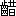
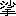
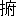
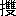
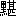
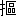
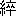
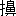

未だ宵ながら松立てる門は一様に
鎖籠めて、
真直に長く東より西に
横はれる
大道は掃きたるやうに物の影を
留めず、いと
寂くも
往来の絶えたるに、例ならず
繁き
車輪の
輾は、
或は
忙かりし、
或は飲過ぎし年賀の
帰来なるべく、
疎に寄する
獅子太鼓の
遠響は、はや今日に尽きぬる
三箇日を惜むが如く、その
哀切に
小き
膓は
断れぬべし。
元日快晴、二日快晴、三日快晴と
誌されたる日記を
涜して、この
黄昏より
凩は
戦出でぬ。今は「風吹くな、なあ吹くな」と優き声の
宥むる者無きより、
憤をも増したるやうに
飾竹を
吹靡けつつ、
乾びたる葉を
粗なげに鳴して、
吼えては
走行き、狂ひては引返し、
揉みに揉んで
独り散々に騒げり。
微曇りし空はこれが為に
眠を
覚されたる
気色にて、
銀梨子地の如く無数の星を
顕して、鋭く
沍えたる光は
寒気を
発つかと
想はしむるまでに、その
薄明に
曝さるる夜の
街は
殆ど氷らんとすなり。
人この
裏に立ちて
寥々冥々たる四望の間に、
争か
那の世間あり、社会あり、都あり、町あることを想得べき、
九重の天、
八際の地、始めて
混沌の
境を
出でたりといへども、万物
未だ
尽く
化生せず、風は
試に吹き、星は新に輝ける一大荒原の、何等の旨意も、秩序も、趣味も無くて、
唯濫に

く
横はれるに過ぎざる
哉。日の
中は
宛然沸くが如く楽み、
謳ひ、
酔ひ、
戯れ、
歓び、笑ひ、語り、興ぜし人々よ、彼等は
儚くも夏果てし
孑孑の形を
歛めて、
今将何処に
如何にして在るかを疑はざらんとするも
難からずや。
多時静なりし
後、
遙に拍子木の音は聞えぬ。その響の消ゆる頃
忽ち一点の
燈火は見え
初めしが、
揺々と町の
尽頭を
横截りて
失せぬ。再び寒き風は
寂き星月夜を
擅に吹くのみなりけり。
唯有る小路の湯屋は仕舞を急ぎて、
廂間の下水口より
噴出づる湯気は一団の白き雲を舞立てて、心地悪き
微温の四方に
溢るるとともに、
垢臭き悪気の
盛に
迸るに
遭へる綱引の車あり。勢ひで
角より曲り来にければ、避くべき
遑無くてその中を
駈抜けたり。
「うむ、臭い」
車の上に声して行過ぎし跡には、葉巻の吸殻の捨てたるが赤く見えて煙れり。
「もう湯は抜けるのかな」
「へい、松の内は早仕舞でございます」
車夫のかく答へし後は
語絶えて、車は
驀直に走れり、紳士は
二重外套の
袖を
犇と
掻合せて、
獺の
衿皮の内に耳より深く
面を
埋めたり。灰色の毛皮の敷物の
端を車の後に垂れて、
横縞の
華麗なる
浮波織の
蔽膝して、
提灯の
徽章はＴの花文字を
二個組合せたるなり。行き行きて車はこの小路の
尽頭を北に折れ、
稍広き
街に
出でしを、
僅に走りて又西に
入り、その南側の
半程に
箕輪と
記したる
軒燈を掲げて、
 竹
竹を飾れる
門構の内に
挽入れたり。玄関の障子に
燈影の
映しながら、
格子は
鎖固めたるを、車夫は
打叩きて、
「頼む、頼む」
奥の
方なる
響動の
劇きに紛れて、取合はんともせざりければ、二人の車夫は声を合せて
訪ひつつ、格子戸を
連打にすれば、やがて
急足の音立てて人は
出で
来ぬ。
円髷に結ひたる四十ばかりの
小く
痩せて色白き女の、
茶微塵の糸織の
小袖に黒の
奉書紬の紋付の羽織着たるは、この家の
内儀なるべし。彼の
忙しげに格子を
啓るを待ちて、紳士は優然と内に
入らんとせしが、土間の一面に
充満たる
履物の
杖を立つべき地さへあらざるに
遅へるを、彼は
虚さず
勤篤に
下立ちて、この敬ふべき
賓の為に
辛くも一条の道を開けり。かくて紳士の脱捨てし
駒下駄のみは
独り障子の内に取入れられたり。
箕輪の奥は十畳の客間と八畳の中の
間とを打抜きて、広間の
十個処に
真鍮の
燭台を据ゑ、五十
目掛の
蝋燭は沖の
漁火の如く燃えたるに、
間毎の天井に
白銅鍍の空気ラムプを
点したれば、
四辺は真昼より
明に、人顔も
眩きまでに
耀き
遍れり。三十人に余んぬる若き
男女は
二分に輪作りて、今を
盛と
歌留多遊を
為るなりけり。蝋燭の
焔と炭火の熱と
多人数の
熱蒸と混じたる一種の
温気は
殆ど凝りて動かざる一間の内を、
莨の
煙と
燈火の油煙とは
更に
縺れて渦巻きつつ立迷へり。込合へる人々の
面は皆赤うなりて、
白粉の
薄剥げたるあり、髪の
解れたるあり、
衣の
乱次く
着頽れたるあり。女は
粧ひ飾りたれば、取乱したるが
特に著るく見ゆるなり。男はシャツの
腋の裂けたるも知らで
胴衣ばかりになれるあり、羽織を脱ぎて帯の解けたる尻を突出すもあり、十の指をば
四まで紙にて
結ひたるもあり。さしも息苦き
温気も、
咽ばさるる
煙の渦も、皆狂して知らざる如く、
寧ろ喜びて
罵り
喚く声、
笑頽るる声、
捩合ひ、
踏破く
犇き、一斉に揚ぐる
響動など、絶間無き騒動の
中に
狼藉として
戯れ遊ぶ
為体は
三綱五常も
糸瓜の皮と地に
塗れて、
唯これ
修羅道を
打覆したるばかりなり。
海上風波の難に
遭へる時、
若干の油を取りて航路に
澆げば、
浪は
奇くも
忽ち
鎮りて、船は九死を
出づべしとよ。今この
如何とも
為べからざる乱脈の座中をば、その油の勢力をもて支配せる
女王あり。
猛びに猛ぶ男たちの心もその人の前には
和ぎて、
終に崇拝せざるはあらず。女たちは皆
猜みつつも
畏を
懐けり。中の間なる
団欒の
柱側に座を占めて、
重げに
戴ける
夜会結に
淡紫のリボン
飾して、
小豆鼠の
縮緬の羽織を着たるが、人の打騒ぐを興あるやうに涼き目を

りて、
躬は
淑かに
引繕へる娘あり。
粧飾より
相貌まで
水際立ちて、
凡ならず
媚を含めるは、色を売るものの仮の姿したるにはあらずやと、始めて彼を見るものは皆疑へり。一番の勝負の果てぬ間に、宮といふ名は
普く知られぬ。娘も
数多居たり。
醜きは、子守の借着したるか、茶番の姫君の
戸惑せるかと
覚きもあれど、中には二十人並、五十人並優れたるもありき。
服装は宮より
数等立派なるは
数多あり。彼はその点にては中の位に過ぎず。貴族院議員の
愛娘とて、最も
不器量を
極めて
遺憾なしと見えたるが、最も
綺羅を飾りて、その
起肩に
紋御召の
三枚襲を
被ぎて、帯は
紫根の
七糸に
百合の
折枝を
縒金の
盛上にしたる、人々これが為に目も
眩れ、心も消えて
眉を
皺めぬ。この外
種々色々の
絢爛なる中に
立交らひては、宮の
装は
纔に暁の星の光を保つに過ぎざれども、彼の色の白さは
如何なる
美き
染色をも奪ひて、彼の整へる
面は如何なる
麗き織物よりも
文章ありて、醜き人たちは如何に着飾らんともその醜きを
蔽ふ
能はざるが如く、彼は如何に飾らざるもその美きを害せざるなり。
袋棚と障子との
片隅に
手炉を囲みて、
蜜柑を
剥きつつ
語ふ男の
一個は、彼の横顔を
恍惚と
遙に見入りたりしが、
遂に
思堪へざらんやうに
呻き
出せり。
「
好い、好い、全く好い！
馬士にも
衣裳と
謂ふけれど、
美いのは衣裳には及ばんね。物それ
自らが美いのだもの、着物などはどうでも
可い、実は何も着てをらんでも可い」
「裸体なら
猶結構だ！」
この強き
合槌撃つは、美術学校の学生なり。
綱曳にて
駈着けし紳士は
姑く休息の後内儀に導かれて
入来りつ。その
後には、今まで居間に潜みたりし
主の
箕輪亮輔も附添ひたり。席上は入乱れて、ここを
先途と
激き勝負の最中なれば、彼等の
来れるに心着きしは
稀なりけれど、片隅に物語れる二人は
逸早く目を
側めて紳士の
風采を
視たり。
広間の
燈影は入口に立てる
三人の姿を
鮮かに照せり。色白の
小き内儀の口は
疳の為に
引歪みて、その夫の
額際より
赭禿げたる
頭顱は
滑かに光れり。妻は
尋常より小きに、夫は
勝れたる
大兵肥満にて、彼の常に
心遣ありげの
面色なるに引替へて、生きながら
布袋を見る如き福相したり。
紳士は
年歯二十六七なるべく、
長高く、好き程に肥えて、色は玉のやうなるに
頬の
辺には
薄紅を帯びて、額厚く、口大きく、
腮は左右に
蔓りて、面積の広き顔は
稍正方形を
成せり。
緩く波打てる髪を左の
小鬢より一文字に
撫付けて、少しは油を塗りたり。
濃からぬ
口髭を
生して、
小からぬ鼻に
金縁の
目鏡を
挾み、
五紋の
黒塩瀬の羽織に
華紋織の
小袖を
裾長に
着做したるが、六寸の
七糸帯に
金鏈子を垂れつつ、
大様に
面を挙げて座中を

したる
容は、
実に光を
発つらんやうに
四辺を払ひて見えぬ。この
団欒の中に彼の如く色白く、身奇麗に、しかも
美々しく
装ひたるはあらざるなり。
「何だ、あれは？」
例の二人の
一個はさも憎さげに
呟けり。
「
可厭な奴！」
唾吐くやうに言ひて学生はわざと
面を
背けつ。
「お
俊や、
一寸」と内儀は
群集の中よりその娘を手招きぬ。
お俊は両親の紳士を伴へるを見るより、
慌忙く起ちて
来れるが、顔好くはあらねど
愛嬌深く、いと善く父に
肖たり。高島田に
結ひて、
肉色縮緬の羽織に
撮みたるほどの肩揚したり。顔を
赧めつつ紳士の前に
跪きて、
慇懃に
頭を
低れば、彼は
纔に小腰を
屈めしのみ。
「どうぞ
此方へ」
娘は案内せんと待構へけれど、紳士はさして好ましからぬやうに
頷けり。母は
歪める口を怪しげに動して、
「あの、見事な、まあ、御年玉を御戴きだよ」
お俊は再び
頭を
低げぬ。紳士は
笑を含みて目礼せり。
「さあ、まあ、いらつしやいまし」
主の勧むる
傍より、妻はお俊を促して、お俊は紳士を
案内して、客間の床柱の前なる
火鉢在る
方に
伴れぬ。妻は
其処まで
介添に附きたり。二人は
家内の紳士を
遇ふことの
極めて
鄭重なるを
訝りて、彼の行くより坐るまで一挙一動も
見脱さざりけり。その行く時彼の姿はあたかも左の半面を見せて、
団欒の間を過ぎたりしが、
無名指に輝ける物の
凡ならず強き光は
燈火に
照添ひて、
殆ど
正く見る
能はざるまでに
眼を射られたるに
呆れ惑へり。天上の最も
明なる星は
我手に在りと言はまほしげに、紳士は彼等の
未だ
曾て見ざりし
大さの
金剛石を飾れる
黄金の指環を
穿めたるなり。
お俊は
骨牌の席に
復ると

く、
密に隣の娘の
膝を
衝きて口早に

きぬ。彼は
忙々く顔を
擡げて紳士の
方を見たりしが、その人よりはその指に
耀く物の異常なるに
駭かされたる
体にて、
「まあ、あの指環は！
一寸、
金剛石？」
「さうよ」
「大きいのねえ」
「三百円だつて」
お俊の説明を聞きて彼は
漫に
身毛の
弥立つを覚えつつ、
「まあ！ 好いのねえ」

の目ほどの真珠を附けたる指環をだに、この
幾歳か
念懸くれども
未だ容易に許されざる娘の胸は、
忽ち或事を思ひ浮べて
攻皷の如く
轟けり。彼は
惘然として殆ど我を失へる
間に、電光の如く隣より
伸来れる
猿臂は鼻の
前なる一枚の
骨牌を
引攫へば、
「あら、
貴女どうしたのよ」
お俊は
苛立ちて彼の
横膝を続けさまに
拊きぬ。
「
可くつてよ、可くつてよ、
以来もう可くつてよ」
彼は始めて空想の夢を
覚して、及ばざる
身の
分を
諦めたりけれども、一旦
金剛石の強き光に焼かれたる心は幾分の知覚を失ひけんやうにて、さしも
目覚かりける
手腕の程も見る見る
漸く
四途乱になりて、彼は
敢無くもこの時よりお俊の為に頼み
難き味方となれり。
かくしてかれよりこれに伝へ、甲より乙に通じて、
「
金剛石！」
「うむ、金剛石だ」
「金剛石」
「成程金剛石！」
「まあ、金剛石よ」
「あれが金剛石？」
「見給へ、金剛石」
「あら、まあ金剛石」
「
可感い金剛石」
「
可恐い光るのね、金剛石」
「三百円の金剛石」
瞬く
間に三十余人は相呼び相応じて紳士の富を
謳へり。
彼は人々の
更互におのれの
方を
眺むるを見て、その手に形好く
葉巻を持たせて、
右手を
袖口に差入れ、少し
懈げに床柱に
靠れて、目鏡の下より下界を
見遍すらんやうに
目配してゐたり。
かかる目印ある人の名は
誰しも問はであるべきにあらず、
洩れしはお俊の口よりなるべし。彼は
富山唯継とて、一代
分限ながら
下谷区に聞ゆる資産家の家督なり。同じ区なる富山銀行はその父の私設する所にして、市会議員の
中にも富山
重平の名は
見出さるべし。
宮の名の男の
方に
持囃さるる如く、富山と知れたる彼の名は
直に女の口々に
誦ぜられぬ。あはれ
一度はこの紳士と組みて、世に
愛たき宝石に
咫尺するの栄を得ばや、と彼等の
心々に
冀はざるは
希なりき。人
若し彼に咫尺するの栄を得ば、
啻にその目の
類無く
楽さるるのみならで、その鼻までも
菫花の多く

ぐべからざる
異香に
薫ぜらるるの
幸を受くべきなり。
男たちは
自から
荒められて、女の
挙りて
金剛石に
心牽さるる
気色なるを、
或は
妬く、或は浅ましく、多少の興を
冷さざるはあらざりけり。
独り宮のみは騒げる
体も無くて、その
清き
眼色はさしもの金剛石と光を争はんやうに、
用意深く、
心様も
幽く振舞へるを、崇拝者は益々
懽びて、我等の慕ひ参らする
効はあるよ、
偏にこの君を奉じて
孤忠を全うし、美と富との勝負を唯一戦に決して、紳士の憎き
面の皮を
引剥かん、と
手薬煉引いて待ちかけたり。されば宮と富山との
勢はあたかも
日月を
並懸けたるやうなり。宮は
誰と組み、富山は誰と組むらんとは、人々の最も
懸念するところなりけるが、
鬮の結果は驚くべき予想外にて、目指されし紳士と美人とは他の
三人とともに一組になりぬ。始め二つに輪作りし
人数はこの時合併して
一の
大なる
団欒に成されたるなり。しかも富山と宮とは
隣合に坐りければ、夜と昼との
一時に来にけんやうに皆
狼狽騒ぎて、
忽ちその隣に自ら社会党と
称ふる一組を
出せり。彼等の主義は不平にして、その目的は破壊なり。
則ち彼等は
専ら腕力を用ゐて或組の果報と
安寧とを妨害せんと為るなり。又その
前面には一人の女に内を守らしめて、屈強の男四人左右に遠征軍を組織し、左翼を
狼藉組と称し、右翼を
蹂躙隊と称するも、実は金剛石の鼻柱を
挫かんと
大童になれるに
外ならざるなり。果せる
哉、
件の組はこの勝負に
蓬き大敗を取りて、人も無げなる紳士もさすがに
鼻白み、美き人は顔を
赧めて、座にも
堪ふべからざるばかりの
面皮を
欠されたり。この一番にて紳士の姿は
不知見えずなりぬ。男たちは万歳を唱へけれども、女の中には
掌の玉を失へる
心地したるも多かりき。散々に破壊され、狼藉され、蹂躙されし富山は、余りにこの文明的ならざる遊戯に
怖をなして、
密に
主の居間に逃帰れるなりけり。
鬘を
被たるやうに
梳りたりし彼の髪は
棕櫚箒の如く乱れて、
環の
隻
げたる羽織の
紐は、
手長猿の月を
捉へんとする
状して
揺曳と
垂れり。主は見るよりさも
慌てたる顔して、
「どう遊ばしました。おお、お手から血が出てをります」
彼はやにはに
煙管を捨てて、
忽にすべからざらんやうに
急遽と身を起せり。
「ああ、
酷い目に
遭つた。どうもああ乱暴ぢや為様が無い。火事装束ででも出掛けなくつちやとても
立切れないよ。馬鹿にしてゐる！ 頭を二つばかり
撲れた」
手の甲の血を
吮ひつつ富山は不快なる
面色して
設の席に着きぬ。
予て用意したれば、
海老茶の
紋縮緬の

の
傍に
七宝焼の
小判形の
大手炉を置きて、
蒔絵の
吸物膳をさへ据ゑたるなり。主は手を打鳴して
婢を呼び、
大急に銚子と料理とを
誂へて、
「それはどうも飛でもない事を。
外に
何処もお
怪我はございませんでしたか」
「そんなに有られて
耐るものかね」
為う事無さに主も
苦笑せり。
「
唯今絆創膏を差上げます。何しろ皆書生でございますから随分乱暴でございませう。
故々御招申しまして
甚だ恐入りました。もう
彼地へは御出陣にならんが
宜うございます。何もございませんがここで
何卒御寛り」
「ところがもう一遍行つて見やうかとも思ふの」
「へえ、又いらつしやいますか」
物は言はで
打笑める富山の
腮は
愈展れり。早くもその意を得てや
破顔せる
主の目は、
薄の
切疵の如くほとほと有か無きかになりぬ。
「では
御意に召したのが、へえ？」
富山は
益笑を
湛へたり。
「ございましたらう、さうでございませうとも」
「
何故な」
「何故も無いものでございます。
十目の見るところぢやございませんか」
富山は
頷きつつ、
「さうだらうね」
「あれは
宜うございませう」
「
一寸好いね」
「まづその
御意でお熱いところをお
一盞。
不満家の
貴方が一寸好いと
有仰る位では、
余程尤物と思はなければなりません。全く
寡うございます」
倉皇入来れる内儀は思ひも懸けず富山を見て、
「おや、
此方にお
在あそばしたのでございますか」
彼は先の程より台所に
詰きりて、
中入の食物の
指図などしてゐたるなりき。
「
酷く負けて
迯げて来ました」
「それは好く迯げていらつしやいました」
例の
歪める口を
窄めて内儀は
空々しく笑ひしが、
忽ち彼の羽織の
紐の
偏断れたるを
見尤めて、
環の失せたりと知るより、
慌て驚きて起たんとせり、
如何にとなればその環は純金製のものなればなり。富山は事も無げに、
「なあに、
宜い」
「宜いではございません。
純金では大変でございます」
「なあに、
可いと言ふのに」と聞きも
訖らで彼は広間の
方へ
出でて行けり。
「時にあれの身分はどうかね」
「さやう、悪い事はございませんが……」
「が、どうしたのさ」
「が、
大した事はございませんです」
「それはさうだらう。
然し
凡そどんなものかね」
「
旧は農商務省に勤めてをりましたが、
唯今では地所や
家作などで暮してゐるやうでございます。どうか小金も有るやうな話で、
鴫沢隆三と申して、
直隣町に居りまするが、
極手堅く
小体に
遣つてをるのでございます」
「はあ、知れたもんだね」
我は
顔に
頤を
掻撫づれば、例の
金剛石は
燦然と光れり。
「それでも可いさ。然し
嫁れやうか、
嗣子ぢやないかい」
「さやう、一人娘のやうに思ひましたが」
「それぢや
窮るぢやないか」
「
私は
悉い事は存じませんから、一つ聞いて見ませうで」
程無く内儀は環を
捜得て
帰来にけるが、
誰が
悪戯とも知らで
耳掻の如く
引展されたり。主は彼に向ひて宮の
家内の様子を
訊ねけるに、知れる
一遍は語りけれど、娘は
猶能く知るらんを、
後に招きて聴くべしとて、夫婦は
頻に
觴を
侑めけり。
富山唯継の今宵ここに
来りしは、年賀にあらず、
骨牌遊にあらず、娘の多く
聚れるを機として、
嫁選せんとてなり。彼は
一昨年の冬
英吉利より帰朝するや否や、八方に
手分して嫁を求めけれども、器量
望の
太甚しければ、二十余件の縁談皆意に
称はで、今日が日までもなほその事に
齷齪して
已まざるなり。当時取急ぎて普請せし
芝の新宅は、
未だ人の住着かざるに、はや日に
黒み、或所は雨に朽ちて、薄暗き一間に留守居の老夫婦の額を
鳩めては、寂しげに彼等の昔を語るのみ。
骨牌の会は十二時に

びて終りぬ。十時頃より一人起ち、二人起ちて、見る間に
人数の三分の一強を失ひけれども、
猶飽かで残れるものは景気好く勝負を続けたり。富山の姿を隠したりと知らざる者は、彼敗走して帰りしならんと想へり。宮は会の終まで居たり。彼
若疾く
還りたらんには、
恐く踏留るは三分の一弱に過ぎざりけんを、と我物顔に富山は主と語合へり。
彼に心を寄せし
輩は皆彼が
夜深の
帰途の程を
気遣ひて、我
願くは
何処までも送らんと、
絶か
念ひに念ひけれど、彼等の
深切は無用にも、宮の帰る時一人の男附添ひたり。その人は高等中学の制服を着たる二十四五の学生なり。
金剛石に
亜いでは彼の挙動の
目指れしは、座中に宮と懇意に見えたるは彼一人なりければなり。この一事の
外は人目を
牽くべき点も無く、彼は多く語らず、又は
躁がず、始終
慎くしてゐたり。終までこの
両個の
同伴なりとは露顕せざりき。さあらんには
余所々々しさに過ぎたればなり。彼等の打連れて
門を
出づるを見て、始めて失望せしもの
寡からず。
宮は
鳩羽鼠の
頭巾を
被りて、
濃浅黄地に白く
中形模様ある毛織のシォールを
絡ひ、学生は焦茶の
外套を着たるが、身を
窄めて吹来る
凩を
遣過しつつ、遅れし宮の
辿着くを待ちて言出せり。
「
宮さん、あの
金剛石の指環を
穿めてゐた奴はどうだい、
可厭に気取つた奴ぢやないか」
「さうねえ、だけれど
衆があの人を目の
敵にして乱暴するので気の毒だつたわ。隣合つてゐたもんだから私まで
酷い目に
遭されてよ」
「うむ、
彼奴が高慢な顔をしてゐるからさ。実は僕も
横腹を二つばかり突いて遣つた」
「まあ、酷いのね」
「ああ云ふ奴は男の目から見ると
反吐が出るやうだけれど、女にはどうだらうね、あんなのが女の気に入るのぢやないか」
「私は
可厭だわ」
「
芬々と香水の
匂がして、
金剛石の金の指環を穿めて、殿様然たる
服装をして、
好いに
違無いさ」
学生は
嘲むが如く笑へり。
「私は可厭よ」
「可厭なものが組になるものか」
「組は
鬮だから
為方が無いわ」
「鬮だけれど、組に成つて可厭さうな様子も見えなかつたもの」
「そんな無理な事を言つて！」
「三百円の金剛石ぢや到底僕等の及ぶところにあらずだ」
「知らない！」
宮はシォールを
揺上げて鼻の
半まで
掩隠しつ。
「ああ寒い！」
男は肩を
峙てて
直と彼に寄添へり。宮は
猶黙して歩めり。
「ああ寒い

」
宮はなほ答へず。
「ああ寒い※
［＃感嘆符三つ、23-5］」
彼はこの時始めて男の
方を見向きて、
「どうしたの」
「ああ寒い」
「あら可厭ね、どうしたの」
「寒くて
耐らんからその中へ
一処に入れ給へ」
「どの中へ」
「シォールの中へ」
「
可笑い、可厭だわ」
男は
逸早く彼の押へしシォールの
片端を奪ひて、その
中に身を
容れたり。
宮は歩み得ぬまでに笑ひて、
「あら
貫一さん。これぢや切なくて歩けやしない。ああ、
前面から人が来てよ」
かかる
戯を
作して
憚らず、女も為すままに
信せて
咎めざる彼等の
関繋は
抑も
如何。事情ありて十年来鴫沢に
寄寓せるこの
間貫一は、
此年の夏大学に
入るを待ちて、宮が
妻せらるべき人なり。
間貫一の十年来鴫沢の家に寄寓せるは、
怙る所無くて養はるるなり。母は彼の
幼かりし頃世を去りて、父は彼の尋常中学を卒業するを見るに及ばずして病死せしより、彼は
哀嘆の中に父を葬るとともに、
己が前途の望をさへ葬らざる
可からざる不幸に
遭へり。父在りし日さへ月謝の支出の血を絞るばかりに
苦き
痩世帯なりけるを、当時彼なほ十五歳ながら間の戸主は学ぶに
先ちて
食ふべき急に迫られぬ。幼き戸主の学ぶに先ちては食ふべきの急、食ふべきに先ちては
葬すべき急、
猶これに先ちては看護医薬の急ありしにあらずや。自活すべくもあらぬ
幼き者の
如何にしてこれ等の急を
救得しか。
固より貫一が力の
能ふべきにあらず、鴫沢隆三の身
一個に
引承けて万端の世話せしに
因るなり。
孤児の父は隆三の恩人にて、彼は
聊かその旧徳に報ゆるが為に、
啻にその病めりし時に扶助せしのみならず、常に
心着けては貫一の月謝をさへ
間支弁したり。かくて貧き父を
亡ひし
孤児は富める
後見を得て鴫沢の家に引取られぬ。隆三は恩人に報ゆるにその短き
生時を
以て
慊らず思ひければ、とかくはその忘形見を
天晴人と成して、彼の一日も忘れざりし志を継がんとせるなり。
亡き人常に言ひけるは、
苟くも侍の家に生れながら、何の
面目ありて我子貫一をも人に
侮らすべきや。彼は学士となして、願くは再び
四民の
上に立たしめん。貫一は不断にこの
言を
以て
警められ、隆三は会ふ毎にまたこの言を
以て
喞たれしなり。彼は
言ふ
遑だに無くて
暴に
歿りけれども、その前常に口にせしところは明かに彼の遺言なるべきのみ。
されば貫一が鴫沢の家内に於ける境遇は、決して厄介者として
陰に
疎まるる如き
憂目に
遭ふにはあらざりき。
憖ひ
継子などに生れたらんよりは、かくて在りなんこそ
幾許か
幸は多からんよ、と知る人は
噂し合へり。隆三夫婦は
実に彼を恩人の忘形見として
疎ならず取扱ひけるなり。さばかり彼の愛せらるるを見て、彼等は貫一をば娘の婿にせむとすならんと想へる者もありしかど、当時彼等は構へてさる心ありしにはあらざりけるも、彼の篤学なるを見るに及びて、
漸くその心は
出で
来て、彼の高等中学校に
入りし時、彼等の了簡は始めて定りぬ。
貫一は篤学のみならず、性質も
直に、
行も
正かりければ、この人物を以つて学士の冠を
戴かんには、誠に
獲易からざる婿なるべし、と夫婦は
私に喜びたり。この
身代を譲られたりとて、
他姓を
冒して
得謂はれぬ屈辱を忍ばんは、彼の
屑しと為ざるところなれども、美き宮を妻に為るを得ば、この身代も屈辱も何か有らんと、彼はなかなか夫婦に増したる
懽を
懐きて、
益学問を励みたり。宮も貫一をば憎からず思へり。されど恐くは貫一の思へる
半には過ぎざらん。彼は自らその
色好を知ればなり。世間の女の
誰か自らその色好を知らざるべき、憂ふるところは自ら知るに
過るに在り。
謂ふ可くんば、宮は
己が美しさの
幾何値するかを当然に知れるなり。彼の美しさを以てして
纔に
箇程の資産を
嗣ぎ、類多き学士
風情を夫に有たんは、決して彼が
所望の絶頂にはあらざりき。彼は貴人の奥方の
微賤より
出でし
例寡からざるを見たり。又は富人の醜き妻を
厭ひて、美き
妾に親むを見たり。才だにあらば男立身は思のままなる如く、女は色をもて
富貴を得べしと信じたり。なほ彼は色を以て富貴を得たる人たちの
若干を見たりしに、その
容の
己に
如かざるものの多きを
見出せり。
剰へ彼は行く所にその美しさを唱はれざるはあらざりき。なほ
一件最も彼の意を強うせし事あり。そは彼が十七の
歳に起りし事なり。当時彼は明治音楽院に通ひたりしに、ヴァイオリンのプロフェッサアなる
独逸人は彼の愛らしき
袂に
艶書を投入れぬ。これ
素より
仇なる恋にはあらで、
女夫の
契を望みしなり。
殆ど同時に、院長の
某は年四十を
踰えたるに、先年その妻を
喪ひしをもて再び彼を
娶らんとて、
密に一室に招きて切なる心を打明かせし事あり。
この時彼の
小き胸は破れんとするばかり
轟けり。
半は
曾て覚えざる
可羞の為に、半は
遽に
大なる
希望の宿りたるが為に。彼はここに始めて
己の美しさの
寡くとも奏任以上の地位ある名流をその
夫に
値ひすべきを信じたるなり。彼を美く見たるは彼の教師と院長とのみならで、
牆を隣れる
男子部の諸生の常に彼を見んとて打騒ぐをも、宮は知らざりしにあらず。
若かのプロフェッサアに添はんか、
或は四十の院長に従はんか、彼の栄誉ある地位は、学士を婿にして鴫沢の後を
嗣ぐの比にはあらざらんをと、一旦
抱ける
希望は年と共に太りて、彼は始終昼ながら夢みつつ、今にも貴き人又は富める人又は名ある人の
己を
見出して、玉の
輿を
舁せて迎に
来るべき天縁の、必ず
廻到らんことを信じて疑はざりき。彼のさまでに深く貫一を思はざりしは全くこれが為のみ。されども決して彼を
嫌へるにはあらず、彼と添はばさすがに
楽からんとは
念へるなり。
如此く
決定にそれとは無けれど又有りとし見ゆる
箒木の好運を望みつつも、彼は怠らず貫一を愛してゐたり。貫一は彼の己を愛する外にはその胸の中に何もあらじとのみ思へるなりけり。
漆の如き
闇の
中に貫一の書斎の枕時計は十時を打ちぬ。彼は午後四時より
向島の
八百松に新年会ありとて
未だ
還らざるなり。
宮は奥より手ラムプを持ちて
入来にけるが、机の上なる書燈を
点し
了れる時、
婢は台十能に火を盛りたるを
持来れり。宮はこれを
火鉢に移して、
「さうして奥のお
鉄瓶も持つて来ておくれ。ああ、もう
彼方は
御寝になるのだから」
久く
人気の絶えたりし一間の
寒は、今
俄に人の温き肉を得たるを喜びて、
直ちに
咬まんとするが如く
膚に
薄れり。宮は
慌忙く火鉢に取付きつつ、目を挙げて
書棚に飾れる時計を見たり。
夜の
闇く静なるに、
燈の光の
独り美き顔を照したる、限無く
艶なり。松の内とて彼は常より着飾れるに、化粧をさへしたれば、露を帯びたる花の
梢に月のうつろへるが如く、
背後の壁に映れる黒き影さへ
香滴るるやうなり。
金剛石と光を争ひし目は
惜気も無く
りて時計の
秒を刻むを
打目戍れり。火に
翳せる彼の手を見よ、玉の如くなり。さらば友禅模様ある
紫縮緬の
半襟に
韜まれたる彼の胸を想へ。その胸の
中に彼は今
如何なる事を思へるかを想へ。彼は憎からぬ人の
帰来を
待佗ぶるなりけり。
一時又
寒の
太甚きを覚えて、彼は時計より目を放つとともに起ちて、火鉢の
対面なる貫一が
の上に座を移せり。こは彼の手に縫ひしを貫一の常に敷くなり、貫一の敷くをば今夜彼の敷くなり。
若やと聞着けし車の音は
漸く
近きて、
益轟きて、
竟に
我門に
停りぬ。宮は
疑無しと思ひて起たんとする時、客はいと
酔ひたる声して物言へり。貫一は
生下戸なれば
嘗て
酔ひて帰りし事あらざれば、宮は力無く又坐りつ。時計を見れば早や十一時に
垂んとす。
門の戸
引啓けて、酔ひたる足音の土間に踏入りたるに、宮は何事とも分かず
唯慌ててラムプを持ちて
出でぬ。台所より
婢も、
出合へり。
足の
踏所も
覚束無げに酔ひて、帽は落ちなんばかりに
打傾き、ハンカチイフに
裹みたる折を左に
挈げて、
山車人形のやうに
揺々と立てるは貫一なり。
面は今にも破れぬべく
紅に熱して、舌の
乾くに
堪へかねて
連に
空唾を吐きつつ、
「遅かつたかね。さあ
御土産です。
還つてこれを細君に
遣る。何ぞ
仁なるや」
「まあ、大変酔つて！ どうしたの」
「酔つて
了つた」
「あら、
貫一さん、こんな所に
寐ちや困るわ。さあ、早くお上りなさいよ」
「かう見えても靴が脱げない。ああ酔つた」
仰様に倒れたる貫一の
脚を
掻抱きて、宮は
辛くもその靴を取去りぬ。
「起きる、ああ、今起きる。さあ、起きた。起きたけれど、手を
牽いてくれなければ僕には歩けませんよ」
宮は
婢に
燈を
把らせ、自らは貫一の手を牽かんとせしに、彼は
踉きつつ肩に
縋りて
遂に放さざりければ、宮はその身一つさへ
危きに、やうやう
扶けて書斎に
入りぬ。
の上に
舁下されし貫一は
頽るる
体を机に支へて、
打仰ぎつつ微吟せり。
「君に勧む、
金縷の
衣を惜むなかれ。君に勧む、
須く少年の時を惜むべし。花有り折るに
堪へなば
直に折る
須し。花無きを待つて
空く枝を折ることなかれ」
「貫一さん、どうしてそんなに酔つたの？」
「酔つてゐるでせう、僕は。ねえ、
宮さん、非常に酔つてゐるでせう」
「酔つてゐるわ。
苦いでせう」
「
然矣、苦いほど酔つてゐる。こんなに酔つてゐるに
就いては
大いに訳が有るのだ。さうして又宮さんなるものが大いに介抱して可い訳が有るのだ。宮さん！」
「
可厭よ、私は、そんなに酔つてゐちや。不断
嫌ひの癖に
何故そんなに飲んだの。誰に
飲されたの。
端山さんだの、荒尾さんだの、白瀬さんだのが附いてゐながら、
酷いわね、こんなに
酔して。十時にはきつと帰ると云ふから私は待つてゐたのに、もう十一時過よ」
「本当に待つてゐてくれたのかい、
宮さん。
謝、
多謝！
若それが事実であるならばだ、僕はこのまま死んでも恨みません。こんなに酔されたのも、実はそれなのだ」
彼は宮の手を取りて、情に堪へざる如く
握緊めつ。
「二人の事は荒尾より外に知る者は無いのだ。荒尾が又決して
喋る男ぢやない。それがどうして知れたのか、
衆が知つてゐて……僕は実に驚いた。四方八方から
祝盃だ祝盃だと、十も二十も一度に
猪口を差されたのだ。祝盃などを受ける
覚は無いと言つて、手を
引籠めてゐたけれど、なかなか
衆聴かないぢやないか」
宮は
窃に
笑を帯びて余念なく聴きゐたり。
「それぢや祝盃の主意を変へて、
仮初にもああ云ふ美人と
一所に居て寝食を
倶にすると云ふのが既に
可羨い。そこを祝すのだ。次には、君も
男児なら、更に一歩を進めて、妻君に為るやうに十分運動したまへ。十年も一所に居てから、今更人に
奪られるやうな事があつたら、
独り間貫一
一個人の恥辱ばかりではない、我々
朋友全体の面目にも関する事だ。我々朋友ばかりではない、
延いて高等中学の
名折にもなるのだから、是非あの美人を君が妻君にするやうに、これは我々が心を
一にして
結の神に
祷つた酒だから、辞退するのは礼ではない。受けなかつたら
却つて神罰が有ると、
弄謔とは知れてゐるけれど、
言草が面白かつたから、
片端から引受けて
呷々遣付けた。
宮さんと夫婦に成れなかつたら、はははははは高等中学の名折になるのだと。恐入つたものだ。何分
宜く願ひます」
「
可厭よ、もう貫一さんは」
「友達中にもさう知れて見ると、立派に夫婦にならなければ、
弥よ僕の男が立たない
義だ」
「もう
極つてゐるものを、今更……」
「さうでないです。この頃
翁さんや
姨さんの様子を見るのに、どうも僕は……」
「そんな事は
決して無いわ、邪推だわ」
「実は翁さんや姨さんの
了簡はどうでも可い、宮さんの心一つなのだ」
「私の心は極つてゐるわ」
「さうかしらん？」
「さうかしらんて、それぢや
余りだわ」
貫一は
酔を支へかねて宮が
膝を枕に倒れぬ。宮は彼が火の如き
頬に、額に、手を加へて、
「水を上げませう。あれ、又
寐ちや……貫一さん、貫一さん」
寔に愛の
潔き
哉、この時は宮が胸の中にも例の汚れたる
希望は跡を絶ちて彼の美き目は他に見るべきもののあらざらんやうに、その力を貫一の寐顔に
鍾めて、富も貴きも、
乃至有ゆる利慾の念は、その膝に覚ゆる一団の微温の為に
溶されて、彼は
唯妙に
香き
甘露の夢に
酔ひて前後をも知らざるなりけり。
諸の
可忌き
妄想はこの夜の如く
眼を閉ぢて、この
一間に彼等の二人よりは在らざる如く、彼は世間に別人の影を見ずして、又この
明なる
燈火の光の如きものありて、
特に彼等をのみ照すやうに感ずるなり。
或日
箕輪の内儀は思も懸けず
訪来りぬ。その娘のお俊と宮とは学校
朋輩にて常に
往来したりけれども、
未だ
家と家との交際はあらざるなり。彼等の通学せし頃さへ親々は互に
識らで過ぎたりしに、今は二人の
往来も
漸く
踈くなりけるに及びて、
俄にその母の
来れるは、
如何なる
故にか、と宮も
両親も
怪き事に
念へり。
凡そ三時間の後彼は
帰行きぬ。
先に怪みし家内は彼の来りしよりもその用事の更に
思懸けざるに驚けり。貫一は不在なりしかばこの
珍き
客来のありしを知らず、宮もまた
敢て告げずして、二日と過ぎ、三日と過ぎぬ。その日より宮は
少く食して、多く眠らずなりぬ。貫一は知らず、宮はいよいよ告げんとは
為ざりき。この間に
両親は
幾度と無く談合しては、その事を決しかねてゐたり。
彼の陰に在りて起れる事、又は見るべからざる人の心に浮べる事どもは、貫一の知る
因もあらねど、
片時もその目の忘れざる宮の様子の常に変れるを
見出さんは
難き事にあらず。さも無かりし人の顔の色の
遽に光を失ひたるやうにて、
振舞など
別けて力無く、笑ふさへいと
打湿りたるを。
宮が居間と
謂ふまでにはあらねど、彼の
箪笥手道具
等置きたる小座敷あり。ここには
火燵の炉を切りて、用無き人の来ては
迭に
冬籠する所にも用ゐらる。彼は常にここに居て針仕事するなり。
倦めば
琴をも
弾くなり。彼が
手玩と見ゆる
狗子柳のはや根を
弛み、
真の打傾きたるが、
鮟鱇切の水に
埃を浮べて小机の
傍に在り。庭に向へる
肱懸窓の
明きに
敷紙を
披げて、宮は
膝の上に
紅絹の
引解を載せたれど、針は持たで、
懶げに火燵に
靠れたり。
彼は
少く食して多く眠らずなりてよりは、好みてこの一間に
入りて、深く物思ふなりけり。
両親は
仔細を知れるにや、この様子をば怪まんともせで、唯彼の
為すままに
委せたり。
この日貫一は授業
始の式のみにて早く
帰来にけるが、
下座敷には
誰も見えで、
火燵の間に宮の
咳く声して、後は静に、我が帰りしを知らざるよと思ひければ、忍足に
窺寄りぬ。
襖の
僅に
啓きたる
隙より
差覗けば、宮は火燵に
倚りて
硝子障子を
眺めては
俯目になり、又胸痛きやうに仰ぎては
太息吐きて、
忽ち物の音を聞澄すが如く、美き目を
瞠るは、何をか
思凝すなるべし。人の
窺ふと知らねば、彼は口もて訴ふるばかりに心の
苦悶をその
状に
顕して
憚らざるなり。
貫一は
異みつつも息を潜めて、
猶彼の
為んやうを見んとしたり。宮は
少時ありて火燵に入りけるが、
遂に
櫓に
打俯しぬ。
柱に身を倚せて、
斜に内を窺ひつつ貫一は
眉を
顰めて
思惑へり。
彼は
如何なる事ありてさばかり案じ
煩ふならん。さばかり案じ煩ふべき事を如何なれば我に明さざるならん。その
故のあるべく覚えざるとともに、案じ煩ふ事のあるべきをも彼は信じ得ざるなりけり。
かく又案じ煩へる彼の
面も
自ら
俯きぬ。問はずして知るべきにあらずと
思定めて、再び内を
差覗きけるに、宮は猶打俯してゐたり。
何時か落ちけむ、
蒔絵の
櫛の
零れたるも知らで。
人の
気勢に驚きて宮の振仰ぐ時、貫一は既にその
傍に在り。彼は
慌てて
思頽るる
気色を
蔽はんとしたるが如し。
「ああ、
吃驚した。
何時御帰んなすつて」
「今帰つたの」
「さう。
些も知らなかつた」
宮はおのれの顔の
頻に眺めらるるを
眩ゆがりて、
「何をそんなに
視るの、
可厭、私は」
されども彼は猶目を放たず、宮はわざと
打背きて、
裁片畳の内を
撈せり。
「
宮さん、お前さんどうしたの。ええ、
何処か
不快のかい」
「何ともないのよ。
何故？」
かく言ひつつ
益急に
撈せり。貫一は帽を
冠りたるまま火燵に
片肱掛けて、
斜に彼の顔を
見遣りつつ、
「だから僕は始終水臭いと言ふんだ。さう言へば、
直に
疑深いの、神経質だのと言ふけれど、それに違無いぢやないか」
「だつて何ともありもしないものを……」
「何ともないものが、
惘然考へたり、
太息を
吐いたりして
鬱いでゐるものか。僕は
先之から
唐紙の外で立つて見てゐたんだよ。病気かい、心配でもあるのかい。言つて
聞したつて可いぢやないか」
宮は言ふところを知らず、
纔に膝の上なる
紅絹を
手弄るのみ。
「病気なのかい」
彼は
僅に
頭を
掉りぬ。
「それぢや心配でもあるのかい」
彼はなほ頭を掉れば、
「ぢやどうしたと云ふのさ」
宮は唯胸の
中を
車輪などの
廻るやうに覚ゆるのみにて、誠にも
詐にも
言を
出すべき
術を知らざりき。彼は犯せる罪の
終に
秘む
能はざるを悟れる如き
恐怖の為に
心慄けるなり。
如何に答へんとさへ惑へるに、
傍には貫一の益
詰らんと待つよと思へば、身は
搾らるるやうに
迫来る息の
隙を、得も
謂はれず
冷かなる汗の流れ流れぬ。
「それぢやどうしたのだと言ふのに」
貫一の
声音は
漸く
苛立ちぬ。彼の得言はぬを怪しと思へばなり。宮は驚きて
不覚に
言出せり。
「どうしたのだか私にも解らないけれど、……私はこの二三日どうしたのだか……変に色々な事を考へて、何だか世の中がつまらなくなつて、唯悲くなつて来るのよ」
呆れたる貫一は
瞬もせで耳を
傾けぬ。
「人間と云ふものは今日かうして生きてゐても、
何時死んで
了ふか解らないのね。かうしてゐれば、
可楽な事もある
代に
辛い事や、悲い事や、
苦い事なんぞが有つて、二つ好い事は無し、考れば考るほど私は世の中が心細いわ。
不図さう
思出したら、毎日そんな事ばかり考へて、
可厭な
心地になつて、自分でもどうか
為たのかしらんと思ふけれど、私病気のやうに見えて？」
目を閉ぢて
聴ゐし貫一は
徐に

を開くとともに
眉を
顰めて、
「それは病気だ！」
宮は
打萎れて
頭を垂れぬ。
「
然し心配する事は無いさ。気に為ては可かんよ。可いかい」
「ええ、心配しはしません」
異く沈みたるその声の寂しさを、
如何に貫一は聴きたりしぞ。
「それは病気の
所為だ、脳でも
不良のだよ。そんな事を考へた日には、一日だつて笑つて暮せる日は有りはしない。
固より世の中と云ふものはさう面白い
義のものぢやないので、又人の身の上ほど解らないものは無い。それはそれに違無いのだけれど、
衆が
皆そんな
了簡を起して御覧な、世界中御寺ばかりになつて
了ふ。
儚いのが世の中と覚悟した上で、その儚い、つまらない中で
切ては
楽を求めやうとして、
究竟我々が働いてゐるのだ。考へて
鬱いだところで、つまらない世の中に儚い人間と生れて来た以上は、どうも今更為方が無いぢやないか。だから、つまらない世の中を
幾分か面白く暮さうと考へるより外は無いのさ。面白く暮すには、何か
楽が無ければならない。
一事かうと云ふ楽があつたら決して世の中はつまらんものではないよ。
宮さんはそれでは楽と云ふものが無いのだね。この楽があればこそ生きてゐると思ふ程の楽は無いのだね」
宮は美き目を挙げて、求むるところあるが如く
偸に男の顔を見たり。
「きつと無いのだね」
彼は
笑を含みぬ。されども苦しげに見えたり。
「無い？」
宮の
肩頭を
捉りて貫一は
此方に引向けんとすれば、
為すままに彼は
緩く身を
廻したれど、顔のみは
可羞く
背けてゐたり。
「さあ、無いのか、有るのかよ」
肩に懸けたる手をば放さで
連に
揺るるを、宮は
銕の
槌もて
撃懲さるるやうに覚えて、安き心もあらず。
冷なる汗は又
一時流出でぬ。
「これは
怪しからん！」
宮は
危みつつ彼の顔色を
候ひぬ。常の如く戯るるなるべし。その
面は
和ぎて一点の怒気だにあらず、
寧ろ
唇頭には笑を包めるなり。
「僕などは
一件大きな大きな楽があるので、世の中が愉快で愉快で
耐らんの。一日が
経つて行くのが惜くて惜くてね。僕は世の中がつまらない為にその楽を
拵へたのではなくて、その楽の為にこの世の中に活きてゐるのだ。
若しこの世の中からその楽を取去つたら、世の中は無い！ 貫一といふ者も無い！ 僕はその楽と
生死を
倶にするのだ。
宮さん、
可羨いだらう」
宮は
忽ち全身の血の氷れるばかりの寒さに
堪へかねて
打顫ひしが、この心の中を
覚られじと思へば、弱る力を励して、
「
可羨いわ」
「可羨ければ、お前さんの事だから分けてあげやう」
「
何卒」
「ええ
悉皆遣つて
了へ！」
彼は
外套の
衣兜より一袋のボンボンを
取出して
火燵の上に置けば、
余力に袋の口は
弛みて、紅白の玉は
珊々と
乱出でぬ。こは宮の最も好める菓子なり。
その翌々日なりき、宮は貫一に勧められて行きて医の診察を受けしに、胃病なりとて
一瓶の
水薬を与へられぬ。貫一は
信に胃病なるべしと思へり。患者は必ずさる事あらじと思ひつつもその薬を服したり。
懊悩として
憂に
堪へざらんやうなる彼の
容体に
幾許の変も見えざりけれど、その心に水と火の如きものありて
相剋する苦痛は、
益募りて
止ざるなり。
貫一は彼の憎からぬ人ならずや。
怪むべし、彼はこの日頃さしも憎からぬ人を見ることを
懼れぬ。見ねばさすがに見まほしく思ひながら、
面を合すれば
冷汗も出づべき
恐怖を生ずるなり。彼の
情有る
言を聞けば、身をも
斫らるるやうに覚ゆるなり。宮は彼の優き
心根を見ることを恐れたり。宮が心地
勝れずなりてより、彼に対する貫一の優しさはその
平生に一層を加へたれば、彼は死を
覓むれども得ず、生を求むれども得ざらんやうに、悩乱してほとほとその
堪ふべからざる限に至りぬ。
遂に彼はこの
苦を両親に訴へしにやあらん、
一日母と娘とは
遽に身支度して、
忙々く車に乗りて出でぬ。彼等は
小からぬ
一個の
旅鞄を携へたり。
大風の
凪ぎたる
迹に
孤屋の立てるが如く、
侘しげに留守せる
主の隆三は
独り碁盤に向ひて
碁経を
披きゐたり。
齢はなほ六十に遠けれど、
頭は
夥き
白髪にて、長く生ひたる
髯なども六分は白く、
容は
痩せたれど
未だ老の
衰も見えず、
眉目温厚にして
頗る
古井波無きの風あり。
やがて
帰来にける貫一は二人の在らざるを怪みて
主に
訊ねぬ。彼は
徐に長き髯を
撫でて片笑みつつ、
「二人はの、今朝新聞を見ると急に思着いて、熱海へ出掛けたよ。何でも
昨日医者が湯治が良いと言うて
切に勧めたらしいのだ。いや、もう急の
思着で、
脚下から鳥の
起つやうな騒をして、十二時三十分の
 車
車で。ああ、
独で寂いところ、まあ茶でも
淹れやう」
貫一は有る可からざる事のやうに疑へり。
「はあ、それは。何だか夢のやうですな」
「はあ、
私もそんな
塩梅で」
「
然し、湯治は良いでございませう。
幾日ほど
逗留のお
心算で？」
「まあどんなだか四五日と云ふので、
些の着のままで出掛けたのだが、なあに
直に飽きて
了うて、四五日も居られるものか、
出養生より
内養生の方が楽だ。何か
旨い物でも食べやうぢやないか、二人で、なう」
貫一は
着更へんとて書斎に還りぬ。宮の
遺したる筆の
蹟などあらんかと思ひて、求めけれども見えず。彼の居間をも尋ねけれど在らず。急ぎ出でしなればさもあるべし、明日は必ず
便あらんと
思飜せしが、さすがに心楽まざりき。彼の六時間学校に在りて
帰来れるは、心の
痩するばかり美き
俤に
饑ゑて帰来れるなり。彼は
空く饑ゑたる心を
抱きて慰むべくもあらぬ机に向へり。
「実に水臭いな。
幾許急いで出掛けたつて、何とか
一言ぐらゐ
言遺いて
行きさうなものぢやないか。
一寸其処へ行つたのぢやなし、四五日でも旅だ。第一言遺く、言遺かないよりは、湯治に行くなら行くと、
始に話が有りさうなものだ。急に思着いた？ 急に思着いたつて、急に行かなければならん所ぢやあるまい。俺の帰るのを待つて、話をして、
明日行くと云ふのが順序だらう。四五日ぐらゐの
離別には顔を見ずに行つても、あの人は平気なのかしらん。
女と云ふ者は一体男よりは情が
濃であるべきなのだ。それが濃でないと為れば、愛してをらんと考へるより外は無い。
豈にあの人が愛してをらんとは考へられん。又
万々そんな事は無い。けれども十分に愛してをると云ふほど濃ではないな。
元来あの人の性質は冷淡さ。それだから
所謂『娘らしい』ところが余り無い。自分の思ふやうに情が濃でないのもその
所為か知らんて。子供の時分から成程さう云ふ
傾向は
有つてゐたけれど、今のやうに
太甚くはなかつたやうに考へるがな。子供の時分にさうであつたなら、今ぢや
猶更でなければならんのだ。それを考へると疑ふよ、疑はざるを得ない！
それに引替へて自分だ、自分の愛してゐる度は実に非常なもの、
殆ど……殆どではない、全くだ、全く
溺れてゐるのだ。自分でもどうしてこんなだらうと思ふほど溺れてゐる！
これ程自分の思つてゐるのに対しても、も少し情が
篤くなければならんのだ。或時などは実に水臭い事がある。今日の事なども随分
酷い話だ。これが互に愛してゐる
間の仕草だらうか。深く愛してゐるだけにかう云ふ事を
為れると実に憎い。
小説的かも知れんけれど、
八犬伝の
浜路だ、
信乃が
明朝は立つて了ふと云ふので、親の目を忍んで
夜更に
逢ひに来る、あの
情合でなければならない。いや、妙だ！ 自分の身の上も信乃に似てゐる。幼少から親に別れてこの鴫沢の世話になつてゐて、
其処の娘と
許嫁……似てゐる、似てゐる。
然し内の浜路は困る、信乃にばかり気を
揉して、余り憎いな、そでない
為方だ。これから手紙を書いて思ふさま言つて
遣らうか。憎いは憎いけれど病気ではあるし、病人に心配させるのも
可哀さうだ。
自分は又神経質に過るから、
思過を為るところも大きにあるのだ。それにあの人からも不断言はれる、けれども自分が
思過であるか、あの人が
情が薄いのかは
一件の疑問だ。
時々さう思ふ事がある、あの人の水臭い仕打の有るのは、
多少か自分を
侮つてゐるのではあるまいか。自分は
此家の厄介者、あの人は家附の娘だ。そこで
自ら
主と家来と云ふやうな考が始終有つて、……
否、それもあの人に
能く言れる事だ、それくらゐなら始から許しはしない、好いと思へばこそかう云ふ訳に、……さうだ、さうだ、それを言出すと
太く
慍られるのだ、一番それを慍るよ。
勿論そんな様子の
些少でも見えた事は無い。自分の
僻見に過ぎんのだけれども、気が済まないから愚痴も出るのだ。然し、
若もあの人の心にそんな根性が爪の
垢ほどでも有つたらば、自分は潔くこの縁は切つて了ふ。立派に切つて見せる！ 自分は愛情の
俘とはなつても、
未だ奴隷になる気は無い。
或はこの縁を切つたなら自分はあの人を忘れかねて
焦死に死ぬかも知れん。死なんまでも発狂するかも知れん。かまはん！ どうならうと切れて了ふ。切れずに
措くものか。
それは自分の
僻見で、あの人に限つてはそんな心は
微塵も無いのだ。その点は自分も
能く知つてゐる。けれども情が
濃でないのは事実だ、冷淡なのは事実だ。だから、冷淡であるから情が濃でないのか。自分に対する愛情がその冷淡を
打壊すほどに熱しないのか。
或は熱し
能はざるのが冷淡の人の愛情であるのか。これが、研究すべき問題だ」
彼は
意に満たぬ事ある毎に、必ずこの問題を研究せざるなけれども、未だ
曾て解釈し得ざるなりけり。今日はや
如何に解釈せんとすらん。
翌日果して熱海より
便はありけれど、
僅に一枚の
端書をもて途中の無事と宿とを通知せるに過ぎざりき。宛名は隆三と貫一とを並べて、宮の
手蹟なり。貫一は
読了ると
斉しく
片々に引裂きて捨ててけり。宮の在らば
如何にとも言解くなるべし。彼の
親く
言解かば、如何に
打腹立ちたりとも貫一の心の
釈けざることはあらじ。宮の前には常に彼は
慍をも、恨をも、
憂をも忘るるなり。今は
可懐き顔を見る能はざる失望に加ふるに、この不平に
遭ひて、しかも言解く者のあらざれば、彼の
慍は野火の飽くこと知らで
燎くやうなり。
この
夕隆三は彼に食後の茶を
薦めぬ。一人
佗しければ
留めて
物語はんとてなるべし。されども貫一の
屈托顔して絶えず思の
非ぬ
方に
馳する
気色なるを、
「お前どうぞ
為なすつたか。うむ、元気が無いの」
「はあ、少し胸が痛みますので」
「それは好くない。
劇く痛みでもするかな」
「いえ、なに、もう
宜いのでございます」
「それぢや茶は
可くまい」
「
頂戴します」
かかる浅ましき
慍を人に移さんは、
甚だ
謂無き事なり、と自ら制して、書斎に帰りて
憖ひ心を傷めんより、人に対して
姑く
憂を忘るるに
如かじと思ひければ、彼は努めて
寛がんとしたれども、
動もすれば心は
空になりて、
主の
語を
聞逸さむとす。
今日
文の来て
細々と優き事など
書聯ねたらば、
如何に我は
嬉からん。なかなか同じ処に居て飽かず顔を見るに
易へて、その
楽は深かるべきを。さては
出行きし恨も忘られて、
二夜三夜は
遠かりて、せめてその文を形見に思続けんもをかしかるべきを。
彼はその身の
卒に
出行きしを、
如何に
本意無く我の思ふらんかは
能く知るべきに。それを知らば
一筆書きて、など我を慰めんとは
為ざる。その一筆を如何に我の嬉く思ふらんかをも能く知るべきに。我を
可憐しと思へる人の
何故にさは
為ざるにやあらん。かくまでに
情篤からぬ恋の世に在るべきか。疑ふべし、疑ふべし、と貫一の胸は又乱れぬ。主の声に驚かされて、彼は
忽ちその事を忘るべき
吾に
復れり。
「ちと話したい事があるのだが、や、誠に妙な話で、なう」
笑ふにもあらず、
顰むにもあらず、
稍自ら
嘲むに似たる隆三の顔は、
燈火に照されて、常には見ざる
異き相を
顕せるやうに、貫一は覚ゆるなりき。
「はあ、どういふ御話ですか」
彼は長き
髯を
忙く
揉みては、又
頤の
辺より
徐に
撫下して、
先打出さん
語を案じたり。
「お前の一身上の事に
就いてだがの」
纔にかく言ひしのみにて、彼は又
遅ひぬ、その
髯は
虻に苦しむ馬の尾のやうに
揮はれつつ、
「いよいよお前も今年の卒業だつたの」
貫一は
遽に敬はるる心地して
自と
膝を正せり。
「で、
私もまあ一安心したと云ふもので、幾分かこれでお前の
御父様に対して
恩返も出来たやうな訳、就いてはお前も
益勉強してくれんでは困るなう。未だこの先大学を卒業して、それから社会へ出て相応の地位を得るまでに仕上げなければ、私も鼻は高くないのだ。どうか洋行の一つも
為せて、指折の人物に
為たいと考へてゐるくらゐ、
未だ未だこれから
両肌を脱いで世話をしなければならんお前の体だ、なう」
これを
聞ける貫一は
鉄繩をもて
縛められたるやうに、身の重きに
堪へず、心の
転た
苦きを感じたり。その恩の余りに大いなるが為に、彼はその
中に在りてその中に在ることを忘れんと為る
平生を省みたるなり。
「はい。非常な御恩に預りまして、考へて見ますると、口では御礼の申しやうもございません。
愚父がどれ程の事を致したか知りませんが、なかなかこんな御恩返を受けるほどの事が出来るものでは有りません。愚父の事は
措きまして、私は私で、この御恩はどうか立派に御返し申したいと
念つてをります。愚父の
亡りましたあの時に、
此方で引取つて
戴かなかつたら、私は今頃何に成つてをりますか、それを思ひますと、世間に私ほど
幸なものは
恐く無いでございませう」
彼は十五の少年の驚くまでに大人びたる
己を見て、その着たる
衣を見て、その坐れる
を見て、やがて美き宮と共にこの家の
主となるべきその身を思ひて、
漫に涙を催せり。
実に七千円の
粧奩を随へて、百万金も
購ふ可からざる恋女房を得べき学士よ。彼は小買の米を風呂敷に提げて、その影の如く痩せたる犬とともに月夜を走りし少年なるをや。
「お前がさう思うてくれれば
私も張合がある。就いては改めてお前に
頼があるのだが、聴いてくれるか」
「どういふ事ですか、私で出来ます事ならば、何なりと致します」
彼はかく潔く答ふるに
憚らざりけれど、心の底には危むところ無きにしもあらざりき。人のかかる
言を
出す時は、多く
能はざる事を
強ふる
例なればなり。
「外でも無いがの、宮の事だ、宮を嫁に
遣らうかと思つて」
見るに
堪へざる貫一の
驚愕をば、せめて乱さんと彼は
慌忙く
語を次ぎぬ。
「これに就いては私も
種々と考へたけれど、大きに思ふところもあるで、いつそあれは遣つて
了うての、お前はも
少しの事だから大学を卒業して、四五年も
欧羅巴へ留学して、
全然仕上げたところで身を固めるとしたらどうかな」
汝の命を与へよと
逼らるる事あらば、その時の人の思は
如何なるべき！
可恐きまでに色を失へる貫一は
空く隆三の
面を
打目戍るのみ。彼は
太く
困じたる
体にて、長き髯をば揉みに揉みたり。
「お前に約束をして置いて、今更
変換を為るのは、何とも気の毒だが、これに就いては私も大きに考へたところがあるので、必ずお前の為にも悪いやうには計はんから、可いかい、宮は嫁に遣る事にしてくれ、なう」
待てども貫一の
言を
出さざれば、
主は
寡からず惑へり。
「なう、悪く取つてくれては困るよ、あれを嫁に遣るから、それで
我家とお前との縁を切つて了ふと云ふのではない、可いかい。
大した事は無いがこの家は
全然お前に譲るのだ、お前は
矢張私の家督よ、なう。で、洋行も為せやうと思ふのだ。必ず悪く取つては困るよ。
約束をした宮をの、
余所へ遣ると云へば、何かお前に不足でもあるやうに聞えるけれど、決してさうした訳ではないのだから、
其処はお前が
能く承知してくれんければ困る、誤解されては困る。又お前にしても、学問を仕上げて、なう、
天晴の人物に成るのが第一の
希望であらう。その志を
遂げさへ為れば、宮と一所になる、ならんはどれ程の事でもないのだ。なう、さうだらう、
然しこれは
理窟で、お前も不服かも知れん。不服と思ふから私も頼むのだ。お前に
頼が有ると言うたのはこの事だ。
従来もお前を世話した、
後来も益世話をせうからなう、
其処に免じて、お前もこの頼は聴いてくれ」
貫一は
戦く
唇を
咬緊めつつ、
故ら
緩舒に
出せる
声音は、
怪くも常に変れり。
「それぢや
翁様の御都合で、どうしても
宮さんは私に下さる訳には参らんのですか」
「さあ、
断つて遣れんと云ふ次第ではないが、お前の意はどうだ。私の頼は聴ずとも、又自分の修業の邪魔にならうとも、そんな
貪着は無しに、何でもかでも宮が欲しいと云ふのかな」
「…………」
「さうではあるまい」
「…………」
得言はぬ貫一が胸には、
理に似たる彼の理不尽を憤りて、責むべき事、
詰るべき事、
罵るべき、言破るべき事、
辱むべき事の数々は
沸くが如く
充満ちたれど、彼は神にも
勝れる恩人なり。理非を問はずその
言には逆ふべからずと思へば、血出づるまで舌を
咬みても、
敢て言はじと覚悟せるなり。
彼は又思へり。恩人は恩を
枷に
如此く
逼れども、我はこの枷の為に屈せらるべきも、彼は
如何なる
斧を以てか宮の愛をば割かんとすらん。宮が
情は我が思ふままに
濃ならずとも、我を棄つるが如きさばかり薄き情にはあらざるを。彼だに我を棄てざらんには、枷も理不尽も恐るべきかは。頼むべきは宮が心なり。頼まるるも宮が心
也と、彼は
可憐き宮を思ひて、その父に対する
慍を
和げんと
勉めたり。
我は常に宮が
情の
濃ならざるを疑へり。あだかも好しこの理不尽ぞ彼が愛の力を試むるに足るなる。善し善し、
盤根錯節に
遇はずんば。
「嫁に遣ると
有仰るのは、
何方へ
御遣しになるのですか」
「それは
未だ
確とは
極らんがの、
下谷に富山銀行と云ふのがある、それ、富山重平な、あれの息子の嫁に欲いと云ふ話があるので」
それぞ箕輪の
骨牌会に三百円の
金剛石を

かせし男にあらずやと、貫一は
陰に
嘲笑へり。されど又余りにその人の意外なるに
駭きて、やがて又彼は自ら笑ひぬ。これ必ずしも意外ならず、
苟くも吾が宮の如く美きを、目あり心あるものの
誰かは恋ひざらん。
独り怪しとも怪きは隆三の
意なる
哉。
我十年の約は
軽々く破るべきにあらず、
猶謂無きは、一人娘を
出して
嫁せしめんとするなり。
戯るるにはあらずや、心狂へるにはあらずや。貫一は
寧ろかく疑ふをば、事の彼の真意に出でしを疑はんより
邇かるべしと信じたりき。
彼は競争者の
金剛石なるを聞きて、
一度は
汚され、
辱められたらんやうにも
怒を
作せしかど、既に勝負は
分明にして、我は手を
束ねてこの弱敵の自ら
僵るるを
看んと思へば、心
稍落ゐぬ。
「は、はあ、富山重平、聞いてをります、偉い財産家で」
この一言に隆三の
面は熱くなりぬ。
「これに就いては
私も大きに考へたのだ、
何に
為ろ、お前との約束もあるものなり、又一人娘の事でもあり、
然し、お前の
後来に
就いても、宮の一身に就いてもの、又私たちは段々取る年であつて見れば、その老後だの、それ等の事を考へて見ると、この鴫沢の家には、お前も知つての通り、かうと云ふ親類も無いで、何かに就けて誠に心細いわ、なう。私たちは追々年を取るばかり、お前たちは
若しと云ふもので、ここに
可頼い親類が有れば、どれ程心丈夫だか知れんて、なう。そこで富山ならば親類に持つても
可愧からん
家格だ。気の毒な思をしてお前との約束を
変易するのも、私たちが一人娘を
他へ遣つて了ふのも、
究竟は銘々の為に行末好かれと思ふより外は無いのだ。
それに、富山からは
切つての懇望で、無理に一人娘を貰ふと云ふ事であれば、息子夫婦は鴫沢の子同様に、富山も鴫沢も
一家のつもりで、決して鴫沢家を
疎には
為まい。娘が内に居なくなつて不都合があるならば、どの様にもその不都合の無いやうには計はうからと、なう、それは随分事を分けた話で。
決して慾ではないが、
良い親類を持つと云ふものは、人で
謂へば
取も
直さず良い友達で、お前にしてもさうだらう、良い友達が有れば、万事の話合手になる、何かの力になる、なう、謂はば親類は
一家の友達だ。
お前がこれから世の中に出るにしても、
大相な便宜になるといふもの。それやこれや考へて見ると、内に置かうよりは、遣つた方が、
誰の為彼の為ではない。四方八方が好いのだから、
私も決心して、いつそ遣らうと思ふのだ。
私の
了簡はかう云ふのだから、必ず悪く取つてくれては困るよ、なう。私だとて
年効も無く事を好んで、
何為に若いものの
不為になれと思ふものかな。お前も
能く
其処を考へて見てくれ。
私もかうして頼むからは、お前の方の頼も聴かう。今年卒業したら
直に洋行でもしたいと思ふなら、又さう云ふ事に私も
一番奮発しやうではないか。明日にも宮と一処になつて、私たちを安心さしてくれるよりは、お前も私もも
少しのところを辛抱して、いつその事
博士になつて喜ばしてくれんか」
彼はさも思ひのままに
説完せたる
面色して、
寛に
髯を
撫でてゐたり。
貫一は彼の説進むに従ひて、
漸くその心事の火を
覩るより
明なるを得たり。彼が千言万語の舌を
弄して
倦まざるは、
畢竟利の一字を
掩はんが為のみ。貧する者の盗むは世の習ながら、貧せざるもなほ盗まんとするか。我も
穢れたるこの世に生れたれば、穢れたりとは自ら知らで、
或は穢れたる念を起し、或は穢れたる
行を
為すことあらむ。されど自ら穢れたりと知りて自ら穢すべきや。妻を売りて博士を買ふ！ これ
豈穢れたるの最も大なる者ならずや。
世は穢れ、人は穢れたれども、我は常に我恩人の
独り
汚に
染みざるを信じて疑はざりき。過ぐれば夢より淡き小恩をも忘れずして、貧き
孤子を養へる志は、これを証して
余あるを。人の浅ましきか、我の愚なるか、恩人は
酷くも我を欺きぬ。今は世を挙げて皆穢れたるよ。悲めばとて既に穢れたる世をいかにせん。我はこの時この穢れたる世を喜ばんか。さしもこの穢れたる世に
唯一つ穢れざるものあり。喜ぶべきものあるにあらずや。貫一は
可憐き宮が事を思へるなり。
我の愛か、死をもて
脅すとも得て屈すべからず。宮が愛か、
某の
帝の
冠を飾れると聞く世界
無双の
大金剛石をもて
購はんとすとも、
争でか動し得べき。我と彼との愛こそ
淤泥の
中に輝く玉の如きものなれ、我はこの一つの穢れざるを
抱きて、この世の
渾て穢れたるを忘れん。
貫一はかく自ら慰めて、さすがに彼の巧言を憎し
可恨しとは思ひつつも、
枉げてさあらぬ
体に聴きゐたるなりけり。
「それで、この話は
宮さんも知つてゐるのですか」
「
薄々は知つてゐる」
「では
未だ
宮さんの意見は御聞にならんので？」
「それは、何だ、
一寸聞いたがの」
「宮さんはどう申してをりました」
「宮か、宮は別にどうといふ事は無いのだ。
御父様や
御母様の
宜いやうにと云ふので、宮の方には異存は無いのだ、あれにもすつかり訳を説いて聞かしたところが、さう云ふ次第ならばと、
漸く得心がいつたのだ」
断じて
詐なるべしと思ひながらも、貫一の胸は
跳りぬ。
「はあ、宮さんは承知を為ましたので？」
「さう、異存は無いのだ。で、お前も承知してくれ、なう。一寸聞けば無理のやうではあるが、その実少しも無理ではないのだ。
私の今話した訳はお前にも能く解つたらうが、なう」
「はい」
「その訳が解つたら、お前も快く承知してくれ、なう。なう、貫一」
「はい」
「それではお前も承知をしてくれるな。それで私も多きに安心した。
悉い事は
何れ又
寛緩話を為やう。さうしてお前の頼も聴かうから、まあ能く
種々考へて置くが
可いの」
「はい」
熱海は東京に比して温きこと十余度なれば、今日
漸く一月の
半を過ぎぬるに、
梅林の花は二千本の
梢に咲乱れて、日に
映へる光は
玲瓏として人の
面を照し、
路を
埋むる
幾斗の
清香は
凝りて
掬ぶに
堪へたり。梅の
外には
一木無く、
処々の乱石の低く
横はるのみにて、地は
坦に
氈を
鋪きたるやうの
芝生の園の
中を、玉の砕けて
迸り、
練の裂けて
飜る如き早瀬の流ありて横さまに貫けり。後に負へる松杉の緑は
麗に
霽れたる空を
攅してその
頂に
方りて
懶げに
懸れる雲は
眠るに似たり。
習との風もあらぬに花は
頻に散りぬ。散る時に
軽く舞ふを
鶯は争ひて歌へり。
宮は母親と連立ちて
入来りぬ。彼等は橋を渡りて、船板の
牀几を据ゑたる
木の
下を指して
緩く歩めり。彼の病は
未だ快からぬにや、
薄仮粧したる顔色も散りたる
葩のやうに衰へて、足の
運も
怠げに、
動すれば
頭の
低るるを、
思出しては努めて梢を
眺むるなりけり。彼の常として
物案すれば必ず
唇を
咬むなり。彼は今
頻に唇を咬みたりしが、
「
御母さん、どうしませうねえ」
いと好く咲きたる枝を飽かず見上げし母の目は、この時漸く娘に
転りぬ。
「どうせうたつて、お前の心一つぢやないか。
初発にお前が
適きたいといふから、かう云ふ話にしたのぢやないかね。それを今更……」
「それはさうだけれど、どうも
貫一さんの事が気になつて。
御父さんはもう貫一さんに話を
為すつたらうか、ねえ
御母さん」
「ああ、もう為すつたらうとも」
宮は又唇を咬みぬ。
「私は、御母さん、貫一さんに顔が合されないわね。だから
若し
適くのなら、もう
逢はずに
直と行つて
了ひたいのだから、さう云ふ都合にして下さいな。私はもう逢はずに行くわ」
声は低くなりて、美き目は
湿へり。彼は忘れざるべし、その涙を
拭へるハンカチイフは再び逢はざらんとする人の形見なるを。
「お前がそれ程に思ふのなら、何で自分から
適きたいとお言ひなのだえ。さう
何時までも気が迷つてゐては困るぢやないか。一日
経てば一日だけ話が運ぶのだから、本当にどうとも
確然極めなくては
可けないよ。お前が
可厭なものを無理にお
出といふのぢやないのだから、断るものなら早く断らなければ、だけれど、今になつて断ると云つたつて……」
「
可いわ。私は適くことは適くのだけれど、貫一さんの事を考へると情無くなつて……」
貫一が事は母の寝覚にも苦むところなれば、娘のその名を言ふ
度に、犯せる罪をも歌はるる心地して、この良縁の喜ぶべきを思ひつつも、さすがに胸を開きて喜ぶを得ざるなり。彼は
強ひて宮を慰めんと試みつ。兼ねては自ら慰むるなるべし。
「お
父さんからお話があつて、貫一さんもそれで得心がいけば、済む事だし、又お前が
彼方へ適つて、末々まで貫一さんの力になれば、お互の
仕合と云ふものだから、
其処を考へれば、貫一さんだつて……、それに男と云ふものは
思切が好いから、お前が心配してゐるやうなものではないよ。これなり
遇はずに行くなんて、それはお前
却つて善くないから、
矢張逢つて、
丁と話をして、さうして清く別れるのさ。この後とも末長く兄弟で
往来をしなければならないのだもの。
いづれ今日か
明日には
御音信があつて、様子が解らうから、さうしたら還つて、早く支度に掛らなければ」
宮は
牀几に
倚りて、
半は聴き、半は思ひつつ、
膝に散来る
葩を拾ひては、おのれの唇に代へて
連に
咬砕きぬ。
鶯の声の絶間を流の音は
咽びて止まず。
宮は何心無く
面を
挙るとともに
稍隔てたる
木の
間隠に男の
漫行する姿を認めたり。彼は
忽ち
眼を着けて、木立は垣の如く、花は幕の如くに
遮る
隙を縫ひつつ、
姑くその影を
逐ひたりしが、
遂に
誰をや
見出しけん。
慌忙く母親に
けり。彼は急に牀几を離れて
五六歩進行きしが、
彼方よりも見付けて、
逸早く呼びぬ。
「
其処に
御出でしたか」
その声は静なる林を動して響きぬ。宮は聞くと
斉く、恐れたる
風情にて牀几の
端に
竦りつ。
「はい、
唯今し
方参つたばかりでございます。好くお出掛でございましたこと」
母はかく
挨拶しつつ彼を迎へて立てり。宮は
其方を見向きもやらで、彼の
急足に
近く音を聞けり。
母子の前に
顕れたる若き紳士は、その
誰なるやを説かずもあらなん。
目覚く
大なる
金剛石の指環を輝かせるよ。
柄には緑色の
玉を
獅子頭に
彫みて、
象牙の如く
瑩潤に白き
杖を携へたるが、その
尾をもて低き梢の花を打落し打落し、
「今お留守へ行きまして、
此処だといふのを聞いて
追懸けて来た訳です。熱いぢやないですか」
宮はやうやう
面を向けて、さて
淑に起ちて、
恭く礼するを、唯継は世にも嬉しげなる目して受けながら、なほ飽くまでも
倨り
高るを忘れざりき。その張りたる
腮と、への字に結べる
薄唇と、
尤異き
金縁の
目鏡とは彼が尊大の風に
尠からざる光彩を添ふるや
疑無し。
「おや、さやうでございましたか、それはまあ。余り好い御天気でございますから、ぶらぶらと出掛けて見ました。
真に
今日はお熱いくらゐでございます。まあこれへお掛遊ばして」
母は牀几を払へば、宮は
路を開きて
傍に
佇めり。
「
貴方がたもお掛けなさいましな。今朝です、東京から手紙で、急用があるから早速帰るやうに――と云ふのは、今度私が一寸した会社を建てるのです。外国へ
此方の塗物を売込む会社。これは去年中からの計画で、いよいよこの三四月頃には立派に出来上る訳でありますから、私も今は随分
忙い
体、なにしろ社長ですからな。それで私が行かなければ解らん事があるので、呼びに来た。で、
翌の朝立たなければならんのであります」
「おや、それは急な事で」
「貴方がたも
一所にお立ちなさらんか」
彼は宮の顔を
偸視つ。宮は物言はん
気色もなくて又母の答へぬ。
「はい、
難有う存じます」
「それとも
未だ
御在ですか。宿屋に居るのも不自由で、面白くもないぢやありませんか。来年あたりは一つ別荘でも建てませう。何の
難は無い事です。地面を広く取つてその中に風流な
田舎家を造るです。食物などは東京から取寄せて、それでなくては実は保養には成らん。家が出来てから
寛緩遊びに来るです」
「結構でございますね」
「お宮さんは、何ですか、かう云ふ田舎の静な所が御好なの？」
宮は
笑を含みて言はざるを、母は
傍より、
「これはもう遊ぶ事なら
嫌はございませんので」
「はははははは誰もさうです。それでは
以後盛にお
遊びなさい。どうせ毎日用は無いのだから、田舎でも、東京でも
西京でも、好きな所へ行つて遊ぶのです。船は
御嫌ですか、ははあ。船が平気だと、
支那から
亜米利加の方を見物がてら今度旅行を為て来るのも面白いけれど。日本の内ぢや
遊山に
行いたところで知れたもの。どんなに
贅沢を為たからと云つて」
「
御帰になつたら一日赤坂の別荘の方へ遊びにお
出下さい、ねえ。梅が好いのであります。それは大きな梅林が有つて、一本々々種の違ふのを集めて二百本もあるが、皆老木ばかり。この梅などは
全で
為方が無い！ こんな若い
野梅、
薪のやうなもので、庭に植ゑられる花ぢやない。これで熱海の梅林も
凄い。是非内のをお目に懸けたいでありますね、一日遊びに来て下さい。
御馳走を為ますよ。お宮さんは何が
所好ですか、ええ、一番所好なものは？」
彼は
陰に宮と語らんことを望めるなり、宮はなほ言はずして
可羞しげに
打笑めり。
「で、
何日御帰でありますか。
明朝一所に
御発足にはなりませんか。
此地にさう長く居なければならんと云ふ次第ではないのでせう、そんなら一所にお立ちなすつたらどうであります」
「はい、
難有うございますが、少々宅の方の都合がございまして、二三日
内には
音信がございます
筈で、その
音信を待ちまして、実は帰ることに致してございますものですから、折角の仰せですが、はい」
「ははあ、それぢやどうもな」
唯継は例の
倨りて天を
睨むやうに
打仰ぎて、杖の
獅子頭を
撫廻しつつ、
少時思案する
体なりしが、やをら
白羽二重のハンカチイフを
取出して、片手に
一揮揮るよと見れば
鼻を
拭へり。
菫花の
香を
咽ばさるるばかりに
薫じ
遍りぬ。
宮も母もその鋭き
匂に驚けるなり。
「ああと、私これから少し散歩しやうと思ふのであります。これから出て、流に
沿いて、
田圃の方を。私
未だ知らんけれども、余程景色が好いさう。御一所にと云ふのだが、大分
跡程が有るから、
貴方は御迷惑でありませう。二時間ばかりお宮さんを御貸し下さいな。私一人で歩いてもつまらない。お宮さんは胃が
不良のだから散歩は
極めて薬、これから行つて見ませう、ねえ」
彼は杖を取直してはや立たんとす。
「はい。
難有うございます。お前お供をお
為かい」
宮の
遅ふを見て、唯継は
故に座を
起てり。
「さあ行つて見ませう、ええ、胃病の薬です。さう
因循してゐては
可けない」
つと寄りて
軽く宮の肩を
拊ちぬ。宮は
忽ち
面を
紅めて、
如何にとも
為ん
術を知らざらんやうに
立惑ひてゐたり。母の前をも
憚らぬ男の
馴々しさを、憎しとにはあらねど、
己の
仂なきやうに
慙づるなりけり。
得も
謂はれぬその
仇無さの身に
浸遍るに
堪へざる思は、
漫に唯継の目の
中に
顕れて
異き
独笑となりぬ。この
仇無き

しらしき、美き娘の
柔き手を携へて、人無き野道の
長閑なるを
語ひつつ行かば、
如何ばかり楽からんよと、彼ははや心も
空になりて、
「さあ、行つて見ませう。
御母さんから
御許が出たから可いではありませんか、ねえ、
貴方、
宜いでありませう」
母は宮の
猶羞づるを見て、
「お前お
出かい、どうお
為だえ」
「貴方、お出かいなどと
有仰つちや可けません。お出なさいと命令を
為すつて下さい」
宮も母も思はず笑へり。唯継も
後れじと笑へり。
又人の
入来る
気勢なるを宮は心着きて
窺ひしに、姿は見えずして靴の音のみを聞けり。梅見る人か、あらぬか、用ありげに
忙く踏立つる足音なりき。
「ではお
前お供をおしな」
「さあ、行きませう。
直其処まででありますよ」
宮は
小き声して、
「
御母さんも一処に
御出なさいな」
「私かい、まあお前お供をおしな」
母親を伴ひては大いに風流ならず、
頗る妙ならずと思へば、唯継は飽くまでこれを防がんと、
「いや、御母さんには
却つて御迷惑です。道が良くないから御母さんにはとても可けますまい。実際貴方には
切つてお勧め申されない。御迷惑は知れてゐる。何も遠方へ行くのではないのだから、御母さんが一処でなくても可いぢやありませんか、ねえ。私折角思立つたものでありますから、それでは一寸其処までで可いから附合つて下さい。貴女が
可厭だつたら
直に帰りますよ、ねえ。それはなかなか好い景色だから、まあ私に
騙されたと思つて来て御覧なさいな、ねえ」
この時
忙しげに聞えし靴音ははや
止みたり。人は
出去りしにあらで、七八間
彼方なる木蔭に足を
停めて、忍びやかに様子を窺ふなるを、
此方の
三人は
誰も知らず。
彳める人は高等中学の制服の上に焦茶の
外套を着て、肩には古りたる象皮の学校
鞄を掛けたり。彼は間貫一にあらずや。
再び靴音は高く響きぬ。その
驟なると近きとに驚きて、
三人は始めて音する
方を
見遣りつ。
花の散りかかる中を
進来つつ学生は帽を取りて、
「
姨さん、参りましたよ」
母子は
動顛して
殆ど
人心地を失ひぬ。母親は物を見るべき力もあらず
呆れ果てたる目をば
空く
りて、
少時は石の如く動かず、宮は、あはれ生きてあらんより
忽ち消えてこの土と
成了らんことの、せめて
心易さを思ひつつ、その
淡白き
唇を
啖裂かんとすばかりに
咬みて咬みて
止まざりき。
想ふに彼等の
驚愕と
恐怖とはその殺せし人の計らずも今生きて
来れるに会へるが如きものならん。気も
不覚なれば母は
譫語のやうに
言出せり。
「おや、お
出なの」
宮は
些少なりともおのれの姿の多く彼の目に触れざらんやうにと
冀へる如く、
木蔭に身を
側めて、
打過む
呼吸を人に聞かれじとハンカチイフに口元を
掩ひて、見るは
苦けれども、見ざるも
辛き貫一の顔を、
俯したる
額越に
窺ひては、又唯継の
気色をも
気遣へり。
唯継は彼等の心々にさばかりの
大波瀾ありとは知らざれば、聞及びたる鴫沢の
食客の
来れるよと、例の
金剛石の手を見よがしに杖を立てて、誇りかに梢を仰ぐ
腮を張れり。
貫一は
今回の事も知れり、彼の唯継なる事も知れり、既にこの場の様子をも知らざるにはあらねど、言ふべき事は後にぞ
犇と言はん、今は
姑く色にも出さじと、裂けもしぬべき無念の胸をやうやう
鎮めて、
苦き
笑顔を作りてゐたり。
「
宮さんの病気はどうでございます」
宮は
耐りかねて
窃にハンカチイフを
咬緊めたり。
「ああ、大きに良いので、もう二三日
内には帰らうと思つてね。お前さん
能く来られましたね。学校の方は？」
「教場の普請を為るところがあるので、今日半日と
明日明後日と
休課になつたものですから」
「おや、さうかい」
唯継と貫一とを左右に受けたる母親の絶体絶命は、
過ちて野中の
古井に落ちたる人の、沈みも果てず、
上りも
得為ず、命の綱と
危くも
取縋りたる草の根を、
鼠の
来りて
噛むに
遭ふと云へる
比喩に
最能く似たり。
如何に為べきかと
或は
懼れ、或は惑ひたりしが、
終にその
免るまじきを知りて、彼はやうやう胸を定めつ。
「丁度宅から人が参りましてございますから、
甚だ勝手がましうございますが、私
等はこれから宿へ帰りますでございますから、いづれ後程伺ひに出ますでございますが……」
「ははあ、それでは何でありますか、
明朝は御一所に帰れるやうな都合になりますな」
「はい、話の模様に
因りましては、さやう願はれるかも知れませんので、いづれ後程には是非伺ひまして、……」
「成程、それでは残念ですが、私も散歩は
罷めます。散歩は罷めてこれから帰ります。帰つてお待申してゐますから、後に是非お
出下さいよ。
宜いですか、お宮さん、それでは後にきつとお
出なさいよ。誠に今日は残念でありますな」
彼は行かんとして、更に宮の
傍近く
寄来て、
「
貴方、きつと
後にお
出なさいよ、ええ」
貫一は
瞬も
為で
視てゐたり。宮は窮して彼に会釈さへ
為かねつ。娘気の
可羞にかくあるとのみ思へる唯継は、
益寄添ひつつ、
舌怠きまでに
語を
和げて、
「
宜いですか、来なくては可けませんよ。私待つてゐますから」
貫一の
眼は燃ゆるが如き色を
作して、宮の横顔を
睨着けたり。彼は
懼れて
傍目をも
転らざりけれど、必ずさあるべきを想ひて
独り心を
慄かせしが、
猶唯継の
如何なることを言出でんも知られずと思へば、とにもかくにもその場を繕ひぬ。母子の為には
幾許の
幸なりけん。彼は貫一に就いて半点の疑ひをも
容れず、唯

くまでも
き宮に心を
遺して行けり。
その
後影を
透すばかりに
目戍れる貫一は我を忘れて
姑く
佇めり。
両個はその心を測りかねて、
言も
出でず、息をさへ凝して、
空く早瀬の音の
聒きを聴くのみなりけり。
やがて
此方を向きたる貫一は、
尋常ならず激して血の色を失へる
面上に、多からんとすれども
能はずと見ゆる
微少の
笑を漏して、
「
宮さん、今の
奴はこの間の
骨牌に来てゐた
金剛石だね」
宮は
俯きて唇を咬みぬ。母は聞かざる
為して、折しも
啼ける
鶯の
木の
間を
窺へり。貫一はこの
体を見て更に
嗤笑ひつ。
「夜見たらそれ程でもなかつたが、昼間見ると実に
気障な奴だね、さうしてどうだ、あの高慢ちきの
面は！」
「貫一さん」母は
卒に呼びかけたり。
「はい」
「お前さん
翁さんから話はお聞きでせうね、今度の話は」
「はい」
「ああ、そんなら可いけれど。不断のお前さんにも似合はない、そんな人の
悪口などを言ふものぢやありませんよ」
「はい」
「さあ、もう帰りませう。お前さんもお
草臥だらうから、お湯にでも入つて、さうして
未だ
御午餐前なのでせう」
「いえ、
車の中で
鮨を食べました」
三人は
倶に
歩始めぬ。貫一は
外套の肩を払はれて、
後を
捻向けば宮と
面を合せたり。
「
其処に花が
粘いてゐたから取つたのよ」
「それは
難有う※
［＃感嘆符三つ、64-13］」
打霞みたる空ながら、月の色の
匂滴るるやうにして、
微白き海は
縹渺として限を知らず、
譬へば無邪気なる夢を敷けるに似たり。寄せては返す波の音も
眠げに怠りて、吹来る風は人を酔はしめんとす。打連れてこの浜辺を
逍遙せるは貫一と宮となりけり。
「僕は
唯胸が一杯で、何も言ふことが出来ない」
五歩六歩行きし後宮はやうやう言出でつ。
「
堪忍して下さい」
「何も今更
謝ることは無いよ。一体今度の事は
翁さん
姨さんの意から出たのか、又はお前さんも得心であるのか、それを聞けば
可いのだから」
「…………」
「
此地へ来るまでは、僕は十分信じてをつた、お前さんに限つてそんな
了簡のあるべき
筈は無いと。実は信じるも信じないも有りはしない、夫婦の
間で、知れきつた話だ。
昨夜翁さんから
悉く話があつて、その上に頼むといふ
御言だ」
差含む涙に彼の声は
顫ひぬ。
「大恩を受けてゐる翁さん姨さんの事だから、頼むと言はれた日には、僕の
体は
火水の中へでも飛込まなければならないのだ。翁さん姨さんの頼なら、無論僕は火水の中へでも飛込む精神だ。火水の中へなら飛込むがこの頼ばかりは僕も聴くことは出来ないと思つた。火水の中へ飛込めと云ふよりは、もつと無理な、余り無理な頼ではないかと、僕は済まないけれど翁さんを恨んでゐる。
さうして、言ふ事も有らうに、この頼を聴いてくれれば洋行さして
遣るとお言ひのだ。い……い……いかに貫一は乞食士族の
孤児でも、女房を売つた銭で洋行せうとは思はん！」
貫一は
蹈留りて海に向ひて泣けり。宮はこの時始めて彼に寄添ひて、
気遣しげにその顔を
差覗きぬ。
「堪忍して下さいよ、
皆私が……どうぞ堪忍して下さい」
貫一の手に
縋りて、
忽ちその肩に
面を
推当つると見れば、彼も
泣音を
洩すなりけり。波は
漾々として遠く
烟り、月は
朧に一湾の
真砂を照して、空も
汀も
淡白き中に、立尽せる二人の姿は墨の
滴りたるやうの影を作れり。
「それで僕は考へたのだ、これは一方には
翁さんが僕を説いて、お前さんの方は
姨さんが説得しやうと云ふので、無理に
此処へ連出したに違無い。翁さん姨さんの頼と有つて見れば、僕は不承知を言ふことの出来ない身分だから、
唯々と言つて聞いてゐたけれど、
宮さんは
幾多でも剛情を張つて
差支無いのだ。どうあつても
可厭だとお前さんさへ言通せば、この縁談はそれで破れて
了ふのだ。僕が
傍に居ると
智慧を付けて邪魔を
為ると思ふものだから、遠くへ連出して無理往生に納得させる
計だなと考着くと、さあ心配で心配で僕は
昨夜は
夜一夜寐はしない、そんな事は
万々有るまいけれど、
種々言はれる為に
可厭と言はれない義理になつて、
若や承諾するやうな事があつては大変だと思つて、
家は学校へ出る
積で、僕はわざわざ様子を見に来たのだ。
馬鹿な、馬鹿な！ 貫一ほどの大馬鹿者が世界中を捜して
何処に在る
僕はこれ程自分が大馬鹿とは、二十五歳の今日まで
知……知……知らなかつた」
宮は
可悲と
可懼に襲はれて
少く声さへ立てて泣きぬ。
憤を
抑ふる貫一の呼吸は
漸く乱れたり。
「
宮さん、お前は好くも僕を欺いたね」
宮は覚えず
慄けり。
「病気と云つてここへ来たのは、富山と逢ふ為だらう」
「まあ、そればつかりは……」
「おおそればつかりは？」
「
余り邪推が過ぎるわ、余り
酷いわ。何ぼ何でも余り酷い事を」
泣入る宮を尻目に
挂けて、
「お前でも酷いと云ふ事を知つてゐるのかい、宮さん。これが酷いと云つて泣く程なら、大馬鹿者にされた貫一は……貫一は……貫一は血の涙を流しても足りは
為んよ。
お前が得心せんものなら、
此地へ来るに就いて僕に
一言も言はんと云ふ法は無からう。家を出るのが突然で、その暇が無かつたなら、後から手紙を
寄来すが可いぢやないか。
出抜いて家を出るばかりか、何の
便も為んところを見れば、始から富山と出会ふ
手筈になつてゐたのだ。
或は一所に来たのか知れはしない。宮さん、お前は
奸婦だよ。
姦通したも同じだよ」
「そんな酷いことを、貫一さん、
余りだわ、余りだわ」
彼は正体も無く
泣頽れつつ、寄らんとするを貫一は
突退けて、
「
操を破れば奸婦ぢやあるまいか」
「
何時私が操を破つて？」
「
幾許大馬鹿者の貫一でも、おのれの
妻が操を破る
傍に付いて見てゐるものかい！ 貫一と云ふ
歴とした夫を持ちながら、その夫を出抜いて、
余所の男と湯治に来てゐたら、姦通してゐないといふ証拠が
何処に在る？」
「さう言はれて
了ふと、私は何とも言へないけれど、富山さんと逢ふの、約束してあつたのと云ふのは、それは全く貫一さんの邪推よ。
私等が
此地に来てゐるのを聞いて、富山さんが後から尋ねて来たのだわ」
「何で富山が後から尋ねて来たのだ」
宮はその
唇に
釘打たれたるやうに再び
言は
出でざりき。貫一は、かく詰責せる間に彼の必ず
過を悔い、罪を
詫びて、その身は
未か命までも
己の欲するままならんことを誓ふべしと信じたりしなり。よし信ぜざりけんも、
心陰に望みたりしならん。
如何にぞや、彼は露ばかりもさせる
気色は無くて、引けども朝顔の垣を離るまじき一図の
心変を、貫一はなかなか
信しからず覚ゆるまでに
呆れたり。
宮は我を棄てたるよ。我は我妻を人に奪はれたるよ。我命にも換へて
最愛みし人は
芥の如く我を
悪めるよ。恨は彼の骨に徹し、
憤は彼の胸を
劈きて、ほとほと身も世も忘れたる貫一は、あはれ奸婦の肉を
啖ひて、この
熱膓を
冷さんとも思へり。
忽ち彼は頭脳の裂けんとするを覚えて、苦痛に
得堪へずして尻居に
僵れたり。
宮は見るより驚く
遑もあらず、
諸共に砂に
塗れて
掻抱けば、閉ぢたる
眼より
乱落つる涙に浸れる灰色の
頬を、月の光は悲しげに
彷徨ひて、迫れる息は
凄く波打つ胸の響を伝ふ。宮は彼の
背後より
取縋り、
抱緊め、
撼動して、
戦く声を励せば、励す声は更に戦きぬ。
「どうして、貫一さん、どうしたのよう！」
貫一は力無げに宮の手を執れり。宮は涙に汚れたる男の顔をいと
懇に
拭ひたり。
「
吁、
宮さんかうして二人が一処に居るのも今夜ぎりだ。お前が僕の介抱をしてくれるのも今夜ぎり、僕がお前に物を言ふのも今夜ぎりだよ。一月の十七日、宮さん、善く覚えてお置き。来年の今月今夜は、貫一は
何処でこの月を見るのだか！
再来年の今月今夜……十年
後の今月今夜……一生を通して僕は今月今夜を忘れん、忘れるものか、死んでも僕は忘れんよ！ 可いか、宮さん、一月の十七日だ。来年の今月今夜になつたならば、僕の涙で必ず月は曇らして見せるから、月が……月が……月が……曇つたらば、宮さん、貫一は何処かでお前を恨んで、今夜のやうに泣いてゐると思つてくれ」
宮は
挫ぐばかりに貫一に取着きて、
物狂う
咽入りぬ。
「そんな悲い事をいはずに、ねえ貫一さん、私も考へた事があるのだから、それは腹も立たうけれど、どうぞ堪忍して、少し辛抱してゐて下さいな。私はお
肚の中には言ひたい事が沢山あるのだけれど、
余り
言難い事ばかりだから、口へは出さないけれど、
唯一言いひたいのは、私は
貴方の事は忘れはしないわ――私は生涯忘れはしないわ」
「聞きたくない！ 忘れんくらゐなら何故見棄てた」
「だから、私は決して見棄てはしないわ」
「何、見棄てない？ 見棄てないものが嫁に
帰くかい、馬鹿な！ 二人の夫が有てるかい」
「だから、私は考へてゐる事があるのだから、も
少し辛抱してそれを――私の心を見て下さいな。きつと貴方の事を忘れない証拠を私は見せるわ」
「ええ、
狼狽へてくだらんことを言ふな。食ふに
窮つて身を売らなければならんのぢやなし、何を苦んで嫁に
帰くのだ。内には七千円も財産が在つて、お前は
其処の一人娘ぢやないか、さうして婿まで
極つてゐるのぢやないか。その婿も四五年の後には学士になると、末の見込も着いてゐるのだ。しかもお前はその婿を生涯忘れないほどに思つてゐると云ふぢやないか。それに何の不足が有つて、無理にも嫁に
帰かなければならんのだ。天下にこれくらゐ
理の解らん話が有らうか。どう考へても、嫁に
帰くべき必用の無いものが、無理に算段をして嫁に
帰かうと為るには、必ず何ぞ事情が無ければ成らない。
婿が不足なのか、金持と縁を組みたいのか、主意は決してこの
二件の外にはあるまい。言つて聞かしてくれ。遠慮は
要らない。さあ、さあ、宮さん、遠慮することは無いよ。一旦夫に定めたものを振捨てるくらゐの無遠慮なものが、こんな事に遠慮も何も要るものか」
「私が悪いのだから堪忍して下さい」
「それぢや婿が不足なのだね」
「貫一さん、それは
余りだわ。そんなに疑ふのなら、私はどんな事でもして、さうして証拠を見せるわ」
「婿に不足は無い？ それぢや富山が
財があるからか、して見るとこの結婚は慾からだね、僕の離縁も慾からだね。で、この結婚はお前も承知をしたのだね、ええ？
翁さん
姨さんに迫られて、余義無くお前も承知をしたのならば、僕の考で破談にする
方は
幾許もある。僕一人が悪者になれば、翁さん姨さんを始めお前の迷惑にもならずに
打壊して了ふことは出来る、だからお前の心持を聞いた上で手段があるのだが、お前も
適つて見る気は有るのかい」
貫一の
眼はその全身の力を
聚めて、思悩める宮が顔を鋭く
打目戍れり。五歩行き、七歩行き、十歩を行けども、彼の答はあらざりき。貫一は空を仰ぎて
太息したり。
「
宜い、もう宜い。お前の心は能く解つた」
今ははや言ふも益無ければ、重ねて口を開かざらんかと
打按じつつも、彼は乱るる胸を
寛うせんが為に、
強ひて目を放ちて海の
方を眺めたりしが、なほ得堪へずやありけん、又言はんとして顧れば、宮は
傍に在らずして、六七間
後なる
波打際に
面を
掩ひて泣けるなり。
可悩しげなる姿の月に照され、風に吹れて、あはれ消えもしぬべく立ち迷へるに、
 々
々たる海の
端の白く
頽れて波と打寄せたる、
艶に
哀を尽せる
風情に、貫一は
憤をも恨をも忘れて、
少時は画を
看る如き心地もしつ。更に、この美き人も今は我物ならずと思へば、なかなか夢かとも疑へり。
「夢だ夢だ、長い夢を見たのだ！」
彼は
頭を
低れて足の向ふままに
汀の
方へ進行きしが、泣く泣く
歩来れる宮と互に知らで行合ひたり。
「宮さん、何を泣くのだ。お前は
些も泣くことは無いぢやないか。空涙！」
「どうせさうよ」
殆ど聞得べからざるまでにその声は涙に乱れたり。
「宮さん、お前に限つてはさう云ふ了簡は無からうと、僕は自分を信じるほどに信じてゐたが、それぢややつぱりお前の心は慾だね、
財なのだね。
如何に何でも余り情無い、宮さん、お前はそれで自分に
愛相は尽きないかい。
好い出世をして、さぞ
栄耀も出来て、お前はそれで可からうけれど、
財に見換へられて棄てられた僕の身になつて見るが可い。無念と
謂はうか、
口惜いと謂はうか、宮さん、僕はお前を
刺殺して――驚くことは無い！ ――いつそ死んで了ひたいのだ。それを
怺へてお前を人に
奪れるのを手出しも
為ずに見てゐる僕の
心地は、どんなだと思ふ、どんなだと思ふよ！ 自分さへ好ければ
他はどうならうともお前はかまはんのかい。一体貫一はお前の何だよ。何だと思ふのだよ。鴫沢の家には厄介者の
居候でも、お前の為には夫ぢやないかい。僕はお前の
男妾になつた
覚は無いよ、宮さん、お前は貫一を
玩弄物にしたのだね。
平生お前の仕打が水臭い水臭いと思つたも道理だ、始から僕を一時の玩弄物の
意で、本当の愛情は無かつたのだ。さうとは知らずに僕は自分の身よりもお前を愛してゐた。お前の外には何の
楽も無いほどにお前の事を思つてゐた。それ程までに思つてゐる貫一を、宮さん、お前はどうしても棄てる気かい。
それは無論金力の点では、僕と富山とは
比較にはならない。
彼方は屈指の財産家、僕は
固より一介の書生だ。けれども善く宮さん考へて御覧、ねえ、人間の幸福ばかりは決して
財で買へるものぢやないよ。幸福と財とは全く別物だよ。人の幸福の第一は家内の平和だ、家内の平和は何か、夫婦が互に深く愛すると云ふ外は無い。お前を深く愛する点では、富山如きが百人寄つても到底僕の十分の一だけでも愛することは出来まい、富山が財産で誇るなら、僕は彼等の夢想することも出来んこの愛情で争つて見せる。夫婦の幸福は全くこの愛情の力、愛情が無ければ既に夫婦は無いのだ。
己の身に換へてお前を思つてゐる程の愛情を
有つてゐる貫一を棄てて、夫婦間の幸福には何の益も無い、
寧ろ害になり
易い、その財産を目的に結婚を為るのは、宮さん、どういふ心得なのだ。
然し
財といふものは人の心を迷はすもので、智者の学者の豪傑のと、千万人に
勝れた立派な立派な男子さへ、財の為には随分
甚い事も為るのだ。それを考へれば、お前が
偶然気の変つたのも、
或は無理も無いのだらう。からして僕はそれは
咎めない、
但もう一遍、宮さん善く考へて御覧な、その財が――富山の財産がお前の夫婦間にどれ程の効力があるのかと
謂ふことを。
雀が米を食ふのは
僅か
十粒か二十粒だ、俵で置いてあつたつて、一度に一俵食へるものぢやない、僕は鴫沢の財産を譲つてもらはんでも、十粒か二十粒の米に事を欠いて、お前に
餒い思を為せるやうな、そんな
意気地の無い男でもない。若し間違つて、その十粒か二十粒の工面が出来なかつたら、僕は自分は食はんでも、決してお前に不自由は為せん。宮さん、僕はこれ……これ程までにお前の事を思つてゐる！」
貫一は
雫する涙を払ひて、
「お前が富山へ
嫁く、それは立派な生活をして、
栄耀も出来やうし、楽も出来やう、けれどもあれだけの財産は決して息子の嫁の為に費さうとて作られた財産ではない、と云ふ事をお前考へなければならんよ。愛情の無い夫婦の間に、立派な生活が何だ！ 栄耀が何だ！ 世間には、馬車に乗つて心配さうな青い顔をして、夜会へ
招れて行く人もあれば、自分の
妻子を車に載せて、それを自分が
挽いて花見に出掛ける車夫もある。富山へ
嫁けば、家内も多ければ
人出入も、
劇しし、従つて気兼も苦労も一通の事ぢやなからう。その中へ入つて、気を
傷めながら愛してもをらん夫を持つて、それでお前は何を
楽に生きてゐるのだ。さうして勤めてゐれば、末にはあの財産がお前の物になるのかい、富山の奥様と云へば立派かも知れんけれど、食ふところは今の雀の十粒か二十粒に過ぎんのぢやないか。よしんばあの財産がお前の自由になるとしたところで、女の身に何十万と云ふ金がどうなる、何十万の金を女の身で面白く
費へるかい。雀に一俵の米を一度に食へと云ふやうなものぢやないか。男を持たなければ女の身は立てないものなら、一生の苦楽他人に
頼るで、女の宝とするのはその夫ではないか。何百万の
財が有らうと、その夫が宝と為るに足らんものであつたら、女の心細さは、なかなか車に載せて花見に連れられる車夫の女房には及ばんぢやあるまいか。
聞けばあの富山の父と云ふものは、内に二人
外に三人も妾を置いてゐると云ふ話だ。財の有る者は大方そんな
真似をして、妻は
些の床の置物にされて、
謂はば棄てられてゐるのだ。棄てられてゐながらその愛されてゐる妾よりは、責任も重く、苦労も多く、
苦ばかりで
楽は無いと謂つて可い。お前の
嫁く唯継だつて、
固より
所望でお前を
迎ふのだから、当座は随分愛しも為るだらうが、それが長く続くものか、
財が有るから好きな真似も出来る、
他の
楽に気が移つて、
直にお前の恋は
冷されて了ふのは判つてゐる。その時になつて、お前の
心地を考へて御覧、あの富山の財産がその
苦を
拯ふかい。家に沢山の財が在れば、夫に棄てられて床の置物になつてゐても、お前はそれで
楽かい、満足かい。
僕が人にお前を
奪られる無念は
謂ふまでも無いけれど、三年の後のお前の後悔が目に見えて、
心変をした憎いお前ぢやあるけれど、やつぱり
可哀さうでならんから、僕は真実で言ふのだ。
僕に飽きて富山に
惚れてお前が嫁くのなら、僕は未練らしく何も言はんけれど、宮さん、お前は唯立派なところへ嫁くといふそればかりに迷はされてゐるのだから、それは
過つてゐる、それは実に
過つてゐる、愛情の無い結婚は
究竟自他の後悔だよ。今夜この場のお前の
分別一つで、お前の一生の苦楽は定るのだから、宮さん、お前も自分の身が大事と思ふなら、又貫一が
不便だと思つて、頼む！ 頼むから、もう一度分別を
為直してくれないか。
七千円の財産と貫一が学士とは、二人の幸福を保つには十分だよ。今でさへも随分二人は幸福ではないか。男の僕でさへ、お前が在れば富山の財産などを
可羨いとは更に思はんのに、宮さん、お前はどうしたのだ！ 僕を忘れたのかい、僕を
可愛くは思はんのかい」
彼は
危きを
拯はんとする如く
犇と宮に取着きて
匂滴るる
頸元に
沸ゆる涙を
濺ぎつつ、
蘆の枯葉の風に
揉るるやうに身を
顫せり。宮も離れじと
抱緊めて
諸共に顫ひつつ、貫一が
臂を
咬みて
咽泣に泣けり。
「
嗚呼、私はどうしたら可からう！ 若し私が
彼方へ
嫁つたら、貫一さんはどうするの、それを聞かして下さいな」
木を裂く如く貫一は宮を突放して、
「それぢや
断然お前は嫁く気だね！ これまでに僕が言つても聴いてくれんのだね。ちええ、
膓の腐つた女！
姦婦」
その声とともに貫一は
脚を挙げて宮の弱腰をはたと

たり。地響して
横様に
転びしが、なかなか声をも立てず苦痛を忍びて、彼はそのまま砂の上に泣伏したり。貫一は猛獣などを撃ちたるやうに、彼の身動も
得為ず
弱々と
僵れたるを、なほ憎さげに
見遣りつつ、
「宮、おのれ、おのれ姦婦、やい！ 貴様のな、心変をしたばかりに間貫一の男
一匹はな、失望の極発狂して、大事の一生を誤つて
了ふのだ。学問も何ももう
廃だ。この恨の為に貫一は生きながら悪魔になつて、貴様のやうな畜生の肉を
啖つて遣る覚悟だ。富山の令……令夫……令夫人！ もう一生お目には掛らんから、その顔を挙げて、真人間で居る内の貫一の
面を好く見て置かないかい。長々の御恩に預つた
翁さん
姨さんには一目会つて段々の御礼を申上げなければ済まんのでありますけれど、
仔細あつて貫一はこのまま長の
御暇を致しますから、随分お達者で
御機嫌よろしう……
宮さん、お前から好くさう言つておくれ、よ、
若し貫一はどうしたとお
訊ねなすつたら、あの大馬鹿者は一月十七日の晩に気が違つて、熱海の浜辺から
行方知れずになつて了つたと……」
宮はやにはに
蹶起きて、立たんと為れば脚の
痛に
脆くも倒れて
効無きを、
漸く
這寄りて貫一の脚に
縋付き、声と涙とを争ひて、
「貫一さん、ま……ま……待つて下さい。
貴方これから
何……
何処へ行くのよ」
貫一はさすがに驚けり、宮が
衣の
披けて
雪可羞く
露せる
膝頭は、
夥く血に染みて顫ふなりき。
「や、
怪我をしたか」
寄らんとするを宮は支へて、
「ええ、こんな事はかまはないから、貴方は何処へ行くのよ、話があるから今夜は一所に帰つて下さい、よう、貫一さん、後生だから」
「話が
有ればここで聞かう」
「ここぢや私は
可厭よ」
「ええ、何の話が有るものか。さあここを放さないか」
「私は放さない」
「剛情張ると
蹴飛すぞ」
「蹴られても可いわ」
貫一は力を
極めて
振断れば、宮は無残に
伏転びぬ。
「貫一さん」
「貫一ははや幾間を
急行きたり。宮は見るより必死と起上りて、脚の
傷に
幾度か
仆れんとしつつも後を慕ひて、
「貫一さん、それぢやもう留めないから、もう一度、もう一度……私は
言遺した事がある」
遂に倒れし宮は再び
起つべき力も失せて、唯声を
頼に彼の名を呼ぶのみ。
漸く
朧になれる貫一の影が一散に岡を登るが見えぬ。宮は
身悶して
猶呼続けつ。やがてその黒き影の岡の
頂に立てるは、
此方を
目戍れるならんと、宮は声の限に呼べば、男の声も
遙に来りぬ。
「
宮さん！」
「あ、あ、あ、
貫一さん！」
首を延べて
せども、目を
りて眺むれども、声せし
後は黒き影の
掻消す如く
失せて、それかと思ひし木立の寂しげに動かず、波は悲き音を寄せて、一月十七日の月は白く愁ひぬ。
宮は再び
恋き貫一の名を呼びたりき。
［＃改ページ］
新橋停車場の大時計は四時を
過ること二分
余、東海道行の列車は既に客車の
扉を
鎖して、機関車に
烟を
噴せつつ、三十
余輛を
聯ねて
蜿蜒として
横はりたるが、
真承の秋の日影に
夕栄して、窓々の
硝子は燃えんとすばかりに
耀けり。駅夫は右往左往に奔走して、早く早くと
喚くを
余所に、
大蹈歩の
寛々たる老
欧羅巴人は
麦酒樽を
窃みたるやうに腹
突出して、桃色の服着たる十七八の娘の日本の
絵日傘の
柄に
橙色のリボンを飾りたるを
小脇にせると
推並び、おのれが乗物の顔して急ぐ
気色も無く
過る後より、
蚤取眼になりて遅れじと
所体頽して
駈来る女房の、
嵩高なる風呂敷包を
抱くが上に、
四歳ほどの子を背負ひたるが、
何処の扉も鎖したるに
狼狽ふるを、車掌に
強曳れて
漸く
安堵せる
間も無く、
青洟垂せる女の子を率ゐて、五十
余の
老夫のこれも
戸惑して
往きつ
復りつせし
揚句、駅夫に
曳れて室内に押入れられ、
如何なる罪やあらげなく
閉てらるる扉に
袂を
介まれて、もしもしと
救を呼ぶなど、
未だ都を離れざるにはや旅の
哀を見るべし。
五人一隊の若き紳士等は中等室の
片隅に
円居して、その中に旅行らしき手荷物を控へたるは一人よりあらず、他は皆横浜までとも見ゆる
扮装にて、紋付の
袷羽織を着たるもあれば、
精縷の背広なるもあり、
袴着けたるが一人、
大島紬の長羽織と差向へる人のみぞフロックコオトを着て、待合所にて受けし
餞別の
瓶、
凾などを
網棚の上に片附けて、その手を
摩払ひつつ窓より首を
出して、
停車場の
方をば、求むるものありげに
望見たりしが、やがて
藍の如き
晩霽の空を仰ぎて、
「不思議に好い天気に成つた、なあ。この分なら大丈夫じや」
「今晩雨になるのも又一興だよ、ねえ、
甘糟」
黒餅に
立沢瀉の
黒紬の羽織着たるがかく言ひて示すところあるが如き微笑を
洩せり。甘糟と呼れたるは、
茶柳条の
仙台平の袴を着けたる、この中にて
独り
頬鬚の
厳きを
蓄ふる紳士なり。
甘糟の答ふるに
先ちて、背広の
風早は若きに似合はぬ
皺嗄声を
振搾りて、
「甘糟は一興で、君は望むところなのだらう」
「馬鹿言へ。甘糟の
痒きに
堪へんことを僕は
丁と
洞察してをるのだ」
「これは
憚様です」
大島紬の紳士は
黏着いたるやうに
靠れたりし身を
遽に起して、
「風早、君と僕はね、今日は実際犠牲に供されてゐるのだよ。
佐分利と甘糟は
夙て横浜を主張してゐるのだ。何でもこの間
遊仙窟を見出して来たのだ。それで我々を引張つて行つて、大いに
気焔を吐く
意なのさ」
「何じやい、何じやい！ 君達がこの二人に犠牲に供されたと
謂ふなら、僕は四人の為に売られたんじや。それには及ばんと云ふのに、是非浜まで見送ると言うで、気の毒なと思うてをつたら、僕を送るのを名として君達は……
怪しからん
事たぞ。学生中からその方は勉強しをつた君達の事ぢやから、今後は実に
想遣らるるね。ええ、肩書を
辱めん限は遣るも
可からうけれど、注意はしたまへよ、本当に」
この老実の
言を
作すは、今は
四年の昔
間貫一が
兄事せし同窓の
荒尾譲介なりけり。彼は去年法学士を授けられ、次いで内務省試補に
挙げられ、踰えて一年の
今日愛知県の参事官に栄転して、赴任の途に上れるなり。その
齢と深慮と誠実との
故を以つて、彼は他の同学の先輩として推服するところたり。
「これで僕は諸君へ意見の
言納じや。
願くは君達も
宜く自重してくれたまへ」
面白く
発りし一座も
忽ち
白けて、
頻に
燻らす
巻莨の煙の、
急駛せる車の
逆風に
扇らるるが、飛雲の如く窓を
逸れて
六郷川を
掠むあるのみ。
佐分利は
幾数回頷きて、
「いやさう言れると
慄然とするよ、実は
嚮停車場で例の『
美人クリイム』（こは美人の高利貸を戯称せるなり）を見掛けたのだ。あの声で
蜥蜴啖ふかと思ふね、
毎見ても美いには驚嘆する。
全で
淑女の
扮装だ。
就中今日は
冶してをつたが、
何処か
旨い口でもあると見える。
那奴に
搾られちや
克はん、あれが本当の真綿で首だらう」
「見たかつたね、それは。
夙て御高名は聞及んでゐる」
と
大島紬の
猶続けんとするを
遮りて、甘糟の言へる。
「おお、宝井が退学を
吃つたのも、
其奴が債権者の
重なる者だと云ふぢやないか。余程好い女ださうだね。
黄金の腕環なんぞ
篏めてゐると云ふぢやないか。
酷い奴な！ 鬼神のお松だ。佐分利はその劇なるを知りながら
係つたのは、大いに冒険の目的があつて存するのだらうけれど、
木乃伊にならんやうに
褌を
緊めて掛るが可いぜ」
「
誰か
其奴には
尻押が有るのだらう。亭主が有るのか、
或は
情夫か、何か有るのだらう」
皺嗄声は卒然としてこの問を発せるなり。
「それに就いては小説的の
閲歴があるのさ、
情夫ぢやない、亭主がある、
此奴が君、我々の一世紀
前に鳴した
高利貸で、
赤樫権三郎と云つては、いや無法な強慾で、加ふるに大々的
 物
物と来てゐるのだ」
「成程！
積極と消極と相触れたので
爪に火が

る訳だな」
大島紬が得意の
 浪
浪に、深沈なる荒尾も
已むを得ざらんやうに破顔しつ。
「その赤樫と云ふ奴は貸金の督促を利用しては女を
弄ぶのが道楽で、
此奴の為に
汚された者は随分意外の
辺にも在るさうな。そこで今の『
美人クリイム』、これもその手に
罹つたので、
原は貧乏士族の娘で堅気であつたのだが、
老猾この娘を見ると食指大いに動いた訳で、これを
俘にしたさに父親に少しばかりの金を貸したのだ。期限が来ても返せん、それを何とも言はずに、後から後からと三四度も貸して置いて、もう好い時分に、内に手が無くて困るから、半月ばかり
仲働に貸してくれと言出した。これはよしんば奴の胸中が見え透いてゐたからとて、勢ひ
辞りかねる人情だらう。今から六年ばかり前の事で、娘が十九の年
老猾は六十ばかりの
禿顱の事だから、まさかに色気とは想はんわね。そこで内へ引張つて来て口説いたのだ。女房といふ者は無いので、怪しげな
爨妾然たる女を置いてをつたのが、その内にいつか娘は妾同様になつたのはどうだい！」
固唾を
嚥みたりし荒尾は思ふところありげに
打頷きて、
「女といふ者はそんなものじやて」
甘糟はその
面を振仰ぎつつ、
「驚いたね、君にしてこの言あるのは。荒尾が女を解釈せうとは想はなんだ」
「何故かい」
佐分利の話を進むる折から、
車は
遽に速力を加へぬ。
佐「聞えん聞えん、もつと大きな声で」
甘「さあ、御順にお
膝繰だ」
佐「荒尾、あの
葡萄酒を抜かんか、
喉が
渇いた。これからが佳境に
入るのだからね」
甘「
中銭があるのは
酷い」
佐「
蒲田、君は好い
莨を
吃つてゐるぢやないか、一本
頂戴」
甘「いや、図に乗ること。僕は
手廻の物を片附けやう」
佐「甘糟、
 児
児を持つてゐるか」
甘「そら、お
出だ。持参いたしてをりまする
仕合で」
佐分利は
居長高になりて、
「
些と
点けてくれ」
葡萄酒の
紅を
啜り、ハヴァナの紫を吹きて、佐分利は
徐に
語を継ぐ、
「
所謂一朶の
梨花海棠を圧してからに、娘の満枝は自由にされて
了つた訳だ。これは無論親父には内証だつたのだが、当座は
荐つて帰りたがつた娘が、後には親父の方から帰れ帰れ言つても、帰らんだらう。その内に段々様子が知れたもので、侍
形気の親父は非常な立腹だ。子でない、親でないと云ふ騒になつたね。すると
禿の方から、妾だから不承知なのだらう、籍を入れて本妻に直すからくれろといふ談判になつた。それで逢つて見ると娘も、
阿父さん、どうか承知して下さいは、親父
益す意外の益す不服だ。けれども、天魔に魅入られたものと親父も
愛相を
尽して、
唯一人の娘を阿父さん彼自身より
十歳ばかりも
老漢の高利貸にくれて了つたのだ。それから満枝は益す禿の
寵を得て、内政を自由にするやうになつたから、定めて
生家の方へ
貢ぐと思の外、
極の
給の外は
塵葉一本
饋らん。これが又禿の
御意に入つたところで、女め
熟ら
高利の
塩梅を見てゐる内に、いつかこの商売が面白くなつて来て、この
身代我物と考へて見ると、一人の親父よりは
金銭の方が大事、といふ不敵な
了簡が出た訳だね」
「驚くべきものじやね」
荒尾は
可忌しげに
呟きて、
稍不快の色を
動せり。
「そこで、
敏捷な女には違無い、自然と
高利の呼吸を呑込んで、後には手の足りん時には禿の代理として、
何処へでも出掛けるやうになつたのは益す驚くべきものだらう。丁度一昨年
辺から禿は中気が出て
未だに動けない。そいつを大小便の世話までして、女の手一つで
盛に商売をしてゐるのだ。それでその前年かに親父は死んだのださうだが、板の間に
薄縁を
一板敷いて、その上で往生したと云ふくらゐの始末だ。病気の出る前などはろくに寄せ付けなんださうだがな、残刻と云つても、どう云ふのだか余り気が知れんぢやないかな――
然し事実だ。で、禿はその通の病人だから、今ではあの女が
独で腕を
揮つて益す盛に
遣つてゐる。これ
則ち『
美人クリイム』の名ある
所以さ。
年紀かい、二十五だと聞いたが、さう、
漸う二三とよりは見えんね。あれで
可愛い細い声をして
物柔に、
口数が
寡くつて巧い
言をいふこと、恐るべきものだよ。銀貨を見て何処の国の勲章だらうなどと言ひさうな、誠に上品な様子をしてゐて、
書替だの、手形に願ふのと、急所を
衝く
手際の
婉曲に巧妙な具合と来たら、実に魔薬でも用ゐて人の心を
痿すかと思ふばかりだ。僕も三度ほど
痿されたが、柔能く剛を制すで、
高利貸には美人が妙！
那彼に一国を預ければ
輙ちクレオパトラだね。那彼には滅されるよ」
風早は最も興を覚えたる
気色にて、
「では、今はその
禿顱は
中風で
寐たきりなのだね、
一昨年から？ それでは何か虫があるだらう。有る、有る、それくらゐの女で神妙にしてゐるものか、無いと見せて有るところがクレオパトラよ。然し、
壮な女だな」
「余り壮なのは恐れる」
佐分利は
頭を
抑へて
後様に
靠れつつ笑ひぬ。次いで一同も笑ひぬ。
佐分利は二年生たりしより既に高利の大火坑に
堕ちて、今はしも連帯一判、
取交ぜ
五口の債務六百四十何円の
呵責に
膏を
取るる身の上にぞありける。次いでは甘糟の四百円、大島紬氏は卒業前にして百五十円、
後に又二百円、
無疵なるは風早と荒尾とのみ。
車は神奈川に着きぬ。彼等の物語をば
笑しげに傍聴したりし横浜
商人体の乗客は、
幸に
無聊を慰められしを謝すらんやうに、
懇に
一揖してここに下車せり。
暫く話の絶えける
間に荒尾は何をか打案ずる
体にて、その目を
空く見据ゑつつ
漫語のやうに
言出でたり。
「その後
誰も
間の事を聞かんかね」
「間貫一かい」と
皺嗄声は
問反せり。
「おお、誰やらぢやつたね、
高利貸の
才取とか、
手代とかしてをると言うたのは」
蒲「さうさう、そんな話を聞いたつけね。然し、間には
高利貸の才取は出来ない。あれは高利を貸すべく余り多くの涙を有つてゐるのだ」
我が意を得つと
謂はんやうに荒尾は
頷きて、
猶も思に沈みゐたり。佐分利と甘糟の二人はその頃一級
先ちてありければ、間とは相識らざるなりき。
荒「
高利貸と云ふのはどうも
妄ぢやらう。全く余り多くの涙を有つてをる。惜い事をした、得難い才子ぢやつたものね。あれが今居らうなら……」
彼は忍びやかに
太息を
泄せり。
「君達は今逢うても顔を見忘れはすまいな」
風「それは覚えてゐるとも。あれの
峭然と
外眥の
昂つた所が
目標さ」
蒲「さうして
髪の
癖毛の具合がな、
愛嬌が有つたぢやないか。デスクの上に
頬杖を
抂いて、かう下向になつて
何時でも
真面目に講義を聴いてゐたところは、
何処かアルフレッド大王に
肖てゐたさ」
荒尾は仰ぎて笑へり。
「君は
毎も妙な事を言ふ人ぢやね。アルフレッド大王とは奇想天外だ。僕の親友を古英雄に擬してくれた御礼に
一盃を献じやう」
蒲「成程、君は兄弟のやうにしてをつたから、始終
憶ひ出すだらうな」
「僕は実際死んだ
弟よりも間の居らなくなつたのを悲む」
愁然として彼は
頭を
俛れぬ。大島紬は受けたる
盃を
把りながら、更に佐分利が持てる
猪口を借りて荒尾に差しつ。
「さあ、君を慰める為に
一番間の健康を祝さう」
荒尾の喜は
実に
溢るるばかりなりき。
「おお、それは
辱ない」
盈々と酒を
容れたる二つの猪口は、彼等の目より高く挙げらるると
斉く
戞と
相撃てば、
紅の
雫の漏るが如く流るるを、互に引くより早く
一息に飲乾したり。これを見たる佐分利は甘糟の膝を
揺して、
「蒲田は如才ないね。
面は
醜いがあの呼吸で行くから、往々拾ひ物を為るのだ。ああ
言れて見ると
誰でも
些と憎くないからね」
甘「
遉は交際官試補！」
佐「試補々々！」
風「試補々々立つて泣きに行く……」
荒「馬鹿な！」
言を改めて荒尾は
言出せり。
「どうも僕は不思議でならんが、
停車場で間を見たよ。間に違無いのじや」
唯の
今陰ながらその健康を
祷りし蒲田は拍子を抜して彼の
面を
眺めたり。
「ふう、それは不思議。
他は気が着かなんだかい」
「始は待合所の
入口の所で
些と顔が見えたのじや。余り意外ぢやつたから、僕は思はず
長椅子を起つと、もう見えなくなつた。それから
有間して又
偶然見ると、又見えたのじや」
甘「探偵小説だ」
荒「その時も起ちかけると又見えなくなつて、それから切符を切つて
歩場へ入るまで見えなかつたのじやが、入つて少し来てから、どうも気になるから振返つて見ると、
傍の柱に僕を見て黒い帽を
揮つとる者がある、それは間よ。帽を揮つとつたから間に違無いぢやないか」
横浜！ 横浜！ と
或は急に、或は
緩く叫ぶ声の窓の
外面を
飛過るとともに、響は雑然として起り、
迸り
出づる、
群集は
玩具箱を
覆したる如く、場内の
彼方より
轟く
鐸の
音はこの響と混雑との中を貫きて奔注せり。
☆昨七日イ便の葉書にて（飯田町局消印）美人クリイムの語にフエアクリイム或はベルクリイムの傍訓有度との言を貽られし読者あり。ここにその好意を謝するとともに、聊か弁ずるところあらむとす。おのれも始め美人の英語を用ゐむと思ひしかど、かかる造語は憖に理詰ならむよりは、出まかせの可笑き響あらむこそ可かめれとバイスクリイムとも思着きしなり。意は美アイスクリイムなるを、ビ、アイ――バイの格にて試みしが、さては説明を要すべき炊冗しさを嫌ひて、更に美人の二字にびじ訓を付せしを、校合者の思僻めてん字は添へたるなり。陋しげなるびじクリイムの響の中には嘲弄の意も籠らむとてなり。なほ高諭を請ふ（三〇・九・八附読売新聞より）
柵の柱の
下に在りて帽を
揮りたりしは、荒尾が
言の如く、四年の
生死を
詳悉にせざりし間貫一にぞありける。彼は親友の前に
自の影を
晦し、その消息をさへ知らせざりしかど、陰ながら荒尾が動静の
概略を伺ふことを怠らざりき、こ
回その参事官たる事も、午後四時発の列車にて赴任する事をも知るを得しかば、
余所ながら
暇乞もし、二つには栄誉の
錦を飾れる姿をも見んと思ひて、
群集に紛れてここには
来りしなりけり。
何の
故に間は四年の
音信を絶ち、又何の故にさしも
懐に忘れざる旧友と相見て
別を為さざりしか。彼が今の身の上を知らば、この疑問は
自ら解釈せらるべし。
柵の外に立ちて列車の行くを送りしは
独り間貫一のみにあらず、そこもとに
聚ひし
老若貴賤の
男女は皆個々の心をもて、愁ふるもの、楽むもの、
虞ふもの、或は何とも感ぜぬものなど、品変れども目的は
一なり。数分時の混雑の後車の
出づるとともに、一人散り、二人散りて、彼の如く
久う立尽せるはあらざりき。やがて重き物など引くらんやうに彼の
漸く
踵を
旋せし時には、
推重るまでに
柵際に
聚ひし
衆は
殆ど散果てて、駅夫の三四人が
箒を執りて場内を掃除せるのみ。
貫一は
差含るる涙を払ひて、独り
後れたるを驚きけん、
遽に急ぎて、
蓬莱橋口より
出でんと、あだかも石段際に寄るところを、
誰とも知らで中等待合の内より声を懸けぬ。
「間さん！」
慌てて彼の見向く途端に、
「
些と」と戸口より半身を示して、
黄金の腕環の
気爽に
耀ける手なる絹ハンカチイフに
唇辺を
掩いて束髪の婦人の小腰を
屈むるに会へり。
艶なる
面に得も
謂はれず愛らしき
笑をさへ浮べたり。
「や、
赤樫さん！」
婦人の
笑もて迎ふるには似ず、貫一は冷然として
眉だに動かさず。
「
好い所でお目に懸りましたこと。急にお話を致したい事が出来ましたので、まあ、
些と
此方へ」
婦人は内に入れば、貫一も渋々
跟いて入るに、
長椅子に
掛れば、止む無くその
側に座を占めたり。
「実はあの保険建築会社の
小車梅の件なのでございますがね」
彼は
黒樗文絹の帯の間を
捜りて金側時計を
取出し、手早く収めつつ、
「
貴方どうせ御飯前でゐらつしやいませう。ここでは、御話も出来ませんですから、
何方へかお供を致しませう」
紫紺
塩瀬に
消金の
口金打ちたる
手鞄を取直して、婦人はやをら
起上りつ。迷惑は貫一が
面に
顕れたり。
「
何方へ？」
「
何方でも、私には解りませんですから
貴方のお
宜い所へ」
「私にも解りませんな」
「あら、そんな事を
仰有らずに、私は何方でも
宜いのでございます」
荒布革の横長なる
手鞄を膝の上に
掻抱きつつ貫一の思案せるは、その宜き
方を択ぶにあらで、
倶に行くをば
躊躇せるなり。
「まあ、何にしても出ませう」
「さやう」
貫一も今は是非無く婦人に従ひて待合所の
出会頭に、
入来る者ありて、その
足尖を
挫げよと踏付けられぬ。驚き見れば
長高き老紳士の目尻も
異く、満枝の
色香に惑ひて、これは失敬、意外の
麁相をせるなりけり。彼は
猶懲りずまにこの
目覚き
美形の同伴をさへ
暫く
目送せり。
二人は
停車場を出でて、指す
方も無く新橋に向へり。
「本当に、貴方、何方へ参りませう」
「私は、何方でも」
「貴方、何時までもそんな事を言つてゐらしつてはきりがございませんから、好い加減に
極めやうでは御坐いませんか」
「さやう」
満枝は彼の心進まざるを
暁れども、
勉めて
吾意に従はしめんと
念へば、さばかりの
無遇をも甘んじて、
「それでは、貴方、
鰻
は
上りますか」
「鰻
？ 遣りますよ」
「
鶏肉と何方が
宜うございます」
「何方でも」
「余り
御挨拶ですね」
「
何為ですか」
この時貫一は始めて満枝の
面に
眼を移せり。
百の
媚を含みて

へし彼の
眸は、
未だ言はずして既にその言はんとせる
半をば
語尽したるべし。彼の
為人を知りて畜生と
疎める貫一も、さすがに艶なりと思ふ心を制し得ざりき。満枝は貝の如き前歯と隣れる金歯とを
露して
片笑みつつ、
「まあ、
何為でも宜うございますから、それでは
鶏肉に致しませうか」
「それも
可いでせう」
三十間堀に出でて、二町ばかり来たる
角を西に折れて、
唯有る露地口に清らなる
門構して、
光沢消硝子の
軒燈籠に鳥と
標したる
方に、人目にはさぞ
解あるらしう二人は連立ちて入りぬ。いと奥まりて、在りとも覚えぬ
辺に六畳の隠座敷の
板道伝に離れたる一間に案内されしも
宜なり。
懼れたるにもあらず、
困じたるにもあらねど、又全くさにあらざるにもあらざらん
気色にて貫一の
容さへ
可慎しげに黙して控へたるは、かかる所にこの人と共にとは
思懸けざる
為体を、さすがに胸の安からぬなるべし。通し物は
逸早く満枝が好きに計ひて、
少頃は
言無き二人が中に置れたる
莨盆は子細らしう一

の
百和香を
燻らせぬ。
「間さん、貴方どうぞお楽に」
「はい、これが勝手で」
「まあ、そんな事を
有仰らずに、よう、どうぞ」
「内に居つても私はこの通なのですから」
「
嘘を
有仰いまし」
かくても貫一は
膝を
崩さで、
巻莨入を
取出せしが、
生憎一本の莨もあらざりければ、手を鳴さんとするを、満枝は
先じて、
「お間に合せにこれを召上りましな」
麻蝦夷の
御主殿持とともに
薦むる筒の
端より
焼金の吸口は
仄に
耀けり。歯は
黄金、帯留は
黄金、指環は
黄金、腕環は
黄金、時計は
黄金、今又
煙管は
黄金にあらずや。
黄金なる
哉、
金、
金！ 知る
可し、その心も
金！ と貫一は
独り
可笑しさに
堪へざりき。
「いや、私は日本莨は一向
可かんので」
言ひも
訖らぬ顔を満枝は
熟と
視て、
「
決して
穢いのでは御坐いませんけれど、つい
心着きませんでした」
懐紙を
出してわざとらしくその吸口を
捩拭へば、貫一も
少く
慌てて、
「
決してさう云ふ訳ぢやありません、私は日本莨は用ゐんのですから」
満枝は再び彼の顔を眺めつ。
「貴方、嘘をお
吐きなさるなら、もう少し
物覚を善く遊ばせよ」
「はあ？」
「先日
鰐淵さんへ上つた節、貴方召上つてゐらしつたではございませんか」
「はあ？」
「
瓢箪のやうな
恰好のお煙管で、さうして
羅宇の
本に
些と紙の巻いてございました」
「あ！」と叫びし口は
頓に
塞がざりき。満枝は
仇無げに口を
掩ひて笑へり。この罰として貫一は
直に三服の吸付莨を
強ひられぬ。
とかくする
間に
盃盤は
陳ねられたれど、満枝も貫一も三
盃を過し得ぬ
下戸なり。女は清めし
猪口を
出して、
「貴方、お
一盞」
「可かんのです」
「又そんな事を」
「今度は実際」
「それでは
麦酒に致しませうか」
「いや、酒は和洋とも可かんのですから、どうぞ御随意に」
酒には礼ありて、おのれ辞せんとならば、必ず他に
侑めて酌せんとこそあるべきに、
甚い哉、彼の手を
束ねて、御随意にと会釈せるや、満枝は心憎しとよりはなかなかに可笑しと思へり。
「私も一向不調法なのでございますよ。折角差上げたものですからお
一盞お受け下さいましな」
貫一は止む無くその
一盞を受けたり。はやかく酒になりけれども、満枝が至急と言ひし用談に及ばざれば、
「時に
小車梅の件と云ふのはどんな事が起りましたな」
「もうお一盞召上れ、それからお話を致しますから。まあ、お見事！ もうお一盞」
彼は
忽ち
眉を
攅めて、
「いやそんなに」
「それでは私が
戴きませう、恐入りますがお酌を」
「で、小車梅の件は？」
「その件の
外に未だお話があるのでございます」
「大相有りますな」
「酔はないと申上げ
難い事なのですから、私少々酔ひますから貴方、
憚様ですが、もう一つお酌を」
「酔つちや困ります。用事は酔はん内にお話し下さい」
「今晩は私酔ふ
意なのでございますもの」
その
媚ある目の
辺は
漸く花桜の色に染みて、心楽しげに
稍身を
寛に取成したる
風情は、
実に
匂など
零れぬべく、熱しとて紺の
絹精縷の
被風を脱げば、羽織は無くて、
粲然としたる紋御召の
袷に
黒樗文絹の
全帯、
華麗に
紅の入りたる友禅の
帯揚して、
鬢の
後れの
被る
耳際を
掻上ぐる左の手首には、
早蕨を
二筋寄せて
蝶の宿れる
形したる例の腕環の
爽に
晃き
遍りぬ。常に
可忌しと思へる物をかく
明々地に見せつけられたる貫一は、
得堪ふまじく
苦りたる
眉状して
密に目を

しつ。彼は女の貴族的に
装へるに反して、
黒紬の紋付の羽織に
藍千筋の
秩父銘撰の袷着て、
白縮緬の
兵児帯も
新からず。
彼を
識れりし者は定めて
見咎むべし、彼の
面影は
尠からず変りぬ。愛らしかりしところは皆
失せて、
四年に余る悲酸と憂苦と相結びて常に解けざる色は、
自ら暗き陰を成してその
面を
蔽へり。
撓むとも折るべからざる堅忍の気は、沈鬱せる
顔色の表に動けども、
嘗て宮を見しやうの優き光は再びその
眼に輝かずなりぬ。見ることの
冷に、言ふことの
謹めるは、彼が近来の特質にして、人はこれが為に
狎るるを
憚れば、
自もまた
苟も親みを求めざるほどに、同業者は
誰も誰も偏人として彼を
遠けぬ。
焉んぞ知らん、貫一が心には、さしもの恋を失ひし身のいかで狂人たらざりしかを
怪むなりけり。
彼は色を正して、満枝が独り興に乗じて
盃を重ぬる
体を
打目戍れり。
「もう
一盞戴きませうか」
笑を
漾ふる
眸は
微醺に彩られて、更に別様の
媚を加へぬ。
「もう止したが可いでせう」
「
貴方が止せと
仰有るなら私は止します」
「
敢て止せとは言ひません」
「それぢや私酔ひますよ」
答無かりければ、満枝は
手酌してその
半を傾けしが、見る見る頬の麗く
紅になれるを、彼は手もて
掩ひつつ、
「ああ、酔ひましたこと」
貫一は聞かざる
為して莨を
燻らしゐたり。
「間さん、……」
「何ですか」
「私今晩は是非お話し申したいことがあるので御坐いますが、貴方お聴き下さいますか」
「それをお聞き申す為に御同道したのぢやありませんか」
満枝は
嘲むが如く
微笑みて、
「私何だか酔つてをりますから、或は失礼なことを申上げるかも知れませんけれど、お気に
障へては困りますの。
然し、
御酒の上で申すのではございませんから、どうぞそのお
意で、
宜うございますか」
「
撞着してゐるぢやありませんか」
「まあそんなに
有仰らずに、
高が女の申すことでございますから」
こは
事難うなりぬべし。
克はぬまでも多少は累を免れんと、貫一は手を
拱きつつ
俯目になりて、
力めて
関らざらんやうに
持成すを、満枝は
擦寄りて、
「これお
一盞で後は
決してお強ひ申しませんですから、これだけお受けなすつて下さいましな」
貫一は
些の
言も
出さでその
猪口を受けつ。
「これで私の願は届きましたの」
「
易い願ですな」と、あはや
出でんとせし
唇を結びて、貫一は
纔に苦笑して止みぬ。
「間さん」
「はい」
「貴方失礼ながら、何でございますか、鰐淵さんの方に
未だお長くゐらつしやるお
意なのですか。然し、いづれ独立あそばすので御坐いませう」
「
勿論です」
「さうして、まづ
何頃彼方と別にお成りあそばすお見込なのでございますの」
「資本のやうなものが少しでも出来たらと思つてゐます」
満枝は
忽ち声を
斂めて、物思はしげに
差俯き、莨盆の
縁をば
弄べるやうに
煙管もて
刻を打ちてゐたり。折しも電燈の光の
遽に
晦むに驚きて顔を
挙れば、又
旧の如く
一間は
明うなりぬ。彼は煙管を捨てて
猶暫し打案じたりしが、
「こんな事を申上げては
甚だ失礼なのでございますけれど、何時まで
彼方にゐらつしやるよりは、早く独立あそばした方が
宜いでは御坐いませんか。もし明日にもさうと云ふ御考でゐらつしやるならば、私……こんな事を申しては……
烏滸がましいので御坐いますが、大した事は出来ませんけれど、都合の出来るだけは御用達申して上げたいのでございますが、さう遊ばしませんか」
意外に打れたる貫一は
箸を
扣へて女の顔を
屹と
視たり。
「さう遊ばせよ」
「それはどう云ふ訳ですか」
実に貫一は答に窮せるなりき。
「訳ですか？」と満枝は
口籠りたりしが、
「別に申上げなくてもお察し下さいましな。私だつて何時までも
赤樫に居たいことは無いぢやございませんか。さう云ふ訳なのでございます」
「
全然解らんですな」
「貴方、可うございますよ」
可恨しげに満枝は
言を絶ちて、
横膝に莨を
拈りゐたり。
「失礼ですけれど、私はお先へ御飯を戴きます」
貫一が
飯桶を引寄せんとするを、はたと
抑へて、
「お給仕なれば私致します」
「それは
憚様です」
満枝は飯桶を我が側に取寄せしが、
茶椀をそれに伏せて、
彼方の
壁際に
推遣りたり。
「未だお早うございますよ。もうお一盞召上れ」
「もう頭が痛くて
克はんですから
赦して下さい。腹が空いてゐるのですから」
「お
餒いところを御飯を上げませんでは、さぞお
辛うございませう」
「知れた事ですわ」
「さうでございませう。それなら、
此方で思つてゐることが
全で
先方へ通らなかつたら、餒いのに御飯を食べないのよりか
夐に辛うございますよ。そんなにお餒じければ御飯をお附け申しますから、貴方も只今の御返事をなすつて下さいましな」
「返事と言はれたつて、
有仰ることの主意が
能く解らんのですもの」
「
何故お
了解になりませんの」
責むるが如く男の顔を見遣れば、彼もまた
詰るが如く見返しつ。
「解らんぢやありませんか。親い御交際の間でもない私に資本を出して下さる。さうしてその訳はと云へば、貴方も
彼処を出る。解らんぢやありませんか。どうか飯を下さいな」
「解らないとは、貴方、お酷いぢやございませんか。ではお気に召さないのでございますか」
「気に入らんと云ふ事は有りませんが、縁も無い貴方に金を出して戴く……」
「あれ、その事ではございませんてば」
「どうも非常に腹が
空いて来ました」
「それとも貴方
外にお約束でも遊ばした御方がお
在なさるのでございますか」
彼
終に
鋒鋩を
露し
来れるよと思へば、貫一は
猶解せざる
体を
作して、
「妙な事を聞きますね」
と苦笑せしのみにて続く
言もあらざるに、満枝は図を
外されて、やや心惑へるなりけり。
「さう云ふやうなお方がお
在なさらなければ、……私貴方にお願があるのでございます」
貫一も今は
屹と胸を据ゑて、
「うむ、解りました」
「ああ、お
了解になりまして

」
嬉しと心を言へらんやうの
気色にて、彼の
猪口に
余せし酒を
一息に
飲乾して、その盃をつと貫一に差せり。
「又ですか」
「是非！」
発に乗せられて貫一は思はず
受ると
斉く
盈々注れて、下にも置れず一口附くるを見たる満枝が
歓喜！
「その盃は清めてございませんよ」
一々底意ありて
忽諸にすべからざる女の言を、彼はいと
可煩くて
持余せるなり。
「お
了解になりましたら、どうぞ御返事を」
「その事なら、どうぞこれぎりにして下さい」
僅にかく言ひ放ちて貫一は
厳かに沈黙しつ。満枝もさすがに
酔を
冷して、彼の
気色を
候ひたりしに、例の
言寡なる男の次いでは言はざれば、
「私もこんな
可耻い事を、一旦申上げたからには、このままでは済されません」
貫一は
緩かに
頷けり。
「女の口からかう云ふ事を言出しますのは
能々の事でございますから、それに対するだけの理由を
有仰つて、どうぞ十分に私が得心の参るやうにお話し下さいましな、私座興でこんな事を申したのではございませんから」
「
御尤です。私のやうな者でもそんなに言つて下さると思へば、決して嬉くない事はありません。ですから、その御深切に対して
裹まず自分の
考量をお話し申します。けれど、私は御承知の偏屈者でありますから、
衆とは大きに考量が違つてをります。
第一、私は一生
妻といふ者は
決して持たん覚悟なので。御承知か知りませんが、元、私は書生でありました。それが中途から学問を
罷めて、この商売を始めたのは、
放蕩で
遣損つたのでもなければ、
敢て
食窮めた訳でも有りませんので。書生が
可厭さに商売を遣らうと云ふのなら、未だ
外に
幾多も好い商売は有りますさ、何を苦んでこんな極悪非道な、
白日盗を
為すと
謂はうか、病人の
喉口を
干すと
謂はうか、命よりは大事な人の名誉を殺して、その金銭を奪取る高利貸などを
択むものですか」
聴居る満枝は
益す
酔を冷されぬ。
「不正な家業と謂ふよりは、もう悪事ですな。それを私が
今日始めて知つたのではない、知つて身を
堕したのは、私は当時
敵手を殺して自分も死にたかつたくらゐ無念
極る失望をした事があつたからです。その失望と云ふのは、私が人を
頼にしてをつた事があつて、その人達も頼れなければならん義理合になつてをつたのを、不図した慾に誘れて、約束は違へる、義理は捨てる、さうして私は見事に売られたのです」
火影を避けんとしたる彼の目の中に
遽に
耀けるは、なほ
新なる痛恨の涙の浮べるなり。
「実に
頼少い世の中で、その義理も人情も忘れて、罪も無い私の売られたのも、
原はと云へば、
金銭からです。
仮初にも
一匹の男子たる者が、
金銭の為に
見易へられたかと思へば、その無念といふものは、私は
一……一生忘れられんです。
軽薄でなければ
詐、詐でなければ利慾、
愛相の尽きた世の中です。それほど
可厭な世の中なら、
何為一思に死んで了はんか、と或は御不審かも知れん。私は死にたいにも、その無念が
障になつて死切れんのです。売られた人達を苦めるやうなそんな
復讐などは為たくはありません、唯自分だけで可いから、一旦受けた恨！ それだけは
屹と
霽さなければ
措かん精神。片時でもその恨を忘れることの出来ん胸中といふものは、我ながらさう思ひますが、
全で発狂してゐるやうですな。それで、高利貸のやうな残刻の
甚い、
殆ど人を殺す程の度胸を要する事を毎日扱つて、さうして感情を
暴してゐなければとても堪へられんので、発狂者には適当の商売です。そこで、
金銭ゆゑに売られもすれば、
辱められもした、金銭の無いのも謂はば無念の一つです。その金銭が有つたら何とでも恨が霽されやうか、とそれを
楽に義理も人情も捨てて掛つて、今では名誉も色恋も無く、金銭より外には何の
望も持たんのです。又考へて見ると、
憖ひ人などを信じるよりは金銭を信じた方が間違が無い。人間よりは金銭の方が
夐か
頼になりますよ。頼にならんのは人の心です！
先かう云ふ考でこの商売に入つたのでありますから、実を申せば、貴方の貸して遣らうと
有仰る資本は欲いが、人間の貴方には用が無いのです」
彼は仰ぎて
高笑しつつも、その
面は痛く激したり。
満枝は、彼の
言の決して
譌ならざるべきを信じたり。彼の偏屈なる、
実にさるべき
所見を懐けるも怪むには足らずと思へるなり。されども、彼は未だ恋の甘きを知らざるが
故に、心狭くもこの面白き世に偏屈の
扉を閉ぢて、
詐と軽薄と利欲との外なる楽あるを
暁らざるならん。やがて我そを教へんと、満枝は
輙く望を失はざるなりき。
「では何でございますか、私の心もやはり頼にならないとお疑ひ遊ばすのでございますか」
「疑ふ、疑はんと云ふのは二の次で、私はその失望以来この世の中が
嫌で、
総ての人間を好まんのですから」
「それでは誠も誠も――命懸けて貴方を思ふ者がございましても？」
「勿論！ 別して
惚れたの、思ふのと云ふ事は大嫌です」
「あの、命を懸けて慕つてゐるといふのがお
了解になりましても」
「高利貸の目には涙は無いですよ」
今は取付く島も無くて、満枝は
暫し
惘然としてゐたり。
「どうぞ御飯を頂戴」
打萎れつつ満枝は
飯を盛りて
出せり。
「これは恐入ります」
彼は
啖ふこと
傍に人無き
若し。満枝の
面は
薄紅になほ
酔は有りながら、
酔へる
体も無くて、唯打案じたり。
「貴方も上りませんか」
かく会釈して貫一は
三盃目を
易へつ。やや有りて、
「間さん」と、呼れし時、彼は満口に飯を
啣みて
遽に
応ふる
能はず、唯目を
挙げて女の顔を見たるのみ。
「私もこんな事を口に出しますまでには、もしや貴方が御承知の無い時には、とそれ等を考へまして、もう
多時胸に畳んでをつたのでございます。それまで大事を取つてをりながら、かう一も二も無く奇麗にお
謝絶を受けては、私実に
面目無くて……
余り
悔うございますわ」
慌忙くハンカチイフを取りて、片手に
恨泣の目元を
掩へり。
「面目無くて私、この座が
起れません。間さん、お察し下さいまし」
貫一は
冷々に見返りて、
「貴方一人を嫌つたと云ふ訳なら、さうかも知れませんけれど、私は
総ての人間が嫌なのですから、どうぞ
悪からず思つて下さい。貴方も御飯をお上んなさいな。おお！ さうして
小車梅の件に就いてのお話は？」
泣赤めたる目を
拭ひて満枝は答へず。
「どう云ふお話ですか」
「そんな事はどうでも
宜うございます。間さん、私、どうしても思切れませんから、さう
思召して下さい。で、お
可厭ならお可厭で宜うございますから、私がこんなに思つてゐることを、どうぞ
何日までもお忘れなく……きつと覚えてゐらつしやいましよ」
「承知しました」
「もつと
優い
言をお聞せ下さいましな」
「私も覚えてゐます」
「もつと何とか
有仰りやうが有りさうなものではございませんか」
「御志は
決して忘れません。これなら宜いでせう」
満枝は物をも言はずつと起ちしが、
飜然と貫一の身近に寄添ひて、
「お忘れあそばすな」と言ふさへに
力籠りて、その
太股を
絶か
撮れば、貫一は不意の痛に
覆らんとするを支へつつ
横様に振払ふを、満枝は早くも身を開きて、知らず顔に手を打鳴して
婢を呼ぶなりけり。
赤坂氷川の
辺に写真の
御前と言へば知らぬ者無く、
実にこの殿の
出づるに写真機械を車に積みて
随へざることあらざれば、
自ら人目を

れず、かかる
異名は呼るるにぞありける。
子細を明めずしては、「
将棊の殿様」の流かとも想はるべし。あらず！ 才の敏、学の博、貴族院の椅子を占めて優に高かるべき
器を
抱きながら、五年を
独逸に薫染せし学者風を喜び、世事を
抛ちて愚なるが如く、累代の富を控へて、無勘定の雅量を
肆にすれども、なほ
歳の入るものを計るに
正に出づるに五倍すてふ、子爵中有数の内福と聞えたる
田鶴見良春その人なり。
氷川なる邸内には、
唐破風造の昔を
摸せる
館と相並びて、帰朝後起せし三層の
煉瓦造の
異きまで目慣れぬ式なるは、この殿の
数寄にて、独逸に名ある古城の
面影を
偲びてここに
象れるなりとぞ。これを文庫と書斎と客間とに
充てて、
万足らざる無き
閑日月をば、書に
耽り、画に
楽み、彫刻を愛し、音楽に
嘯き、近き頃よりは
専ら写真に遊びて、
齢三十四に
べども
頑として
未だ
娶らず。その居るや、行くや、出づるや、入るや、常に
飄然として、絶えて貴族的容儀を修めざれど、
自らなる七万石の品格は、
面白う
眉秀でて、鼻高く、
眼爽に、
形の
清に
揚れるは、
皎として
玉樹の風前に臨めるとも
謂ふべくや、
御代々御美男にわたらせらるるとは常に藩士の誇るところなり。
かかれば良縁の
空からざること、
蝶を
捉へんとする
蜘蛛の糸より
繁しといへども、
反顧だに
為ずして、例の飄然忍びては
酔の紛れの
逸早き
風流に慰み、内には無妻主義を主張して、人の
諌などふつに用ゐざるなりけり。さるは、かの地に留学の日、陸軍中佐なる人の娘と
相愛して、末の契も堅く、月下の
小舟に比翼の
櫂を
操り、スプレイの流を
指して、この水の
終に
涸るる日はあらんとも、我が恋の

の消ゆる時あらせじ、と互の
誓詞に
詐はあらざりけるを、帰りて母君に
請ふことありしに、いと
太う驚かれて、こは
由々しき家の大事ぞや。
夷狄は□□
［＃「□□」は２倍の長方形］よりも
賤むべきに、
畏くも我が田鶴見の家をばなでう
禽獣の
檻と為すべき。あな、
可疎しの
吾子が心やと、涙と共に
掻口説きて、
悲び歎きの余は病にさへ伏したまへりしかば、殿も
所為無くて、心苦う思ひつつも、
猶行末をこそ頼めと文の
便を
度々に慰めて、
彼方も在るにあられぬ
三年の月日を、
憂きは死ななんと
味気なく過せしに、
一昨年の秋物思ふ積りやありけん、心自から弱りて、
存へかねし身の
苦悩を、
御神の
恵に助けられて、導かれし天国の
杳として
原ぬべからざるを、いとど
可懐しの殿の胸は破れぬべく、ほとほと知覚の半をも失ひて、世と絶つの念
益す深く、今は無尽の富も世襲の貴きも何にかはせんと、
唯懐を
亡き人に寄せて、形見こそ
仇ならず書斎の壁に掛けたる半身像は、
彼女が十九の春の色を
苦に
手写して、
嘗て
貽りしものなりけり。
殿はこの失望の極
放肆遊惰の
裏に
聊か
懐を
遣り、一具の写真機に千金を
擲ちて、これに嬉戯すること
少児の如く、身をも家をも
外にして、遊ぶと費すとに余念は無かりけれど、家令に
畔柳元衛ありて、その人
迂ならず、善く財を理し、事を計るに由りて、かかる疎放の殿を
戴ける田鶴見家も、
幸に
些の
破綻を生ずる無きを得てけり。
彼は貨殖の一端として
密に高利の貸元を営みけるなり。千、二千、三千、五千、
乃至一万の巨額をも容易に支出する大資本主たるを
以て、高利貸の大口を引受くる
輩のここに
便らんとせざるはあらず。されども
慧き畔柳は事の密なるを策の上と
為して
叨に利の為に誘はれず、始よりその藩士なる鰐淵
直行の一手に貸出すのみにて、他は皆彼の名義を用ゐて、直接の取引を為さざれば、同業者は彼の
那辺にか
金穴あるを疑はざれども、その果して誰なるやを知る者絶えてあらざるなりき。
鰐淵の名が同業間に聞えて、威権をさをさ四天王の随一たるべき勢あるは、この資本主の
後楯ありて、運転神助の如きに由るのみ。彼は元田鶴見の藩士にて、身柄は
謂ふにも足らぬ
足軽頭に過ぎざりしが、才覚ある者なりければ、廃藩の
後出でて小役人を勤め、転じて商社に
事へ、一時
或は地所家屋の売買を周旋し、
万年青を手掛け、
米屋町に
出入し、
何れにしても
世渡の茶を濁さずといふこと無かりしかど、皆思はしからで巡査を志願せしに、上官の首尾好く、
竟には警部にまで取立てられしを、中ごろにして
金これ
権と感ずるところありて、奉職中
蓄得たりし三百余円を元に高利貸を始め、世間の
未だこの種の悪手段に慣れざるに乗じて、
或は欺き、或は
嚇し、或は
賺し、或は
虐げ、
纔に法網を
潜り得て
辛くも
繩附たらざるの罪を犯し、積不善の五六千円に達せし
比、あだかも好し、畔柳の後見を得たりしは、
虎に翼を添へたる如く、現に彼の今運転せる金額は
殆ど数万に上るとぞ聞えし。
畔柳はこの手より
穫るる利の
半は、これを
御殿の金庫に致し、半はこれを
懐にして、鰐淵もこれに
因りて利し、
金は
一にしてその利を三にせる家令が
六臂の
働は、主公が不生産的なるを補ひて
猶余ありとも
謂ふべくや。
鰐淵直行、この人ぞ間貫一が
捨鉢の身を寄せて、
牛頭馬頭の手代と頼まれ、五番町なるその家に
四年の
今日まで
寄寓せるなり。貫一は鰐淵の裏二階なる八畳の一間を与へられて、名は雇人なれども客分に
遇はれ、手代となり、顧問となりて、
主の重宝大方ならざれば、
四年の
久きに
弥れども主は彼を
出すことを喜ばず、彼もまた家を
構ふる必要無ければ、
敢て留るを
厭ふにもあらで、手代を勤むる
傍若干の我が小額をも運転して、
自ら営む
便もあれば、今
憖ひにここを出でて
痩臂を張らんよりは、
然るべき時節の到来を待つには
如かじと分別せるなり。彼は
啻に手代として
能く働き、顧問として能く
慮るのみをもて、鰐淵が信用を得たるにあらず、彼の
齢を以てして、色を近けず、酒に親まず、浪費せず、遊惰せず、勤むべきは必ず勤め、為すべきは必ず為して、
己を
衒はず、
他を
貶めず、恭謹にしてしかも気節に乏からざるなど、世に
難有き若者なり、と鰐淵は
寧ろ
心陰に彼を
畏れたり。
主は彼の
為人を知りし
後、
如此き人の
如何にして高利貸などや志せると疑ひしなり、貫一は
己の履歴を
詐りて、如何なる失望の極身をこれに
墜せしかを告げざるなりき。されども彼が高等中学の学生たりしことは後に
顕れにき。他の一事の秘に至りては、今もなほ主が疑問に存すれども、そのままに年経にければ、改めて
穿鑿もせられで、やがては、
暖簾を分けて
屹としたる
後見は為てくれんと、鰐淵は常に
疎ならず彼が身を
念ひぬ。直行は今年五十を一つ越えて、妻なるお
峯は四十六なり。夫は心
猛く、人の
憂を見ること、犬の
嚏の如く、
唯貪りて
くを知らざるに引易へて、
気立優しとまでにはあらねど、鬼の女房ながらも尋常の人の心は
有てるなり。彼も貫一の偏屈なれども
律義に、愛すべきところとては無けれど、憎ましきところとては
猶更にあらぬを愛して、何くれと心着けては、彼の為に計りて善かれと祈るなりける。
いと
幸ありける貫一が身の上
哉。彼は世を恨むる
余その執念の
駆るままに、人の生ける肉を
啖ひ、以つて
聊か逆境に
暴されたりし
枯膓を
癒さんが為に、三悪道に捨身の大願を
発起せる心中には、百の
呵責も、千の
苦艱も
固より
期したるを、なかなかかかる
寛なる信用と、かかる
温き
憐愍とを
被らんは、
羝羊の
乳を得んとよりも彼は望まざりしなり。憂の中の喜なる
哉、彼はこの喜を
如何に喜びけるか。今は呵責をも
苦艱をも
敢て
悪まざるべき覚悟の貫一は、この信用の
終には慾の為に
剥がれ、この
憐愍も利の為に
吝まるる時の目前なるべきを固く信じたり。
毒は毒を以て制せらる。
鰐淵が債務者中に高利借の名にしおふ
某党の有志家某あり。彼は三年来
生殺の関係にて、元利五百余円の
責を負ひながら、
奸智を
弄し、雄弁を
揮ひ、大胆不敵に
構へて出没自在の
計を
出し、鰐淵が老巧の術といへども得て施すところ無かりければ、同業者のこれに
係りては、
逆捩を
吃ひて
血反吐を
噴されし者
尠からざるを、鰐淵は
弥よ憎しと思へど、彼に対しては
銕桿も折れぬべきに持余しつるを、
克はぬまでも
棄措くは
口惜ければ、せめては
令見の為にも折々
釘を刺して、再び
那奴の
翅を
展べしめざらんに
如かずと、
昨日は貫一の
曠らず厳談せよと代理を命ぜられてその家に向ひしなり。
彼は散々に
飜弄せられけるを、劣らじと
罵りて、前後四時間ばかりその座を起ちも
遣らで
壮に言争ひしが、病者に等き青二才と
侮りし貫一の、
陰忍強く立向ひて屈する
気色あらざるより、有合ふ
仕込杖を抜放し、おのれ
還らずば生けては還さじと、二尺
余の白刃を
危く突付けて
脅せしを、その
鼻頭に
待ひて
愈よ動かざりける
折柄、来合せつる壮士三名の乱拳に囲れて門外に突放され、少しは傷など受けて
帰来にけるが、これが為に彼の感じ
易き神経は
甚く激動して夜もすがら眠を成さず、今朝は心地の
転た
勝れねば、一日の休養を乞ひて、夜具をも収めぬ一間に
引籠れるなりけり。かかることありし翌日は
夥く脳の
憊るるとともに、心乱れ動きて、その
憤りし
後を憤り、悲みし後を悲まざれば
已まず、為に必ず一日の勤を廃するは彼の病なりき。
故に彼は折に触れつつその
体の弱く、その情の急なる、到底この業に不適当なるを感ぜざること無し。彼がこの業に入りし最初の一年は働より休の多かりし由を言ひて、今も鰐淵の笑ふことあり。次の年よりは
漸く慣れてけれど、彼の心は
決してこの悪を
作すに慣れざりき。
唯能く忍得るを学びたるなり。彼の学びてこれを忍得るの故は、
爾来終天の失望と恨との
一日も忘るる
能はざるが為に、その
苦悶の余勢を駆りて他の方面に注がしむるに過ぎず。彼はその失望と恨とを忘れんが為には、以外の
堪ふまじき苦悶を辞せざるなり。されども彼は今もなほ往々自ら為せる残刻を悔い、
或は人の加ふる侮辱に
堪へずして、神経の過度に
亢奮せらるる為に、一日の調摂を求めざるべからざる
微恙を得ることあり。
朗に秋の気澄みて、空の色、雲の
布置匂はしう、
金色の日影は豊に快晴を飾れる
南受の縁障子を
隙して、
爽なる
肌寒の
蓐に
長高く
痩せたる貫一は
横はれり。
蒼く
濁れる
頬の肉よ、

へる横顔の
輪廓よ、曇の懸れる
眉の下に物思はしき
眼色の凝りて動かざりしが、やがて
崩るるやうに
頬杖を倒して、
枕嚢に重き
頭を落すとともに寝返りつつ
掻巻引寄せて、拡げたりし新聞を取りけるが、見る間もあらず
投遣りて仰向になりぬ。折しも
誰ならん、
階子を
昇来る音す。貫一は凝然として目を
塞ぎゐたり。
紙門を
啓けて
入来れるは
主の妻なり。貫一の
慌てて起上るを、そのままにと制して、机の
傍に坐りつ。
「紅茶を
淹れましたからお上んなさい。少しばかり
栗を
茹でましたから」
手籃に入れたる栗と盆なる茶器とを
枕頭に置きて、
「気分はどうです」
「いや、なあに、寝てゐるほどの事は無いので。これは色々
御馳走様でございます」
「冷めない内にお上んなさい」
彼は会釈して
珈琲茶碗を取上げしが、
「
旦那は
何時頃お
出懸になりました」
「今朝は
毎より早くね、
氷川へ行くと云つて」
言ふも
可疎しげに聞えけれど、さして貫一は
意も留めず、
「はあ、
畔柳さんですか」
「それがどうだか知れないの」
お峯は
苦笑しつ。
明なる障子の
日脚はその
面の
小皺の読まれぬは無きまでに照しぬ。髪は薄けれど、
櫛の歯通りて、
一髪を乱さず
円髷に結ひて顔の色は赤き
方なれど、いと好く
磨きて
清に
滑なり。鼻の
辺に
薄痘痕ありて、口を
引窄むる癖あり。歯性悪ければとて常に
涅めたるが、かかるをや
烏羽玉とも
謂ふべく
殆ど
耀くばかりに
麗し。
茶柳条のフラネルの
単衣に
朝寒の羽織着たるが、御召
縮緬の染直しなるべく見ゆ。貫一はさすがに聞きも流されず、
「
何為ですか」
お峯は羽織の
紐を解きつ結びつして、言はんか、言はざらんかを
遅へる
風情なるを、
強ひて問はまほしき事にはあらじと思へば、貫一は
籃なる栗を取りて
剥きゐたり。彼は
姑く打案ぜし後、
「あの
赤樫の
別品さんね、あの人は悪い
噂が有るぢやありませんか、聞きませんか」
「悪い噂とは？」
「男を引掛けては
食物に為るとか云ふ……」
貫一は覚えず首を傾けたり。
曩の夜の事など思合すなるべし。
「さうでせう」
「一向聞きませんな。
那奴男を引掛けなくても
金銭には
窮らんでせうから、そんな事は無からうと思ひますが……」
「だから
可けない。お前さんなんぞも
べいろしや組の方ですよ。
金銭が有るから為ないと限つたものですか。さう云ふ噂が私の耳へ入つてゐるのですもの」
「はて、な」
「あれ、そんな剥きやうをしちや食べるところは無い、
此方へお貸しなさい」
「これは
憚様です」
お峯はその言はんとするところを言はんとには、
墨々と手を
束ねて在らんより、事に紛らしつつ語るの
便あるを思へるなり。彼は更に栗の大いなるを
択みて、その
頂よりナイフを加へつ。
「
些と見たつてそんな事を為さうな風ぢやありませんか。お前さんなんぞは
堅人だから可いけれど、本当にあんな者に
係合ひでもしたら大変ですよ」
「さう云ふ事が有りますかな」
「だつて、私の耳へさへ入る位なのに、お前さんが万更知らない事は無からうと思ひますがね。あの別品さんがそれを
遣ると云ふのは評判ですよ。
金窪さん、
鷲爪さん、それから
芥原さん、
皆その話をしてゐましたよ」
「
或はそんな評判があるのかも知れませんが、私は一向聞きません。成程、ああ云ふ風ですから、それはさうかも知れません」
「外の人にはこんな話は出来ません。長年気心も知り合つて
家内の人も
同じのお前さんの事だから、私もお話を為るのですけれどね、困つた事が出来て了つたの――どうしたら可からうかと思つてね」
お峯がナイフを執れる手は
漸く鈍くなりぬ。
「おや、これは大変な虫だ。こら、御覧なさい。この虫はどうでせう」
「非常ですな」
「虫が付いちや可けません！ 栗には限らず」
「さうです」
お峯は又一つ取りて
剥き始めけるが、心進まざらんやうにナイフの
運は
愈よ
等閑なりき。
「これは本当にお前さんだから私は信仰して話を為るのですけれど、
此処きりの話ですからね」
「承知しました」
貫一は食はんとせし栗を持ち直して、
屹とお峯に打向ひたり。聞く耳もあらずと知れど、秘密を語らんとする彼の声は
自から
潜りぬ。
「どうも私はこの間から
異いわいと思つてゐたのですが、どうも様子がね、内の
夫があの別品さんに
係合を付けてゐやしないかと思ふの――どうもそれに違無いの！」
彼ははや栗など剥かずなりぬ。貫一は
揺笑して、
「そんな馬鹿な事が、
貴方……」
「外の人ならいざ知らず、附いてゐる
女房の私が……それはもう間違無しよ！」
貫一は
熟と思ひ入りて、
「旦那はお
幾歳でしたな」
「五十一、もう
爺ですわね」
彼は又思案して、
「何ぞ証拠が有りますか」
「証拠と云つて、別に寄越した文を見た訳でもないのですけれど、そんな念を推さなくたつて、もう違無いの
」
息巻くお峯の前に彼は
面を
俯して言はず、静に
思廻らすなるべし。お峯は心着きて栗を剥き始めつ。その一つを終ふるまで
言を継がざりしが、さて
徐に、
「それはもう男の働とか云ふのだから、
妾も
楽も可うございます。これが芸者だとか、
囲者だとか云ふのなら、私は何も言ひはしませんけれど第一は、
赤樫さんといふ者があるのぢやありませんか、ねえ。その上にあの女だ！
凡の
代物ぢやありはしませんわね。それだから私は実に心配で、
心火なら可いけれど、なかなか心火どころの
洒落た
沙汰ぢやありはしません。あんな者に
係合つてゐた日には、末始終どんな事になるか知れやしない、それが私は苦労でね。内の
夫もあのくらゐ利巧で居ながらどうしたと云ふのでせう。今朝出掛けたのもどうも
異いの、確に氷川へ行つたんぢやないらしい。だから御覧なさい。この頃は何となく
冶れてゐますわね、さうして今朝なんぞは羽織から帯まで
仕立下し
渾成で、その奇麗事と
謂つたら、
何が
日にも氷川へ行くのにあんなに

した事はありはしません。もうそれは氷川でない事は知れきつてゐるの」
「それが事実なら困りましたな」
「あれ、お前さんは未だそんな気楽なことを言つてゐるよ。事実ならッて、事実に違無いと云ふのに」
貫一の気乗せぬをお峯はいと
歯痒くて心
苛つなるべし。
「はあ、事実とすれば
弥よ善くない。あの女に係合つちや全く妙でない。御心配でせう」
「私は
悋気で言ふ訳ぢやない、本当に旦那の身を思つて心配を為るのですよ、
敵手が悪いからねえ」
思ひ直せども貫一が
腑には落ちざるなりけり。
「さうして、それは
何頃からの事でございます」
「ついこの頃ですよ、何でも」
「
然し、
何にしろ御心配でせう」
「それに就いて是非お頼があるんですがね、折を見て私も
篤り言はうと思ふのです。就いてはこれといふ証拠が無くちや口が出ませんから、何とか
其処を突止めたいのだけれど、私の
体ぢや
戸外の様子が
全然解らないのですものね」
「
御尤」
「で、お前さんと見立ててお頼があるんです。どうか内々様子を探つて見て下さいな。お前さんが寝てお
在でないと、実は今日早速お頼があるのだけれど、折が悪いのね」
行けよと命ぜられたるとなんぞ択ばん、これ有る
哉、紅茶と栗と、と貫一はその
余に安く売られたるが
独り
可笑かりき。
「いえ、一向
差支ございません。どういふ事ですか」
「さう？
余りお気の毒ね」
彼の赤き顔の色は
耀くばかりに
懽びぬ。
「御遠慮無く
有仰つて下さい」
「さう？ 本当に可いのですか」
お峯は彼が
然諾の
爽なるに
遇ひて、紅茶と栗とのこれに酬ゆるの薄儀に過ぎたるを、今更に
可愧く覚ゆるなり。
「それではね、本当に御苦労で済まないけれど、氷川まで行つて見て来て下されば、それで可いのですよ。畔柳さんへ行つて、旦那が行つたか、行かないか、
若し行つたのなら、
何頃行つて何頃帰つたか、なあに、
十に
九まではきつと行きはしませんから。その様子だけ解れば、それで可いのです。それだけ知れれば、それで探偵が一つ出来たのですから」
「では行つて参りませう」
彼は起ちて
寝衣帯を解かんとすれば、
「お待ちなさいよ、今
俥を呼びに
遣るから」
かく言捨ててお峯は
忙く
階子を
下行けり。
迹に貫一は繰返し繰返しこの事の真偽を案じ
煩ひけるが、服を改めて居間を出でんとしつつ、
「女房に振られて、学士に
成損つて、後が高利貸の手代で、お上さんの秘密探偵か！」
と
端無く思ひ浮べては
漫に
独り
打笑れつ。
貫一は
直に
俥を
飛して氷川なる
畔柳のもとに
赴けり。その居宅は田鶴見子爵の邸内に在りて、裏門より
出入すべく、
館の側面を負ひて、横長に三百坪ばかりを
木槿垣に取廻して、
昔形気の内に
幽しげに
造成したる二階建なり。
構の
可慎う目立たぬに
引易へて、
木口の
撰択の至れるは、館の改築ありし折その旧材を拝領して用ゐたるなりとぞ。
貫一も彼の
主もこの家に公然の
出入を
憚る身なれば、玄関
側なる
格子口より
訪るるを常とせり。彼は戸口に立寄りけるに、鰐淵の
履物は在らず。はや帰りしか、
来ざりしか、
或は
未だ見えざるにや、とにもかくにもお峯が
言にも符号すれども、
直にこれを以て疑を
容るべきにあらずなど思ひつつ音なへば、応ずる者無くて、再びする時聞慣れたる
主の妻の声して、
連に
婢の名を呼びたりしに、答へざりければやがて自ら
出で来て、
「おや、さあ、お上んなさい。丁度好いところへお
出でした」
眼のみいと大くて、
病勝に
痩衰へたる五体は
燈心の如く、見るだに
惨々しながら、声の
明にして張ある、
何処より
出づる
音ならんと、一たびは目を驚かし、一たびは耳を驚かすてふ、貫一が一種の化物と
謂へるその人なり。年は
五十路ばかりにて
頭の
霜繁く夫よりは姉なりとぞ。
貫一は屋敷風の
恭き礼を
作して、
「はい、
今日は急ぎまするので、これで失礼を致しまする。主人は今朝ほど
此方様へ伺ひましたでございませうか」
「いいえ、お
出はありませんよ。実はね、ちとお話が有るので、お目に
懸りたいと申してをりましたところ。
唯今御殿へ出てをりますので、
些と呼びに遣りませうから、
暫くお上んなすつて」
言はるるままに客間に通りて、
端近う控ふれば、彼は
井の
端なりし
婢を呼立てて、
速々主の
方へ走らせつ。
莨盆を
出し、番茶を
出せしのみにて、
納戸に入りける妻は再び
出で
来らず。この間は貫一は
如何にこの探偵一件を処置せんかと工夫してゐたり。やや有りて婢の
息促き
還来にける
気勢せしが、やがて妻の出でて例の声を振ひぬ。
「さあ唯今
些と手が放せませんので、御殿の方に居りますから、どうか
彼方へお出なすつて。
直其処ですよ。婢に案内を為せます。あの
豊や！」
暇乞して戸口を出づれば、勝手元の垣の
側に
二十歳かと見ゆる
物馴顔の婢の
待てりしが、
後さまに
帯
ひつつ
道知辺す。垣に沿ひて曲れば、玉川
砂礫を敷きたる
径ありて、
出外るれば子爵家の
構内にて、
三棟並べる
塗籠の
背後に、
桐の木高く
植列ねたる
下道の清く掃いたるを
行窮れば、
板塀繞らせる
下屋造の煙突より
忙しげなる
煙立昇りて、折しも
御前籠舁入るるは通用門なり。貫一もこれを
入りて、
余所ながら
過来し
厨に、酒の
香、物煮る
匂頻りて、奥よりは絶えず人の通ふ
乱響したる、来客などやと覚えつつ、畔柳が詰所なるべき
一間に導かれぬ。
畔柳元衛の娘
静緒は
館の腰元に通勤せるなれば、今日は特に女客の
執持に召れて、
高髷、
変裏に
粧を改め、お
傍不去に
麁略あらせじと
冊くなりけり。かくて邸内遊覧の所望ありければ、
先づ西洋館の三階に案内すとて、
迂廻階子の
半を
昇行く
後姿に、その客の
如何に貴婦人なるかを
窺ふべし。
鬘ならではと見ゆるまでに
結做したる
円髷の漆の如きに、
珊瑚の
六分玉の
後挿を点じたれば、更に
白襟の
冷
物の
類ふべき無く、
貴族鼠の
 高縮緬
高縮緬の
五紋なる
単衣を
曳きて、帯は
海松色地に
装束切摸の
色紙散の
七糸を高く負ひたり。
淡紅色紋絽の
長襦袢の
裾は
上履の
歩に
緩く
匂零して、
絹足袋の雪に
嫋々なる
山茶花の開く心地す。
この
麗き
容をば見返り勝に静緒は
壁側に寄りて二三段づつ先立ちけるが、彼の
俯きて
昇れるに、
櫛の
蒔絵のいと
能く見えければ、ふとそれに目を奪はれつつ一段踏み
失ねて、
凄き響の中にあなや
僵れんと
為たり。
幸に
怪我は無かりけれど、彼はなかなか
己の怪我などより
貴客を
駭かせし
狼藉をば、得も忍ばれず満面に
慚ぢて、
「どうも飛んだ
麁相を致しまして……」
「いいえ。貴方本当に
何処もお
傷めなさりはしませんか」
「いいえ。さぞ
吃驚遊ばしたでございませう、御免あそばしまして」
こ
度は
薄氷を
蹈む
想して一段を昇る時、貴婦人はその帯の解けたるを見て、
「
些とお待ちなさい」
進寄りて結ばんとするを、心着きし静緒は
慌て驚きて、
「あれ、
恐入ります」
「
可うございますよ。さあ、
熟として」
「あれ、それでは本当に恐入りますから」
争ひ得ずして
竟に貴婦人の手を
労せし彼の心は、
溢るるばかり感謝の情を起して、次いではこの優しさを桜の花の
薫あらんやうにも覚ゆるなり。彼は
女四書の
内訓に出でたりとて
屡ば父に聴さるる「
五綵服を
盛にするも、以つて身の
華と為すに足らず、
貞順道に
率へば、
乃ち以つて婦徳を進むべし」の
本文に
合ひて、かくてこそ始めて色に
矜らず、その徳に
爽かずとも謂ふべきなれ。
愛でたき人にも
遇へるかなと
絶に思入りぬ。
三階に着くより静緒は
西北の窓に寄り行きて、
効々しく緑色の
帷を絞り
硝子戸を
繰揚げて、
「どうぞ
此方へお
出あそばしまして。ここが一番
見晴が
宜いのでございます」
「まあ、
好い景色ですことね！ 富士が好く晴れて。おや、大相
木犀が
匂ひますね、お
邸内に在りますの？」
貴婦人はこの
秋霽の
朗に
濶くして心往くばかりなるに、夢など見るらん
面色して
佇めり。窓を争ひて
射入る日影は
斜にその姿を照して、
襟留なる真珠は
焚ゆる如く輝きぬ。
塵をだに
容さず澄みに澄みたる添景の
中に立てる彼の
容華は清く
鮮に
見勝りて、
玉壺に白き花を
挿したらん
風情あり。静緒は女ながらも
見惚れて、
不束に
眺入りつ。
その目の
爽にして
滴るばかり
情の
籠れる、その
眉の思へるままに
画き成せる如き、その口元の
莟ながら
香に立つと見ゆる、その鼻の似るものも無くいと好く整ひたる、
肌理濃に光をさへ帯びたる、色の
透るばかりに白き、難を求めなば、髪は濃くて
瑩沢に、
頭も重げに
束ねられたれど、
髪際の
少く打乱れたると、立てる
容こそ風にも
堪ふまじく
繊弱なれど、
面の
痩の過ぎたる為に、
自ら
愁う
底寂きと、
頸の細きが折れやしぬべく
可傷きとなり。
されどかく
揃ひて好き
容量は
未だ見ずと、静緒は心に驚きつつ、
蹈外せし
麁忽ははや忘れて、見据うる
流盻はその物を奪はんと
覘ふが如く、吾を失へる顔は間抜けて、常は顧らるる
貌ありながら、草の花の匂無きやうに、この貴婦人の
傍には見劣せらるること
夥かり。彼は
己の間抜けたりとも知らで、返す返すも人の上を思ひて
止まざりき。
実にこの奥方なれば、金時計持てるも、真珠の襟留せるも、指環を五つまで
穿せるも、よし馬車に乗りて行かんとも、何をか
愧づべき。
婦の徳をさへ
虧かでこの
嬋娟に生れ得て、しかもこの富めるに
遇へる、天の
恵と世の
幸とを
併せ
享けて、残る
方無き果報のかくも
痛き人もあるものか。美きは貧くて、売らざるを得ず、富めるは醜くて、買はざるを得ず、
二者は

はぬ世の習なるに、女ながらもかう生れたらんには、その
幸は男にも過ぎぬべしなど、若き女は
物羨の念強けれど、
妬しとは及び難くて、静緒は心に
畏るるなるべし。
彼は貴婦人の
貌に
耽りて、その
 待
待にとて携へ来つる双眼鏡を参らするをば気着かでゐたり。こは殿の
仏蘭西より持ち帰られし名器なるを、
漸く
取出して
薦めたり。形は
一握の中に隠るるばかりなれど、
能く遠くを望み得る力はほとほと神助と疑ふべく、筒は乳白色の
玉もて造られ、
僅に
黄金細工の金具を施したるのみ。
やがて双眼鏡は貴婦人の手に在りて、
措くを忘らるるまでに
愛でられけるが、目の及ばぬ遠き限は南に北に
眺尽されて、彼はこの
鏡の
凡ならず精巧なるに驚ける
状なり。
「
那処に遠く
些の
小楊枝ほどの棒が見えませう、あれが旗なので、
浅黄に赤い
柳条の模様まで
昭然見えて、さうして
旗竿の
頭に
鳶が
宿つてゐるが手に取るやう」
「おや、さやうでございますか。何でもこの位の眼鏡は西洋にも
多度御座いませんさうで、
招魂社のお祭の時などは、
狼煙の人形が
能く見えるのでございます。私はこれを見まする
度にさやう思ひますのでございますが、かう云う風に話が聞えましたらさぞ
宜うございませう。
余り近くに見えますので、音や声なんぞが致すかと想ふやうでございます」
「音が聞えたら、
彼方此方の音が一所に成つて
粉雑になつて
了ひませう」
かく言ひて
斉く笑へり。静緒は
客遇に慣れたれば、
可羞しげに見えながらも話を求むるには
拙からざりき。
「私は始めてこれを見せて
戴きました折、殿様に
全然騙されましたのでございます。鼻の
前に見えるだらうと仰せられますから、さやうにございますと申上げますと、見えたら
直にその眼鏡を耳に
推付けて見ろ、早くさへ耳に
推付ければ、音でも声でも聞えると仰せられますので……」
淀無く
語出づる静緒の顔を見入りつつ貴婦人は
笑ましげに聴ゐたり。
「私は急いで推付けましたのでございます」
「まあ！」
「なに、ちつとも聞えは致しませんのでございますから、さやう申上げますと、推付けやうが悪いと仰せられまして、御自身に遊ばして御覧なさるのでございますよ。何遍致して見ましたか知れませんのでございますけれど、何も聞えは致しませんので。さやう致しますると、お前では可かんと仰せられまして、御供を致してをりました御家来から、御親類方も
御在でゐらつしやいましたが、
皆為つて御覧遊ばしました」
貴婦人は
怺へかねて失笑せり。
「あら、本当なのでございますよ。それで、未だ推付けやうが悪い、もつと早く早くと仰せられるものでございますから、御殿に居ります
速水と申す者は
余り急ぎましたので、耳の
此処を
酷く
打ちまして、血を出したのでございます」
彼の
歓べるを見るより静緒は椅子を
持来りて
薦めし後、さて語り続くるやう。
「それで
誰にも聞えないのでございます。さやう致しますると、殿様は御自身に遊ばして御覧で、なるほど聞えない。どうしたのか知らんなんて、それは、もう実にお
真面目なお顔で、わざと御考へあそばして、
仏蘭西に居た時には
能く聞えたのだが、日本は気候が違ふから、空気の具合が眼鏡の度に合はない、それで聞えないのだらうと仰せられましたのを、皆本当に致して、一年ばかり釣られてをりましたのでございます」
その名器を手にし、その耳にせし人を前にせる貴婦人の興を覚ゆることは、殿の
悪作劇を親く
睹たらんにも劣らざりき。
「殿様はお
面白い方でゐらつしやいますから、随分そんな事を遊ばしませうね」
「それでもこの二三年はどうも御気分がお
勝れ遊ばしませんので、お
険いお顔をしてゐらつしやるのでございます」
書斎に掛けたる半身の画像こそその病根なるべきを知れる貴婦人は、
卒に
空目遣して物の思はしげに、例の
底寂う
打湿りて見えぬ。
やや有りて彼は
徐に立ち上りけるが、こ
回は更に
邇きを眺めんとて双眼鏡を取り直してけり。
彼方此方に差向くる筒の
当所も無かりければ、
偶ま
唐楪葉のいと近きが
鏡面に
入り
来て一面に
蔓りぬ。粒々の実も珍く、何の木かとそのまま子細に視たりしに、葉蔭を透きて人顔の見ゆるを、心とも無く眺めけるに、
自から得忘れぬ面影に
肖たるところあり。
貴婦人は差し向けたる手を
緊と据ゑて、目を
拭ふ間も
忙く、なほ心を留めて望みけるに、
枝葉の
遮りてとかくに思ふままならず。
漸くその顔の
明に見ゆる
隙を求めけるが、別に
相対へる人ありて、髪は黒けれども
真額の
瑩々禿げたるは、先に
挨拶に
出でし家扶の畔柳にて、今一人なるその人こそ、
眉濃く、
外眦の
昂れる三十前後の男なりけれ。得忘れぬ面影に
肖たりとは
未や、得忘れぬその面影なりと、ゆくりなくも認めたる貴婦人の
鏡持てる手は
兢々と
打顫ひぬ。
行く水に
数画くよりも
儚き恋しさと
可懐しさとの朝夕に、なほ夜昼の
別も無く、絶えぬ思はその外ならざりし
四年の久きを、熱海の月は
朧なりしかど、
一期の涙に宿りし面影は、なかなか消えもやらで身に添ふ幻を形見にして、又
何日は必ずと
念懸けつつ、雨にも風にも君が無事を祈りて、心は
毫も昔に
渝らねど、君が恨を重ぬる宮はここに在り。思ひに思ふのみにて別れて後の事は知らず、
如何なる
労をやさまでは積みけん、
齢よりは
面瘁して、
異うも物々しき
分別顔に老いにけるよ。
幸薄く暮さるるか、着たるものの見好げにもあらで、なほ書生なるべき姿なるは何にか身を寄せらるるならんなど、思は置所無く
湧出でて、胸も裂けぬべく覚ゆる時、男の何語りてや打笑む顔の
鮮に映れば、貴婦人の目よりは涙すずろに玉の糸の如く流れぬ。今は
堪へ難くて声も立ちぬべきに、始めて人目あるを
暁りて
失したりと思ひたれど、
所為無くハンカチイフを
緊く目に
掩てたり。静緒の
驚駭は謂ふばかり無く、
「あれ、
如何が遊ばしました」
「いえ、なに、私は脳が
不良ものですから、
余り物を
瞶めてをると、どうかすると
眩暈がして涙の出ることがあるので」
「お腰をお掛け遊ばしまし、少しお
頭をお
摩り申上げませう」
「いえ、かうしてをると、今に
直に
癒ります。
憚ですがお
冷を一つ下さいましな」
静緒は
驀地に行かんとす。
「あの、
貴方、誰にも
有仰らずにね、心配することは無いのですから、本当に有仰らずに、唯私が
嗽をすると言つて、持つて来て下さいましよ」
「はい、
畏りました」
彼の
階子を下り行くと
斉く貴婦人は再び
鏡を取りて、
葉越の面影を望みしが、一目見るより
漸含む涙に曇らされて、
忽ち
文色も分かずなりぬ。彼は
静無く椅子に
崩折れて、
縦まに泣乱したり。
この貴婦人こそ富山宮子にて、今日夫なる
唯継と
倶に田鶴見子爵に招れて、男同士のシャンペンなど
酌交す
間を、請うて庭内を遊覧せんとて出でしにぞありける。
子爵と富山との交際は近き頃よりにて、彼等の
孰も日本写真会々員たるに
因れり。
自ら宮の
除物になりて二人の興に
入れるは、想ふにその物語なるべし。富山はこの殿と親友たらんことを切望して、ひたすらその
意を
獲んと
力めけるより、子爵も好みて
交るべき人とも思はざれど、勢ひ
疎じ
難くして、今は会員中善く
識れるものの
最たるなり。
爾来富山は
益す傾慕して
措かず、家にツィシアンの模写と伝へて所蔵せる古画の
鑒定を乞ふを名として、
曩に
芝西久保なる居宅に請じて
疎ならず
饗す事ありければ、その
返とて今日は夫婦を
招待せるなり。
会員等は富山が
頻に子爵に取入るを見て、皆その心を測りかねて、大方は
彼為にするところあらんなど言ひて
陋み合へりけれど、その実
敢て為にせんとにもあらざるべし。彼は常にその友を択べり。富山が
交るところは、その地位に
於て、その名声に於て、その家柄に於て、
或はその資産に於て、
孰の一つか取るべき者ならざれば決して取らざりき。されば彼の友とするところは、それらの一つを以て優に彼以上に価する人士にあらざるは無し。
実に彼は美き友を
有てるなり。さりとて彼は
未だ
曾てその友を利用せし事などあらざれば、こたびも
強に有福なる華族を利用せんとにはあらで、友として美き人なれば、かく
勉めて
交は求むるならん。
故に彼はその名簿の中に
一箇の
憂を
同うすべき友をだに
見出さざるを知れり。
抑も友とは
楽を共にせんが為の友にして、
若し憂を同うせんとには、別に
金銭ありて、人の助を用ゐず、又決して用ゐるに足らずと信じたり。彼の美き友を択ぶは
固よりこの理に外ならず、
寔に彼の択べる友は皆美けれども、
尽くこれ酒肉の
兄弟たるのみ。知らず、彼はこれを以てその友に満足すとも、なほこれをその妻に於けるも
然りと
為すの勇あるか。彼が最愛の妻は、その一人を守るべき夫の目を
めて、
陋みても
猶余ある高利貸の手代に片思の涙を
灑ぐにあらずや。
宮は
傍に人無しと思へば、限知られぬ涙に
掻昏れて、熱海の浜に
打俯したりし
悲歎の足らざるをここに
続がんとすなるべし。
階下より
仄に足音の響きければ、やうやう泣顔隠して、わざと
頭を支へつつ
室の
中央なる
卓子の
周囲を歩みゐたり。やがて静緒の
持来りし水に
漱ぎ、
懐中薬など服して後、心地
復りぬとて又窓に
倚りて
外方を眺めたりしが、
「ちよいと、
那処に、それ、男の方の話をしてお
在の所も御殿の続きなのですか」
「
何方でございます。へ、へい、あれは父の詰所で、誰か客と見えまする」
「お宅は？ 御近所なのですか」
「はい、お
邸内でございます。これから
直に見えまする、あの、倉の左手に高い
樅の木がございませう、あの陰に見えます二階家が宅なのでございます」
「おや、さうで。それではこの下から
直とお宅の方へ
行かれますのね」
「さやうでございます。お邸の裏門の側でございます」
「ああさうですか。では
些とお庭の方からお邸内を見せて下さいましな」
「お邸内と申しても裏門の方は誠に
穢うございまして、御覧あそばすやうな所はございませんです」
宮はここを去らんとして又
葉越の面影を
窺へり。
「付かない事をお聞き申すやうですが、
那処にお
父様とお話をしてゐらつしやるのは
何地の方ですか」
彼の親達は常に
出入せる
鰐淵の高利貸なるを明さざれば、静緒は教へられし通りを
告るなり。
「
他は番町の方の鰐淵と申す、地面や家作などの
売買を致してをります者の手代で、
間とか申しました」
「はあ、それでは違ふか知らん」
宮は聞えよがしに
独語ちて、その
違へるを
訝るやうに
擬しつつ又
其方を
打目戍れり。
「番町はどの辺で？」
「五番町だとか申しました」
「お宅へは始終見えるのでございますか」
「はい、折々参りますのでございます」
この物語に
因りて宮は彼の五番町なる鰐淵といふに身を寄するを知り得たれば、この上は
如何にとも逢ふべき
便はあらんと、
獲難き宝を獲たるにも
勝れる心地せるなり。されどもこの後相見んことは
何日をも計られざるに、願うては神の力も及ぶまじき今日の奇遇を
仇に、
余所ながら見て別れんは
本意無からずや。
若し彼の
眼に
睨まれんとも、互の
面を合せて、
言は
交さずとも
切ては相見て相知らばやと、
四年を恋に
饑ゑたる彼の心は
熬るる如く動きぬ。
さすがに彼の
気遣へるは、事の
危きに過ぎたるなり。附添さへある
賓の身にして、
賤きものに
遇はるる手代
風情と、しかもその
邸内の
径に相見て、万一不慮の事などあらば、我等夫婦は
抑や
幾許り恥辱を受くるならん。人にも知られず、我身一つの恥辱ならんには、この
面に
唾吐るるも
厭はじの覚悟なれど奇遇は棄つるに惜き奇遇ながら、
逢瀬は今日の
一日に限らぬものを、事の
破を目に見て愚に
躁るべきや。ゆめゆめ今日は逢ふべき
機ならず、
辛くとも思止まんと胸は据ゑつつも、彼は静緒を
賺して、
邸内を一周せんと、西洋館の
後より通用門の
側に出でて、
外塀際なる
礫道を行けば、静緒は
斜に見ゆる父が詰所の
軒端を
指して、
「
那処が唯今の客の参つてをります所でございます」
実に
唐楪葉は高く立ちて、折しく一羽の小鳥
来鳴けり。宮が胸は
異うつと
塞りぬ。
楼を下りてここに来たるは
僅少の
間なれば、よもかの人は
未だ帰らざるべし、若しここに出で
来らば
如何にすべきなど、さすがに
可恐きやうにも覚えて、
歩は運べど地を踏める心地も無く、静緒の語るも耳には
入らで、さて行くほどに裏門の
傍に到りぬ。
遊覧せんとありしには似で、貴婦人の目を
挙れども
何処を眺むるにもあらず、
俯き勝に物思はしき
風情なるを、静緒は怪くも
気遣くて、
「まだ御気分がお悪うゐらつしやいますか」
「いいえ、もう大概良いのですけれど、
未だ何だか胸が少し悪いので」
「それはお
宜うございません。ではお座敷へお帰りあそばしました方がお宜うございませう」
「
家の中よりは
戸外の方が未だ可いので、もう
些と歩いてゐる中には
復りますよ。ああ、
此方がお宅ですか」
「はい、誠に見苦い所でございます」
「まあ、奇麗な！
木槿が
盛ですこと。白ばかりも
淡白して
好いぢやありませんか」
畔柳の
住居を限として、それより
前は道あれども、
賓の足を
容るべくもあらず、納屋、物干場、井戸端などの透きて見ゆる
疎垣の
此方に、
樫の実の
夥く
零れて、
片側に下水を流せる
細路を鶏の遊び、犬の
睡れるなど見るも
悒きに、静緒は急ぎ返さんとせるなり。貴婦人もはや返さんとするとともに
恐懼は
忽ちその心を襲へり。
この一筋道を行くなれば、もしかの人の
出来るに会はば、
遁れんやうはあらで
明々地に
面を合すべし。さるは望まざるにもあらねど、静緒の見る目あるを
如何にせん。
仮令此方にては知らぬ顔してあるべきも、
争でかの人の見付けて驚かざらん。
固より恨を負へる我が身なれば、
言など懸けらるべしとは想はねど、さりとてなかなか道行く人のやうには見過されざるべし。ここに宮を見たるその
驚駭は如何ならん。
仇に
遇へるその
憤懣は如何ならん。必ずかの人の
凄う激せるを見ば、静緒は
幾許我を怪むらん。かく思ひ浮ぶると
斉く身内は熱して
冷き汗を
出し、足は地に吸るるかとばかり
竦みて、宮はこれを想ふにだに
堪へざるなりけり。
脇道もあらば避けんと、静緒に問へば有らずと言ふ。知りつつもこの死地に陥りたるを悔いて、
遣る方も無く惑へる宮が
面色の
穏からぬを
見尤めて、静緒は
窃に目を
側めたり。彼はいとどその目を
懼るるなるべし。今は心も
漫に足を
疾むれば、土蔵の
角も間近になりて
其処をだに無事に過ぎなば、と
切に急がるる折しも、人の影は
突としてその角より
顕れつ。宮は
眩きぬ。
これより帰りてともかくもお峯が前は
好きやうに
言譌へ、さて篤と実否を
糺せし上にて
私に
為んやうも有らんなど貫一は思案しつつ、黒の中折帽を
稍目深に
引側め、通学に
馴されし
疾足を駆りて、
塗籠の角より
斜に桐の並木の
間を出でて、
礫道の端を歩み
来れり。
四辺に
往来のあるにあらねば、二人の姿は
忽ち彼の目に入りぬ。一人は畔柳の娘なりとは
疾く知られけれど、
顔打背けたる貴婦人の
眩く着飾りたるは、子爵家の客なるべしと
纔に察せらるるのみ。互に歩み寄りて一間ばかりに
近けば、貫一は静緒に向ひて
慇懃に礼するを、宮は
傍に
能ふ限は身を
窄めて
密に
流盻を凝したり。その
面の色は惨として夕顔の花に宵月の
映へる如く、その
冷なるべきもほとほと、相似たりと見えぬ。
脚は
打顫ひ打顫ひ、胸は今にも裂けぬべく
轟くを、
覚られじとすれば
猶打顫ひ猶轟きて、貫一が面影の目に
沁むばかり見ゆる外は、生きたりとも死にたりとも自ら分かぬ心地してき。貫一は帽を打着て行過ぎんとする
際に、ふと
目鞘の走りて、館の
賓なる貴婦人を一
瞥せり。
端無くも
相互の
面は合へり。宮なるよ！
姦婦なるよ！ 銅臭の
肉蒲団なるよ！ とかつは驚き、かつは憤り、はたと
睨めて動かざる
眼には見る見る涙を
湛へて、唯
一攫にもせまほしく肉の
躍るを
推怺へつつ、
窃に
歯咬をなしたり。
可懐しさと
可恐しさと
可耻しさとを取集めたる宮が胸の内は何に
喩へんやうも無く、あはれ、人目だにあらずば
抱付きても思ふままに
苛まれんをと、心のみは
憧れながら身を
如何とも
為難ければ、せめてこの誠は通ぜよかしと、見る目に思を
籠むるより外はあらず。
貫一はつと踏出して始の如く
足疾に過行けり。宮は
附人に面を
背けて、
唇を
咬みつつ歩めり。驚きに驚かされし静緒は何事とも
弁へねど、
推すべきほどには推して、事の秘密なるを思へば、
賓の顔色のさしも常ならず変りて
可悩しげなるを、問出でんも
可や
否やを
料りかねて、唯
可慎う引添ひて行くのみなりしが、漸く庭口に来にける時、
「大相お顔色がお悪くてゐらつしやいますが、お座敷へお
出あそばして、お休み遊ばしましては
如何でございます」
「そんなに顔色が悪うございますか」
「はい、
真蒼でゐらつしやいます」
「ああさうですか、困りましたね。それでは
彼方へ参つて、又皆さんに御心配を懸けると
可けませんから、お庭を
一周しまして、その内には気分が
復りますから、さうしてお座敷へ参りませう。然し今日は大変
貴方のお世話になりまして、お蔭様で私も……」
「あれ、飛んでもない事を
有仰います」
貴婦人はその
無名指より
繍眼児の
押競を
片截にせる
黄金の指環を抜取りて、
懐紙に包みたるを、
「失礼ですが、これはお礼のお
証に」
静緒は驚き
怖れたるなり。
「はい……かう云ふ物を……」
「
可うございますから取つて置いて下さい。その代り誰にもお見せなさらないやうに、
阿父様にも
阿母様にも誰にも
有仰らないやうに、ねえ」
受けじと為るを
手籠に取せて、互に何も知らぬ顔して、木の間伝ひに泉水の
麁朶橋近く寄る時、書院の静なるに夫の
高笑するが聞えぬ。
宮はこの散歩の間に
勉めて気を
平げ、色を
歛めて、ともかくも人目を
れんと計れるなり。されどもこは酒を
窃みて酔はざらんと欲するに
同かるべし。
彼は先に
遭ひし事の胸に
鏤られたらんやうに忘るる
能はざるさへあるに、なかなか朽ちも果てざりし恋の更に
萠出でて、募りに募らんとする心の
乱は、
堪ふるに
難き
痛苦を
齎して、一歩は一歩より、胸の
逼ること急に、身内の血は
尽くその
心頭に注ぎて余さず
熬らるるかと覚ゆるばかりなるに、かかる折は
打寛ぎて
意任せの我が家に独り居たらんぞ
可き。人に接して
強ひて語り、強ひて笑ひ、強ひて楽まんなど、あな
可煩しと、例の
劇く
唇を
咬みて止まず。
築山陰の
野路を写せる
径を行けば、
蹈処無く地を
這ふ
葛の乱れ
生ひて、
草藤、
金線草、
紫茉莉の色々、
茅萱、
穂薄の
露滋く、泉水の末を引きて
 々水
々水を
卑きに落せる
汀なる
胡麻竹の
一叢茂れるに
隠顕して
苔蒸す石組の小高きに
四阿の立てるを、やうやう辿り着きて貴婦人は
艱しげに憩へり。
彼は静緒の
柱際に立ちて控ふるを、
「貴方もお
草臥でせう、あれへお掛けなさいな。未だ私の顔色は悪うございますか」
その色の
前にも劣らず
蒼白めたるのみならで、下唇の何に
傷きてや、
少く血の流れたるに、彼は
太く驚きて、
「あれ、お唇から血が出てをります。
如何あそばしました」
ハンカチイフもて抑へければ、絹の白きに
柘榴の
花弁の如く附きたるに、貴婦人は
懐鏡取出して、
咬むことの過ぎし
故ぞと知りぬ。
実に顔の色は
躬も
凄しと見るまでに変れるを、庭の内をば
幾周して我はこの色を隠さんと
為らんと、彼は
心陰に
己を
嘲るなりき。
忽ち女の声して築山の
彼方より、
「静緒さん、静緒さん！」
彼は走り行き、手を鳴して
応へけるが、やがて
木隠に
語ふ
気勢して、返り来ると
斉く
賓の前に会釈して、
「先程からお座敷ではお待兼でゐらつしやいますさうで御座いますから、
直に
彼方へお
出あそばしますやうに」
「おや、さうでしたか。随分先から長い間道草を食べましたから」
道を転じて静緒は
雲帯橋の在る
方へ導けり。橋に出づれば正面の書院を望むべく、はや
所狭きまで
盃盤を
陳ねたるも見えて、夫は席に着きゐたり。
此方の姿を見るより子爵は縁先に出でて
麾きつつ、
「そこをお渡りになつて、
此方に
燈籠がございませう、あの
傍へ
些とお出で下さいませんか。一枚
像して戴きたい」
写真機は既に好き処に据ゑられたるなり。子爵は庭に
下立ちて、早くもカメラの
覆を
引被ぎ、かれこれ位置を取りなどして、
「さあ、光線の具合が妙だ！」
いでや、事の
様を見んとて、
慢々と
出来れるは富山唯継なり。片手には
葉巻の
半燻りしを
撮み、
片臂を五紋の
単羽織の
袖の内に張りて、鼻の下の延びて見ゆるやうの
笑を浮べつつ、
「ああ、おまへ
其処に居らんければ可かんよ、
何為歩いて来るのかね」
子爵の
慌てたる顔はこの時
毛繻子の覆の内よりついと
顕れたり。
「可けない！
那処に居て下さらなければ可けませんな。何、御免を
蒙る？ ――可けない！ お手間は取せませんから、どうぞ」
「いや、
貴方は巧い
言をお覚えですな。お手間は取せませんは余程好い」
「この位に言つて願はんとね、近頃は写してもらふ人よりは写したがる者の方が多いですからね。さあ、奥さん、まあ、
彼方へ。静緒、お前奥さんを
那処へお連れ申して」
唯継は目もて示して、
「お前、早く行かんけりや可かんよ、折角かうして
御支度をなすつて下すつたのに、是非願ひな。ええ。あの燈籠の
傍へ立つのだ。この機械は非常に結構なのだから是非願ひな。何も
羞含むことは無いぢやないか、何羞含む訳ぢやない？ さうとも羞含むことは無いとも、始終内で
遣つてをるのに、あれで可いのさ。
姿勢は私が見て遣るから早くおいで。燈籠へ
倚掛つて
頬杖でも

いて、空を
眺めてゐる
状なども可いよ。ねえ、
如何でせう」
「結構。結構」と子爵は
頷けり。
心は進まねど強ひて
否むべくもあらねば、宮は行きて指定の位置に立てるを、唯継は望み見て、
「さう棒立ちになつてをつちや可かんぢやないか。何ぞ持つてをる方が可いか知らんて」
かく
呟きつつ庭下駄を
引掛け、急ぎ行きて、その想へるやうに燈籠に
倚しめ、頬杖を
しめ、空を眺めよと教へて、
袂の
皺めるを
展べ、
裾の
縺を引直し、さて好しと、
少く
退きて姿勢を見るとともに、彼はその
面の
可悩げに
太くも色を変へたるを発見して、
直に寄り来つ、
「どうしたのだい、おまへ、その顔色は？
何処か
不快のか、ええ。非常な血色だよ。どうした」
「少しばかり頭痛がいたすので」
「頭痛？ それぢやかうして立つてをるのは苦いだらう」
「いいえ、それ程ではないので」
「苦いやうなら我慢をせんとも、
私が訳を言つてお
謝絶をするから」
「いいえ、
宜うございますよ」
「可いかい、本当に可いかね。我慢をせんとも可いから」
「宜うございますよ」
「さうか、然し非常に
可厭な色だ」
彼は
眷々として去る
能はざるなり。待ちかねたる子爵は呼べり。
「
如何ですか」
唯継は
慌忙く身を開きて、
「一つこれで御覧下さい」
鏡面に照して二三の改むべきを注意せし後、子爵は
種板を
挿入るれば、唯継は心得てその
邇を避けたり。
空を眺むる宮が目の
中には
焚ゆらんやうに一種の表情力
充満ちて、物憂さの支へかねたる姿もわざとならず。色ある
衣は
唐松の
翠の
下蔭に
章を成して、秋高き清遠の空はその後に
舗き、
四脚の雪見燈籠を
小楯に裾の
辺は
寒咲躑躅の
茂に隠れて、近きに二羽の
鵞の
汀に

るなど、
寧ろ画にこそ写さまほしきを、子爵は心に喜びつつ写真機の前に進み出で、今や
鏡面を開かんと構ふる時、貴婦人の頬杖は
忽ち
頽れて、その身は燈籠の笠の上に折重なりて
岸破と伏しぬ。
遊佐良橘は郷里に在りし日も、出京の遊学中も、
頗る謹直を
以て聞えしに、
却りて、日本周航会社に出勤せる
今日、三百円の高利の為に
艱さるると知れる彼の友は皆驚けるなり。或ものは結婚費なるべしと言ひ、或ものは
外を張らざるべからざる為の
遣繰なるべしと言ひ、或ものは
隠遊の風流債ならんと説くもありて、この不思議の負債とその美き妻とは、遊佐に過ぎたる物が二つに数へらるるなりき。されどもこは
謂ふべからざる事情の下に連帯の
印を
仮せしが、
形の如く腐れ込みて、義理の余毒の苦を
受ると知りて、彼の不幸を悲むものは、交際官試補なる法学士
蒲田鉄弥と、同会社の貨物課なる法学士
風早庫之助とあるのみ。
凡そ高利の術たるや、
渇者に水を売るなり。渇の
甚く
堪へ難き者に至りては、決してその肉を
割きてこれを換ふるを辞せざるべし。この急に乗じてこれを売る、一杯の水もその
値玉漿を盛るに異る無し。
故に前後不覚に渇する者能くこれを買ふべし、その渇の
癒るに及びては、玉漿なりとして喜び
吃せしものは、
素と下水の
上澄に過ぎざるを悟りて、痛恨、痛悔すといへども、彼は約の如く下水の倍量をばその鮮血に
搾りその活肉に割きて以て返さざるべからず。
噫、世間の最も不敵なる者高利を貸して、これを
借るは更に最も不敵なる者と為さざらんや。ここを
以て、高利は
借るべき人これを借りて始めて用ゐるべし。さらずばこれを借るの覚悟あるべきを要す。これ風早法学士の高利貸に対する意見の概要なり。遊佐は実にこの人にあらず、又この覚悟とても有らざるを、奇禍に
罹れる
哉と、彼は人の為ながら常にこの
憂を解く
能はざりき。
近きに
郷友会の秋季大会あらんとて、今日委員会のありし
帰さを彼等は
三人打連れて、遊佐が家へ向へるなり。
「別に
御馳走と云つては無いけれど、
松茸の
極新いのと、製造元から
貰つた
黒麦酒が有るからね、
鶏でも買つて、
寛り話さうぢやないか」
遊佐が
弄れる半月形の
熏豚の
罐詰も、この
設にとて
途に求めしなり。
蒲田の声は朗々として聴くに快く、
蒲「それは結構だ。さう
泊が知れて見ると急ぐにも当らんから、どうだね、一ゲエム。君はこの頃風早と
対に成つたさうだが、長足の進歩ぢやないか。
然し、どうもその長足の
ちやうは
てう（貂）足らず、
続ぐにフロックを以つて為るのぢやないかい。この頃は
全然フロックが
止つた？
ははははは、それはお
目出度いやうな御愁傷のやうな妙な次第だね。然し、フロックが止つたのは
明に一段の進境を示すものだ。まあ、それで大分話せるやうになりました」
風早は例の
皺嗄声して
大笑を発せり。
風「更に一段の進境を示すには、
竪杖をして二寸三分クロオスを
裂かなければ可けません」
蒲「三たび
臂を折つて良医となるさ。あれから僕は
竪杖の極意を悟つたのだ」
風「へへへ、この頃の僕の
後曳の
手際も知らんで」
これを聞きて、こたびは遊佐が笑へり。
遊「君の後曳も口ほどではないよ。この間
那処の
主翁がさう言つてゐた、風早さんが後曳を三度なさると新いチョオクが半分
失る……」
蒲「
穿得て妙だ」
風「チョオクの多少は
業の巧拙には関せんよ。遊佐が
無闇に
杖を
取易へるのだつて、決して
見とも好くはない」
蒲田は手もて
遽に制しつ。
「もう、それで可い。
他の非を挙げるやうな者に
業の出来た
例が無い。悲い
哉君達の球も蒲田に八十で
底止だね」
風「八十の事があるものか」
蒲「それでは
幾箇で来るのだ」
「八十五よ」
「五とは情無い！ 心の程も知られける
哉だ」
「何でも可いから一ゲエム行かう」
「行かうとは何だ！ 願ひますと言ふものだ」
語も
訖らざるに彼は
傍腹に不意の
肱突を
吃ひぬ。
「あ、
痛！ さう強く
撞くから毎々球が
滾げ出すのだ。風早の球は
暴いから
癇癪玉と謂ふのだし、遊佐のは馬鹿に
柔いから
蒟蒻玉。それで、二人の撞くところは
電公と
蚊帳が
捫択してゐるやうなものだ」
風「ええ、自分がどれほど撞けるのだ」
蒲「さう、
多度も行かんが、
天狗の風早に二十遣るのさ」
二人は劣らじと
諍ひし末、
直に一番の勝負をいざいざと
手薬煉引きかくるを、遊佐は引分けて、
「それは飲んでからに為やう。夜が長いから後で
寛り出来るさ。帰つて風呂にでも
入つて、それから
徐々始めやうよ」
往来繁き町を湯屋の角より
入れば、道幅その二分の一ばかりなる横町の物売る店も
雑りながら閑静に、
家並整へる中程に
店蔵の
質店と軒ラムプの並びて、
格子木戸の内を庭がかりにしたる
門に
楪葉の立てるぞ遊佐が
居住なる。
彼は二人を導きて内格子を開きける時、彼の美き妻は
出で
来りて、伴へる客あるを見て
稍打惑へる
気色なりしが、
遽に
笑を含みて常の如く迎へたり。
「さあ、どうぞお二階へ」
「座敷は？」と夫に
尤められて、彼はいよいよ
困じたるなり。
「
唯今些と
塞つてをりますから」
「ぢや、君、二階へどうぞ」
勝手を知れる客なれば
 々
々と長四畳を通りて行く跡に、妻は小声になりて、
「
鰐淵から参つてをりますよ」
「来たか！」
「是非お目に懸りたいと言つて、何と言つても帰りませんから、座敷へ上げて置きました、
些とお会ひなすつて、早く
還してお
了ひなさいましな」
「
松茸はどうした」
妻はこの
暢気なる問に驚かされぬ。
「貴方、まあ松茸なんぞよりは早く……」
「待てよ。それからこの間の
黒麦酒な……」
「麦酒も松茸もございますから早くあれを還してお了ひなさいましよ。
私は
那奴が居ると思ふと
不快な心持で」
遊佐も差当りて当惑の
眉を
顰めつ。二階にては例の
玉戯の
争なるべし、さも気楽に
高笑するを妻はいと心憎く。
少間ありて遊佐は二階に昇り
来れり。
蒲「
浴に一つ行かうよ。
手拭を貸してくれ給へな」
遊「ま、待ち給へ、今一処に行くから。時に弱つて了つた」
実に言ふが如く彼は
心穏かならず見ゆるなり。
風「まあ、坐りたまへ。どうしたのかい」
遊「坐つてもをられんのだ、下に
高利貸が来てをるのだよ」
蒲「
那物が来たのか」
遊「先から座敷で
帰来を待つてをつたのだ。困つたね！」
彼は立ちながら
頭を抑へて
緩く柱に
倚れり。
蒲「何とか言つて
逐返して了ひ給へ」
遊「なかなか逐返らんのだよ。
陰忍した皮肉な奴でね、
那奴に
捉つたら
耐らん」
蒲「二三円も
叩き付けて遣るさ」
遊「もうそれも
度々なのでね、
他は書替を
為せやうと掛つてゐるのだから、延期料を握つたのぢや今日は帰らん」
風早は聴ゐるだに心苦くて、
「蒲田、君一つ談判してやり給へ、ええ、何とか君の弁を
揮つて」
「これは外の談判と違つて唯
金銭づくなのだから、
素手で飛込むのぢや弁の
奮ひやうが無いよ。それで
忽諸すると飛んで火に入る夏の虫となるのだから、まあ君が行つて何とか話をして見たまへ。僕は様子を立聞して、臨機応変の
助太刀を為るから」
いと
難しと思ひながらも、かくては果てじと、遊佐は気を取直して下り行くなりけり。
風「気の毒な、
萎れてゐる。あれの事だから心配してゐるのだ。君、何とかして
拯つて遣り給へな」
蒲「一つ行つて様子を見て来やう。なあに、そんなに心配するほどの事は無いのだよ。遊佐は気が小いから
可かない。ああ云ふ風だから
益す
脚下を見られて好い事を為れるのだ。高が
金銭の
貸借だ、命に別条は有りはしないさ」
「命に別条は無くても、名誉に別条が有るから、紳士たるものは
懼れるだらうぢやないか」
「ところが懼れない！ 紳士たるものが
高利を
貸したら名誉に関らうけれど、高い利を払つて借りるのだから、
安利や無利息なんぞを借りるから見れば、
夐に以つて栄とするに足れりさ。紳士たりといへども
金銭に
窮らんと云ふ限は無い、窮つたから借りるのだ。借りて返さんと言ひは
為まいし、名誉に於て
傷くところは少しも無い」
「恐入りました、
高利を借りやうと云ふ紳士の心掛は又別の物ですな」
「で、仮に一歩を譲るさ、譲つて、
高利を借りるなどは、紳士たるもののいとも
慚づべき
行と為るよ。さほど慚づべきならば始から借りんが可いぢやないか。既に借りた以上は仕方が無い、
未だ借りざる先の慚づべき心を以つてこれに対せんとするも
能はざるなりだらう。
宋の時代であつたかね、何か乱が
興つた。すると上奏に及んだものがある、これは
師を動かさるるまでもない、
一人の将を
河上へ
遣して、賊の
方に向つて
孝経を読せられた事ならば、賊は
自から消滅せん、は好いぢやないか。これを笑ふけれど、遊佐の如きは
真面目で孝経を読んでゐるのだよ、既に借りてさ、
天引四割と
吃つて一月
隔に血を
吮れる。そんな無法な目に
遭ひながら、
未だ借りざる先の紳士たる徳義や、良心を持つてゐて耐るものか。孝経が解るくらゐなら
高利は貸しません、彼等は銭勘定の出来る
毛族さ」
得意の快弁流るる如く、彼は息をも
継せず
説来りぬ。
「
濡れぬ内こそ露をもだ。遊佐も借りんのなら可いさ、既に借りて、無法な目に遭ひながら、なほ
未だ借りざる先の良心を持つてゐるのは大きな

だ。それは
勿論借りた後といへども良心を持たなければならんけれど、借りざる先の良心と、借りたる後の良心とは、
一物にして一物ならずだよ。武士の
魂と
商人根性とは元
是一物なのだ。それが境遇に応じて魂ともなれば根性ともなるのさ。で、商人根性といへども決して不義不徳を
容さんことは、武士の魂と
敢て異るところは無い。武士にあつては武士魂なるものが、
商人にあつては商人根性なのだもの。そこで、紳士も
高利などを借りん内は武士の魂よ、既に
対高利となつたら、商人根性にならんければ身が立たない。
究竟は敵に応ずる手段なのだ」
「それは固より御同感さ。けれども、紳士が
高利を借りて、栄と為るに足れりと
謂ふに至つては……」
蒲田は恐縮せる
状を
作して、
「それは少し白馬は馬に
非ずだつたよ」
「時に、もう下へ行つて見て遣り給へ」
「どれ、
一匕深く探る
蛟鰐の
淵と出掛けやうか」
「
空拳を
奈んだらう」
一笑して蒲田は二階を下りけり。風早は
独り
臥つ起きつ安否の
気遣れて苦き
無聊に堪へざる折から、
主の妻は
漸く茶を持ち来りぬ。
「どうも
甚だ失礼を致しました」
「蒲田は座敷へ参りましたか」
彼はその美き顔を少く
赧めて、
「はい、あの居間へお
出で、
紙門越に様子を聴いてゐらつしやいます。どうもこんなところを皆様のお目に掛けまして、実にお
可恥くてなりません」
「なあに、他人ぢやなし、皆様子を知つてゐる者ばかりですから構ふ事はありません」
「
私はもう
彼奴が参りますと、
惣毛竪つて頭痛が致すのでございます。あんな強慾な事を致すものは全く人相が別でございます。それは
可厭に陰気な
 々
々した、底意地の悪さうな、本当に探偵小説にでも在りさうな奴でございますよ」
急足に
階子を鳴して昇り来りし蒲田は、
「おいおい風早、不思議、不思議」
と
上端に坐れる妻の
背後を
過るとて
絶かその足を
蹈付けたり。
「これは失礼を。お痛うございましたらう。どうも失礼を」
骨身に
沁みて痛かりけるを妻は赤くなりて
推怺へつつ、さり気無く
挨拶せるを、風早は見かねたりけん、
「
不相変麁相かしいね、蒲田は」
「どうぞ御免を。つい
慌てたものだから……」
「何をそんなに慌てるのさ」
「
落付れる訳のものではないよ。下に来てゐる
高利貸と云ふのは、
誰だと思ふ」
「君のと同し奴かい」
「人様の居る前で
君のとは怪しからんぢやないか」
「これは失礼」
「僕は妻君の足を蹈んだのだが、君は僕の
面を蹈んだ」
「でも
仕合と皮の厚いところで」
「
怪しからん！」
妻の足の
痛は
忽ち下腹に
転りて、彼は得堪へず笑ふなりけり。
風「常談どころぢやない、下では苦しんでゐる人があるのだ」
蒲「その苦しめてゐる奴だ、不思議ぢやないか、間だよ、あの間貫一だよ」
敵寄すると聞きけんやうに風早は身構へて、
「間貫一、学校に居た
」
「さう！ 驚いたらう」
彼は長き鼻息を出して、
空く
眼を
りしが、
「本当かい」
「まあ、見て来たまへ」
別して
呆れたるは
主の妻なり。彼は
鈍ましからず胸の
跳るを覚えぬ。同じ思は二人が
面にも
顕るるを見るべし。
「下に参つてゐるのは
御朋友なのでございますか」
蒲田は
忙しげに
頷きて、
「さうです。我々と高等中学の同級に居つた男なのですよ」
「まあ！」
「
夙て学校を
罷めてから
高利貸を遣つてゐると云ふ話は聞いてゐましたけれど、
極温和い男で、
高利貸などの出来る気ぢやないのですから、そんな事は
虚だらうと誰も想つてをつたのです。ところが、下に来てゐるのがその間貫一ですから驚くぢやありませんか」
「まあ！ 高等中学にも居た人が何だつて高利貸などに成つたのでございませう」
「さあ、そこで誰も
虚と想ふのです」
「
本にさうでございますね」
少き前に起ちて行きし風早は
疑を
霽して帰り
来れり。
「どうだ、どうだ」
「驚いたね、確に間貫一！」
「アルフレッド大王の
面影があるだらう」
「エッセクスを
逐払はれた時の面影だ。然し
彼奴が高利貸を遣らうとは想はなかつたが、どうしたのだらう」
「さあ、あれで
因業な事が出来るだらうか」
「因業どころではございませんよ」
主の妻はその美き顔を
皺めたるなり。
蒲「随分
酷うございますか」
妻「酷うございますわ」
こたびは泣顔せるなり。風早は決するところ有るが如くに余せし茶をば
遽に取りて飲干し、
「然し間であるのが
幸だ、押掛けて行つて、昔の顔で一つ談判せうぢやないか。我々が口を利くのだ、奴もさう
阿漕なことは言ひもすまい。
次手に何とか話を着けて、
元金だけか何かに負けさして遣らうよ。
那奴なら恐れることは無い」
彼の起ちて帯締直すを蒲田は見て、
「まるで
喧嘩に行くやうだ」
「そんな事を言はずに自分も
些と
気凛とするが可い、帯の下へ時計の
垂下つてゐるなどは威厳を損じるぢやないか」
「うむ、成程」と蒲田も立上りて帯を解けば、
主の妻は
傍より、
「お羽織をお取りなさいましな」
「これは
憚様です。
些と身支度に婦人の
心添を受けるところは
堀部安兵衛といふ役だ。然し芝居でも、
人数が多くて、支度をする方は大概取つて投げられるやうだから、お互に気を着ける事だよ」
「馬鹿な！
間如きに」
「急に強くなつたから
可笑い。さあ。用意は
好いよ」
「
此方も
可い」
二人は膝を正して
屹と差向へり。
妻「お茶を一つ差上げませう」
蒲「どうしても
敵討の
門出だ。互に交す
茶盃か」
座敷には
窘める遊佐と
沈着きたる貫一と相対して、
莨盆の火の消えんとすれど呼ばず、彼の
傍に
茶托の上に伏せたる
茶碗は、
嘗て肺病患者と知らで
出せしを恐れて
除物にしたりしをば、妻の取出してわざと用ゐたるなり。
遊佐は
憤を忍べる
声音にて、
「それは出来んよ。
勿論朋友は
幾多も有るけれど、書替の連帯を頼むやうな者は無いのだから。考へて見給へ、
何ぼ朋友の中だと云つても外の事と違つて、借金の連帯は頼めないよ。さう無理を言つて困らせんでも可いぢやないか」
貫一の声は重きを
曳くが如く底強く沈みたり。
「
敢て困らせるの、何のと云ふ訳ではありません。利は下さらず、書替は出来んと、それでは
私の方が立ちません。
何方とも今日は是非願はんければならんのでございます。連帯と云つたところで、
固より
貴方がお引受けなさる精神なれば、外の迷惑にはならんのですから、
些の名義を借りるだけの話、それくらゐの事は朋友の
誼として、
何方でも承諾なさりさうなものですがな。
究竟名義だけあれば
宜いので、私の方では十分貴方を信用してをるのですから、
決してその連帯者に掛らうなどとは思はんのです。ここで何とか一つ
廉が付きませんと、私も主人に対して言訳がありません。利を受取る訳に行かなかつたから、書替をして来たと言へば、それで
一先句切が付くのでありますから、どうぞ一つさう願ひます」
遊佐は答ふるところを知らざるなり。
「
何方でも可うございます、御親友の内で一名」
「可かんよ、それは到底可かんのだよ」
「到底可かんでは私の方が済みません。さう致すと、自然御名誉に
関るやうな手段も取らんければなりません」
「どうせうと言ふのかね」
「無論
差押です」
遊佐は
強ひて微笑を含みけれど、胸には
犇と
応へて、はや八分の
怯気付きたるなり。彼は
悶えて
捩断るばかりにその
髭を
拈り拈りて止まず。
「三百円やそこらの
端金で
貴方の御名誉を
傷けて、後来御出世の
妨碍にもなるやうな事を為るのは、私の方でも
決して
可好くはないのです。けれども、
此方の請求を
容れて下さらなければ
已むを得んので、実は事は穏便の方が双方の利益なのですから、更に御一考を願ひます」
「それは、まあ、品に由つたら書替も為んではないけれど、君の要求は、
元金の上に借用当時から
今日までの制規の利子が一ヶ年分と、今度払ふべき九十円の一月分を加へて三百九十円かね、それに対する三月分の天引が百十七円
強、それと
合して五百円の証書面に書替へろと云ふのだらう。又それが連帯債務と言ふだらうけれど、一文だつて自分が
費つたのでもないのに、この間九十円といふものを取られた上に、又改めて五百円の証書を
書される！
余り馬鹿々々しくて話にならん。
此方の身にも成つて少しは
斟酌するが可いぢやないか。一文も費ひもせんで五百円の証書が書けると想ふかい」
空嘯きて貫一は笑へり。
「今更そんな事を！」
遊佐は
陰に
切歯をなしてその横顔を
睨付けたり。
彼も
れ難き義理に迫りて連帯の
印捺きしより、不測の
禍は起りてかかる憂き目を見るよと、
太く
己に懲りてければ、この際人に連帯を頼みて、同様の迷惑を
懸くることもやと、断じて貫一の請求を
容れざりき。さりとて今一つの請求なる利子を即座に払ふべき道もあらざれば、彼の進退はここに
谷るとともに貫一もこの場は
一寸も去らじと構へたれば、遊佐は
羂に係れる獲物の如く一分時毎に窮する外は無くて、今は唯身に受くべき
謂無き責苦を受けて、かくまでに悩まさるる不幸を恨み、
飜りて一点の人情無き
賤奴の虐待を憤る胸の内は、前後も覚えず
暴れ乱れてほとほと引裂けんとするなり。
「第一今日は未だ催促に来る約束ぢやないのではないか」
「先月の
二十日にお払ひ下さるべきのを、
未だにお
渡が無いのですから、
何日でも御催促は出来るのです」
遊佐は
拳を握りて
顫ひぬ。
「さう云ふ怪しからん事を！ 何の為に延期料を取つた」
「別に延期料と云つては受取りません。期限の日に参つたのにお払が無い、そこで
空く帰るその日当及び
俥代として下すつたから戴きました。ですから、
若しあれに延期料と云ふ名を附けたらば、その日の取立を延期する料とも謂ふべきでせう」
「貴、貴様は！ 最初十円だけ渡さうと言つたら、十円では受取らん、利子の
内金でなしに三日間の延期料としてなら受取る、と言つて持つて行つたぢやないか。それからついこの間又十円……」
「それは確に受取りました。が、今申す通り、
無駄足を踏みました日当でありますから、その日が経過すれば、翌日から催促に参つても
宜い訳なのです。まあ、過去つた事は
措きまして……」
「措けんよ。過去りは為んのだ」
「
今日はその事で上つたのではないのですから、
今日の始末をお付け下さいまし。ではどうあつても書替は出来んと
仰有るのですな」
「出来ん！」
「で、
金も下さらない？」
「無いから遣れん！」
貫一は目を側めて遊佐が
面を
熟と
候へり。その
冷に鋭き
眼の光は
異く彼を襲ひて、
坐に熱する怒気を忘れしめぬ。遊佐は
忽ち吾に
復れるやうに覚えて、身の
危きに
処るを省みたり。一時を快くする暴言も
竟に
曳れ
者の
小唄に過ぎざるを
暁りて、
手持無沙汰に
鳴を鎮めつ。
「では、
何ごろ御都合が出来るのですか」
機を制して彼も劣らず
和ぎぬ。
「さあ、十六日まで待つてくれたまへ」
「
聢と相違ございませんか」
「十六日なら相違ない」
「それでは十六日まで待ちますから……」
「延期料かい」
「まあ、お聞きなさいまし、約束手形を一枚お書き下さい。それなら
宜うございませう」
「宜い事も無い……」
「不承を
有仰るところは少しも有りはしません、その代り
何分か
今日お
遣し下さい」
かく言ひつつ
手鞄を開きて、約束手形の用紙を
取出せり。
「銭は有りはせんよ」
「
僅少で
宜いので、手数料として」
「又手数料か！ ぢや一円も出さう」
「日当、俥代なども入つてゐるのですから五円ばかり」
「五円なんと云ふ
金円は有りはせん」
「それぢや、どうも」
彼は
遽に
躊躇して、手形用紙を惜めるやうに
拈るなりけり。
「ええ、では三円ばかり出さう」
折から
紙門を開きけるを
弗と貫一の
ふる
目前に、二人の紳士は
徐々と
入来りぬ。案内も無くかかる内証の席に立入りて、彼等の
各心得顔なるは、必ず子細あるべしと思ひつつ、彼は
少く座を
動ぎて
容を改めたり。紳士は
上下に分れて二人が間に坐りければ、貫一は敬ひて礼を
作せり。
蒲「どうも
曩から見たやうだ、見たやうだと思つてゐたら、間君ぢやないか」
風「余り様子が変つたから別人かと思つた。久く会ひませんな」
貫一は
愕然として二人の
面を眺めたりしが、
忽ち身の熱するを覚えて、その誰なるやを
憶出せるなり。
「これはお
珍い。
何方かと思ひましたら、蒲田君に風早君。久くお目に掛りませんでしたが、いつもお変無く」
蒲「その後はどうですか、何か当時は変つた商売をお始めですな――
儲りませう」
貫一は
打笑みて、
「儲りもしませんが、間違つてこんな事になつて了ひました」
彼の
毫も
愧づる色無きを見て、二人は
心陰に
呆れぬ。
侮りし風早もかくては
与し
易からず思へるなるべし。
蒲「儲けづくであるから何でも可いけれど、
然し思切つた事を始めましたね。君の性質で
能くこの家業が出来ると思つて感服しましたよ」
「真人間に出来る
業ぢやありませんな」
これ実に真人間にあらざる人の
言なり。二人はこの
破廉耻の
老面皮を憎しと思へり。
蒲「
酷いね、それぢや君は真人間でないやうだ」
「
私のやうな者が
憖ひ人間の道を守つてをつたら、とてもこの世の中は渡れんと悟りましたから、学校を
罷めるとともに人間も罷めて了つて、この商売を始めましたので」
風「然し真人間時分の朋友であつた僕等にかうして会つてゐる間だけは、
依旧真人間で居てもらひたいね」
風早は親しげに放笑せり。
蒲「さうさう、それ、あの時分
浮名の
聒かつた、何とか云つたけね、それ、君の所に居つた美人さ」
貫一は知らざる
為してゐたり。
風「おおおおあれ？ さあ、何とか云つたつけ」
蒲「ねえ、間君、何とか云つた」
よしその旧友の前に人間の
面を
赧めざる貫一も、ここに到りて多少の心を動かさざるを得ざりき。
「そんなつまらん事を」
蒲「この頃はあの美人と一所ですか、
可羨い」
「もう昔話は御免下さい。それでは遊佐さん、これに
御印を願ひます」
彼は
矢立の筆を
抽きて、手形用紙に金額を書入れんとするを、
風「ああ
些と、その手形はどう云ふのですね」
貫一の簡単にその始末を述ぶるを聴きて、
「成程
御尤、そこで少しお話を為たい」
蒲田は
姑く助太刀の口を
噤みて、
皺嗄声の
如何に弁ずるかを聴かんと、
吃余の葉巻を
火入に
挿して、
威長高に腕組して控へたり。
「遊佐君の借財の件ですがね、あれはどうか特別の
扱をして戴きたいのだ。君の方も営業なのだから、御迷惑は掛けませんさ、然し旧友の
頼と思つて、少し勘弁をしてもらひたい」
彼も答へず、これも
少時は言はざりしが、
「どうかね、君」
「勘弁と申しますと？」
「
究竟君の方に損の掛らん限は
減けてもらひたいのだ。知つての通り、
元金の借金は遊佐君が連帯であつて、実際頼れて印を貸しただけの話であるのが、測らず倒れて来たといふ訳なので、それは貸主の目から見れば、そんな事はどうでも可いのだから、取立てるものは取立てる、
其処は
能く解つてゐる、からして今更その愚痴を言ふのぢやない。然し朋友の側から遊佐君を見ると、飛んだ災難に
罹つたので、
如何にも気の毒な次第。ところで、
図らずも貸主が君と云ふので、
轍鮒の水を得たる
想で我々が中へ入つたのは、営業者の鰐淵として話を為るのではなくて、旧友の
間として、実は無理な頼も聴いてもらひたいのさ。
夙て話は聞いてゐるが、あの三百円に対しては、借主の
遠林が
従来三回に二百七十円の利を払つて
在る。それから遊佐君の手で九十円、合計三百六十円と云ふものが既に入つてゐるのでせう。して見ると、君の方には既に損は無いのだ、であるから、この三百円の
元金だけを遊佐君の手で返せば可いといふ事にしてもらひたいのだ」
貫一は冷笑せり。
「さうすれば遊佐君は三百九十円払ふ訳だが、これが一文も
費はずに
空に出るのだから随分
辛い話、君の方は
未だ未だ利益になるのをここで見切るのだからこれも辛い。そこで辛さ
競を為るのだが、君の方は三百円の物が六百六十円になつてゐるのだから、
立前にはなつてゐる、
此方は三百九十円の
全損だから、ここを一つ酌量してもらひたい、ねえ、特別の扱で」
「
全でお話にならない」
秋の日は
短しと
謂はんやうに、貫一は手形用紙を取上げて、用捨無く約束の金額を書入れたり。一斉に彼の
面を注視せし風早と蒲田との
眼は、更に相合うて
瞋れるを、再び
彼方に差向けて、いとど
厳く
打目戍れり。
風「どうかさう云ふ事にしてくれたまへ」
貫「それでは遊佐さん、これに
御印を願ひませう。
日限は十六日、
宜うございますか」
この傍若無人の振舞に蒲田の
怺へかねたる
気色なるを、風早は
目授して、
「間君、まあ少し待つてくれたまへよ。恥を言はんければ解らんけれど、この借金は遊佐君には荷が勝過ぎてゐるので、利を入れるだけでも
方が付かんのだから、長くこれを背負つてゐた日には、体も
一所に沈没して了ふばかり、実に一身の浮沈に
関る大事なので、僕等も非常に心配してゐるやうなものの、力が足らんで
如何とも手の着けやうが無い。
対手が君であつたのが運の尽きざるところなのだ。旧友の僕等の難を
拯ふと思つて、一つ頼を聴いてくれ給へ。
全然損を掛けやうと云ふのぢやないのだから、
決してさう無理な頼ぢやなからうと思ふのだが、どうかね、君」
「
私は鰐淵の手代なのですから、さう云ふお話は解りかねます。遊佐さん、では、
今日はまあ三円頂戴してこれに御印をどうぞお早く」
遊佐はその
独に計ひかねて
覚束なげに
頷くのみ。言はで忍びたりし蒲田の
怒はこの時
衝くが如く、
「待ち給へと言ふに！ 先から風早が口を
酸くして頼んでゐるのぢやないか、
銭貰が
門に立つたのぢやない、人に対するには礼と云ふものがある、
可然き
挨拶を為たまへ」
「お話がお話だから
可然き御挨拶の為やうが無い」
「黙れ、
間！ 貴様の
頭脳は銭勘定ばかりしてゐるので、人の言ふ事が解らんと見えるな。誰がその話に
可然挨拶を為ろと言つた。友人に対する挙動が無礼だから
節めと言つたのだ。高利貸なら高利貸のやうに、身の程を省みて神妙にしてをれ。
盗人の兄弟分のやうな不正な営業をしてゐながら、かうして旧友に会つたらば
赧い顔の一つも為ることか、世界漫遊でもして来たやうな見識で、貴様は高利を貸すのをあつぱれ名誉と心得てゐるのか。恥を恥とも思はんのみか、一枚の証文を鼻に懸けて我々を
侮蔑したこの有様を、
荒尾譲介に見せて遣りたい！ 貴様のやうな畜生に生れ変つた奴を、荒尾はやはり昔の間貫一だと思つて、この間も我々と話して、貴様の安否を苦にしてな、実の
弟を殺したより、貴様を失つた方が悲いと言つて
鬱いでゐたぞ。その
一言に対しても少しは良心の
眠を覚せ！ 真人間の風早庫之助と蒲田鉄弥が中に入るからは決して迷惑を掛けるやうな事は為んから、今日は
順く帰れ、帰れ」
「受取るものを受取らなくては帰れもしません。
貴下方がそれまで遊佐さんの件に就いて御心配下さいますなら、かう
為すつて下さいませんか、ともかくもこの約束手形は遊佐さんから戴きまして、この方の
形はそれで
一先附くのですから、改めて三百円の証書をお書き下さいまし、風早君と蒲田君の連帯にして」
蒲田はこの手段を知るの経験あるなり。
「うん、
宜い」
「ではさう
為つて下さるか」
「うん、宜い」
「さう致せば又お話の付けやうもあります」
「然し気の毒だな、無利息、
十個年賦は」
「ええ？ 常談ぢやありません」
さすがに彼の一本参りしを、蒲田は誇りかに
嘲笑しつ。
風「常談は措いて、いづれ四五日
内に
篤と話を付けるから、今日のところは、久しぶりで会つた僕等の顔を立てて、何も言はずに帰つてくれ給へな」
「さう云ふ無理を
有仰るで、私の方も
然るべき御挨拶が出来なくなるのです。既に遊佐さんも御承諾なのですから、この手形はお貰ひ申して帰ります。未だ
外へ廻るで急ぎますから、お話は後日
寛り伺ひませう。遊佐さん、御印を願ひますよ。
貴方御承諾なすつて置きながら今になつて
遅々なすつては困ります」
蒲「
疫病神が
戸惑したやうに手形々々と
煩い奴だ。
俺が始末をして遣らうよ」
彼は遊佐が前なる用紙を取りて、
蒲「金壱百拾七円……何だ、百拾七円とは」
遊「百十七円？ 九十円だよ」
蒲「金壱百拾七円とこの通り書いてある」
かかる事は
能く知りながら彼はわざと怪しむなりき。
遊「そんな
筈は無い」
貫一は彼等の騒ぐを尻目に
挂けて、
「九十円が
元金、これに加へた二十七円は天引の三割、これが
高利の
定法です」
音もせざれど遊佐が胆は
潰れぬ。
「お……ど……ろ……いたね！」
蒲田は物をも言はず
件の手形を二つに引裂き、遊佐も風早もこれはと見る間に、
猶も引裂き引裂き、
引捩りて間が目先に
投遣りたり。彼は騒げる色も無く、
「何を
為るのです」
「始末をして遣つたのだ」
「遊佐さん、それでは手形もお出し下さらんのですな」
彼は間が非常手段を取らんとするよ、と
心陰に
懼を
作して、
「いやさう云ふ訳ぢやない……」
蒲田は

と
膝を
前めて、
「いや、さう云ふ訳だ！」
彼の
鬼臉なるをいと
稚しと
軽しめたるやうに、間はわざと色を
和げて、
「手形の始末はそれで付いたか知りませんが、
貴方も折角中へ入つて下さるなら、も少し男らしい扱をなさいましな。
私如き畜生とは違つて、貴方は立派な法学士」
「おお俺が法学士ならどうした」
「名実が
相副はんと謂ふのです」
「生意気なもう一遍言つて見ろ」
「何遍でも言ひます。学士なら学士のやうな所業を
為さい」
蒲田が
腕は電光の如く
躍りて、猶言はんとせし貫一が胸先を
諸掴に
無図と
捉りたり。
「間、貴様は……」
捩向けたる彼の
面を
打目戍りて、
「取つて投げてくれやうと思ふほど憎い奴でも、かうして顔を見合せると、白い二本筋の帽子を
冠つて
煖炉の前に膝を並べた時分の姿が目に附いて、
嗚呼、
順い間を、と
力抜がして了ふ。貴様これが人情だぞ」
鷹に
遭へる小鳥の如く
身動し
得為で押付けられたる貫一を、風早はさすがに
憫然と見遣りて、
「蒲田の言ふ通りだ。僕等も中学に居た頃の
間と思つて、それは誓つて迷惑を掛けるやうな事は為んから、君も友人の
誼を思つて、二人の頼を聴いてくれ給へ」
「さあ、間、どうだ」
「友人の誼は友人の誼、貸した金は貸した金で
自から別問題……」
彼は忽ち
吭迫りて言ふを得ず、蒲田は
稍強く
緊めたるなり。
「さあ、もつと言へ、言つて見ろ。言つたら貴様の
呼吸が止るぞ」
貫一は苦しさに
堪へで
振釈かんと
けども、
嘉納流の覚ある蒲田が力に敵しかねて、なかなかその為すに
信せたる幾分の安きを頼むのみなりけり。遊佐は驚き、風早も心ならず、
「おい蒲田、可いかい、死にはしないか」
「余り、
暴くするなよ」
蒲田は
哄然として
大笑せり。
「かうなると金力よりは腕力だな。ねえ、どうしてもこれは
水滸伝にある図だらう。
惟ふに、
凡そ国利を
護り、国権を保つには、国際公法などは実は
糸瓜の皮、要は兵力よ。万国の上には立法の君主が無ければ、国と国との曲直の
争は
抑も
誰の手で公明正大に
遺憾無く決せらるるのだ。ここに唯一つ審判の機関がある、
曰く
戦！」
風「もう
釈してやれ、
大分苦しさうだ」
蒲「強国にして
辱められた
例を聞かん、
故に僕は外交の術も嘉納流よ」
遊「余り
酷い目に遭せると、僕の方へ
報つて来るから、もう
舎してくれたまへな」
他の
言に手は
弛めたれど、蒲田は
未だ放ちも遣らず、
「さあ、間、返事はどうだ」
「
吭を緊められても出す
音は変りませんよ。間は金力には屈しても、腕力などに屈するものか。憎いと思ふならこの
面を五百円の
紙幣束でお
撲きなさい」
「金貨ぢや可かんか」
「金貨、結構です」
「ぢや金貨だぞ！」
油断せる貫一が左の
高頬を平手打に
絶か
吃すれば、
呀と両手に痛を
抑へて、
少時は顔も
得挙げざりき。蒲田はやうやう座に
復りて、
「急には
此奴帰らんね。いつそここで酒を始めやうぢやないか、さうして飲みかつ談ずると
為う」
「さあ、それも
可からう」
独り可からぬは遊佐なり。
「ここで飲んぢや
旨くないね。さうして形が付かなければ、
何時までだつて帰りはせんよ。酒が
仕舞になつてこればかり
遺られたら
猶困る」
「
宜い、
帰去には僕が一所に引張つて好い処へ連れて行つて遣るから。ねえ、間、おい、間と言ふのに」
「はい」
「貴様、妻君有るのか。おお、風早！」
と彼は横手を
拍ちて不意に
※［＃「口＋斗」、U+544C、170-16］べば、
「ええ、
吃驚する、何だ」
「
憶出した。間の
許婚はお宮、お宮」
「この頃はあれと一所かい。鬼の女房に天女だけれど、
今日ぢや大きに
日済などを貸してゐるかも知れん。ええ、貴様、そんな事を
為しちや可かんよ。けれども
高利貸などは、これで
却つて
女子には
温いとね、間、さうかい。彼等の非義非道を働いて暴利を
貪る
所以の者は、やはり旨いものを食ひ、好い女を自由にして、好きな
栄耀がして見たいと云ふ、唯それだけの目的より外に無いのだと謂ふが、さうなのかね。我々から考へると、人情の忍ぶ可からざるを忍んで、経営
惨憺と努めるところは、何ぞ非常の目的があつて
貨を
殖へるやうだがな、
譬へば、軍用金を
聚めるとか、お家の宝を
質請するとか。単に
己の慾を充さうばかりで、あんな思切つて残刻な仕事が出来るものではないと想ふのだ。
許多のガリガリ
亡者は論外として、間貫一に
於ては何ぞ目的が有るのだらう。こんな非常手段を遣るくらゐだから、必ず非常の目的が有つて
存するのだらう」
秋の日は
忽ち
黄昏れて、
稍早けれど
燈を入るるとともに、用意の
酒肴は順を
逐ひて運び
出されぬ。
「おつと、
麦酒かい、
頂戴。
鍋は風早の方へ、煮方は
宜くお頼み申しますよ。うう、好い
松茸だ。京でなくてはかうは行かんよ――中が
真白で、
庖丁が
軋むやうでなくては。今年は
不作だね、
瘠せてゐて、虫が多い、あの雨が
障つたのさ。間、どうだい、君の目的は」
「唯
貨が欲いのです」
「で、その貨をどうする」
「つまらん事を！ 貨はどうでもなるぢやありませんか。どうでもなる貨だから欲い、その欲い貨だから、かうして催促もするのです。さあ、遊佐さん、本当にどうして下さるのです」
風「まあ、これを
一盃飲んで、今日は
機嫌好く帰つてくれ給へ」
蒲「そら、お取次だ」
「
私は酒は
不可のです」
蒲「折角差したものだ」
「全く不可のですから」
差付けらるるを
推除くる
機に、コップは
脆くも蒲田の手を
脱れば、
莨盆の
火入に
抵りて
発矢と割れたり。
「何を為る！」
貫一も今は
怺へかねて、
「どうしたと！」
やをら起たんと為るところを、蒲田が力に
胸板を
衝れて、
一耐もせず
仰様に
打僵けたり。蒲田はこの
隙に彼の
手鞄を奪ひて、中なる書類を
手信に
掴出せば、狂気の如く
駈寄る貫一、
「身分に
障るぞ！」と組み付くを、
利腕捉つて、
「黙れ！」と
捩伏せ、
「さあ、遊佐、その中に君の証書が在るに違無いから、早く
其奴を取つて了ひ給へ」
これを聞きたる遊佐は色を変へぬ。風早も事の
余に暴なるを
快しと為ざるなりき。貫一は
駭きて、
撥返さんと右に左に身を揉むを、
蹈跨りて
捩揚げ捩揚げ、蒲田は声を励して、
「この
期に及んで！
躊躇するところでないよ。早く、早く、早く！ 風早、何を考へとる。さあ、遊佐、ええ、何事も僕が引受けたから、かまはず遣り給へ。証書を取つて了へば、後は細工はりうりう僕が心得てゐるから、早く探したまへと言ふに」
手を出しかねたる二人を
睨廻して、蒲田はなかなか下に貫一の
悶ゆるにも劣らず、
独り
業を
沸して、
効無き
地鞴を踏みてぞゐたる。
風「それは余り遣過ぎる、
善くない、善くない」
「
善いも悪いもあるものか、僕が引受けたからかまはんよ。遊佐、君の事ぢやないか、何を
 然
然してゐるのだ」
彼はほとほと
慄きて、
寧ろ蒲田が
腕立の紳士にあるまじきを
諌めんとも思へるなり。腰弱き彼等の
与するに足らざるを憤れる蒲田は、宝の山に
入りながら手を
空うする無念さに、貫一が手も折れよとばかり
捩上れば、
「ああ、待つた待つた。蒲田君、待つてくれ、何とか話を付けるから」
「ええ
聒い。君等のやうな意気地無しはもう頼まん。僕が
独で遣つて見せるから、後学の為に能く見て置き給へ」
かく言捨てて蒲田は片手して
己の帯を解かんとすれば、時計の
紐の
生憎に
絡るを、
躁りに躁りて引放さんとす。
風「
独でどうするのだよ」
彼はさすがに見かねて手を仮さんと寄り進みつ。
蒲「どうするものか、
此奴を
蹈縛つて置いて、僕が証書を探すわ」
「まあ、余り
穏でないから、それだけは思ひ
止り給へ。今間も話を付けると言つたから」
「何か
此奴の言ふ事が！」
間は
苦き声を
搾りて、
「きつと話を付けるから、この手を
釈してくれ給へ」
風「きつと話を付けるな――
此方の要求を
容れるか」
間「容れる」
詐とは知れど、二人の同意せざるを見て、蒲田もさまではと
力挫けて、
竟に貫一を放ちてけり。
身を起すとともに貫一は落散りたる書類を
掻聚め、
鞄を拾ひてその中に
捩込み、さて
慌忙く座に
復りて、
「それでは
今日はこれでお
暇をします」
蒲田が思切りたる無法にこの長居は
危しと見たれば、心に恨は含みながら、
陽には
克はじと閉口して、重ねて難題の
出でざる先にとかくは引取らんと為るを、
「待て待て」と蒲田は
下司扱に呼掛けて、
「話を付けると言つたでないか。さあ、約束通り要求を
容れん内は、今度は
此方が
還さんぞ」
膝推向けて
迫寄る
気色は、飽くまで喧嘩を買はんとするなり。
「きつと要求は容れますけれど、
嚮から散々の目に
遭されて、何だか酷く心持が悪くてなりませんから、今日はこれで還して下さいまし。これは
長座をいたしてお邪魔でございました。それでは遊佐さん、いづれ二三日の内に又上つてお話を願ひます」
忽ち打つて変りし貫一の様子に蒲田は
冷笑して、
「間、貴様は犬の
糞で
仇を取らうと思つてゐるな。遣つて見ろ、そんな場合には
自今毎でも蒲田が現れて
取挫いで遣るから」
「間も男なら犬の糞ぢや
仇は取らない」
「
利いた風なことを言ふな」
風「これさ、もう好加減にしないかい。間も帰り給へ。近日是非篤と話をしたいから、何事もその節だ。さあ、僕が
其処まで送らう」
遊佐と風早とは起ちて彼を
送出せり。
主の妻は縁側より
入り
来りぬ。
「まあ、
貴方、お蔭様で
難有う存じました。もうもうどんなに好い心持でございましたらう」
「や、これは。
些と
壮士芝居といふところを」
「大相
宜い幕でございましたこと。お酌を致しませう」
件の騒動にて
四辺の
狼藉たるを、彼は
効々しく取形付けてゐたりしが、二人はやがて
入来るを見て、
「風早さん、どうもお蔭様で助りました、然し飛んだ御迷惑様で。さあ、何も御坐いませんけれど、どうぞ貴下方
御寛り召上つて下さいまし」
妻の喜は
溢るるばかりなるに
引易へて、遊佐は
青息
きて思案に
昏れたり。
「弱つた！ 君がああして
取緊めてくれたのは可いが、この返報に
那奴どんな事を為るか知れん。
明日あたり
突然と
差押などを
吃せられたら
耐らんな」
「余り蒲田が
手酷い事を為るから、僕も、さあ、それを案じて、
惴々してゐたぢやないか。嘉納流も可いけれど、
後前を考へて遣つてくれなくては
他迷惑だらうぢやないか」
「まあ、待ち給へと言ふことさ」
蒲田は
袂の中を
撈りて、
揉皺みたる二通の書類を
取出しつ。
風「それは何だ」
遊「どうしたのさ」
何ならんと
主の妻も鼻の下を延べて
窺へり。
風「何だか僕も始めてお目に掛るのだ」
彼は先づその一通を取りて
披見るに、鰐淵直行に対する債務者は聞きも知らざる百円の公正証書謄本なり。
二人は蒲田が案外の物持てるに
驚されて、
各息を
凝して
れる
眼を動さず。蒲田も無言の
間に他の一通を取りて
披けば、妻はいよいよ
近きて
差覗きつ。
四箇の
頭顱はラムプの
周辺に
麩に寄る池の
鯉の如く
犇と
聚れり。
「これは三百円の証書だな」
一枚二枚と繰り行けば、債務者の中に鼻の
前なる遊佐良橘の名をも
署したり、蒲田は
弾機仕掛のやうに
躍り上りて、
「占めた！ これだこれだ」
驚喜の余り身を支へ得ざる遊佐の片手は
鶤の
鉢の中にすつぱと落入り、乗出す
膝頭に
銚子を
薙倒して、
「僕のかい、僕のかい」
「どう、どう、どう」と証書を取らんとする風早が手は、
筋の
活動を失へるやうにて
幾度も
捉へ得ざるなりき。
「まあ！」と叫びし妻は
忽ち
胸塞りて、その後を言ふ能はざるなり。蒲田は手の舞ひ、膝の
蹈むところを知らず、
「占めたぞ！ 占めたぞ
難有い※
［＃感嘆符三つ、177-14］」
証書は風早の手に移りて、遊佐とその妻と彼と
六の目を
以て子細にこれを点検して、その夢ならざるを
明めたり。
「君はどうしたのだ」
風早の
面はかつ
呆れ、かつ喜び、かつ
懼るるに似たり。やがて証書は遊佐夫婦の手に渡りて、打拡げたる二人が膝の上に、これぞ比翼読なるべき。更に
麦酒の
満を引きし蒲田は「血は大刀に
滴りて
拭ふに
遑あらざる」意気を
昂げて、
「何と
凄からう。奴を
捩伏せてゐる中に
脚で
掻寄せて
袂へ忍ばせたのだ――
早業さね」
「やはり嘉納流にあるのかい」
「常談言つちや可かん。然しこれも嘉納流の
教外別伝さ」
「遊佐の証書といふのはどうして知つたのだ」
「それは知らん。何でも可いから一つ二つ奪つて置けば、奴を
退治る材料になると考へたから、早業をして置いたのだが、思ひきやこれが
覘ふ
敵の証書ならんとは、全く天の善に
与するところだ」
風「余り善でもない。さうしてあれを
此方へ取つて了へば、三百円は
蹈めるのかね」
蒲「
大蹈め！ 少し悪党になれば蹈める」
風「然し、公正証書であつて見ると……」
蒲「あつても
差支無い。それは公証人役場には証書の原本が備付けてあるから、いざと云ふ日にはそれが物を言ふけれど、この
正本さへ引揚げてあれば、間貫一いくら
地動波動したつて『
河童の皿に水の
乾いた』同然、かうなれば無証拠だから、矢でも鉄砲でも持つて来いだ。然し、
全然蹈むのもさすがに
不便との
思召を以つて、そこは何とか又色を着けて遣らうさ。まあまあ君達は安心してゐたまへ。蒲田弁理公使が
宜く
樽爼の
間に折衝して、遊佐家を
泰山の安きに置いて見せる。
嗚呼、実に近来の一大快事だ！」
人々の
呆るるには目も掛けず、蒲田は証書を
推戴き推戴きて、
「さあ、遊佐君の為に万歳を唱へやう。奥さん、
貴方が
音頭をお取んなさいましよ――いいえ、本当に」
小心なる遊佐はこの非常手段を極悪大罪と心安からず覚ゆるなれど、蒲田が一切を引受けて見事に
埒開けんといふに励されて、さては一生の
怨敵退散の
賀と、
各漫に
前む膝を
聚めて、
長夜の宴を催さんとぞ
犇いたる。
茫々たる世間に放れて、
蚤く骨肉の親むべき無く、
況や愛情の
温むるに会はざりし貫一が身は、一鳥も過ぎざる枯野の広きに
塊然として
横はる石の如きものなるべし。彼が
鴫沢の家に在りける日宮を恋ひて、その優き声と、
柔き手と、温き心とを得たりし彼の満足は、何等の
楽をも以外に求むる事を忘れしめき。彼はこの恋人をもて妻とし、生命として
慊らず、母の一部分となし、
妹の一部分となし、
或は父の、兄の一部分とも
為して宮の一身は彼に於ける愉快なる家族の
団欒に値せしなり、
故に彼の恋は青年を楽む
一場の風流の
麗き夢に似たる
類ならで、質はその
文に勝てるものなりけり。彼の宮に
於けるは
都ての人の妻となすべき以上を妻として、
寧ろその望むところ多きに過ぎずやと思はしむるまでに心に懸けて、
自はその至当なるを固く信ずるなりき。彼はこの世に一人の宮を得たるが為に、万木
一時に花を着くる心地して、
曩の枯野に夕暮れし石も今
将た水に
温み、
霞に
酔ひて、
長閑なる日影に眠る如く覚えけんよ。その恋のいよいよ急に、いよいよ
濃になり
勝れる時、人の最も憎める競争者の為に、しかも
輙く宮を奪はれし貫一が心は
如何なりけん。身をも心をも
打委せて
詐ることを知らざりし恋人の、忽ち敵の如く
己に
反きて、
空く他人に嫁するを見たる貫一が心は更に
如何なりけん。彼はここに於いて
曩に半箇の骨肉の親むべきなく、一点の愛情の温むるに会はざりし
凄寥を感ずるのみにて
止らず、失望を添へ、恨を
累ねて、かの塊然たる
野末の石は、霜置く上に
凩の吹誘ひて、皮肉を
穿ち
来る人生の酸味の到頭骨に徹する一種の痛苦を悩みて
已まざるなりき。実に彼の宮を奪れしは、その
甞て与へられし物を取去られし上に、与へられざりし物をも
併せて取去られしなり。
彼は
或はその恨を
抛つべし、なんぞその失望をも忘れざらん。されども彼は永くその痛苦を去らしむる能はざるべし、
一旦太くその心を
傷けられたるかの痛苦は、永くその心の存在と
倶に存在すべければなり。その業務として行はざるべからざる残忍刻薄を自ら
強ふる痛苦は、
能く彼の痛苦と
相剋して、その
間聊か
思を遣るべき余地を
窃み得るに慣れて、彼は
漸く忍ぶべからざるを忍びて為し、恥づべきをも恥ぢずして行ひけるほどに、
勁敵に
遇ひ、悪徒に
罹りて、或は
弄ばれ、或は欺かれ、或は
脅され
勢毒を以つて制し、暴を以つて
易ふるの
已むを得ざるより、
一はその道の習に薫染して、彼は
益す
懼れず
貪るに至れるなり。同時に例の不断の痛苦は彼を
撻つやうに募ることありて、心も
消々に悩まさるる毎に、
齷利を
趁ふ力も失せて、彼はなかなか死の安きを
懐はざるにあらず。唯その一旦にして
易く、又今の
空き死を
遂げ
了らんをば、いと
効為しと思返して、よし遠くとも心に期するところは、なでう
一度前の失望と恨とを
霽し得て、
胸裡の涼きこと、氷を砕いて明鏡を
磨ぐが如く為ざらん、その
夕ぞ我は
正に死ぬべきと
私に慰むるなりき。
貫一は
一はかの痛苦を忘るる手段として、
一はその
妄執を散ずべき快心の事を買はんの目的をもて、かくは高利を
貪れるなり。知らず彼がその
夕にして
瞑せんとする快心の事とは何ぞ。彼は尋常
復讐の小術を成して、宮に富山に鴫沢に人身的攻撃を加へて快を取らんとにはあらず、今
少く事の大きく男らしくあらんをば
企図せるなり。然れども、痛苦の
劇く、懐旧の恨に
堪へざる折々、彼は熱き涙を握りて祈るが如く
嘆ちぬ。
「

、こんな思を為るくらゐなら、いつそ潔く死んだ方が
夐に
勝だ。死んでさへ了へば万慮
空くこの
苦艱は無いのだ。それを命が惜くもないのに死にもせず……死ぬのは
易いが、死ぬことの出来んのは、どう考へても余り無念で、この無念をこのままに胸に納めて死ぬことは出来んのだ。
貨が有つたら何が面白いのだ。人に言はせたら、今
俺の
貯へた
貨は、高が一人の女の宮に換へる価はあると
謂ふだらう。俺には無い！ 第一
貨などを持つてゐるやうな気持さへ
為んぢやないか。失望した身にはその望を
取復すほどの宝は無いのだ。
、その宝は到底取復されん。宮が今罪を
詑びて夫婦になりたいと泣き付いて来たとしても、一旦心を変じて、身まで
涜された宮は、決して
旧の宮ではなければ、もう
間の宝ではない。間の宝は五年
前の宮だ。その宮は宮の自身さへ取復す事は出来んのだ。返す返す
恋いのは宮だ。かうしてゐる
間も宮の事は忘れかねる、けれど、それは富山の妻になつてゐる今の宮ではない、
噫、鴫沢の宮！ 五年
前の宮が恋い。俺が百万円を積んだところで、昔の宮は
獲られんのだ！ 思へば
貨もつまらん。
少いながらも今の
貨が熱海へ追つて行つた時の
鞄の中に在つたなら……ええ
」
頭も打割るるやうに覚えて、この以上を想ふ
能はざる貫一は、ここに到りて自失し了るを常とす。かかる折よ、熱海の浜に泣倒れし鴫沢の娘と、
田鶴見の底に
逍遙せし富山が妻との姿は、
双々貫一が身辺を
彷徨して去らざるなり。彼はこの痛苦の堪ふべからざるに任せて、ほとほと前後を顧ずして他の一方に事を為すより、往々その性の為す能はざるをも為して、
仮さざること
仇敵の如く、債務を
逼りて酷を
極むるなり。
退いてはこれを悔ゆるも、又折に触れて激すれば、
忽ち勢に駆られて断行するを
憚らざるなり。かくして彼の心に
拘ふ事あれば、
自ら念頭を去らざる痛苦をもその間に忘るるを得べく、
素より彼は
正を知らずして邪を為し、
是を喜ばずして
非を為すものにあらざれば、
己を
抂げてこれを行ふ心苦しさは
俯して
愧ぢ、仰ぎて
懼れ、天地の間に身を置くところは、
纔にその
容るる空間だに
猶濶きを覚ゆるなれど、かの痛苦に較べては、
夐に忍ぶの易く、
体のまた
胖なるをさへ感ずるなりけり。
一向に
神を労し、思を費して、日夜これを
暢るに
遑あらぬ貫一は、
肉痩せ、骨立ち、色疲れて、
宛然死水などのやうに沈鬱し
了んぬ。その
攅めたる
眉と
空く
凝せる目とは、体力の
漸く衰ふるに反して、精神の
愈よ興奮するとともに、思の
益す
繁く、益す乱るるを、従ひて
芟り、従ひて解かんとすれば、なほも繁り、なほも乱るるを、
竟に
如何に
為ばや、と心も砕けつつ打悩めるを示せり。更に見よ、漆のやうに
鮮潤なりし髪は、後脳の
辺に
若干の白きを
交へて、額に催せし
皺の一筋長く
横はれるぞ、その心の
窄れる
襞ならざるべき、
況んや彼の
面を
蔽へる蔭は
益す暗きにあらずや。
吁、彼はその初一念を
遂げて、
外面に、内心に、今は全くこの世からなる魔道に
墜つるを得たりけるなり。
貪欲界の雲は
凝りて
歩々に厚く
護り、
離恨天の雨は随所
直に
灑ぐ、
一飛一躍出でては人の肉を
啖ひ、半生半死
入りては我と
膓を
劈く。
居る所は陰風常に
廻りて白日を見ず、行けども行けども
無明の
長夜今に到るまで一千四百六十日、
逢へども
可懐き友の
面を知らず、
交れども
曾て
情の
蜜より甘きを知らず、花咲けども
春日の
麗なるを知らず、
楽来れども
打背きて
歓ぶを知らず、道あれども
履むを知らず、善あれども
与するを知らず、
福あれども招くを知らず、恵あれども
享くるを知らず、
空く利欲に
耽りて志を
喪ひ、
偏に迷執に
弄ばれて思を
労らす、
吁、彼は
終に何をか成さんとすらん。間貫一の名は
漸く同業者間に聞えて、恐るべき彼の未来を
属目せざるはあらずなりぬ。
かの
堪ふべからざる痛苦と、この死をも快くせんとする目的とあるが為に、貫一の漸く
頻なる
厳談酷促は
自から
此処に
彼処に債務者の
怨を買ひて、彼の為に泣き、彼の為に憤るもの
寡からず、同業者といへども時としては彼の
余に用捨無きを
咎むるさへありけり。
独り鰐淵はこれを喜びて、強将の下弱卒を
出さざるを誇れるなり。彼は
己の
今日あるを致せし辛抱と苦労とは、
未だ
如此くにして足るものならずとて、
屡ばその例を挙げては貫一を

し、飽くまで彼の意を強うせんと
勉めき。これが為に慰めらるるとにはあらねど、その行へる残忍酷薄の人の道に欠けたるを知らざるにあらぬ貫一は、職業の性質既に不法なればこれを営むの非道なるは必然の
理にて、
己の
為すところは
都ての同業者の為すところにて、
己一人の残刻なるにあらず、高利貸なる者は、世間一様に
如此く残刻ならざるべからずと
念へるなり。
故に彼は決して己の所業のみ
独り
怨を買ふべきにあらずと信じたり。
実に彼の頼める鰐淵直行の如きは、彼の
辛うじてその
半を想ひ得る残刻と、
終に学ぶ
能はざる
譎詐とを左右にして、始めて
今日の富を得てしなり。この点に於ては彼は一も二も無く貫一の師表たるべしといへども、その実さばかりの残刻と
譎詐とを
擅にして、なほ天に
畏れず、人に
憚らざる不敵の
傲骨あるにあらず。彼は
密に
警めて多く夜
出でず、内には神を敬して、得知れぬ教会の大信者となりて、奉納寄進に財を
吝まず、唯これ身の無事を祈るに
汲々として、自ら安ずる
計をなせり。彼は年来非道を行ひて、なほこの家栄え、身の全きを得るは、
正にこの信心の致すところと仕へ奉る
御神の
冥護を
辱なみて
措かざるなりき。貫一は彼の如く残刻と
譎詐とに勇ならざりけれど、又彼の如く敬神と閉居とに
怯ならず、身は人と生れて人がましく行ひ、
一も
曾て犯せる事のあらざりしに、天は
却りて己を罰し人は却りて己を
詐り、終生の失望と遺恨とは
濫に
断膓の
斧を
揮ひて、死苦の
若かざる絶痛を与ふるを思ひては、彼はよし天に人に憤るところあるも、
懼るべき無しと
為るならん。貫一の最も懼れ、最も憚るところは
自の心のみなりけり。
用談果つるを
俟ちて貫一の
魚膠無く
暇乞するを、満枝は
暫しと
留置きて、用有りげに奥の間にぞ
入りたる。その
言の如く暫し待てども
出で
来ざれば、又
巻莨を
取出しけるに、
手炉の炭は
狼の
糞のやうになりて、いつか火の気の絶えたるに、
檀座に毛糸の敷物したる
石笠のラムプの
を仮りて、貫一は
為う事無しに
煙を吹きつつ、この
赤樫の客間を夜目ながら

しつ。
袋棚なる置時計は十時十分前を指せり。違棚には箱入の人形を大小二つ並べて、その下は
七宝焼擬の
一輪挿、
蝋石の飾玉を
水色縮緬の
三重の
褥に載せて、床柱なる水牛の角の
懸花入は松に
隼の勧工場
蒔絵金々として、花を見ず。
鋳物の香炉の
悪古びに
玄ませたると、
羽二重細工の
花筐とを床に飾りて、
雨中の富士をば
引攪旋したるやうに落墨して、金泥精描の
騰竜は
目貫を打つたるかとばかり
雲間に
耀ける
横物の一幅。
頭を
回らせば、
 間
間に
黄海大海戦の一間程なる水彩画を掲げて座敷の
隅には
二鉢の菊を据ゑたり。
やや有りて
出来れる満枝は服を改めたるなり。糸織の
衿懸けたる
小袖に
納戸小紋の縮緬の羽織着て、
七糸と
黒繻子との昼夜帯して、
華美なるシオウルを携へ、髪など
撫付けしと
覚く、
面も見違ふやうに軽く
粧ひて、
「大変失礼を致しました。
些と
私も
其処まで買物に出ますので、実は御一緒に願はうと存じまして」
無礼なりとは思ひけれど、口説れし
誼に貫一は今更腹も立て難くて、
「ああさうですか」
満枝はつと寄りて声を低くし、
「御迷惑でゐらつしやいませうけれど」
聴き飽きたりと
謂はんやうに彼は取合はで、
「それぢや参りませう。
貴方は
何方までお
出なのですか」
「
私は
大横町まで」
二人は打連れて
四谷左門町なる赤樫の家を
出でぬ。
伝馬町通は両側の店に
燈を
列ねて、
未だ宵なる景気なれど、秋としも覚えず夜寒の
甚ければ、
往来も
稀に、空は星あれどいと暗し。
「何といふお寒いのでございませう」
「さやう」
「貴方、間さん、貴方そんなに離れてお歩き遊ばさなくても
宜いぢやございませんか。それではお話が
達きませんわ」
彼は町の左側をこたびは貫一に
擦寄りて歩めり。
「これぢや
私が歩き
難いです」
「貴方お寒うございませう。私お
鞄を持ちませう」
「いいや、どういたして」
「
貴方恐入りますが、もう少し
御緩りお歩きなすつて下さいましな、私
呼吸が切れて……」
已む無く彼は加減して歩めり。満枝は
着重るシォウルを
揺上げて、
「
疾から是非お話致したいと思ふ事があるのでございますけれど、その後
些ともお目に掛らないものですから。間さん、貴方、本当に
偶にはお遊びにいらしつて下さいましな。私もう決して
先達而のやうな事は再び申上げませんから。
些といらしつて下さいましな」
「は、
難有う」
「お手紙を上げましても宜うございますか」
「何の手紙ですか」
「
御機嫌伺の」
「貴方から機嫌を伺はれる訳が無いぢやありませんか」
「では、
恋い時に」
「貴方が何も私を……」
「恋いのは私の勝手でございますよ」
「然し、手紙は人にでも見られると面倒ですから、お
辞をします」
「でも近日に私お話を致したい事があるのでございますから、
鰐淵さんの事に就きましてね、私はこれ程困つた事はございませんの。で、是非貴方に御相談を願はうと存じまして、……」
唯見れば
伝馬町三丁目と二丁目との角なり。貫一はここにて満枝を
撒かんと思ひ設けたるなれば、彼の語り続くるをも会釈
為ずして
立住りつ。
「それぢや私はここで失礼します」
その不意に
出でて貫一の
闇き横町に
入るを、
「あれ、
貴方、
其方からいらつしやるのですか。この通をいらつしやいましなね、わざわざ、そんな
寂い道をお
出なさらなくても、
此方の方が順ではございませんか」
満枝は離れ難なく二三間追ひ行きたり。
「なあに、
此方が余程近いのですから」
「
幾多も違ひは致しませんのに、
賑かな方をいらつしやいましよ。私その代り四谷
見附の所までお送り申しますから」
「貴方に送つて
戴いたつて為やうが無い。夜が
更けますから、貴方も早く買物を為すつてお帰りなさいまし」
「そんなお
為転を
有仰らなくても
宜うございます」
かく言争ひつつ、行くにもあらねど留るにもあらぬ貫一に引添ひて、
不知不識其方に歩ませられし満枝は、やにはに
立竦みて声を揚げつ。
「ああ！ 間さん
些と」
「どうしました」
「
路悪へ入つて
了つて、
履物が取れないのでございますよ」
「それだから貴方はこんな方へお
出でなさらんが可いのに」
彼は渋々寄り
来れり。
「
憚様ですが、この手を引張つて下さいましな。ああ、早く、私転びますよ」
シォウルの外に
援を求むる彼の手を取りて引寄すれば、女は

きつつ
泥濘を出でたりしが、力や余りけん、身を支へかねて

と貫一に
靠れたり。
「ああ、危い」
「転びましたら
貴方の
所為でございますよ」
「馬鹿なことを」
彼はこの時
扶けし手を放たんとせしに、
釘付などにしたらんやうに
曳けども振れども得離れざるを、怪しと女の
面を
窺へるなり。満枝は
打背けたる顔の
半をシオウルの
端に包みて、握れる手をば
弥よ固く
緊めたり。
「さあ、もう放して下さい」
益す緊めて
袖の中へさへ曳入れんとすれば、
「貴方、馬鹿な事をしては可けません」
女は
一語も言はず、面も背けたるままに、その手は
益放たで男の行く
方に歩めり。
「常談しちや可かんですよ。さあ、
後から人が来る」
「
宜うございますよ」
独語つやうに言ひて、満枝は
弥寄添ひつ。貫一は
怺へかねて力任せに
吽と曳けば、手は離れずして、女の体のみ倒れかかりぬ。
「あ、
痛！ そんな
酷い事をなさらなくても、
其処の角まで参ればお放し申しますから、もう少しの間どうぞ……」
「好い加減になさい」
と
暴かに
引払ひて、寄らんとする
隙もあらせず
摩脱くるより足を
疾めて
津守坂を
驀直に下りたり。
やうやう昇れる
利鎌の月は
乱雲を
芟りて、

き
梢の
頂に
姑く掛れり。
一抹の
闇を透きて士官学校の森と、その中なる兵営と、その隣なる町の
片割とは、
懶く寝覚めたるやうに
覚束なき形を
顕しぬ。坂上なる巡査派出所の
燈は
空く
血紅の光を射て、下り行きし男の影も、取残されし女の姿も
終に見えず。
片側町なる
坂町は
軒並に
鎖して、
何処に
隙洩る
火影も見えず、旧砲兵営の
外柵に
生茂る
群松は
颯々の響を
作して、その
下道の
小暗き空に
五位鷺の
魂切る声消えて、夜色愁ふるが如く、
正に十一時に
垂んとす。
忽ち兵営の門前に
方りて人の叫ぶが聞えぬ、間貫一は二人の
曲者に囲れたるなり。
一人は黒の中折帽の
鐔を
目深に
引下し、
鼠色の毛糸の
衿巻に半面を
裹み、黒キャリコの紋付の羽織の下に紀州ネルの
下穿高々と
尻
して、
黒足袋に木裏の
雪踏を
履き、
六分強なる
色木の弓の
折を
杖にしたり。他は
盲縞の
股引腹掛に、
唐桟の
半纏着て、茶ヅックの
深靴を
穿ち、衿巻の
頬冠に
鳥撃帽子を頂きて、六角に
削成したる
檳榔子の逞きステッキを
引抱き、いづれも
身材貫一よりは低けれど、血気腕力兼備と見えたる
壮佼どもなり。
「物取か。恨を受ける覚は無いぞ！」
「黙れ！」と
弓の折の寄るを貫一は片手に
障へて、
「僕は間貫一といふ者だ。恨があらば尋常に
敵手にならう。物取ならば
財はくれる、訳も言はずに無法千万な、待たんか！」
答は無くて
揮下したる弓の折は貫一が
高頬を
発矢と打つ。
眩きつつも
迯行くを、猛然と
追迫れる檳榔子は、
件の杖もて片手突に肩の
辺を
曳と突いたり。踏み
耐へんとせし貫一は水道工事の
鉄道に
跌きて
仆るるを、得たりと
附入る曲者は、
余に
躁りて貫一の仆れたるに又跌き、一間ばかりの
彼方に
反跳を打ちて投飛されぬ。
入替りて一番手の弓の折は貫一の
背を
袈裟掛に打据ゑければ、起きも得せで、
崩折るるを、畳みかけんとする
隙に、手元に
脱捨てたりし
駒下駄を取るより早く、彼の
面を望みて投げたるが、
丁と
中りて
痿むその時、貫一は
蹶起きて三歩ばかりも
れしを
打転けし
檳榔子の
躍り
蒐りて、
拝打に
下せる杖は
小鬢を
掠り、肩を
辷りて、
鞄持つ手を
断れんとすばかりに
撲ちけるを、
辛くも忍びてつと
退きながら
身構しが、
目潰吃ひし一番手の
怒を
作して奮進し
来るを見るより今は
危しと鞄の中なる
小刀撈りつつ
馳出づるを、
輙く肉薄せる二人が
笞は雨の如く、
所嫌はぬ
滅多打に、彼は
敢無くも
昏倒せるなり。
檳「どうです、もう可いに為ませうか」
弓「
此奴おれの
鼻面へ下駄を打着けよつた、ああ、
痛」
衿巻
掻除けて彼の
撫でたる鼻は
朱に染みて、西洋
蕃椒の
熟えたるに異らず。
檳「おお、大変な
衂ですぜ」
貫一は息も絶々ながら
緊と鞄を
掻抱き、右の
逆手に小刀を隠し持ちて、この上にも
狼藉に及ばば
為んやう有りと、油断を計りてわざと為す無き
体を
装ひ、
直呻きにぞ呻きゐたる。
弓「憎い奴じや。然し、随分
撲つたの」
檳「ええ、手が痛くなつて了ひました」
弓「もう引揚げやう」
かくて曲者は間近の横町に
入りぬ。
辛うじて
面を
擡げ得たりし貫一は、一時に発せる全身の
疼通に、精神
漸く乱れて、
屡ば前後を覚えざらんとす。
［＃改ページ］
翌々日の諸新聞は
坂町に於ける
高利貸遭難の一件を報道せり。
中に
間貫一を誤りて
鰐淵直行と
為るもありしが、負傷者は翌日大学第二医院に入院したりとのみは、一様に事実の真を伝ふるなりけり。されどその人を誤れる報道は決して何等の不都合をも生ぜざるべし。彼等を
識らざる読者は湯屋の
喧嘩も同じく、三ノ面記事の
常套として
看過すべく、何の
遑かその
敵手の
誰々なるを問はん。識れる者は恐くは、貫一も鰐淵も一つに足腰の
利かずなるまで
撃
されざりしを
本意無く思へるなるべし。又或者は彼の即死せざりしをも物足らず覚ゆるなるべし。下手人は不明なれども、察するに貸借上の遺趣より
為せる
業ならんとは、諸新聞の
記せる如く、人も皆思ふところなりけり。
直行は今朝病院へ見舞に行きて、妻は患者の容体を案じつつ留守せるなり。夫婦は心を
協せて貫一の災難を
悲み、何程の
費をも
吝まず
手宛の限を加へて、
少小の
瘢をも
遺さざらんと祈るなりき。
股肱と
恃み、我子とも思へる貫一の遭難を、主人はなかなかその身に受けし
闇打のやうに覚えて、無念の止み難く、かばかりの事に屈する鰐淵ならぬ
令見の為に、彼が入院中を
目覚くも厚く
賄ひて、再び手出しもならざらんやう、
陰ながら
卑怯者の息の根を
遏めんと、気も
狂く力を
竭せり。
彼の妻は又、やがてはかかる不慮の事の夫の身にも
出で
来るべきを
思過して、
若しさるべからんには
如何にか
為べき、この悲しさ、この
口惜しさ、この心細さにては
止まじと思ふに就けて、
空可恐く胸の打騒ぐを
禁め得ず。奉公大事ゆゑに
怨を結びて、憂き目に
遭ひし貫一は、夫の
禍を転じて身の
仇とせし
可憫さを、日頃の手柄に増して
浸々難有く、かれを
念ひ、これを思ひて、
絶に心弱くのみ成行くほどに、裏に
愧づること、
懼るること、
疚きことなどの常に
抑へたるが、
忽ち
涌立ち、
跳出でて、その身を責むる痛苦に
堪へざるなりき。
年久く
飼るる
老猫の
凡そ
子狗ほどなるが、棄てたる雪の
塊のやうに
長火鉢の
猫板の上に
蹲りて、前足の
隻落して
爪頭の灰に
埋るるをも知らず、

をさへ
掻きて
熟睡したり。妻はその夜の
騒擾、次の日の
気労に、血の道を悩める
心地にて、
々となりては驚かされつつありける耳元に、
格子の
鐸の
轟きければ、はや夫の
帰来かと疑ひも果てぬに、
紙門を開きて
顕せる姿は、
年紀二十六七と見えて、
身材は高からず、色やや
蒼き
痩顔の
険しげに
口髭逞く、髪の
生ひ乱れたるに
深々と紺ネルトンの
二重外套の
襟を立てて、黒の中折帽を脱ぎて手にしつ。高き鼻に
鼈甲縁の眼鏡を
挿みて、
稜ある
眼色は見る物毎に恨あるが如し。
妻は思設けぬ
面色の中に喜を
漾へて、
「まあ
直道かい、好くお
出だね」
片隅に
外套を脱捨つれば、彼は
黒綾のモオニングの
新からぬに、
濃納戸地に
黒縞の
穿袴の
寛なるを着けて、
清ならぬ
護謨のカラ、カフ、
鼠色の
紋繻子の
頸飾したり。妻は
得々起ちて、その外套を柱の
折釘に懸けつ。
「どうも取んだ事で、
阿父さんの様子はどんな？ 今朝新聞を見ると
愕いて飛んで来たのです。
容体はどうです」
彼は時儀を
叙ぶるに
ばずして
忙しげにかく
問出でぬ。
「ああ新聞で、さうだつたかい。なあに阿父さんはどうも
作りはしないわね」
「はあ？ 坂町で
大怪我を
為つて、病院へ入つたと云ふのは？」
「あれは
間さ。阿父さんだとお思ひなの？
可厭だね、どうしたと云ふのだらう」
「いや、さうですか。でも、新聞には
歴然とさう出てゐましたよ」
「それぢやその新聞が違つてゐるのだよ。阿父さんは
先之病院へ見舞にお出掛だから、間も無くお
帰来だらう。まあ
寛々してお
在な」
かくと聞ける直道は
余の不意に拍子抜して、喜びも
得為ず
唖然たるのみ。
「ああ、さうですか、間が
遣られたのですか」
「ああ、間が
可哀さうにねえ、取んだ災難で、大怪我をしたのだよ」
「どんなです、新聞には余程
劇いやうに出てゐましたが」
「新聞に在る通だけれど、
不具になるやうな事も無いさうだが、
全然快くなるには
三月ぐらゐはどんな事をしても
要るといふ話だよ。誠に気の毒な、それで、
阿父さんも大抵な心配ぢやないの。まあ、ね、病院も上等へ入れて
手宛は十分にしてあるのだから、決して
気遣は無いやうなものだけれど、何しろ大怪我だからね。左の肩の骨が少し
摧けたとかで、手が
緩縦になつて
了つたの、その外紫色の
痣だの、
蚯蚓腫だの、
打切れたり、
擦毀したやうな
負傷は、お前、体一面なのさ。それに気絶するほど
頭部を
撲れたのだから、脳病でも出なければ可いつて、お医者様もさう言つてお
在ださうだけれど、今のところではそんな
塩梅も無いさうだよ。何しろその晩内へ
舁込んだ時は半死半生で、
些の虫の息が通つてゐるばかり、
私は一目見ると、これはとても助るまいと想つたけれど、割合に人間といふものは丈夫なものだね」
「それは災難な、気の毒な事をしましたな。まあ十分に手宛をして遣るが可いです。さうして阿父さんは何と言つてゐました」
「何ととは？」
「間が
闇打にされた事を」
「いづれ
敵手は
貸金の事から遺趣を持つて、その悔し
紛に無法な
真似をしたのだらうつて、大相腹を立ててお
在なのだよ。全くね、間はああ云ふ不断の
大人い人だから、つまらない
喧嘩なぞを為る
気遣はなし、何でもそれに違は無いのさ。それだから
猶更気の毒で、何とも
謂ひやうが無い」
「間は若いから、それでも助るのです、
阿父さんであつたら命は有りませんよ、
阿母さん」
「まあ
可厭なことをお言ひでないな！」
浸々思入りたりし直道は
徐にその
恨き目を挙げて、
「阿母さん、阿父さんは
未だこの家業をお
廃めなさる様子は無いのですかね」
母は苦しげに鈍り鈍りて、
「さうねえ……別に何とも……
私には
能く解らないね……」
「もう今に
応報は阿父さんにも……。阿母さん、間があんな目に
遭つたのは、決して人事ぢやありませんよ」
「お前又阿父さんの前でそんな事をお言ひでないよ」
「言ひます！ 今日は是非言はなければならない」
「それは言ふも可いけれど、
従来も随分お言ひだけれど、あの気性だから阿父さんは
些もお聴きではないぢやないか。とても
他の言ふことなんぞは聴かない人なのだから、まあ、もう少しお前も目を
瞑つてお
在よ、よ」
「
私だつて親に向つて言ひたくはありません。大概の事なら目を
瞑つてゐたいのだけれど、実にこればかりは目を瞑つてゐられないのですから。始終さう思ひます。私は外に何も苦労といふものは無い、唯これだけが苦労で、考出すと夜も寝られないのです。外にどんな苦労が在つても可いから、どうかこの苦労だけは
没して
了ひたいと
熟く思ふのです。
噫、こんな事なら
未だ親子で乞食をした方が
夐に可い」
彼は涙を浮べて
倆きぬ。母はその身も
倶に責めらるる想して、
或は
可慚く、或は
可忌く、この
苦き位置に在るに
堪へかねつつ、言解かん
術さへ無けれど、とにもかくにも言はで
已むべき折ならねば、
辛じて
打出しつ。
「それはもうお前の言ふのは
尤だけれど、お前と
阿父さんとは
全で
気合が違ふのだから、万事
考量が別々で、お前の言ふ事は阿父さんの
肚には入らず、ね、又阿父さんの為る事はお前には不承知と
謂ふので、その中へ入つて私も困るわね。内も今では相応にお
財も出来たのだから、かう云ふ家業は
廃めて、楽隠居になつて、お前に嫁を
貰つて、孫の顔でも見たい、とさう思ふのだけれど、ああ云ふ気の阿父さんだから、そんなことを言出さうものなら、どんなに
慍られるだらうと、それが見え透いてゐるから、
漫然した事は言はれずさ、お前の心を察して見れば
可哀さうではあり、さうかと云つて
何方をどうすることも出来ず、陰で心配するばかりで、何の役にも立たないながら、これでなかなか苦いのは私の身だよ。
さぞお前は気も済まなからうけれど、とても今のところでは何と言つたところが、応と承知をしさうな様子は無いのだから、
憖ひ言合つてお互に心持を悪くするのが
果だから、……それは、お前、何と云つたつて親一人子一人の中だもの、阿父さんだつて心ぢやどんなにお前が
便だか知れやしないのだから、
究竟はお前の言ふ事も聴くのは知れてゐるのだし、阿父さんだつて現在の子のそんなにまで思つてゐるのを、決して心に掛けないのではないけれども、又
阿父さんの方にも
其処には
了簡があつて、一概にお前の言ふ通にも成りかねるのだらう。
それに今日あたりは、間の事で大変気が立つてゐるところだから、お前が何か言ふと
却つて善くないから、今日は
窃として
措いておくれ、よ、本当に私が頼むから、ねえ直道」
実に母は自ら言へりし如く、
板挾の難局に立てるなれば、ひたすら事あらせじと、誠の一図に直道を
諭すなりき。彼は涙の催すに
堪へずして、
鼻目鏡を取捨てて目を
推拭ひつつ猶
咽びゐたりしが、
「
阿母さんにさう言れるから、私は不断は
怺へてゐるのです。今日ばかり存分に言はして下さい。今日言はなかつたら言ふ時は有りませんよ。間のそんな目に
遭つたのは天罰です、この天罰は阿父さんも今に免れんことは知れてゐるから、言ふのなら今、今言はんくらゐなら私はもう一生言ひません」
母はその一念に
脅されけんやうにて
漫寒きを覚えたり。
洟打去みて直道は
語を継ぎぬ。
「然し
私の仕打も善くはありません、阿父さんの方にも言分は有らうと、それは自分で思つてゐます。阿父さんの家業が気に入らん、意見をしても用ゐない、こんな
汚れた家業を為るのを見てゐるのが
可厭だ、と親を棄てて別居してゐると云ふのは、
如何にも情合の無い話で、実に私も心苦いのです。決して人の子たる道ではない、さぞ不孝者と阿父さん始阿母さんもさう思つてお
在でせう」
「さうは思ひはしないよ。お前の方にも理はあるのだから、さうは思ひはしないけれど、
一処に居たらさぞ好からうとは……」
「それは、私は
猶の事です。こんな内に居るのは
可厭だ、別居して
独で遣る、と
我儘を言つて、どうなりかうなり自分で暮して行けるのも、それまでに教育して貰つたのは
誰のお陰かと謂へば、
皆親の恩。それもこれも知つてゐながら、
阿父さんを踏付にしたやうな
行を為るのは、
阿母さん
能々の事だと思つて下さい。私は親に
悖ふのぢやない、阿父さんと一処に居るのを
嫌ふのぢやないが、私は金貸などと云ふ
賤い家業が
大嫌なのです。人を
悩めて
己を
肥す――浅ましい家業です！」
身を
顫はして彼は涙に
掻昏れたり。母は
居久らぬまでに惑へるなり。
「親を
過すほどの芸も無くて、生意気な事ばかり言つて実は
面目も無いのです。然し不自由を辛抱してさへ下されば、両親ぐらゐに
乾い思はきつと
為せませんから、
破屋でも可いから親子三人一所に暮して、人に後指を
差れず、罪も作らず、
怨も受けずに、清く暮したいぢやありませんか。世の中は
貨が有つたから、それで可い訳のものぢやありませんよ。まして非道をして
拵へた
貨、そんな
貨が何の
頼になるものですか、必ず悪銭身に附かずです。無理に仕上げた
身上は一代持たずに滅びます。因果の報う
例は恐るべきものだから、一日でも早くこんな家業は
廃めるに越した事はありません。
噫、末が見えてゐるのに、情無い事ですなあ！」
積悪の応報
覿面の末を
憂ひて
措かざる直道が心の
眼は、無残にも
怨の
刃に
劈れて、路上に
横死の恥を
暴せる父が死顔の、犬に

られ、泥に
塗れて、
古蓆の陰に
枕せるを、怪くも
歴々と見て、恐くは我が至誠の
鑑は父が未然を
宛然映し
出して
謬らざるにあらざるかと、事の
目前の真にあらざるを知りつつも、余りの浅ましさに我を忘れてつと
迸る
哭声は、
咬緊むる歯をさへ漏れて出づるを、母は驚き、途方に
昏れたる折しも、
門に
俥の
駐りて、格子の
鐸の鳴るは夫の
帰来か、
次手悪しと胸を
轟かして、直道の肩を揺り
動しつつ、声を潜めて口早に、
「直道、阿父さんのお
帰来だから、泣いてゐちや可けないよ、早く
彼方へ行つて、……よ、今日は後生だから何も言はずに……」
はや足音は次の間に
来りぬ。母は
慌てて出迎に
起てば、一足遅れに
紙門は外より開れて
主直行の高く幅たき
躯は
岸然とお峯の
肩越に
顕れぬ。
「おお、直道か珍いの。
何時来たのか」
かく言ひつつ彼は
艶々と
赭みたる
鉢割の広き額の陰に小く点せる
金壺眼を
心快げに
きて、妻が例の如く
外套を
脱するままに立てり。お峯は直道が
言に
稜あらんことを
慮りて、さり気無く自ら代りて答へつ。
「もう少し
先でした。
貴君は大相お早かつたぢやありませんか、丁度
好ございましたこと。さうして間の容体はどんなですね」
「いや、
仕合と想うたよりは軽くての、まあ、ま、あの分なら心配は無いて」
黒一楽の
三紋付けたる
綿入羽織の
衣紋を直して、彼は
機嫌好く
火鉢の
傍に歩み寄る時、直道は
漸く
面を
抗げて礼を
作せり。
「お前、どうした、ああ、妙な顔をしてをるでないか」
梭櫚の毛を植ゑたりやとも見ゆる
口髭を
掻拈りて、
太短なる
眉を
顰むれば、聞ゐる妻は
呀とばかり、
刃を踏める心地も為めり。直道は
屹と振仰ぐとともに両手を胸に組合せて、
居長高になりけるが、父の
面を見し目を伏せて、さて
徐に口を開きぬ。
「今朝新聞を見ましたところが、
阿父さんが、大怪我を
為つたと出てをつたので、早速お見舞に参つたのです」
白髪を
交へたる
茶褐色の髪の
頭に置余るばかりなるを
撫でて、直行は、
「何新聞か知らんけれど、それは間の間違ぢやが。
俺ならそんな場合に出会うたて、
唯々打れちやをりやせん。何の先は二人でないかい、五人までは
敵手にしてくれるが」
直道の隣に居たる母は
密に彼のコオトの
裾を引きて、
言を返させじと心
着るなり。これが為に彼は少しく
遅ひぬ。
「
本にお前どうした、
顔色が良うないが」
「さうですか。余り
貴方の事が心配になるからです」
「何じや？」
「阿父さん、
度々言ふ事ですが、もう金貸は
廃めて下さいな」
「又！ もう言ふな。言ふな。廃める時分には廃めるわ」
「廃めなければならんやうになつて廃めるのは
見ともない。今朝
貴方が半死半生の怪我をしたといふ新聞を見た時、
私はどんなにしても早くこの家業をお廃めなさるやうに
為せなかつたのを
熟く後悔したのです。
幸に貴方は無事であつた、から
猶更今日は私の意見を用ゐて
貰はなければならんのです。今に阿父さんも間のやうな災難を必ず受けるですよ。それが
可恐いから廃めると謂ふのぢやありません、
正い事で争つて
殞す命ならば、
決して辞することは無いけれど、金銭づくの事で
怨を受けて、それ
故に無法な目に
遭ふのは、
如何にも
恥曝しではないですか。一つ間違へば命も失はなければならん、
不具にも
為れなければならん、阿父さんの身の上を考へると、私は夜も寝られんのですよ。
こんな家業を
為んでは生活が出来んのではなし、阿父さん阿母さん二人なら、一生安楽に過せるほどの資産は既に有るのでせう、それに何を苦んで人には怨まれ、世間からは
指弾をされて、無理な
財を
拵へんければならんのですか。何でそんなに金が
要るのですか。誰にしても自身に足りる以外の
財は、子孫に
遺さうと謂ふより外は無いのでせう。貴方には私が
一人子、その私は一銭たりとも貴方の財は譲られません！ 欲くないのです。さうすれば、貴方は
今日無用の財を
貯へる為に、人の怨を受けたり、世に
誚られたり、さうして現在の親子が
讐のやうになつて、貴方にしてもこんな家業を決して名誉と思つて楽んで
為つてゐるのではないでせう。
私のやうなものでも
可愛いと思つて下さるなら、財産を
遺して下さる
代に私の意見を聴いて下さい。意見とは言ひません、私の願です。一生の願ですからどうぞ聴いて下さい」
父が前に
頭を
低れて、
輙く
抗げぬ彼の
面は熱き涙に
蔽るるなりき。
些も動ずる色無き直行は
却つて微笑を帯びて、
語をさへ
和げつ。
「俺の身を思うてそんなに言うてくれるのは
嬉いけど、お前のはそれは
杞憂と謂ふんじや。俺と違うてお前は神経家ぢやからそんなに思ふんぢやけど、世間と謂ふものはの、お前の考へとるやうなものではない。学問の好きな
頭脳で実業を遣る者の仕事を責むるのは、それは可かん。人の怨の、世の
誚のと言ふけどの、我々同業者に対する人の怨などと云ふのは、面々の手前勝手の愚痴に過ぎんのじや。世の誚と云ふのは、多くは
嫉、その証拠は、働の無い奴が貧乏しとれば
愍まるるじや。何家業に限らず、
財を
拵へる奴は必ず世間から何とか攻撃を受くる、さうぢやらう。
財の有る奴で評判の
好えものは一人も無い、その通じやが。お前は学者ぢやから
自ら心持も違うて、
財などをさう
貴いものに思うてをらん。学者はさうなけりやならんけど、世間は皆学者ではないぞ、
可えか。実業家の精神は
唯財じや、世の中の奴の慾も財より外には無い。それほどに、のう、人の
欲がる財じや、何ぞ
好えところが無くてはならんぢやらう。
何処が
好えのか、何でそんなに
好えのかは学者には解らん。
お前は自身に供給するに足るほどの
財があつたら、その上に望む必要は無いと言ふのぢやな、それが学者の
考量じやと謂ふんじやが。自身に足るほどの物があつたら、それで
可えと満足して了うてからに手を
退くやうな
了簡であつたら、国は
忽ち
亡るじや――社会の事業は発達せんじや。さうして
国中若隠居ばかりになつて了うたと為れば、お前どうするか、あ。慾にきりの無いのが国民の生命なんじや。
俺にそんなに
財を
拵へてどうするか、とお前は不審するじやね。俺はどうも
為ん、財は余計にあるだけ愉快なんじや。
究竟財を拵へるが
極めて面白いんじや。お前の学問するのが面白い如く、俺は財の出来るが面白いんじや。お前に本を読むのを
好え加減に
為い、一人前の学問が有つたらその上望む必要は有るまいと言うたら、お前何と答へる、あ。
お前は
能うこの家業を不正ぢやの、
汚いのと言ふけど、財を
儲くるに君子の道を行うてゆく商売が
何処に在るか。我々が高利の金を貸す、
如何にも高利じや、
何為高利か、
可えか、無抵当じや、そりや。借る方に無抵当といふ便利を与ふるから、その便利に対する報酬として利が高いのぢやらう。それで我々は決して利の高い金を安いと
詐つて貸しはせんぞ。無抵当で貸すぢやから利が高い、それを承知で皆借るんじや。それが何で不正か、何で
汚いか。利が高うて不当と思ふなら、始から借らんが可え、そんな高利を借りても急を
拯はにや
措れんくらゐの困難が様々にある今の社会じや、高利貸を不正と謂ふなら、その不正の高利貸を作つた社会が不正なんじや。必要の上から借る者があるで、貸す者がある。なんぼ貸したうても借る者が無けりや、我々の家業は成立ちは為ん。その必要を見込んで仕事を為るが
則ち営業の
魂なんじや。
財といふものは誰でも愛して、皆獲やうと
念うとる、獲たら離すまいと
為とる、のう。その財を人より多く持たうと云ふぢやもの、尋常一様の手段で行くものではない。合意の上で貸借して、それで儲くるのが不正なら、
総ての商業は皆不正でないか。学者の目からは、
金儲する者は皆不正な事をしとるんじや」
太くもこの弁論に感じたる彼の妻は、
屡ば直道の顔を
偸視て、あはれ彼が
理窟もこれが為に
挫けて、
気遣ひたりし口論も無くて止みぬべきを想ひて
私に
懽べり。
直道は
先づ
厳に
頭を
掉りて、
「学者でも商業家でも同じ人間です。人間である以上は人間たる道は誰にしても守らんければなりません。
私は決して金儲を為るのを悪いと言ふのではない、いくら儲けても可いから、正当に儲けるのです。人の弱みに
付入つて高利を貸すのは、断じて正当でない。そんな事が営業の魂などとは……！
譬へば間が災難に
遭つた。あれは先は二人で、しかも不意打を
吃したのでせう、貴方はあの所業を何とお考へなさる。男らしい
遺趣返の為方とお思ひなさるか。卑劣
極る奴等だと、さぞ無念にお思ひでせう？」
彼は声を
昂げて
逼れり。されども父は他を顧て何等の答をも与へざりければ、再び声を
鎮めて、
「どうですか」
「
勿論」
「勿論？ 勿論ですとも！
何奴か知らんけれど、実に
陋い根性、
劣な奴等です。然し、怨を返すといふ点から謂つたら、奴等は立派に目的を達したのですね。さうでせう、
設ひその手段は
如何にあらうとも」
父は騒がず、
笑を含みて赤き
髭を
弄りたり。
「卑劣と言れやうが、
陋いと言れやうが、思ふさま遺趣返をした奴等は目的を達してさぞ満足してをるでせう。それを
掴殺しても遣りたいほど
悔いのは
此方ばかり。
阿父さんの営業の主意も、彼等の為方と少しも違はんぢやありませんか。間の事に就いて無念だと
貴方がお思ひなさるなら、貴方から金を借りて苦められる者は、やはり貴方を恨まずにはゐませんよ」
又しても感じ入りたるは彼の母なり。かくては如何なる
言をもて夫はこれに答へんとすらん、我はこの
理の
覿面当然なるに口を開かんやうも無きにと、心
慌てつつ夫の気色を
密に
窺ひたり。彼は自若として、
却つてその子の善く論ずるを心に
愛づらんやうの
面色にて、
転た微笑を
弄するのみ。されども妻は
能く知れり、彼の微笑を弄するは、必ずしも、人のこれを弄するにあらざる時に於いて
屡するを。彼は今それか
非ぬかを疑へるなり。
蒼く
羸れたる直道が顔は
可忌くも白き色に変じ、声は
甲高に細りて、
膝に置ける
手頭は
連りに震ひぬ。
「いくら論じたところで、解りきつた理窟なのですから、もう言ひますまい。言へば唯阿父さんの心持を悪くするに過ぎんのです。然し、
従来も
度々言ひましたし、又今日こんなに言ふのも、皆
阿父さんの身を案じるからで、これに就いては陰でどれほど私が始終苦心してゐるか知つてお
在は無からうけれど、
考出すと勉強するのも何も
可厭になつて、
吁、いつそ山の中へでも
引籠んで了はうかと思ひます。阿父さんはこの家業を不正でないとお言ひなさるが、実に世間でも地獄の獄卒のやうに憎み
賤んで、附合ふのも
耻にしてゐるのですよ。世間なんぞはかまふものか、と貴方はお言ひでせうが、子としてそれを
聞される心苦しさを察して下さい。貴方はかまはんと謂ふその世間も、やはり我々が渡つて行かなければならん世間です。その世間に肩身が狭くなつて
終には
容れられなくなるのは、男の面目ではありませんよ。私はそれが何より悲い。
此方に大見識があつて、それが世間と衝突して、その為に憎まれるとか、棄てられるとか謂ふなら、世間は私を棄てんでも、私は喜んで阿父さんと一処に世間に棄てられます。親子棄てられて
路辺に
餓死するのを、私は親子の名誉、家の名誉と思ふのです。今我々親子の世間から
疎れてゐるのは、自業自得の致すところで、不名誉の極です！」
眼は痛恨の涙を
湧して、彼は覚えず父の
面を
睨みたり。直行は例の
嘯けり。
直道は今日を限と思入りたるやうに飽くまで
言を
止めず。
「今度の事を見ても、
如何に間が恨まれてゐるかが解りませう。
貴方の手代でさへあの通ではありませんか、して見れば貴方の受けてゐる恨、
憎はどんなであるか言ふに忍びない」
父は
忽ち
遮りて、
「善し、解つた。
能う解つた」
「では私の
言を用ゐて下さるか」
「まあ
可え。解つた、解つたから……」
「解つたとお言ひなさるからはきつと用ゐて下さるのでせうな」
「お前の言ふ事は能う解つたさ。
然し、
爾は爾たり、吾は吾たりじや」
直道は
怺へかねて
犇と
拳を握れり。
「まだ若い、若い。書物ばかり見とるぢや可かん、少しは世間も見い。なるほど子の情として親の身を案じてくれる、その点は
空には思はん。お前の心中も察する、意見も解つた。然し、俺は俺で又自ら信ずるところあつて遣るんぢやから、折角の忠告ぢやからと謂うて、
枉げて従ふ訳にはいかんで、のう。今度間がああ云ふ目に遭うたから、俺は
猶更劇い目に遭はうと謂うて、心配してくれるんか、あ？」
はや言ふも益無しと観念して直道は口を開かず。
「そりや
辱いが、ま、当分俺の
躯は俺に
委して置いてくれ」
彼は
徐に立上りて、
「
些とこれから
行て来にやならん処があるで、
寛りして行くが
可え」
忽忙と
二重外套を
打被ぎて
出づる後より、帽子を持ちて
送れる妻は
密に出先を問へるなり。彼は大いなる鼻を
皺めて、
「俺が居ると面倒ぢやから、
些と出て来る。
可えやうに言うての、
還してくれい」
「へえ？ そりや困りますよ。
貴方、
私だつてそれは困るぢやありませんか」
「まあ可えが」
「
可くはありません、私は困りますよ」
お峯は
足摩して迷惑を訴ふるなりけり。
「お前なら居ても可え。さうして、もう還るぢやらうから」
「それぢや貴方還るまでゐらしつて下さいな」
「俺が居ては還らんからじやが。早う行けよ」
さすがに争ひかねてお峯の渋々
佇めるを、見も返らで夫は
驀地に
門を出でぬ。母は直道の勢に
怖れて先にも増してさぞや
苛まるるならんと想へば、
虎の尾をも
履むらんやうに覚えつつ帰り来にけり。
唯見れば、直道は手を
拱き、
頭を
低れて、在りけるままに凝然と坐したり。
「もうお
中食だが、お前何をお上りだ」
彼は
身転も
為ざるなり。重ねて、
「直道」と呼べば、始めて
覚束なげに顔を
挙げて、
「
阿母さん！」
その
術無き声は
謂知らず母の胸を刺せり。彼はこの子の幼くて善く病める
枕頭に居たりし心地をそのままに覚えて、ほとほとつと寄らんとしたり。
「それぢや私はもう帰ります」
「あれ何だね、未だ可いよ」
異くも
遽に
名残の
惜れて、今は得も
放たじと
心牽るるなり。
「もうお
中食だから、久しぶりで
御膳を食べて……」
「御膳も
吭へは通りませんから……」
主人公なる間貫一が大学第二医院の病室にありて、昼夜を重傷に悩める
外、身辺に事あらざる
暇に乗じて、富山に嫁ぎたる宮がその後の消息を伝ふべし。
一月十七日をもて彼は熱海の月下に貫一に別れ、その三月三日を
択びて富山の家に
輿入したりき。その場より貫一の
失踪せしは、
鴫沢一家の為に
物化の
邪魔払たりしには
疑無かりけれど、
家内は
挙りてさすがに騒動しき。その父よりも母よりも宮は更に切なる誠を
籠めて心痛せり。彼はただに棄てざる恋を棄てにし悔に泣くのみならで、
寄辺あらぬ貫一が身の安否を
慮りて
措く
能はざりしなり。
気強くは別れにけれど、やがて帰り
来んと頼めし心待も、
終に
空なるを
暁りし後、さりとも今一度は
仮初にも相見んことを願ひ、又その心の奥には、必ずさばかりの
逢瀬は有るべきを、おのれと契りけるに、彼の
行方は知られずして、その身の家を
出づべき日は
潮の如く迫れるに、
遣方も無く
漫惑ひては、常に
鈍う思ひ下せる
卜者にも問ひて、後には
廻合ふべきも、今はなかなか
文に
便もあらじと教へられしを、筆持つは
篤なる人なれば、長き長き
怨言などは
告来さんと、それのみは
掌を指すばかりに待ちたりしも、疑ひし卜者の
言は不幸にも
過たで、宮は彼の
怨言をだに聞くを得ざりしなり。
とにもかくにも今一目見ずば動かじと始に
念ひ、それは
はずなりてより、せめて
一筆の
便聞かずばと更に念ひしに、事は心と
渾て
違ひて、さしも願はぬ
一事のみは玉を転ずらんやうに何等の
障も無く
捗取りて、彼が
空く貫一の
便を望みし一日にも似ず、三月三日は
忽ち
頭の上に
跳り
来れるなりき。彼は
終に心を許し
肌身を許せし
初恋を
擲ちて、絶痛絶苦の
悶々の
中に一生最も
楽かるべき大礼を挙げ
畢んぬ。
宮は実に貫一に別れてより、始めて
己の
如何ばかり彼に恋せしかを知りけるなり。
彼の
出でて帰らざる恋しさに
堪へかねたる
夕、宮はその机に
倚りて思ひ、その
衣の
人香を
嗅ぎて
悶え、その写真に
頬摩して
憧れ、彼
若し
己を
容れて、ここに優き
便をだに
聞せなば、親をも家をも振捨てて、
直に彼に
奔るべきものをと念へり。
結納の
交されし日も宮は富山唯継を
夫と定めたる心はつゆ起らざりき。されど、己は
終にその家に
適くべき身たるを忘れざりしなり。
ほとほと自らその
緒を
索むる
能はざるまでに宮は心を乱しぬ。彼は別れし後の貫一をばさばかり慕ひて止まざりしかど、
過を改め、
操を守り、覚悟してその恋を全うせんとは計らざりけるよ。
真に彼の胸に
恃める覚悟とてはあらざりき。恋
佗びつつも心を貫かんとにはあらず、由無き縁を組まんとしたるよと思ひつつも、
強ひて今更
否まんとするにもあらず、
彼方の
恋きを思ひ、こなたの富めるを
愛み、自ら決するところ無く、為すところ無くして
空き
迷に
弄ばれつつ、終に移すべからざる三月三日の
来るに会へるなり。
この日よ、この
夕よ、
更けて
床盃のその
期に
びても、
怪むべし、宮は決して富山唯継を
夫と定めたる心は起らざるにぞありける、
止この人を
夫と定めざるべからざる我身なるを忘れざりしかど。彼は自ら
謂へり、この心は始より貫一に許したるを、縁ありて身は唯継に
委すなり。
故に身は唯継に委すとも、心は長く貫一を忘れずと、かく
謂へる宮はこの心事の不徳なるを知れり、されどこの不徳のその身に
免る
能はざる約束なるべきを信じて、
寧ろ深く怪むにもあらざりき。
如此にして宮は唯継の妻となりぬ。
花聟君は彼を愛するに二念無く、彼を遇するに全力を
挙げたり。宮はその身の上の日毎輝き
勝るままに、いよいよ意中の人と
私すべき陰無くなりゆくを見て、
愈よ楽まざる心は、
夫の愛を承くるに
慵くて、
唯機械の如く
事ふるに過ぎざりしも、唯継は彼の
言ふ花の姿、温き玉の
容を
一向に
愛で
悦ぶ余に、
冷かに
空き
器を
抱くに異らざる妻を擁して、
殆ど憎むべきまでに得意の
頤を
撫づるなりき。彼が一段の得意は、二箇月の後最愛の妻は
妊りて、翌年の春美き
男子を挙げぬ。宮は我とも覚えず浅ましがりて、産後を三月ばかり重く病みけるが、その
癒ゆる日を
竣たで、
初子はいと弱くて肺炎の為に
歿りにけり。
子を生みし後も宮が色香はつゆ
移はずして、
自ら
可悩き
風情の
添りたるに、
夫が愛護の念は
益深く、
寵は人目の
見苦きばかり
弥よ
加るのみ。彼はその妻の常に
楽まざる
故を
毫も
暁らず、始より唯その色を見て、
打沈みたる
生得と
独合点して多く問はざるなりけり。
かく
怜まれつつも宮が初一念は動かんともせで、
難有き人の
情に
負きて、ここに
嫁ぎし罪をさへ歎きて止まざりしに、思はぬ子まで成せし
過は
如何にすべきと、
躬らその
容し難きを
慙ぢて、悲むこと
太甚かりしが、
実に親の
所憎にや
堪へざりけん。その子の
失せし後、彼は再び唯継の子をば生まじ、と固く心に誓ひしなり。
二年の
後、
三年の後、
四年の後まで
異くも宮はこの誓を全うせり。
次第に彼の心は楽まずなりて、今は何の故にその嫁ぎたるかを自ら知るに
苦めるなりき。機械の如く夫を守り置物のやうに内に据られ、絶えて人の妻たる
効も思出もあらで、
空く
籠鳥の雲を望める身には、それのみの願なりし
裕なる生活も、富める家計も、土の如く顧るに足らず、
却りてこの
四年が間思ひに思ふばかりにて、熱海より
行方知れざりし人の姿を
田鶴見の邸内に見てしまで、彼は全く
音沙汰をも聞かざりしなり。
生家なる
鴫沢にては薄々知らざるにもあらざりしかど、さる
由無き事を告ぐるが如き
愚なる親にもあらねば、宮のこれを知るべき
便は絶れたりしなり。
計らずもその
夢寐に忘れざる姿を見たりし彼が思は
幾計なりけんよ。
饑ゑたる者の
貪り
食ふらんやうに、彼はその一目にして
四年の求むるところを求めんとしたり。
かず、
かず、彼の慾はこの日より益急になりて、既に自ら心事の不徳を以つて許せる身を投じて、唯快く万事を一事に換へて
已まん、と深くも念じたり。
五番町なる
鰐淵といふ
方に住める由は、
静緒より聞きつれど、むざとは
文も通はせ難く、道は遠からねど、
独り出でて
彷徨ふべき身にもあらぬなど、
克はぬ事のみなるに
苦かりけれど、安否を
分かざりし
幾年の思に
較ぶれば、はや
嚢の物を
捜るに等しかるをと、その一筋に慰められつつも彼は日毎の
徒然を憂きに堪へざる
余、我心を
遺る
方無く明すべき長き長き文を書かんと思立ちぬ。そは折を得て送らんとにもあらず、又逢うては言ふ能はざるを言はしめんとにもあらで、
止だかくも
儚き身の上と切なき胸の内とを
独自ら
愬へんとてなり。
宮は貫一が事を忘れざるとともに、又長く熱海の悲き別を忘るる
能はざるなり。更に見よ。
歳々廻来る一月十七日なる日は、その悲き別を忘れざる胸に
烙して、彼の悔を新にするにあらずや。
「十年
後の今月今夜も、僕の涙で月は曇らして見せるから、月が曇つたらば、貫一は
何処かでお前を恨んで、今夜のやうに泣いてゐると想ふが可い」
掩へども宮が耳は常にこの声を聞かざるなし。彼はその日のその夜に会ふ毎に、果して月の曇るか、あらぬかを
試しに、
曾てその人の
余所に泣ける
徴もあらざりければ、さすがに恨は忘られしかと、それには心安きにつけて、
諸共に今は我をも思はでや、さては
何処に
如何にしてなど、更に
打歎かるるなりき。
例のその日は
四たび
廻りて今日しも
来りぬ。晴れたりし空は午後より曇りて
少く
吹出でたる風のいと寒く、
凡ならず
冷ゆる日なり。宮は
毎よりも
心煩きこの日なれば、かの筆採りて書続けんと
為たりしが、
余に思乱るればさるべき力も無くて、いとどしく紛れかねてゐたり。
益す寒威の募るに堪へざりければ、
遽に
煖炉を調ぜしめて、彼は西洋間に
徙りぬ。
尽く
窓帷を引きたる十畳の
間は
寸隙もあらず
裹まれて、火気の
漸く春を蒸すところに、宮は
体を
胖に
友禅縮緬の
長襦袢の
褄を
蹈披きて、
緋の
紋緞子張の
楽椅子に
凭りて、心の影の
其処に映るを
眺むらんやうに、その美き目をば唯白く
坦なる天井に注ぎたり。
夫の留守にはこの家の
主として、彼は
事ふべき
舅姑を
戴かず、気兼すべき
小姑を
抱へず、
足手絡の幼きも
未だ有らずして、
一箇の
仲働と
両箇の
下婢とに
万般の
煩きを
委せ、一日何の
為すべき事も無くて、
出づるに車あり、
膳には肉あり、しかも言ふことは皆聴れ、為すことは皆
悦ばるる夫を持てるなど、彼は今若き妻の黄金時代をば夢むる如く楽めるなり。
実に世間の娘の想ひに想ひ、望みに望める絶頂は
正に
己のこの身の上なる
哉、と宮は
不覚胸に浮べたるなり。
嗟乎、おのれもこの身の上を願ひに願ひし
余に、再び得難き恋人を棄てにしよ。されども、この身の上に
窮めし
楽も、
五年の昔なりける今日の日に
窮めし
悲に
易ふべきものはあらざりしを、と彼は苦しげに
太息したり。今にして彼は始めて悟りぬ。おのれのこの身の上を願ひしは、その恋人と
倶に同じき
楽を
享けんと願ひしに外ならざるを。
若し身の
楽と心の
楽とを
併享くべき
幸無くて、必ずその一つを
択ぶべきものならば、
孰を取るべきかを知ることの
晩かりしを、
遣方も無く悔ゆるなりけり。
この寒き日をこの
煖き
室に、この焦るる身をこの意中の人に並べて、この誠をもてこの恋しさを語らば
如何に、と思到れる時、宮は
殆ど裂けぬべく胸を苦く覚えて、今の待つ身は待たざる人を待つ身なる、その
口惜しさを
悶えては、在るにも在られぬ椅子を離れて、歩み寄りたる窓の
外面を何心無く
打見遣れば、いつしか雪の降出でて、薄白く庭に敷けるなり。一月十七日なる感はいと
劇く動きて、宮は
降頻る雪に
或言を聴くが如く
佇めり。折から唯継は
還来りぬ。静に
啓けたる
闥の響は
絶に物思へる宮の耳には
入らざりき。氷の如く
冷徹りたる手をわりなく
懐に差入れらるるに驚き、
咄嗟と見向かんとすれば、後より
緊と
抱へられたれど、夫の常に
飭める香水の
薫は隠るべくもあらず。
「おや、お
帰来でございましたか」
「寒かつたよ」
「大相降つて参りました、さぞお困りでしたらう」
「何だか知らんが、むちやくちやに寒かつた」
宮は楽椅子を夫に勧めて、
躬は
煖炉の
薪を

べたり。今の今まで貫一が事を
思窮めたりし心には、夫なる唯継にかく
事ふるも、なかなか道ならぬやうにて
屑からず覚ゆるなり。窓の外に降る雪、風に乱るる雪、
梢に宿れる雪、庭に
布く雪、見ゆる限の
白妙は、我身に積める人の
怨の
丈かとも思ふに、かくてあることの
疚しさ、切なさは、
脂を
搾らるるやうにも忍び難かり。されども、この美人の前にこの雪を得たる夫の得意は限無くて、その
脚を八文字に
踏展け、
漸く煖まれる
頤を
突反して、
「ああ、降る降る、面白い。かう云ふ日は
寄鍋で飲むんだね。寄鍋を取つて
貰はう、寄鍋が好い。それから
珈琲を一つ
拵へてくれ、コニャックを
些と余計に入れて」
宮の行かんとするを、
「お前、行かんでも可いぢやないか、
要る物を取寄せてここで拵へなさい」
彼の
電鈴を鳴して、火の
傍に寄来ると
斉く、唯継はその手を取りて
小脇に
挾みつ。宮は
懌べる気色も無くて、彼の為すに任するのみ。
「おまへどうした、何を
鬱いでゐるのかね」
引寄せられし宮はほとほと
仆れんとして椅子に支へられたるを、唯継は鼻も
摩るばかりにその顔を
差覗きて余念も無く見入りつつ、
「顔の色が
甚だ悪いよ。雪で寒いんで、胸でも痛むんか、頭痛でもするんか、さうも無い？ どうしたんだな。それぢや、もつと
爽然してくれんぢや困るぢやないか。さう陰気だと
情合が薄いやうに想はれるよ。一体お前は夫婦の情が薄いんぢやあるまいかと疑ふよ。ええ？ そんなことは無いかね」
忽ち
闥の
啓くと見れば、
仲働の命ぜし物を
持来れるなり。人目を
憚らずその妻を愛するは唯継が常なるを、見苦しと思ふ宮はその
傍を
退かんとすれど、放たざるを例の事とて仲働は見ぬ
風しつつ、器具と
壜とをテエブルに置きて、
直に
退り
出でぬ。かく
執念く愛せらるるを、宮はなかなか
憂くも浅ましくも思ふなりけり。
雪は風を添へて
掻乱し掻乱し
降頻りつつ、はや日暮れなんとするに、楽き夜の
漸く
来れるが
最辱き唯継の目尻なり。
「近頃はお前別して鬱いでをるやうぢやないか、
俺にはさう見えるがね。さうして内にばかり
引籠んでをるのが
宜くないよ。この頃は
些とも出掛けんぢやないか。さう
因循してをるから、
益す陰気になつて了ふのだ。この間も
鳥柴の奥さんに会つたら、さう言つてゐたよ。
何為近頃は奥さんは
些ともお見えなさらんのだらう。芝居ぐらゐにはお出掛になつても可ささうなものだが、
全然影も形もお見せなさらん。なんぼお大事になさるつて、そんなに
仕舞込んでお置きなさるものぢやございません。慈善の為に少しは
衆にも見せてお
遣んなさい、なんぞと非常に遣られたぢやないか。それからね、知つてをる通り、今度の選挙には実業家として
福積が当選したらう。俺も
大いに
与つて尽力したんさ。それで近日当選祝があつて、それが
済次第別に慰労会と云ふやうな名で、格別尽力した
連中を招待するんだ。その席へは令夫人携帯といふ訳なんだから、是非お前も出なければならん。驚くよ。俺の社会では富山の細君と来たら評判なもんだ。会つたことの無い奴まで、お前の事は知つてをるんさ。そこで、俺は実は自慢でね、さう評判になつて見ると、軽々しく
出行かれるのも面白くない、余り顔を見せん方が見識が
好いけれど、然し、近頃のやうに
籠つてばかり
居るのは、第一衛生におまへ良くない。実は俺は日曜毎にお前を連れて出たいんさ。おまへの来た当座はさうであつたぢやないかね。子供を産んでから、さう、あれから
半年ばかり
経つてからだよ。余り出なくなつたのは。それでも随分
彼地此地出たぢやないかね。
善し、
珈琲出来たか。うう熱い、
旨い。お前もお飲み、これを半分上げやうか。沢山だ？ それだからお前は冷淡で可かんと謂ふんさ。ぢや、酒の入らんのを飲むと可い。寄鍋は
未か。うむ、
彼方に支度がしてあるから、来たら言ひに来る？ それは善い、西洋室の寄鍋なんかは風流でない、あれは
長火鉢の
相対に限るんさ。
可いかね、福積の
招待には
吃驚させるほど
美くして出て貰はなけりやならん。それで、着物だ、何か欲ければ早速
拵へやう。おまへが、これならば十分と思ふ
服装で、
隆として推出すんだね。さうしてお前この頃は余り
服装にかまはんぢやないか、可かんよ。いつでもこの小紋の羽織の
寐恍けたのばかりは恐れるね。
何為あの
被風を着ないのかね、あれは好く似合ふにな。
明後日は日曜だ、
何処かへ行かうよ。その着物を見に三井へでも行かうか。いや、さうさう、
柏原の奥さんが、お前の写真を是非欲いと言つて、会ふ
度に
聒く催促するんで
克はんよ。
明日は用が有つて行かなければならんのだから、持つて行かんと
拙いて。未だ有つたね、無い？ そりや可かん。一枚も無いんか、そりや可かん。それぢや、
明後日写しに行かう。
直と若返つて二人で写すなんぞも可いぢやないか。
善し、寄鍋が来た？ さあ行かう」
夫に引添ひて宮はこの室を出でんとして、思ふところありげに
姑く窓の
外面を
窺ひたりしが、
「どうしてこんなに降るのでせう」
「何を
下らんことを言ふんだ。さあ、行かう行かう」
宮は既に富むと
裕なるとに
きぬ。
抑も彼がこの家に
嫁ぎしは、
惑深き娘気の一図に、
栄耀栄華の欲するままなる身分を願ふを旨とするなりければ、始より夫の愛情の如きは、有るも善し、有らざるも更に善しと、
殆ど無用の物のやうに
軽めたりき。今やその願足りて、しかも
遂に
きたる彼は
弥よ

らるる愛情の
煩きに
堪へずして、
寧ろ影を追ふよりも
儚き昔の恋を思ひて、
私に楽むの
味あるを覚ゆるなり。
かくなりてより彼は
自ら唯継の面前を
厭ひて、寂く
垂籠めては、随意に物思ふを
懌びたりしが、図らずも
田鶴見の
邸内に貫一を見しより、彼のさして昔に変らぬ一介の書生風なるを見しより、
一度は絶えし恋ながら、なほ
冥々に行末望あるが如く、さるは、彼が昔のままの
容なるを、今もその
独を守りて、時の到るを待つらんやうに
思做さるるなりけり。
その時は果して到るべきものなるか。宮は
躬の心の底を
叩きて、答を得るに
沮みつつも、さすがに又
己にも知れざる秘密の潜める
心地して、一面には
覚束なくも、又一面にはとにもかくにも信ぜらるるなり。
便ち宮の夫の愛を受くるを
難堪く苦しと思知りたるは、彼の写真の
鏡面の前に
悶絶せし日よりにて、その恋しさに
取迫めては、いでや、この富めるに
き、
裕なるに
倦める家を棄つべきか、棄てよとならば
遅はじと思へるも
屡々なりき。
唯敢てこれを
為ざるは、
窃に望は
繋けながらも、行くべき
方の
怨を解かざるを
虞るる
故のみ。
素より宮は唯継を愛せざりしかど、決してこれを憎むとにはあらざりき。されど今はしも正にその念は起れるなり。自ら
謂へらく、
吾夫こそ当時恋と富との
値を知らざりし己を欺き、
空く輝ける富を示して、
售るべくもあらざりし恋を奪ひけるよ、と悔の余はかかる恨をも
他に
被せて、彼は己を
過りしをば、全く夫の罪と
為せり。
この心なる宮はこの一月十七日に会ひて、この一月十七日の雪に会ひて、いとどしく貫一が事の
忍ばるるに
就けて
転た悪人の夫を厭ふこと
甚かり。
無辜の唯継はかかる今宵の
楽を
授るこの美き妻を拝するばかりに、
有程の誠を捧げて、
蜜よりも甘き
言の数々を
きて止まざれど、宮が耳には人の声は聞えずして、雪の音のみぞいと
能く響きたる。
その雪は明方になりて
歇みぬ。
乾坤の白きに漂ひて
華麗に差出でたる日影は、
漲るばかりに暖き光を
鋪きて
終日輝きければ、七分の雪はその日に解けて、はや翌日は
往来の
妨碍もあらず、
処々の
泥濘は打続く快晴の
天に
曝されて、刻々に
乾き行くなり。
この雪の為に
外出を封ぜられし人は、この
日和とこの道とを見て、皆
怺へかねて
昨日より出でしも多かるべし。まして今日となりては、手置の
宜からぬ横町、不性なる裏通、屋敷町の小路などの氷れる雪の
九十九折、
或は
捏返せし
汁粉の海の、差掛りて難儀を
極むるとは知らず、見渡す
町通の
乾々干に
固れるに
唆かされて、控へたりし人の出でざるはあらざらんやうに、
往来の常より
頻なる午前十一時といふ頃、
屈み勝に疲れたる車夫は、泥の
粉衣掛けたる車輪を
可悩しげに
転して、
黒綾の
吾妻コオト着て、
鉄色縮緬の
頭巾を
領に巻きたる
五十路に近き
賤からぬ婦人を載せたるが、南の
方より
芝飯倉通に来かかりぬ。
唯有る横町を西に切れて、
某の神社の石の
玉垣に沿ひて、だらだらと
上る道狭く、
繁き木立に南を
塞がれて、残れる雪の
夥多きが
泥交に踏散されたるを、
件の車は
曳々と
挽上げて、
取着に
土塀を
由々しく構へて、
門には電燈を掲げたる
方にぞ
入りける。
こは富山唯継が
住居にて、その女客は宮が母なり。
主は
疾に会社に出勤せし後にて、例刻に
来れる髪結の今方
帰行きて、まだその跡も掃かぬ程なり。
紋羽二重の
肉色鹿子を掛けたる
大円髷より水は
滴るばかりに、玉の如き
喉を白絹のハンカチイフに巻きて、
風邪気などにや、
連に
打咳きつつ、宮は奥より出迎に見えぬ。その
故とも覚えず
余に
著き
面羸は、唯一目に母が心を
驚せり。
閑ある身なれば、宮は月々
生家なる両親を見舞ひ、母も同じほど
訪ひ音づるるをば、
此上無き隠居の保養と為るなり。
信に女親の心は、娘の身の定りて、その家栄え、その身安泰に、しかもいみじう出世したる姿を見るに増して楽まさるる事はあらざらん。彼は宮を見る毎に
大なる手柄をも成したらんやうに吾が
識れるほどの親といふ親は、皆才覚無く、
仕合薄くて、
有様は気の毒なる人達
哉、と
漫に己の誇らるるなりけり。されば月毎に彼が富山の
門を入るは、
正に人の母たる成功の
凱旋門を
過る心地もすなるべし。
可懐きと、嬉きと、
猶今一つとにて、母は
得々と奥に導れぬ。久く
垂籠めて友欲き宮は、
拯を得たるやうに覚えて、有るまじき事ながら、或は
密に貫一の報を
齎せるにはあらずやなど、
枉げても念じつつ、せめては
愁に閉ぢたる胸を
姑くも
寛うせんとするなり。
母は語るべき事の日頃蓄へたる数々を
措きて、先づ宮が血色の
気遣く衰へたる故を
詰りぬ。同じ事を夫にさへ問れしを思合せて、彼はさまでに己の
羸れたるを
惧れつつも、
「さう？ でも、
何処も悪い所なんぞ有りはしません。
余り体を
動かさないから、その
所為かも知れません。けれども、この頃は時々気が
鬱いで鬱いで
耐らない事があるの。あれは血の道と
謂ふんでせうね」
「ああ、それは血の道さ。私なんぞも持病にあるのだから、やつぱりさうだらうよ。それでも、それで痩せるやうぢや良くないのだから、お医者に
診てもらふ方が可いよ、放つて
措くから
畢竟持病にもなるのさ」
宮は唯
頷きぬ。
母は不図思起してや、さも
慌忙しげに、
「後が出来たのぢやないかい」
宮は
打笑みつ。されども例の
可羞しとにはあらで
傍痛き余を
微見せしやうなり。
「そんな事はありはしませんわ」
「さう
何日までも
沙汰が無くちや困るぢやないか。本当に
未だそんな様子は無いのかえ」
「有りはしませんよ」
「無いのを手柄にでもしてゐるやうに、何だね、一人はもう無くてどうするのだらう、先へ寄つて御覧、後悔を為るから。本当なら二人ぐらゐ有つて好い時分なのに、あれきり後が出来ないところを見ると、やつぱり体が弱いのだね。今の内養生して、丈夫にならなくちや可けないよ。お前はさうして平気で、いつまでも若くて居る気なのだらうけれど、本宅の方なんぞでも後が後がつて、どんなに待兼ねてお
在だか知れはしないのだよ。内ぢや又
阿父さんは、あれはどうしたと謂ふんだらう、情無い奴だ。子を生み得ないのは女の恥だつて、
慍りきつてゐなさるくらゐだのに、当人のお前と云つたら、
可厭に落着いてゐるから、憎らしくてなりはしない。さうして、お前は
先の内は子供が
所好だつた癖に、自分の子は欲くないのかね」
宮もさすがに当惑しつつ、
「欲くない事はありはしませんけれど、出来ないものは為方が無いわ」
「だから、何でも養生して、体を丈夫にするのが
専だよ」
「体が弱いとお言ひだけれど、自分には別段ここが悪いと思ふところも無いから、
診てもらふのも変だし……けれどもね、
阿母さん、私は
疾から言はう言はうと思つてゐたのですけれど、実は気に懸る事があつてね、それで始終何だか心持が
快くないの。その
所為で自然と体も良くないのかしらんと思ふのよ」
母のその目は
り、その
膝は
前み、その胸は
潰れたり。
「どうしたのさ！」
宮は
俯きたりし顔を寂しげに起して、
「
私ね、去年の秋、
貫一さんに逢つてね……」
「さうかい！」
己だに聞くを
憚る秘密の如く、母はその
応ふる声をも潜めて、まして
四辺には油断もあらぬ
気勢なり。
「
何処で」
「内の方へも
全然爾来の様子は知れないの？」
「ああ」
「
些も？」
「ああ」
「どうしてゐると云ふやうな話も？」
「ああ」
かく
纔に応ふるのみにて、母は自ら
湧せる万感の渦の
裏に陥りてぞゐたる。
「さう？
阿父さんは内証で知つてお
在ぢやなくて？」
「いいえ、そんな事は無いよ。何処で逢つたのだえ」
宮はその
梗概を語れり。聴ゐる母は、彼の事無くその場を
遁れ得てし始末を
詳かにするを
俟ちて、始めて重荷を下したるやうに

と息を
咆きぬ。
実に彼は熱海の梅園にて
膩汗を
搾られし
次手悪さを思合せて、憂き目を重ねし宮が不幸を、
不愍とも、
惨しとも、今更に親心を
傷むるなりけり。されども過ぎしその事よりは、為に宮が前途に一大
障礙の
或は
来るべきを案じて、母はなかなか
心穏ならず、
「さうして貫一はどうしたえ」
「お互に知らん顔をして別れて了つたけれど……」
「ああそれから？」
「それきりなのだけれど、私は気になつてね。それも出世して立派になつてゐるのなら、さうも思はないけれど、つまらない
風采をして、何だか大変
羸れて、私も
極が悪かつたから、能くは見なかつたけれど、気の毒のやうに
身窄い様子だつたわ。それに、聞けばね、番町の方の
鰐淵とかいふ、地面や家作なんぞの世話をしてゐる内に使はれて、やつぱり
其処に居るらしいのだから、好い事は無いのでせう、ああして子供の内から
一処に居た人が、あんなになつてゐるかと思ふと、昔の事を考へ出して、私は何だか情無くなつて……」
彼は
襦袢の
袖の
端に
窃と
を
りて、
「好い心持はしないわ、ねえ」
「へええ、そんなになつてゐるのかね」
母の顔色も
異き寒さにや襲はるると見えぬ。
「それまでだつて、
憶出さない事は無いけれど、去年逢つてからは、毎日のやうに気になつて、
可厭な夢なんぞを
度々見るの。
阿父さんや、
阿母さんに会ふ度に、今度は話さう、今度は話さうと思ひながら、私の口からは何と無く話し
難いやうで、実は今まで言はずにゐたのだけれど、その事が
初中終苦になる
所為で気を
傷めるから体にも
障るのぢやないかと、さう想ふのです」
思凝せるやうに母は或方を見据ゑつつ、
言は無くて
頷きゐたり。
「それで、私は阿母さんに相談して、貫一さんをどうかして上げたいの――あの時にそんな話も有つたのでせう。さうして
依旧鴫沢の跡は貫一さんに
取して下さいよ、それでなくては私の気が済まないから。今までは
行方が知れなかつたから為方がないけれど、聞合せれば
直に分るのだから、それを
抛つて
措いちや
此方が悪いから、阿父さんにでも会つて
貰つて、何とか話を付けるやうにして下さいな。さうして
従来通に内で世話をして、どんなにもあの人の目的を達しさして、立派に
吾家の跡を取して下さい。私はさうしたら兄弟の
盃をして、何処までも
生家の兄さんで、末始終力になつて欲いわ」
宮がこの
言は決して内に自ら欺き、又敢て外に
他を欺くにはあらざりき。影とも
儚く
隔の関の遠き恋人として
余所に朽さんより、近き他人の前に己を殺さんぞ、同く受くべき苦痛ならば、その忍び易きに就かんと
冀へるなり。
「それはさうでもあらうけれど、随分考へ物だよ。あのひとの事なら、内でも時々話が出て、何処にどうしてゐるかしらんつて、案じないぢやないけれど、阿父さんも
能くお言ひのさ、
如何に何だつて、余り貫一の仕打が憎いつて。成程それは、お前との約束ね、それを
反古にしたと云ふので、
齢の若いものの事だから腹も立たう、立たうけれど、お前自分の身の上も
些は考へて見るが可いわね。子供の内からああして世話になつて、全く内のお蔭でともかくもあれだけにもなつたのぢやないか、その恩も有れば、義理も有るのだらう。そこ
所を
些と考へたら、あれぎり家出をして了ふなんて、あんなまあ
面抵がましい仕打振をするつてが有るものかね。
それぢやあの約束を反古にして、もうお前には用は無いからどうでも
独で勝手に為るが可い、と云ふやうな不人情なことを
仮初にも為たのぢやなし、鴫沢の家は譲らうし、
所望なら洋行も
為せやうとまで言ふのぢやないか。それは一時は腹も立たうけれど、好く了簡して前後を考へて見たら、万更訳の解らない話をしてゐるのぢやないのだもの、私達の顔を立ててくれたつて、そんなに
罰も当りはしまいと思ふのさ。さうしてお
剰に、阿父さんから十分に訳を言つて、頭を
低げないばかりにして頼んだのぢやないかね。だから
此方には少しも無理は無い
筈だのに、貫一が
余り身の程を知らな
過るよ。
それはね、阿父さんが昔あの人の親の世話になつた事があるさうさ、その
恩返なら、
行処の無い
躯を十五の時から引取つて、高等学校を卒業するまでに仕上げたから、それで十分だらうぢやないか。
全く、お前、貫一の
為方は増長してゐるのだよ。それだから、阿父さんだつて、私だつて、ああされて見ると決して
可愛くはないのだからね、今更
此方から捜出して、とやかう言ふほどの事はありはしないよ。それぢや何ぼ何でも不見識とやらぢやないか」
その不見識とやらを
嫌ふよりは、別に嫌ふべく、
懼るべく、
警むべき事あらずや、と母は
私に
慮れるなり。
「
阿父さんや
阿母さんの身になつたら、さう思ふのは無理も無いけれど、どうもこのままぢや私が気が済まないんですもの。今になつて考へて見ると、貫一さんが悪いのでなし、阿父さん阿母さんが悪いのでなし、全く私一人が悪かつたばかりに、貫一さんには阿父さん阿母さんを恨ませるし、阿父さん阿母さんには貫一さんを悪く思はせたのだから、やつぱり私が仲へ入つて、元々通に為なければ済まないと思ふんですから、貫一さんの悪いのは、どうぞ私に免じて、今までの事は水に流して了つて、改めて貫一さんを内の養子にして下さいな。若しさうなれば、私もそれで苦労が
滅るのだから、きつと体も丈夫になるに違無いから、是非さう云ふ事に阿父さんにも頼んで下さいな、ねえ、阿母さん。さうして下さらないと、私は段々体を悪くするわ」
かく言出でし宮が胸は、ここに
尽くその罪を
懺悔したらんやうに、多少の涼きを覚ゆるなりき。
「そんなに言ふのなら、
還つて阿父さんに話をして見やうけれど、何もその
所為で体が弱くなると云ふ訳も無かりさうなものぢやないか」
「いいえ、全くその所為よ。始終そればかり苦になつて、時々考込むと、実に
耐らない心持になることがあるんですもの、この間逢ふ前まではそんなでもなかつたのだけれど、あれから急に――さうね、何と
謂つたら可いのだらう――私があんなに
不仕合な身分にして
了つたとさう思つて、さぞ恨んでゐるだらうと、気の毒のやうな、
可恐いやうな、さうして、何と無く私は悲くてね。
外には何も望は無いから、どうかあの人だけは元のやうにして、あの優い気立で、末始終阿父さんや阿母さんの世話をして貰つたら、どんなに
嬉からうと、そんな事ばかり考へては
鬱いでゐるのです。いづれ私からも阿父さんに話をしますけれど、
差当阿母さんから好くこの訳をさう言つて、本当に頼んで下さいな。私二三日の内に行きますから」
されども母は
投首して、
「私の
考量ぢや、どうも今更ねえ……」
「阿母さんは！ 何もそんなに貫一さんを悪く思はなくたつて可いわ。折角話をして貰はうと思ふ阿母さんがさう云ふ気ぢや、とても阿父さんだつて承知をしては下さるまいから……」
「お前がそれまでに言ふものだから、私は不承知とは言はないけれど……」
「可いの、不承知なのよ。阿父さんもやつぱり貫一さんが憎くて、大方不承知なんでせうから、私は
 拠
拠にはしないから、不承知なら不承知でも可いの」
涙含みつつ宮が
焦心になれるを、母は打惑ひて、
「まあ、お聞きよ。それは、ね、……」
「阿母さん、可いわ――私、可いの」
「
可かないよ」
「可かなくつても可いわ」
「あれ、まあ、……何だね」
「どうせ可いわ。私の事はかまつてはおくれでないのだから……」
我にもあらで
迸る泣声を、つと袖に
抑へても、宮は
急来る涙を
止めかねたり。
「何もお前、泣くことは無いぢやないか。
可笑な人だよ、だからお前の言ふことは解つてゐるから、内へ帰つて、善く話をした上で……」
「可いわ。そんなら、さうで私にも
了簡があるから、どうとも私は自分で為るわ」
「自分でそんな事を為るなんて、それは可くないよ。かう云ふ事は決してお前が自分で為ることぢやないのだから、それは可けませんよ」
「…………」
「帰つたら
阿父さんに善く話を為やうから、……泣くほどの事は無いぢやないかね」
「だから、
阿母さんは私の心を知らないのだから、
頼効が無い、と
謂ふのよ」
「
多度お言ひな」
「言ふわ」
真顔作れる母は
火鉢の
縁に
丁と
煙管を
撃けば、
他行持の
暫く
乾されて
弛みし
雁首はほつくり脱けて灰の中に舞込みぬ。
頭部に受けし貫一が
挫傷は、
危くも脳膜炎を続発せしむべかりしを、
肢体に
数個所の傷部とともに、その免るべからざる
若干の疾患を得たりしのみにて、今や日増に
康復の歩を
趁ひて、
可艱しげにも自ら
起居を
扶け得る身となりければ、一日一夜を
為す事も無く、ベッドの上に静養を
勉めざるべからざる病院の
無聊をば、
殆ど生きながら葬られたらんやうに
倦み
困じつつ、彼は更にこの病と相関する如く、関せざる如く併発したる別様の苦悩の為に侵さるるなりき。
主治医も、助手も、看護婦も、
附添婆も、受附も、小使も、
乃至患者の幾人も、皆目を
側めて彼と最も密なる関係あるべきを疑はざるまでに、満枝の
頻繁病を訪ひ来るなり。三月にわたる久きをかの美き姿の絶えず
出入するなれば、
噂は
自から院内に
播りて、博士の
某さへ
終に
唆されて、
垣間見の歩をここに
枉げられしとぞ伝へ
侍る。始の程は何者の
美形とも得知れざりしを、医員の中に例の
困められしがありて、
名著の
美人クリイムと
洩せしより、いとど人の耳を驚かし、目を
悦す種とはなりて、貫一が浮名もこれに伴ひて唱はれけり。
さりとは彼の
暁るべき由無けれど、何の
廉もあらむに足近く訪はるるを心憂く思ふ余に、一度ならず満枝に向ひて言ひし事もありけれど、見舞といふを
陽にして訪ひ来るなれば、理として好意を拒絶すべきにあらず。さは
謂へ、こは
情の
掛※［＃「（箆−竹−比）／民」、233-15］と知れば、又甘んじて受くべきにもあらず、しかのみならで、彼は素より満枝の
為人を
悪みて、その
貌の美きを見ず、その
思切なるを汲まんともせざるに、
猶かつ
主ある身の
謬りて
仇名もや立たばなど
気遣はるるに就けて、貫一は彼の
入来るに会へば、冷き汗の
湧出づるとともに、
創所の
遽に
疼き立ちて、
唯異くも
己なる者の全く
痺らさるるに似たるを、吾ながら心弱しと
尤むれども
効無かりけり。
実に彼は日頃この
煩を逃れん為に、努めてこの敵を避けてぞ過せし。今彼の身は第二医院の一室に密封せられて、しかも隠るる所無きベッドの上に
横はれれば、
宛然爼板に上れる
魚の如く、
空く他の為すに
委するのみなる
仕合を、
掻
らんとばかりに
悶ゆるなり。
かかる
苦き
枕頭に彼は又驚くべき事実を
見出しつつ、
飜へつて己を顧れば、測らざる累の既に
逮べる迷惑は、その
藁蒲団の内に
針の包れたる心地して、今なほ彼の病むと謂はば、恐くは外に
三分を
患ひて、内に
却つて
七分を憂ふるにあらざらんや。貫一もそれをこそ
懸念せしが、果して
鰐淵は彼と満枝との間を疑ひ初めき。彼は又鰐淵の疑へるに由りて、その人と満枝との間をも
略推し得たるなり。
例の
煩き人は今日も
訪ひ
来つ、しかも
仇ならず
意を
籠めたりと
覚き見舞物など持ちて。はや一時間余を過せども、彼は枕頭に起ちつ、居つして、なかなか帰り行くべくも見えず。貫一は
寄付けじとやうに
彼方を向きて、覚めながら目を
塞ぎていと静に
臥したり。
附添婆の折から
出行きしを
候ひて、満枝は椅子を
躙り寄せつつ、
「
間さん、間さん。
貴方、貴方」
と枕の
端を指もて音なへど、眠れるにもあらぬ貫一は何の答をも与へず、満枝は起ちてベッドの
彼方へ廻り行きて、彼の
寐顔を
差覗きつ。
「間さん」
猶答へざりけるを、軽く肩の
辺を
撼せば、貫一はさるをも知らざる
為はしかねて、始めて目を開きぬ。彼はかく覚めたれど、満枝はなほ覚めざりし先の
可懐しげに差寄りたる
態を改めずして、その手を彼の肩に置き、その顔を彼の枕に近けたるまま、
「
私貴方に
些とお話をして置かなければならない事があるのでございますから、お聞き下さいまし」
「あ、まだ
在しつたのですか」
「いつも長居を致して、さぞ御迷惑でございませう」
「…………」
「外でもございませんが……」
彼の
隔無く身近に
狎るるを
可忌しと思へば、貫一はわざと
寐返りて、椅子を置きたる
方に向直り、
「どうぞ
此方へ」
この心を
暁れる満枝は、飽くまで憎き事為るよと、持てるハンカチイフにベッドを打ちて、かくまでに
遇はれながら、なほこの人を慕はでは
已まぬ我身かと、
効無くも余に軽く
弄ばるるを
可愧うて
佇みたり。されども貫一は
直に席を移さざる満枝の為に、再び
言を費さんとも
為ざりけり。
気嵩なる彼は胸に余して、聞えよがしに、
「
、貴方には
軽蔑されてゐる事を知りながら、
何為私腹を立てることが出来ないのでせう。実に貴方は！」
満枝は彼の枕を
捉へて
顫ひしが、貫一の
寂然として
眼を閉ぢたるに
益苛ちて、
「
余り
酷うございますよ。間さん、何とか
有仰つて下さいましな」
彼は堪へざらんやうに
苦りたる口元を
引歪めて、
「別に言ふ事はありません。第一貴方のお見舞下さるのは
難有迷惑で……」
「何と
有仰います！」
「以来はお見舞にお出で下さるのを御辞退します」
「貴方、何と……
」
満枝は
眉を
昂げて詰寄せたり。貫一は仰ぎて
眼を
塞ぎぬ。
素より彼の無愛相なるを満枝は知れり。彼の無愛相の
己に対しては更に
甚きを加ふるをも善く知れり。満枝が
手管は、今その
外に
顕せるやうに
決して内に
怺へかねたるにはあらず、かくしてその人と
諍ふも、また
はざる恋の内に
聊か楽む道なるを思へるなり。涙
微紅めたる
に
耀きて、いつか宿せる
暁の
葩に露の
津々なる。
「お内にも御病人の在るのに、早く帰つて上げたが可いぢやありませんか。
私も貴方に
度々来て戴くのは
甚だ迷惑なのですから」
「御迷惑は始から存じてをります」
「いいや、未だ外にこの頃のがあるのです」
「ああ！ 鰐淵さんの事ではございませんか」
「まあ、さうです」
「それだから、私お話が有ると申したのではございませんか。それを貴方は、私と謂ふと何でも
鬱陶しがつて、
如何に何でもそんなに
作るものぢやございませんよ。その事ならば、貴方が御迷惑遊ばしてゐらつしやるばかりぢやございません。私だつてどんなに
窮つてをるか知れは致しません。この間も鰐淵さんが
可厭なことを
有仰つたのです。私
些もかまひは致しませんけれど、さうでもない、貴方がこの先御迷惑あそばすやうな事があつてはと存じて、私それを心配致してをるくらゐなのでございます」
聴ゐざるにはあらねど、貫一は絶えて
応答だに
為ざるなり。
「実は
疾からお話を申さうとは存じたのでございますけれど、そんな
可厭な事を自分の口から吹聴らしく、
却つて何も御存じない方が可からうと存じて、何も申上げずにをつたのでございますが、鰐淵
様のかれこれ
有仰るのは今に始つた事ではないので、もう私実に
窮つてをるのでございます。始終好い加減なことを申しては
遁げてをるのですけれど、鰐淵さんは私が貴方をこんなに……と云ふ事は御存じなかつたのですから、それで済んでをりましたけれど、貴方が御入院あそばしてから、私かうして始終お訪ね申しますし、鰐淵さんも
頻繁いらつしやるので、
度々お目に懸るところから、何とかお想ひなすつたのでございませう。それで、この間は到頭それを
有仰つて、訳が有るなら有るで、隠さずに話をしろと有仰るのぢやございませんか。私為方がありませんから、お約束をしたと申して
了ひました」
「え！」と貫一は
繃帯したる頭を
擡げて、彼の
有為顔を
赦し難く
打目戍れり。満枝はさすが
過を悔いたる
風情にて、やをら左の
袂を
膝に
掻載せ、
牡丹の
莟の如く
揃へる
紅絹裏の
振を
弄りつつ、彼の
咎を
懼るる
目遣してゐたり。
「実に
怪しからん！

なことを
有仰つたものです」
萎るる満枝を尻目に掛けて、
「もう可いから、早くお還り下さい」
彼を
喝せし
怒に任せて、
半起したりし
体を投倒せば、
腰部の
創所を強く
抵てて、
得堪へず
呻き苦むを、不意なりければ満枝は
殊に
惑ひて、
「どう遊ばして？
何処ぞお痛みですか」
手早く
夜着を揚げんとすれば、
払退けて、
「もうお還り下さい」
言放ちて貫一は例の
背を差向けて、
遽に
打鎮りゐたり。
「
私還りません！ 貴方がさう酷く
有仰れば、以上還りません。いつまでも居られる
躯ではないのでございますから、
順く還るやうにして還して下さいまし」
いとはしたなくて立てる満枝は
闥の
啓くに驚かされぬ。
入来れるは、
附添婆か、あらず。看護婦か、あらず。
国手の回診か、あらず。小使か、あらず。あらず！
胡麻塩羅紗の地厚なる
二重外套を
絡へる
魁肥の老紳士は
悠然として
入来りしが、内の
光景を見ると
斉く胸悪き色はつとその
面に
出でぬ。満枝は心に
少く
慌てたれど、さしも
顕さで、
雍かに小腰を
屈めて、
「おや、お
出あそばしまし」
「ほほ、これは、毎度お見舞下さつて」
同く
慇懃に会釈はすれど、疑も無く反対の意を示せる
金壺眼は光を
逞う女の横顔を
瞥見せり。静に
臥したる貫一は
発作の
来れる如き苦悩を感じつつ、身を起して
直行を迎ふれば、
「どうぢやな。
好え方がお見舞に来てをつて下さるで、
可えの」
打付に過ぎし
言を二人ともに快からず思へば、
頓に
答は無くて、その場の
白けたるを、さこそと
謂はんやうに直行の
独り笑ふなりき。
如何に答ふべきか。如何に
言釈くべきか、如何に処すべきかを
思煩へる貫一は
艱しげなる顔を
稍内向けたるに、今はなかなか
悪怯れもせで満枝は椅子の前なる
手炉に寄りぬ。
「然しお宅の御都合もあるぢやらうし、又お
忙いところを度々お見舞下されては
痛入ります。それにこれの病気も最早
快うなるばかりじやで御心配には及ばんで、以来お
出で下さるのは何分お断り申しまする」
言黒めたる邪魔立を満枝は
面憎がりて、
「いいえ、もうどう致しまして、この御近辺まで毎々
次手がありますのでございますから、その御心配には及びません」
直行の
眼は再び輝けり。貫一は
憖に彼を
窘めじと、
傍より
言を添へぬ。
「毎度お訪ね下さるので、
却つて
私は迷惑致すのですから、どうか貴方から
可然御断り下さるやうに」
「当人もお気の毒に思うてあの様に申すで、折角ではありますけど、決して御心配下さらんやうに、のう」
「お見舞に上りましてはお邪魔になりまする事ならば、
私差控へませう」
満枝は色を
作して直行を
打見遣りつつ、その
面を
引廻して、やがて
非ぬ
方を
目戍りたり。
「いや、いや、な、
決して、そんな訳ぢや……」
「
余りな御挨拶で！ 女だと
思召して
有仰るのかは存じませんが、それまでのお
指図は受けませんで
宜うございます」
「いや、そんなに悪う取られては
甚だ困る、
畢竟貴方の為を思ひますじやに
因つて……」
「何と有仰います。お見舞に出ますのが、何で
私の
不為になるのでございませう」
「それにお
心着が無い？」
その能く用ゐる微笑を
弄して、直行は
巧に温顔を作れるなり。
満枝は
稍急立ちぬ。
「ございません」
「それは、お若いでさう有らう。甚だ失敬ながら、すいぢや申して見やう。な。貴方もお若けりや間も若い。若い男の所へ若い
女子が度々
出入したら、そんな事は無うても、人がかれこれ言ひ
易い、
可えですか、そしたら、間はとにかくじや、
赤樫様と云ふ者のある貴方の
躯に
疵が付く。そりや、不為ぢやありますまいか、ああ」
陰には
己自ら更に
甚き不為を
強ひながら、人の口といふもののかくまでに重宝なるが
可笑し、と満枝は思ひつつも、
「それは御深切に
難有う存じます。私はとにかく、間さんはこれからお
美い御妻君をお持ち遊ばす大事のお
躯でゐらつしやるのを、私のやうな者の為に御迷惑遊ばすやうな事が御座いましては何とも済みませんですから、私
自今慎みますでございます」
「これは
太い失敬なことを申しましたに、早速お用ゐなさつて難有い。然し、間も貴方のやうな方と
嘘にもかれこれ
言るるんぢやから、どんなにも
嬉いぢやらう、
私のやうな老人ぢやつたら、死ぬほどの病気したて、赤樫さんは訪ねても下さりや
為まいにな」
貫一は苦々しさに聞かざる
為してゐたり。
「そんな事が有るものでございますか、お見舞に上りますとも」
「さやうかな。然し、こんなに度々来ては下さりやすまい」
「それこそ、御妻君が
在つしやるのですから、余り
頻繁上りますと……」
後は得言はで打笑める目元の
媚、ハンカチイフを
口蔽にしたる
羞含しさなど、直行はふと目を奪はれて、飽かず覚ゆるなりき。
「はッ、はッ、はッ、すぢや細君が無いで、ここへは安心してお
出かな。
私は赤樫さんの処へ行つて言ひますぞ」
「はい、
有仰つて下さいまし。
私此方へ度々お見舞に出ますことは、宅でも存じてをるのでございますから、唯今も
貴方から御注意を受けたのでございますが、私も用を抱へてをる体でかうして上りますのは、お見舞に出なければ済まないと考へまする訳がございますからで、その実、上りますれば、間さんは
却つて私の伺ふのを
懊悩く
思召してゐらつしやるのですから、それは私のやうな者が余り参つてはお
目障か知れませんけれど、外の事ではなし、お見舞に上るのでございますから、そんなに
作らなくても
宜いではございませんか。
然し、それでも私気に懸つて、かうして上るのは、でございます、
宅へお
出になつた
御帰途にこの
御怪我なんでございませう。それに、
未だ私済みません事は、あの時大通の方をお帰りあそばすと有仰つたのを、
津守坂へお
出なさる方がお近いとさう申してお勧め申すと、その
途でこの御災難でございませう。で私考へるほど申訳が無くて、宅でも大相気に致して、勉めてお見舞に出なければ済まないと申すので、その心持で毎度上るのでございますから、唯今のやうな御忠告を伺ひますと、私実に心外なのでございます。そんなにして上れば、間さんは間さんでお
喜が無いのでございませう」
彼はいと
辛しとやうに、
恨しとやうに、さては悲しとやうにも直行を
視るなりけり。直行は又その辛し、恨し、悲しとやうの情に堪へざらんとする満枝が顔をば、
窃に
金壺眼の一角を
溶しつつ
眺入るにぞありける。
「さやうかな。
如何さま、それで善う解りましたじや。
太い御深切な事で、間もさぞ満足ぢやらうと思ひまする。又
私からも、そりや厚うお礼を申しまするじや、で、な、お礼はお礼、今の御忠告は御忠告じや、悪う取つて下さつては困る。貴方がそんなに
念うて、毎々お訪ね下さると思や、私も実に嬉いで、折角の御好意をな、どうか
卻るやうな、失敬なことは決して言ひたうはないんじや、言ふのはお為を念ふからで、これもやつぱり年寄役なんぢやから、捨てて
措けんで。年寄と云ふ者は、これでとかく
嫌はるるじや。貴方もやつぱり年寄はお嫌ひぢやらう。ああ、どうですか、ああ」
赤髭を
拈り拈りて、直行は女の
気色を
偸視つ。
「さやうでございます。お年寄は
勿論結構でございますけれど、どう致しても若いものは若い同士の方が気が合ひまして宜いやうでございますね」
「すぢやて、お宅の赤樫さんも年寄でせうが」
「それでございますから、もうもう
口喧くてなりませんのです」
「ぢや、口喧うも、
気難うもなうたら、どうありますか」
「それでも私好きませんでございますね」
「それでも好かん？
太う嫌うたもんですな」
「
尤も年寄だから嫌ふ、若いから一概に好くと申す訳には参りませんでございます。いくら
此方から好きましても、
他で嫌はれましては、何の
効もございませんわ」
「さやう、な。けど、
貴方のやうな方が
此方から好いたと言うたら、どんな者でも
可厭言ふ者は、そりや無い」
「あんな事を
有仰つて！
如何でございますか、私そんな覚はございませんから、一向存じませんでございます」
「さやうかな。はッはッ。さやうかな。はッはッはッ」
椅子も傾くばかりに身を
反して、彼はわざとらしく
揺上げ揺上げて笑ひたりしが、
「間、どうぢやらう。赤樫さんはああ言うてをらるるが、さうかの」
「
如何ですか、さう云ふ事は」
誰か
烏の
雌雄を知らんとやうに、貫一は冷然として
嘯けり。
「お前も知らんかな、はッはッはッはッ」
「私が自分にさへ存じませんものを、間さんが御承知有らう
筈はございませんわ。ほほほほほほほほ」
そのわざとらしさは彼にも
遜らじとばかり、満枝は笑ひ
囃せり。
直行が
眼は誰を見るとしも無くて
独り
耀けり。
「それでは私もうお
暇を致します」
「ほう、もう、お
帰去かな。
私もはや行かん成らんで、
其所まで御一処に」
「いえ、私
些と、あの、
西黒門町へ寄りますでございますから、
甚だ失礼でございますが……」
「まあ、
宜い。
其処まで」
「いえ、本当に
今日は……」
「まあ、宜いが、実は、何じや、あの
旭座の株式一件な、あれがつい
纏りさうぢやで、この際お
打合をして置かんと、『
琴吹』の
収債が面白うない。お目に掛つたのが
幸ぢやから、
些とそのお話を」
「では、
明日にでも又、今日は
些と急ぎますでございますから」
「そんなに急にお急ぎにならんでも宜いがな。商売上には年寄も若い者も無い、さう嫌はれてはどうもならん」
姑く
推問答の末彼は
終に満枝を
拉し去れり。
迹に貫一は悪夢の覚めたる如く
連に
太息いたりしが、やがて
為ん方無げに
枕に就きてよりは、見るべき物もあらぬ
方に、
止だ
果無く目を奪れゐたり。
檜葉、
樅などの古葉貧しげなるを望むべき窓の外に、庭ともあらず打荒れたる広場は、唯
麗なる日影のみぞ
饒に
置余して、そこらの梅の
点々と咲初めたるも、
自ら怠り勝に
風情作らずと見ゆれど、春の
色香に
出でたるは
憐むべく、
打霞める空に
来馴るる
鵯のいとどしく
鳴頻りて、午後二時を過ぎぬる院内の
寂々たるに、たまたま響くは患者の廊下を
緩う行くなり。
枕の上の
徒然は、この時人を圧して
殆ど重きを覚えしめんとす。書見せると見えし貫一は
辛うじて夢を結びゐたり。彼は
実に夢ならでは有得べからざる
怪き夢に
弄ばれて、
躬も夢と知り、夢と覚さんとしつつ、なほ
睡の中に
囚れしを、
端無く人の呼ぶに
駭されて、
漸く
慵き枕を
欹てつ。
愕然として彼は
瞳を
凝せり。ベッドの
傍に立てるは、その怪き夢の中に
顕れて、終始
相離れざりし主人公その人ならずや。打返し打返し
視れども
訪来れる満枝に
紛あらざりき。とは
謂へ、彼は夢か、あらぬかを疑ひて止まず。さるはその真ならんよりなほ夢の
中なるべきを信ずるの当れるを思へるなり、美しさも常に増して、夢に見るべき姿などのやうに
四辺も
可輝く、
五六歳ばかりも
若ぎて、その人の妹なりやとも見えぬ。まして、
六十路に余れる
夫有てる身と
誰かは想ふべき。
髪を
台湾銀杏といふに結びて、
飾とてはわざと
本甲蒔絵の
櫛のみを
挿したり。
黒縮緬の羽織に
夢想裏に
光琳風の春の野を
色入に染めて、
納戸縞の御召の下に
濃小豆の
更紗縮緬、
紫根七糸に
楽器尽の昼夜帯して、
半襟は色糸の
縫ある肉色なるが、
頸の白きを
匂はすやうにて、化粧などもやや濃く、例の腕環のみは
燦爛と
煩し。今日は
殊に
推して来にけるを、
得堪へず心の
尤むらん
風情にて
佇める
姿限無く
嬌きて見ゆ。
「お
寝のところを飛んだ失礼を致しました。
私上る
筈ではないのでございますけれど、是非申上げなければなりません事がございますので、
些と伺ひましたのでございますから、
今日のところはどうか
御堪忍あそばして」
彼の
許を得んまでは席に着くをだに
憚る如く、満枝は
漂しげになほ立てるなり。
「はあ、さやうですか。一昨々日あれ程申上げたのに……」
内に燃ゆる
憤を
抑ふるとともに貫一の
言は絶えぬ。
「鰐淵さんの事なのでございますの。私困りまして、どういたしたら
宜いのでございませう……間さん、かうなのでございますよ」
「いや、その事なら伺ふ必要は無いのです」
「あら、そんなことを
有仰らずに……」
「失礼します。
今日は腰の
傷部が又痛みますので」
「おや、それは、お
劇いことはお
在なさらないのでございますか」
「いえ、なに」
「どうぞお楽に
在しつて」
貫一は無雑作に
郡内縞の
掻巻引被けて
臥しけるを、疎略あらせじと満枝は
勤篤に
冊きて、やがて
己も始めて椅子に
倚れり。
「
貴方の前でこんな事は私申上げ
難いのでございますけれど、実は、あの一昨々日でございますね、ああ云ふ訳で鰐淵さんと御一処に参りましたところが、御飯を食べるから何でも附合へと
有仰るので、
湯島の天神の茶屋へ寄りましたのでございます。さう致すと、案の定
可厭い事をもうもう
執濃く有仰るのでございます。さうして飽くまで貴方の事を
疑つて、始終それを有仰るので、私一番それには困りました。あの方もお
年効の無い、物の道理がお解りにならないにも程の有つたもので、一体私を何と
思召してゐらつしやるのか存じませんが、客商売でもしてをる者に
戯れるやうな事を、それも一度や二度ではないのでございますから、私残念で、一昨々日なども泣いたのでございます。で、この後二度とそんな事の有仰れないやうに、私その場で十分に申したことは申しましたけれど、変に気を廻してゐらつしやる方の事でございますから、
取んだ
八当で貴方へ御迷惑が懸りますやうでは、何とも私申訳がございませんから、どうぞそれだけお含み置き下さいまして、
悪からず……。
今度お会ひあそばしたら、鰐淵さんが何とか有仰るかも知れません。さぞ御迷惑でゐらつしやいませうけれど、そこは
宜いやうに有仰つて置いて下さいまし。それも貴方が何とか
些でも思召してゐらつしやる方とならば、そんな事を有仰られるのもまた何でございませうけれど、
嫌抜いてお
在あそばす
私のやうな者と訳でもあるやうに
有仰られるのは、さぞお辛くてゐらつしやいませうけれど、私のやうな者に見込れたのが因果とお
諦め遊ばしまし。
貴方も因果なれば、私も……私は
猶因果なのでございますよ。かう云ふのが実に因果と
謂ふのでございませうね」
金煙管の
莨の
独り
杳眇と
燻るを手にせるまま、満枝は
儚さの
遣方無げに
萎れゐたり。さるをも見向かず、
答へず、
頑として石の如く
横はれる貫一。
「貴方もお諦め下さいまし、全く因果なのでございますから、
切てさうと諦めてでもゐて下されば、それだけでも私幾分か思が
透つたやうな気が致すのでございます。
間さん。貴方は
過日私がこんなに思つてゐることを
何日までもお忘れないやうにと申上げたら、お志は決して忘れんと有仰いましたね。お覚えあそばしてゐらつしやいませう。ねえ、貴方、よもやお忘れは無いでせう。
如何なのでございますよ」
勢ひて問詰むれば、
極めて事も無げに、
「忘れません」
満枝は彼の
面を
絶に
怨視て
瞬も
為ず、その時人声して
闥は
徐に
啓きぬ。
案内せる附添の
婆は戸口の外に立ちて請じ入れんとすれば、客はその老に似気なく、今更内の様子を
心惑せらるる
体にて、彼にさへ
可慎う小声に言付けつつ名刺を渡せり。
満枝は如何なる人かと
瞥と見るに、
白髪交りの
髯は長く胸の
辺に垂れて、篤実の
面貌痩せたれども
賤からず、
長は高しとにあらねど、
素より

にもあらざりし肉の
自ら
齢の
衰に削れたれば、冬枯の峰に
抽けるやうに
聳えても見ゆ。衣服などさる可く、程を守りたるが
奥幽くて、誰とも知らねどさすがに
疎ならず覚えて、彼は早くもこの
賓の席を設けて待てるなりき。
貫一は婆の示せる名刺を取りて、何心無く打見れば、
鴫沢隆三と
誌したり。色を失へる貫一はその堪へかぬる
驚愕に駆れて、
忽ち身を
飜して
其方を見向かんとせしが、
幾ど同時に又枕して、
終に動かず。狂ひ出でんずる息を
厳く閉ぢて、
燃るばかりに
瞋れる
眼は放たず名刺を見入りたりしが、さしも内なる千万無量の思を
裹める一点の涙は不覚に
滾び
出でぬ。こは怪しと思ひつつも婆は、
「
此方へお通し申しませうで……」
「知らん！」
「はい？」
「こんな人は知らん」
人目あらずば引裂き棄つべき名刺よ、
涜しと投返せば床の上に落ちぬ。彼は
強ひて目を
塞ぎ、身の
顫ふをば吾と吾手に
抱窘めて、恨は忘れずとも
憤は忍ぶべしと、
撻たんやうにも己を制すれば、髪は
逆竪ち
蠢きて、頭脳の
裏に
沸騰る血はその欲するままに注ぐところを求めて、心も狂へと
乱螫すなり。彼はこれと争ひて
猶も抑へぬ。面色は
漸く変じて灰の如し。婆は
懼れたる
目色を客の方へ忍ばせて、
「御存じないお方なので？」
「一向知らん。人違だらうから、
断つて返すが可い」
「さやうでございますか。それでも、貴方様のお名前を
有仰つてお尋ね……」
「ああ、何でも可いから早く断つて」
「さやうでございますか、それではお断り申しませうかね」
婆は
鴫沢の前にその趣を述べて、投棄てられし名刺を返さんとすれば、手を
後様に
束ねたるままに受取らで、
強ひて
面を
和ぐるも苦しげに見えぬ。
「ああ、さやうかね、御承知の無い訳は無いのだ。ははは、
大分久い前の事だから、お忘れになつたのか知れん、それでは
宜い。
私が
直にお目に掛らう。この部屋は間貫一さんだね、ああ、それでは間違無い」
屹と思案せる鴫沢の椅子ある
方に進み寄れば、満枝は座を起ち、会釈して、席を
薦めぬ。
「貫一さん、
私だよ。久う会はんので忘れられたかのう」
室の
隅に婆が茶の支度せんとするを、満枝は自ら行きて手を下し、
或は指図もし、又自ら
持来りて薦むるなど尋常の見舞客にはあらじと、鴫沢は始めてこの女に注目せるなり。貫一は知らざる如く、
彼方を向きて答へず。
仔細こそあれとは覚ゆれど、例のこの人の無愛想よ、と満枝は
傍に見つつも
憫に
可笑かりき。
「貫一さんや、
私だ。
疾にも訪ねたいのであつたが、何にしろ居所が
全然知れんので。
一昨日ふと聞出したから
不取敢かうして出向いたのだが、病気はどうかのう。何か、
大怪我ださうではないか」
猶も答のあらざるを
腹立くは思へど、満枝の居るを
幸に、
「
睡てをりますですかな」
「はい、
如何でございますか」
彼はこの長者の
窘めるを
傍に見かねて、貫一が枕に近く差寄りて
窺へば、涙の顔を
褥に
擦付けて、
急上げ急上げ
肩息してゐたり。何事とも覚えず
驚されしを、色にも見せず、怪まるるをも
言に
出さず、
些の心着さへあらぬやうに
擬して、
「お客様がいらつしやいましたよ」
「今も言ひました通り、一向
識らん方なのですから、お還し申して下さい」
彼は
面を伏せて又言はず、満枝は早くもその意を
推して、また多くは問はず席に
復りて、
「お人違ではございませんでせうか、どうも御覚が無いと
有仰るのでございます」
長き
髯を
推揉みつつ鴫沢は
為方無さに
苦笑して、
「人違とは
如何なことでも！ 五年や七年会はんでも
私は
未だそれほど
老耄はせんのだ。然し覚が無いと言へばそれまでの話、覚もあらうし、人違でもなからうと思へばこそ、かうして折角会ひにも来たらうと謂ふもの。老人の私がわざわざかうして出向いて来たのでのう、そこに免じて、
些とでも会うて貰ひませう」
挨拶如何にと待てども、貫一は音だに立てざるなり。
「それぢや、何かい、こんなに言うても不承してはくれんのかの。ああ、さやうか、是非が無い。
然し、貫一さん、
能う考へて御覧、まあ、私たちの事をどう思うてゐらるるか知らんが、お前さんの
爾来の
為方、又今日のこの始末は、ちと
妥当ならんではあるまいか。とにかく鴫沢の
翁に対してかう為たものではなからうと思ふがどうであらうの。成程お前さんの方にも言分はあらう、それも聞きに来た。私の方にも
少く言分の無いではない。それも聞かせたい。然し、かうしてわざわざ尋ねて来たものであるから、
此方では既に折れて出てゐるのだ。さうしてお前さんに会うて話と謂ふは、
決して身勝手な事を言ひに来たぢやない、やはり
其方の身の上に就いて善かれと計ひたい
老婆心切。私の方ではその当時に在つてもお前さんを棄てた覚は無し、又
今日も五年前も同じ
考量で居るのだ。それを、まあ、若い人の血気と謂ふのであらう。唯一図に思ひ込んで誤解されたのか、私は如何にも残念でならん。
今日までも誤解されてゐるのは
愈よ心外だで、お前さんの住所の知れ次第早速出掛けて来たのだ。
凡そ
此方の
了簡を誤解されてゐるほど心苦い事は無い。人の為に
謀つて、さうして
僅の
行違から恨まれる、恩に
被せうとて謀つたではないが、恨まれやうとは
誰にしても思はん。で、ああして
睦う一家族で居つて、私たちも死水を取つて貰ふ
意であつたものを、僅の行違から
音信不通の
間になつて了ふと謂ふは、何ともはや浅ましい次第で、
私も誠に
寐覚が悪からうと謂ふもの、実に
姨とも言暮してゐるのだ。私の方では
何処までも
旧通りになつて貰うて、早く隠居でもしたいのだ。それも然しお前さんの了簡が
釈けんでは話が出来ん。その話は二の次としても、差当り誤解されてゐる一条だ。会うて篤と話をしたら
直に訳は分らうと思ふで、是非一通りは聞いて貰ひたい。その上でも心が釈けん事なら、どうもそれまで。私はお前さんの親御の墓へ
詣つて、のう、
抑もお前さんを引取つてから
今日までの来歴を
在様陳べて、鴫沢はこれこれの事を為、かうかう思ひまする、けれども成行でかう云ふ始末になりましたのは、残念ながら致方が無い、と
丁とお
分疏を言うて、そして私は私の
一分を立ててから立派に縁を切りたいのだ。のう。はや五年も
便を
為んのだから、お前さんは縁を切つた気であらうが、私の方では未だ縁は切らんのだ。
私は考へる、たとへばこの鴫沢の
翁の為た事が不都合であらうか知れん、けれども間貫一たる者は唯一度の不都合ぐらゐは
如何にも我慢をしてくれんければ成るまいかと思ふのだ。又その我慢が成らんならば、も少し
妥当に事を為てもらひたかつた。私の方に言分のあると謂ふのは
其処だ。言はせればその通り私にも言分はある。然し、そんな事を言ひに来たではない、私の方にも
如何様手落があつたで、その
詫も言はうし、又昔も今も
此方には心持に
異変は無いのだから、それが第一に知らせたい。翁が久しぶりで来たのだ、のう、貫一さん、
今日は何も言はずに清う会うてくれ」
曾て聞かざりし恋人が身の上の秘密よ、と満枝は
奇き興を覚えて耳を傾けぬ。
我強くも貫一のなほ
言はんとはせざるに、
漸く
怺へかねたる鴫沢の翁はやにはに椅子を起ちて、
強ひてもその顔見んと歩み寄れり。事の由は知るべきやう無けれど、この客の
言を尽せるにも
理聞えて、
無下に
打も棄てられず、されども貫一が唯涙を流して一語を
出さず、いと善く識るらん人をば覚無しと言へる、これにもなかなか
所謂はあらんと
推測るれば、一も二も無く満枝は恋人に
与してこの場の急を
拯はんと思へるなり。
枕頭を
窺ひつつ危む如く眉を
攅めて、鴫沢の
未だ言出でざる時、
「
私看病に参つてをります者でございますが、
何方様でゐらつしやいますか存じませんが、この
一両日病人は熱の気味で始終
昏々いたして、時々
譫語のやうな事を申して、泣いたり、
慍つたり致すのでございますが、……」
頭を
捻向けて満枝に対せる鴫沢の顔の色は、この時
故に解きたりと見えぬ。
「はあ、は、さやうですかな」
「先程から伺ひますれば、年来御懇意でゐらつしやるのを人違だとか申して、大相失礼を致してをるやうでございますが、やつぱり熱の加減で前後が解りませんのでございますから、どうぞお気にお懸け遊ばしませんやうに。この熱も
直に
除れまするさうでございますから、又改めてお
出を願ひたう存じます。
今日は私御名刺を
戴いて置きまして、お
軽快なり次第私から
悉くお話を致しますでございます」
「はあ、それはそれは」
「実は、何でございました。昨日もお見舞にお出で下すつたお方に変な事を申掛けまして、何も病気の事で
為方もございませんけれど、私弱りきりましたのでございます。
今日は又
如何致したのでございますか、昨日とは
全で反対であの通り黙りきつてをりますのですが、却つて
無闇なことを申されるよりは始末が
宜いでございます」
かくても始末は善しと謂ふかと、
翁は
打蹙むべきを
強ひて
易へたるやうの
笑を
洩せば、満枝はその
言了せしを喜べるやうに笑ひぬ。彼は婆を呼びて湯を易へ、更に熱き茶を
薦めて、再び客を席に着かしめぬ。
「さう云ふ訳では話も解りかねる。では又上る事に致しませう。手前は鴫沢隆三と申して――名刺を差上げて置きまする、これに住所も
誌してあります――貴方は失礼ながらやはり
鰐淵さんの御親戚ででも？」
「はい、親戚ではございませんが、鰐淵さんとは父が極御懇意に致してをりますので、それに宅がこの近所でございますもので、ちよくちよくお見舞に上つてはお手伝を致してをります」
「はは、さやうで。手前は五年ほど掛違うて間とは会ひませんので、どうか去年あたり嫁を
娶うたと聞きましたが、
如何いたしましたな」
彼はこの美き看病人の素性知らまほしさに、あらぬ問をも設けたるなり。
「さやうな事はついに存じませんですが」
「はて、さうとばかり思うてをりましたに」
容儀人の娘とは見えず、妻とも見えず、しかも
絢粲しう
装飾れる様は色を売る
儔にやと疑はれざるにはあらねど、
言辞行儀の
端々自らさにもあらざる、
畢竟これ何者と、鴫沢は容易にその
一斑をも
推し得ざるなりけり。されども、懇意と謂ふも、手伝と謂ふも、皆
詐ならんとは想ひぬ。
正き筋の
知辺にはあらで、人の娘にもあらず、又貫一が妻と謂ふにもあらずして、深き訳ある内証者なるべし。
若しさもあらば、貫一はその身の境遇とともに堕落して
性根も腐れ、身持も
頽れたるを想ふべし、とかくは好みて昔の縁を
繋ぐべきものにあらず。
如此き
輩を
出入せしむる鴫沢の家は、
終に不慮の
禍を招くに至らんも知るべからざるを、と彼は心中
遽に
懼を生じて、さては彼の恨深く
言を
容れざるを
幸に、
今日は
一先立還りて、
尚ほ一層の探索と一番の熟考とを
遂げて後、
来る
可くは再び来らんも
晩からず、と失望の
裏別に幾分の得るところあるを
私に喜べり。
「いや、これはどうも図らずお世話様に成りました。いづれ又近日改めてお目に掛りまするで、失礼ながらお名前を伺つて置きたうござりまするが」
「はい、
私は」と
紫根塩瀬の手提の
中より小形の名刺を取出だして、
「
甚だ失礼でございますが」
「はい、これは。
赤樫満枝さまと
有仰いますか」
この女の素性に
於ける彼の疑は
益暗くなりぬ。
夫有てる身の我は顔に名刺を用意せるも
似気無し、まして
裏面に横文字を入れたるは、
猶可慎からず。応対の
雍にして
人馴れたる、
服装などの当世風に貴族的なる、
或は
欧羅巴的女子職業に自営せる人などならずや。但しその
余に
色美きが、又さる
際には
相応からずも覚えて、こは
終に一題の
麗き
謎を彼に与ふるに過ぎざりき。鴫沢の翁は貫一の
冷遇に
慍るをも忘れて、この
謎の為に苦められつつ病院を辞し去れり。
客を送り出でて満枝の内に
入来れば、ベッドの上に貫一の
居丈高に起直りて、
痩尽れたる
拳を握りつつ、
咄々、言はで忍びし無念に堪へずして、
独り
疾視の
瞳を
凝すに会へり。
数日前より
鰐淵が家は
燈点る頃を期して、
何処より来るとも知らぬ一人の
老女に
訪るるが例となりぬ。その人は
齢六十路余に
傾きて、顔は
皺みたれど
膚清く、
切髪の
容などなかなか
由ありげにて、風俗も見苦からず、
唯異様なるは
茶微塵の
御召縮緬の
被風をも着ながら、
更紗の小風呂敷包に油紙の
上掛したるを
矢筈に負ひて、
薄穢き
護謨底の運動靴を
履いたり。
所用は折入つて
主に会ひたしとなり。
生憎にも来る
度他出中なりけれど、
本意無げにも見えで急ぎ帰り、飽きもせずして通ひ来るなりけり。お峯は
漸く怪しと
思初めぬ。
彼のあだかも三日続けて
来れる日、その挙動の常ならず、
殊には
眼色凄く、
憚も無く人を
目戍りては、時ならぬに
独り
打笑む顔の
坐寒きまでに
可恐きは、狂人なるべし、しかも夜に
入るを
候ひ、時をも
差へず
訪ひ来るなど、我家に
祟を
作すにはあらずや、とお峯は
遽に
懼を
抱きて、とても一度は会ひて、又と足踏せざらんやう、ひたすら直行にその始末を頼みければ、今日は用意して、四時頃にはや
還り来にけるなり。
「どうも
貴方、あれは気違ですよ。それでも品の
良いことは、
些とまあ旗本か何かの隠居さんと
謂つたやうな、然し一体、鼻の高い、目の大きい、
痩せた
面長な、
怖い顔なんですね。
戸外へ来て案内する時のその声といふものが、実に無いんですよ。
毎でも
極つて、『頼みます、はい頼みます』とかう
雍に、
緩り二声言ふんで。もうもうその声を聞くと
悚然として、ああ
可厭だ。何だつて又あんな気違なんぞが来出したんでせう。本当に縁起でもない！」
お峯は柱なる時計を仰ぎぬ。
燈の
点るには未だ間ありと見るなるべし。直行は
可難しげに
眉を寄せ、
唇を引結びて、
「何者か知らんて、一向
心当と謂うては無い。名は言はんて？」
「聞きましたけれど言ひませんの。あの様子ぢや名なんかも解りは為ますまい」
「さうして今晩来るのか」
「来られては困りますけれど、きつと来ますよ。あんなのが毎晩々々来られては
耐りませんから、貴方本当に来ましたら、
篤り説諭して、もう来ないやうに
作つて下さいよ」
「そりや受合へん。
他が気違ぢやもの」
「気違だから
私も気味が悪いからお頼申すのぢやありませんか」
「
幾多頼まれたてて、気違ぢやもの、
俺も為やうは無い」
頼める
夫のさしも思はで
頼無き
言に、お峯は力落してかつは
尠からず心
慌るなり。
「貴方でも可けないやうだつたらば、巡査にさう言つて引渡して
遣りませう」
直行は
打笑へり。
「まあ、そんなに騒がんとも
可え」
「騒ぎはしませんけれど、私は可厭ですもの」
「誰も気違の
好えものは無い」
「それ、御覧なさいな」
「何じや」
知らず、その
老女は何者、狂か、あらざるか、
合力か、物売か、
将主の
知人か、正体の
顕るべき時はかかる
裏にも一分時毎に
近くなりき。
終日灰色に打曇りて、薄日をだに
吝みて
洩さざりし空は
漸く暮れんとして、
弥増す寒さは
怪からず人に
逼れば、幾分の
凌ぎにもと家々の戸は例よりも早く
鎖れて、なほ
稍明くその色
厚氷を懸けたる如き西の空より、
隠々として寂き余光の遠く
来れるが、
遽に去るに忍びざらんやうに
彷徨へる
巷の
此処彼処に、軒ラムプは既に点じ了りて、新に白き
焔を放てり。
一陣の風は砂を
捲きて起りぬ。怪しの
老女はこの風に
吹出されたるが如く姿を顕はせり。切髪は乱れ
逆竪ちて、
披払と
飄る
裾袂に
靡されつつ
漂しげに行きつ留りつ、町の南側を
辿り辿りて、鰐淵が住へる横町に
入りぬ。
銃槍の
忍返を打ちたる
石塀を
溢れて
一本の梅の咲誇れるを、
斜に軒ラムプの照せるがその
門なり。
彼は
殆ど我家に帰り
来れると見ゆる態度にて、
々と寄りて戸を
啓けんとしたれど、啓かざりければ、かの
雍に
緩しと謂ふ声して、
「頼みます、はい、頼みます」
風は
 々
々と鳴りて過ぎぬ。この声を聞きしお峯は
竦みて立たず。
「貴方、来ましたよ」
「うん、あれか」
実に直行も気味好からぬ声とは思へり。
小鍋立せる
火鉢の
角に
猪口を
措き、
燈を
持て来よと
婢に命じて、玄関に出でけるが、
先づ戸の内より、
「はい
何方ですな」
「
旦那はお宅でございませうか」
「居りますが、
何方で」
答はあらで、
呟くか、
くか、小声ながら
頻に物言ふが聞ゆるのみ。
「
何方ですか、お名前は何と
有仰るな」
「お目に掛れば解ります。何に致せ、おおお、まあ、梅が好く咲きましたぢやございませんか。当日の
挿花はやつぱりこの梅が
宜からうと存じます。さあ、どうぞ
此方へお入り下さいまし、御遠慮無しに、さあ」
啓けんとせしに啓かざれば、彼は戸を
打叩きて
劇く
案内す。さては狂人なるよと直行も迷惑したれど、このままにては
逐ふとも立去るまじきに、
一度は会うてとにもかくにも
為んと、心ならずも戸を開けば、聞きしに
差はぬ
老女は
入来れり。
「鰐淵は
私じやが、何ぞ用かな」
「おお、おまへが鰐淵か！」
つと
乗出してその
面に
瞳を据ゑられたる直行は、鬼気に襲はれて
忽ち寒く
戦けるなり。
熟くと見入る
眼を放つと共に、老女は
皺手に顔を
掩ひて
潜々と
泣出せり。
呆れ果てたる直行は
金壺眼を
凝してその泣くを眺むる外はあらざりけり。
彼は泣きて泣きて止まず。
「解らんな！ 一体どう云ふんか、ああ、
私に用と云ふのは？」
朽木の
自ら
頽れ行くらんやうにも
打萎れて見えし老女は、
猛然として振仰ぎ、血声を
搾りて、
「この
大騙め！」
「何ぢやと！」
「大、大悪人！ おのれのやうな奴が懲役に行かずに、内の……内の……
雅之のやうな孝行者が……先祖を尋ぬれば、
甲斐国の住人
武田大膳太夫信玄入道、
田夫野人の為に欺かれて、このまま断絶する家へ誰が嫁に来る。
柏井の
鈴ちやんがお嫁に来てくれれば、
私の仕合は言ふまでもない、雅之もどんなにか嬉からう。子を捨てる
藪は有つても、懲役に遣る親は無いぞ。二十七にはなつても世間
不見のあの雅之、
能うも能うもおのれは
瞞したな！ さあ、さあさ
讐を討つから立合ひなさい」
直行は舌を吐きて
独語ちぬ。
「あ、いよいよ気違じやわい」
見る見る老女の
怒は激して、
形相漸くおどろおどろしく、
物怪などの
いたるやうに、一挙一動も全くその人ならず、足を踏鳴し踏鳴し、白歯の
疎なるを
牙の如く
露して、一念の
凝れる
眸は直行の
外を見ず、
「
歿られた
良人から
懇々も頼まれた秘蔵の秘蔵の
一人子、それを瞞しておのれが懲役に遣つたのだ。
此方を女と
侮つてさやうな
不埒を致したか。
長刀の一手も心得てゐるぞよ。恐入つたか」
彼は
忽ちさも
心地快げに笑へり。
「さうあらうとも、
赦します。内には
鈴ちやんが今日を
曠と着飾つて、その美しさと謂ふものは！ ほんにまああんな
縹致と云ひ、気立と云ひ、諸芸も出来れば、
読、
書、
針仕事、そんなことは言つてゐるところではない。
頸を長くして待つてお
在だのに、早く帰つて来ないと云ふ法が有るものですか。大きにまあお世話様でございましたね、さあさ、馬車を待たして置いたから、
履物はここに在るよ。なあに、おまへ私はね、
車で行くから訳は無いとも」
かく言ふ間も
忙しげに我が靴を脱ぎて、
其処に直すと見れば、背負ひし風呂敷包の
中結を釈きて、直行が前に
上掛の油紙を
披げたり。
「さあさ、お前の首をこの中へ入れるのだ。ころつと落して。
直に落ちるから、早く落してお了ひなさい」
さすがに
持扱ひて直行の途方に暮れたるを、老女は目を
纖めて、
何処より出づらんやとばかり世にも
奇き声を
発ちて
緩く笑ひぬ。彼は
謂知らぬ
凄気に打れて、覚えず肩を
聳かせり。
懲役と言ひ、雅之と言ふに
因りて、彼は始めてこの狂女の身元を思合せぬ。彼の債務者なる
飽浦雅之は、私書偽造罪を
以つて彼の被告としてこの十数日
前、罰金十円、
重禁錮一箇年に処せられしなり。
実にその母なり。その母はこれが為に乱心せしか。
爾思へりしのみにて直行はその他に
猶も思ふべき事あるを思ふを欲せざりき。雅之の私書偽造罪をもて刑せられしは事実の表にして、その罪は裏面に彼の
謀りて陥れたるなり。
彼等の用ゐる悪手段の
中に、人の
借るを求めて連帯者を得るに窮するあれば、その一判にても
話合の上は貸さんと
称へて
先づ
誘ひ、
然る後、
但し証書の
体を成さしめんが為、例の如く連帯者の記名調印を要すればとて、仮に
可然き親族
知己などの名義を私用して、在合ふ印章を
捺さしめ、
固より懇意上の内約なればその
偽なるを
咎めず、と手軽に持掛けて、実は法律上有効の証書を造らしむるなり。借方もかかる所業の不義なるを知るといへども、
一は
焦眉の急に迫り、
一は期限内にだに返弁せば何事もあらじと
姑息して、この術中には陥るなりけり。
期に
びて還さざらんか、彼は
忽ち
爪牙を
露し、陰に告訴の意を示してこれを
脅し、散々に不当の利を
貪りて、その肉尽き、骨枯るるの後、
猶ほ
く無き慾は、更に
件の連帯者に対して寝耳に水の強制執行を加ふるなり。これを
表沙汰にせば債務者は論無う刑法の罪人たらざるべからず、ここに
於て
誰か恐慌し、
狼狽し、悩乱し、号泣し、死力を
竭して
七所借の
調達を計らざらん。この時魔の如き力は
喉を
扼してその背を
つ、人の死と生とは
渾て彼が手中に在りて緊握せらる、欲するところとして得られざるは無し。
雅之もこの
※［＃「（箆−竹−比）／民」、265-5］に
繋りて学友の父の名を仮りて連印者に私用したりき。事の
破綻に及びて、不幸にも相識れる学友は折から海外に遊学して在らず、しかも父なる人は彼を識らざりしより、その間の調停成らずして、彼の行為は
終に第二百十条の問ふところとなりぬ。
法律は鉄腕の如く雅之を
拉し去りて、
剰さへ
杖に離れ、涙に
蹌ふ老母をば道の
傍に
返して顧ざりけり。
噫、母は
幾許この子に思を
繋けたりけるよ。親に
仕へて、
此上無う優かりしを、
柏井の
鈴とて美き娘をも見立てて、この秋には
妻すべかりしを、又この
歳暮には
援く
方有りて、新に興るべき鉄道会社に好地位を得んと頼めしを、事は皆
休みぬ、彼は人の
歯せざる国法の罪人となり
了れり。
耻辱、憤恨、悲歎、憂愁、心を置惑ひてこの母は終に発狂せるなり。
無益に
言を用ゐんより、
唯手柔に
撮み出すに
如かじと、直行は少しも
逆はずして、
「ああ
宜いが。この首が欲いか、遣らうとも遣らうとも、ここでは可かんから
外へ行かう。さあ一処に来た」
狂女は苦々しげに
頭を
掉りて、
「お前さんの云ふことは皆
妄だ。その手で雅之を
瞞したのだらう。それ、それ見なさい、親孝行の、正直者の雅之を
瞞着して、散々金を取つた上に懲役に遣つたに相違無いと云ふ
一札をこの通り入れたぢやないか、これでも
未だ
しい顔をしてゐるのか」
打披げたりし油紙を取りて直行の目先へ突付くれば、何を包みし
移香にや、胸悪き一種の
腥気ありて
夥く鼻を
撲ちぬ。直行は
猶も逆はで
已む無く
面を
背けたるを、狂女は目を
りつつ
雀躍して、
「おおおお、あれあれ！ これは
嬉い、自然とお前さんの首が段々細くなつて来る。ああ、それそれ、今にもう落ちる」
地には落さじとやうに
慌て

き、油紙もて承けんと
為る、その
利腕をやにはに
捉へて直行は
格子の外へ
さんと為たり。彼は
推れながら格子に
縋りて
差理無理争ひ、
「ええ、おのれは
他をこの
崖から突落す気だな。この
老婦を
騙討に為るのだな」
喚きつつ身を
捻返して、突掛けし力の怪き強さに、直行は
踏辷らして尻居に倒るれば、彼は
囃し立てて笑ふなり。
忽ち起上りし直行は彼の
衿上を
掻掴みて、力まかせに
外方へ
突遣り、手早く雨戸を引かんとせしに、
軋みて動かざる
間に又
駈戻りて、狂女はその
凄き顔を戸口に
顕はせり。余りの
可恐しさに直行は吾を忘れてその顔をはたと
撲ち、
痿むところを得たりと
鎖せば、外より割るるばかりに戸を叩きて、
「さあ、首を渡せ。大事な証文も取上げて了つたな、大事な靴も取つたな。
靴盗坊、
大騙！ 首を
寄来せ」
直行は
佇みて様子を
候ひゐたり。
抜足差足忍び
来れる妻は、後より小声に呼びて、
「貴方、どうしました」
夫は戸の外を
指してなほ去らざるを示せり。お峯は土間に
護謨靴と油紙との
遺散れるを見付けて、
由無き質を取りけるよと
思ひ
煩へる折しも、
「頼みます、はい、頼みますよ」
と例の声は聞えぬ。お峯は
胴顫して、長くここに
留るに堪へず、夫を勧めて奥に
入りにけり。
戸叩く音は
後も
撓まず響きたりしが、直行の裏口より出でて
窺ひける時は、風
吹荒ぶ
門の梅の
飛雪の如く乱点して、燈火の
微に照す処その影は見えざるなりき。
次の日も例刻になれば狂女は又
訪ひ来れり。
主は不在なりとて、
婢をして彼の
遺せし
二品を返さしめけるに、前夜の
暴れに暴れし
気色はなくて、殊勝に聞分けて帰り行きぬ。
お峯はその翌日も必ず
来るべきを
懼れて夫の在宅を請ひけるが、果して来にけり。又試に
婢を
出して不在の
由を言はしめしに、こたびは
直に立去らで、
「それぢやお
帰来までここでお待ち申しませう。実はね、是非お受取申す品があるので、それを持つて帰りませんと都合が悪いのですから、幾日でもお待ち申しますよ」
彼は
戸口に
蹲りて動かず。婢は様々に
言作へて
賺しけれど、一声も耳には
入らざらんやうに、
石仏の如く応ぜざるなり。彼は
已む無くこれを奥へ告げぬ。直行も
為ん
術あらねば
棄措きたりしに、やや二時間も居て見えずなりぬ。
お峯は
心苦がりて、この上は唯警察の手を借らんなど
噪ぐを、直行は人を
煩すべき事にはあらずとて聴かず。さらば又と来ざらんやうに
逐払ふべき
手立のありやと責むるに、害を
為すにもあらねば、
宿無犬の寝たると想ひて
意に
介るなとのみ。
意に
介くまじき如きを
故に夫には学ばじ、と彼は
腹立く思へり。この
一事のみにあらず、お峯は常に夫の共に
謀ると謂ふこと無くて、
女童と
侮れるやうに取合はぬ風あるを、
口惜くも
可恨くも、又或時は心細さの
便無き余に、神を信ずる念は出でて、夫の頼むに足らざるところをば
神明の
冥護に
拠らんと、
八百万の神といふ神は
差別無く敬神せるが中にも、ここに数年
前より新に神道の一派を開きて、天尊教と称ふるあり。神体と
崇めたるは、その光紫の一大
明星にて、
御名を
大御明尊と申す。
天地渾沌として
日月も
未だ成らざりし先
高天原に出現ましませしに
因りて、天上天下万物の
司と仰ぎ、
諸の足らざるを補ひ、
総て欠けたるを
完うせしめんの
大御誓をもて国土百姓を
寧く恵ませ給ふとなり。彼は
夙に起信して、この尊をば一身
一家の
守護神と敬ひ奉り、事と有れば祈念を
凝して
偏に頼み聞ゆるにぞありける。
この夜は別して身を
浄め、
御燈の数を
献げて、災難即滅、
怨敵退散の祈願を
籠めたりしが、
翌日の
点燈頃ともなれば、又来にけり。夫は出でて
未だ帰らざれば、今日
若し
罵り
噪ぎて、内に
躍入ることもやあらば
如何せんと、前後の
別知らぬばかりに
動顛して、取次には婢を
出し
遣り、
躬は
神棚の前に
駈着け、
顫声を
打揚げ、丹精を
抽でて
祝詞を
宣りゐたり。狂女は不在と聞きて
敢て争はず、
昨日の如く、ここにて
帰来を待たんとて、
同き処に同き形して
蹲れり。婢は格子を
鎖し固めて内に
入りけるが、
暫くは音も為ざりしに、
遽に物語る如き、
或は
罵る如き声の
頻に聞ゆるより
主の知らで
帰来て、
捉へられたるにはあらずや、と台所の小窓より
差覗けば、彼の外には人も在らぬに、在るが如く語るなり。その語るところは婢の耳に聞分けかねたれど、我子がここの
主に欺かれて無実の罪に陥されし段々を、
前後不揃に泣いつ怒りつ訴ふるなり。
子の
讐なる直行が首を
獲んとして
夕々に狂女の訪ひ来ること八日に
べり。浅ましとは思へど、
逐ひて去らしむべきにあらず、又
門口に居たりとて人を騒がすにもあらねば、とにもかくにも手を着けかねて
棄措るるなりき。直行が言へりし如く、
畢竟彼は何等の害をも加ふるにあらざれば、犬の寝たると
太だ
択ばざるべけれど、
縮緬の
被風着たる人の形の
黄昏るる門の薄寒きに
踞ひて、灰色の
剪髪を
掻乱し、
妖星の光にも似たる
眼を
睨反して、笑ふかと見れば泣き、泣くかと見れば
憤り、
己の胸のやうに
際も知らず黒く濁れる夕暮の空に向ひてその
悲と恨とを訴へ、
腥き油紙を
拈りては人の首を獲んを待つなる狂女！ よし今は何等の害を加へずとも、
終にはこの家に
祟を
作すべき望を
繋くるにあらずや。人の執着の一念は水をも火と成し、山をも海と成し、鉄を
劈き、
巌を砕くの
例、ましてや家を
滅し、人を
鏖にすなど、
塵を吹くよりも
易かるべきに、
可恐しや事無くてあれかしと、お峯は
独り
謂知らず心を
傷むるなり。
夫は
決して雅之の私書偽造を
己の陥れし
巧なりとは彼に告げざれば、悪は
正く狂女の子に在りて、
此方に恨を受くべき筋は無く、
自らかかる事も
出来るは家業の上の勝負にて、又一方には
貸倒の損耗あるを思へば、
所詮仆し、仆さるるは
商の習と、お峯は
自ら
意を強うして、この
老女の
狂を発せしを、夫の
為せる
業とは
毫も思ひ
寄るにあらざりき。さは
謂へ、人の親の切なる
情を思へば、
実にさぞと肝に
徹ふる
節無きにもあらざるめり。大方かかる筋より人は恨まれて、
奇き
殃にも
遭ふなればと
唯思過されては
窮無き
恐怖の募るのみ。
日に日に狂女の忘れず通ひ来るは、陰ながら我等の命を絶たんが為にて、
多時門に居て動かざるは、その
妄執の
念力を
籠めて夫婦を
呪ふにあらずや、とほとほと信ぜらるるまでにお峯が夕暮の心地は
譬へん方無く悩されぬ。されば狂女の
門に在る間は、
大御明尊の
御前に
打頻り
祝詞を唱ふるにあらざれば
凌ぐ
能はず。かかる
中にも心に
些の
弛あれば、
煌々と
耀き
遍れる
御燈の
影遽に
晦み行きて、
天尊の
御像も
朧に
消失せなんと
吾目に見ゆるは、
納受の恵に
泄れ、
擁護の綱も切れ果つるやと、彼は身も世も忘るるばかりに念を
籠め、
烟を立て、汗を流して神慮を驚かすにぞありける。
槍は降りても必ず
来べし、と
震摺れながら待たれし九日目の例刻になりぬれど、
如何にしたりけん狂女は見えず。鋭く
冱返りたるこの日の寒気は
鍼もて
膚に霜を
種うらんやうに覚えしめぬ。外には
烈風怒り
号びて、樹を鳴し、
屋を
撼し、砂を
捲き、
礫を飛して、曇れる空ならねど吹揚げらるる
埃に
蔽れて、一天
晦く乱れ、
日色黄に濁りて、
殊に
物可恐き夕暮の
気勢なり。
鰐淵が
門の
燈は
硝子を二面まで吹落されて、火は消え、ラムプは
覆りたり。内の
燈火は常より
鮮に
主が晩酌の
喫台を照し、
火鉢に
架けたる
鍋の物は
沸々と
薫じて、はや
一銚子更へたるに、
未だ狂女の
音容はあらず。お峯は
半危みつつも幾分の
安堵の思を
弄び喜ぶ
風情にて、
「気違さんもこの風には弱つたと見えますね。もう
毎もきつと来るのに来ませんから、今夜は来やしますまい、何ぼ何でもこの風ぢや吹飛されて
了ひませうから。ああ、
真に天尊様の
御利益があつたのだ」
夫が差せる
猪口を受けて、
「お
相をしませうかね。何は無くともこんな好い心持の時に
戴くとお
美いものですね。いいえ、さう続けてはとても……まあ、
貴方。おやおやもう七時廻つたんですよ。そんなら
断然今晩は来ないと
極りましたね。ぢや、
戸締を
為して了ひませうか、
真に今晩のやうな気の
霽々した、
心の底から好い心持の事はありませんよ。あの気違さんぢやどんなに
寿を
短めたか知れはしません。もうこれきり来なくなるやうに天尊様へお願ひ申しませう。はい、戴きませう。
御酒もお
美いものですね。なあにあの婆さんが
唯怖いのぢやありませんよ。それは
気味は悪うございますけれどもさ、怖いより、気味が悪いより、何と無く
凄くて
耐らないのです。あれが来ると、
悚然と、
惣毛竪つて
体が
竦むのですもの、唯の怖いとは違ひますわね。それが、何だか、かう
執着れでもするやうな気がして、あの、それ、
能く夢で
可恐い奴なんぞに
追懸けられると、
迯げるには迯げられず、声を出さうとしても出ないので、どうなる事かと思ふ事がありませう、とんとあんなやうな心持なんで。ああ、もうそんな話は止しませう。私は少し酔ひました」
銚子を
更へて
婢の
持来れば、
「
金や、今晩は到頭来ないね、気違さんさ」
「好い
塩梅でございます」
「お前には後でお菓子を
御褒美に出すからね。
貴方、これはあの気違さんとこの頃懇意になつて了ひましてね。気違の取次は金に限るのです」
「あら
可厭なことを
有仰いまし」
吹来り、吹去る風は
大浪の寄せては返す如く絶間無く
轟きて、その
劇きは柱などをひちひちと
鳴揺がし、物打倒す
犇き、
引断る音、
圧折る響は
此処彼処に聞えて、唯居るさへに
胆は
冷されぬ。長火鉢には怠らず炭を加へ加へ、
鉄瓶の湯気は雲を
噴くこと
頻なれど、更に背面を圧する
寒は
鉄板などや負はさるるかと、飲めども多く
酔ひ成さざるに、直行は後を
牽きて
已まず、お峯も
心祝の数を過して、その地顔の
赭きをば
仮漆布きたるやうに照り
耀して陶然たり。
狂女は果して
来ざりけり。
歓び
酔へるお峯も唯
酔へる夫も、褒美
貰ひし婢も、十時近き
比には皆
寐鎮りぬ。
風は
猶も
邪に吹募りて、高き
梢は
箒の掃くが如く
撓められ、
疎に散れる星の数は
終に
吹下されぬべく、層々
凝れる
寒は
殆ど有らん限の生気を吸尽して、さらぬだに陰森たる夜色は
益す
冥く、益す
凄からんとす。
忽ちこの黒暗々を
劈きて、鰐淵が裏木戸の
辺に
一道の光は揚りぬ。低く
発りて物に
遮られたれば、何の火とも
弁へ難くて、その
迸発の
朱く
烟れる中に、
母家と土蔵との影は
朧に
顕るるともなく奪はれて、
瞬くばかりに消失せしは、風の強きに吹敷れたるなり。やや有りて、同じほどの火影の又
映ふと見れば、早くも薄れ行きて、こたびは燃えも揚らず、消えも遣らで、
少時明を保ちたりしが、風の
僅の絶間を
偸みて、
閃々と
納屋の板戸を伝ひ、始めて
騰れる
焔は
炳然として
四辺を照せり。
塀際に添ひて人の
形動くと見えしが、なほ暗くて
了然ならず。
数息の間にして火の手は縦横に
蔓りつつ、納屋の内に乱入れば、
噴出づる
黒烟の渦は
或は
頽れ、或は畳みて、その外を
引
むとともに、見え
遍りし家も土蔵も
堆き
黯の底に没して、闇は焔に破られ、焔は
烟に
揉立てられ、
烟は更に風の為に砕かれつつも、蒸出す勢の
夥ければ、猶ほ
所狭く
漲りて、
文目も分かず
攪乱れたる中より爆然と鳴りて、天も焦げよと納屋は一面の猛火と変じてけり。かの
了然ならざりし形はこの時
明に輝かされぬ。宵に
来べかりし狂女の
佇めるなり。
躍り狂ふ烟の下に自若として、
面も
爛れんとすばかりに照されたる姿は、この災を司る鬼女などの現れ出でにけるかと疑はしむ。
実に彼は火の
如何に
焚え、如何に
燬くや、と
厳に
監るが如く
眥を裂きて、その立てる処を一歩も移さず、風と烟と
焔との
相雑り、
相争ひ、
相勢ひて、力の限を互に
奮ふをば、
妙くも
為たりとや、
漫笑を
洩せる
顔色はこの世に
匹ふべきものありとも知らず。
風の
暴頻る
響動に紛れて、寝耳にこれを
聞着る者も無かりければ、誰一人
出て
噪がざる間に、火は
烈々と
下屋に
延きて、
厨の燃立つ底より一声
叫喚せるは
誰、狂女は
 々
々として高く笑ひぬ。
人々出合ひて
打騒ぐ
比には、火元の建物の大半は烈火となりて、土蔵の窓々より
焔を
出し、はや
如何にとも為んやうあらざるなり。さしもの
強風なりしかど、消防
力めたりしに
拠りて、三十幾戸を焼きしのみにて、午前二時に
びて鎮火するを得たり。雑踏の
裏より怪き奴は早くも拘引せられしと伝へぬ。かの狂女の去りも
遣ざりしが
捕れしなり。
火元と認定せらるる
鰐淵方は
塵一筋だに
持出さずして、
憐むべき一片の焦土を
遺したるのみ。家族の消息は
直ちに警察の
訊問するところとなりぬ。
婢は命
辛々迯了せけれども、目覚むると
斉く
頭面は一面の火なるに仰天し、二声三声奥を
呼捨にして走り
出でければ、
主たちは
如何になりけん、知らずと言ふ。夜明けぬれど夫婦の出で来ざりけるは、
過など有りしにはあらずやと、警官は出張して捜索に及べり。
熱灰の下より一体の
屍の
半焦爛れたるが
見出されぬ。目も当てられず、浅ましう
悒き限を尽したれど、
主の妻と
輙く弁ぜらるべき
面影は
焚残れり。さてはとその
邇くを
隈無く
掻起しけれど、他に見当るものは無くて、倉前と
覚き
辺より始めて
焦壊れたる人骨を
掘出せり。
酔ひて
遁惑ひし
故か、
貪りて身を忘れし故か、とにもかくにも
主夫婦はこの火の為に落命せしなり。家屋も土蔵も一夜の
烟となりて、鰐淵の跡とては赤土と灰との外に
覓むべきものもあらず、風吹迷ふ
長烟短焔の紛糾する処に、
独り無事の形を留めたるは、主が居間に備へ付けたりし金庫のみ。
別居せる
直道は旅行中にて
未だ
還らず、貫一はあだかもお峯の死体の出でし時病院より
駈着けたり。彼は三日の後には退院すべき
手筈なりければ、今は全く
癒えて務を執るをも妨げざれど、事の
極めて不慮なると、急激なると、
瑣小ならざるとに
心惑のみせられて、病後の身を
以てこれに当らんはいと
苦かりけるを、
尽瘁して万端を処理しつつ、ひたすら直道の帰京を待てり。
枕をも
得挙げざりし病人の今かく
健に起きて、常に来ては親く慰められし人の
頑にも強かりしを、
空く
燼余の断骨に
相見て、弔ふ
言だにあらざらんとは、貫一の
遽にその
真をば真とし
能はざるところなりき。人は皆死ぬべきものと人は皆知れるなり。されどもその常に相見る人の死ぬべきを思ふ能はず。貫一はこの五年間の家族を
迫めての一人も余さず、家倉と共に
焚尽されて一夜の中に
儚くなり
了れるに会ひては、おのれが
懐裡の物の
故無く消失せにけんやうにも頼み難く覚えて、かくては我身の上の今宵
如何に成りなんをも
料られざるをと、無常の愁は
頻に
腸に
沁むなりけり。
住むべき家の
痕跡も無く焼失せたりと
謂ふだに、見果てぬ夢の如し、まして
併せて頼めし
主夫婦を
喪へるをや、
音容幻を去らずして、ほとほと幽明の
界を弁ぜず、
剰へ久く病院の乾燥せる生活に
困じて、この家を
懐ふこと切なりければ、追慕の情は
極りて迷執し、
迫めては得るところもありやと、夜の
晩きに貫一は
市ヶ
谷なる
立退所を出でて、
杖に
扶けられつつ程遠からぬ焼跡を弔へり。
連日風立ち、寒かりしに、この夜は
遽に
緩みて、
朧の月の色も
暖に、曇るともなく
打霞める町筋は静に眠れり。
燻臭き悪気は
四辺に
充満ちて、踏荒されし道は水に

り、
燼に
埋れ、
焼杭焼瓦など所狭く積重ねたる
空地を、火元とて
板囲も
得為ず、それとも分かぬ焼原の
狼藉として、鰐淵が
家居は全く形を失へるなり。黒焦に削れたる
幹のみ短く残れる
一列の立木の
傍に、
塊堆く盛りたるは土蔵の
名残と踏み行けば、灰燼の熱気は
未だ冷めずして、
微に
面を
撲つ。貫一は
前杖いて
悵然として
佇めり。その立てる二三歩の前は直行が遺骨を
発せし所なり。恨むと見ゆる死顔の月は、肉の
片の棄てられたるやうに
朱く
敷ける満地の瓦を照して、目に
入るものは皆伏し、四望の空く
寥々たるに、黒く点せる人の影を、彼は
自ら
物凄く顧らるるなりき。
立尽せる貫一が胸には、在りし家居の
状の明かに映じて、
赭く光れるお峯が顔も、
苦き口付せる
主が
面も眼に浮びて、
歴々と
相対へる心地もするに、
姑くはその境に
己を忘れたりしが、やがて
徐に仰ぎ、徐に
俯して、さて徐に一歩を行きては一歩を返しつつ、いとど思に沈みては、折々涙をも
推拭ひつ。彼は
転た人生の
凄涼を感じて禁ずる
能はざりき。
苟くもその親める者の半にして離れ
乖かざるはあらず。見よ或はかの棄てられし恨を
遺し、或はこの奪はれし
悲に
遭ひ、前の恨の消えざるに又新なる悲を添ふ。棄つる者は去り、棄てざる者は
逝き、
 然
然として
吾独り在り。在るが故に
慶ぶべきか、
亡きが故に
悼むべきか、在る者は積憂の中に
活き、亡き者は非命の
下に
殪る。
抑もこの
活とこの死とは
孰を
哀み、孰を
悲まん。
吾が
煩悶の活を見るに、彼等が
惨憺の死と
相同からざるなし、
但殊にするところは去ると留るとのみ。彼等の死ありて
聊か吾が活の
苦きをも慰むべきか、吾が活ありて、始めて彼等が死の
傷きを弔ふに足らんか。吾が
腸は断たれ、吾が心は
壊れたり、彼等が肉は
爛れ、彼等が骨は砕けたり。活きて
爾苦める身をも、なほさすがに
魂も
消ぬべく
打駭かしつる彼等が
死状なるよ。産を失ひ、家を失ひ、
猶も身を失ふに尋常の終を得ずして、極悪の重罪の者といへども
未だ
曾て
如此き虐刑の
辱を受けず、犬畜生の末までも
箇様の
業は
曝さざるに、天か、
命か、
或は応報か、
然れども
独り吾が直行をもて世間に善を
作さざる者と
為すなかれ。人情は暗中に
刃を
揮ひ、
世路は到る処に
陥穽を設け、陰に陽に悪を行ひ、不善を
作さざるはなし。
若し吾が直行の行ふところをもて
咎むべしと為さば、誰か有りて
咎められざらん、しかも
猶甚きを為して天も憎まず、命も
薄んぜず、応報もこれを
避るもの有るを見るにあらずや。彼等の
惨死を
辱むるなかれ、
適ま奇禍を免れ得ざりしのみ。
かく
念へる貫一は
生前の
誼深かりし夫婦の死を歎きて、この永き
別を
遣方も無く悲み惜むなりき。さて
何時までかここに在らんと、主の遺骨を
出せし
辺を拝し、又妻の
屍の
横はりし処を拝して、
心佗く立去らんとしたりしに、彼は怪くも
遽に胸の内の
掻乱るる心地するとともに、失せし夫婦の弔ふ者もあらで
闇路の奥に打棄てられたるを悲く、あはれ
猶少時留らずやと、いと
迫めて乞ひ
縋ると覚ゆるに、行くにも忍びず、又立還りて積みたる土に
息へり。
実に彼も家の内に居て、
遺骸の前に限知られず思ひ乱れんより、ここには亡き人の
傍にも近く、遺言に似たる或る消息をも得るらん
想して、立てたる杖に重き
頭を支へて、夫婦が地下に
齎せし念々を
冥捜したり。やがて彼は何の得るところや有りけん、
繁き涙は
滂沱と
頬を伝ひて
零れぬ。
夜陰に
轟く車ありて、一散に
飛し
来りけるが、
焼場の
際に
止りて、
翩と
下立ちし人は、
直ちに鰐淵が跡の前に尋ね行きて
歩を
住めたり。
焼瓦の
踏破かるる音に
面を
擡げたる貫一は、
件の人影の近く
進来るをば、誰ならんと認むる
間も無く、
「間さんですか」
「おお、
貴方は！ お
帰来でしたか」
その人は待ちに待たれし直道なり。貫一は
忙く出迎へぬ。向ひて立てる
両箇は
月明に
面を見合ひけるが、
各口吃して
卒に言ふ能はざるなりき。
「何とも不慮な事で、申上げやうもございません」
「はい。この
度は留守中と云ひ、別してお世話になりました」
「
私は事の起りました晩は
未だ病院に居りまして、かう云ふ事とは一向存じませんで、夜明になつて
漸く
駈着けたやうな始末、今更申したところが愚痴に過ぎんのですけれど、私が居りましたらまさかこんな事にはお為せ申さんかつたと、実に残念でなりません。又お二人にしても余り不覚な、それしきの事に
狼狽される方ではなかつたに、これまでの御寿命であつたか、
残多い事を致しました」
直道は
塞ぎし
眼を
怠げに開きて、
「何もかも皆焼けましたらうな」
「唯
一品、金庫が助りました外には、すつかり焼いて了ひました」
「金庫が残りました？ 何が入つてゐるのですか」
「
貨も少しは在りませうが、帳簿、証書の類が
主でございます」
「貸金に関した？」
「さやうで」
「ええ、それが焼きたかつたのに！」
口惜しとの色は
絶かその
面に
上れり。貫一は彼が意見の父と
相容れずして、
年来別居せる内情を
詳かに知れば、
迫めてその喜ぶべきをも、
却つてかく
憂と
為す
故を
暁れるなり。
「家の焼けたの、土蔵の落ちたのは
差支無いのです。
寧ろ焼いて了はんければ成らんのでしたから、それは結構です。両親の
歿つたのも、
私であれ、貴方であれ、かうして泣いて悲む者は、ここに居る二人きりで、世間に誰一人……さぞ
衆が喜んでゐるだらうと思ふと、唯親を
喪したのが
情無いばかりではないのですよ」
されども
堰敢へず流るるは恩愛の涙なり。彼を
憚りし父と彼を
畏れし母とは、決して共に子として彼を
慈むを忘れざりけり。その憚られ、畏れられし点を除きては、彼は他の憚られ、畏れられざる子よりも多く愛を
被りき。生きてこそ争ひし父よ。亡くての今は、その
聴れざりし恨より、親として
事へざりし不孝の悔は直道の心を責むるなり。
生暖き風は急に
来りてその
外套の翼を
吹捲りぬ。こはここに失せし母の賜ひしを、と
端無く彼は
憶起して、さばかりは
有のすさびに徳とも為ざりけるが、世間に量り知られぬ人の数の中に、誰か故無くして
一紙を与ふる者ぞ、我は今
聘せられし測量地より
帰来れるなり。この学術とこの位置とを与へて恩と為ざりしは誰なるべき。外にこれを求むる能はず、重ねてこれを得べからざる父と母とは、相携へて
杳に
迢に隔つる世の人となりぬ。
炎々たる猛火の
裏に、その父と母とは
苦み
悶えて
援を呼びけんは
幾許ぞ。彼等は果して誰をか呼びつらん。思ここに到りて、直道が
哀咽は
渾身をして涙に化し
了らしめんとするなり。
「喜ぶなら世間の奴は喜んだが可いです。
貴方一箇のお心持で御両親は御満足なさるのですから。こんな事を申上げては実に失礼ですけれども、貴方が
今日まで御両親をお持ちになつてゐられたのは、
私などの身から見ると何よりお
可羨いので、この世の中に親子の情愛ぐらゐ
詐の無いものは決して御座いませんな、私は十五の
歳から
孤児になりましたのですが、それは、親が附いてをらんと
見縊られます。余り見縊られたのが
自棄の
本で、
遂に私も真人間に
成損つて了つたやうな訳で。
固より
己の至らん罪ではありますけれど、
抑も親の附いてをらんかつたのが非常な
不仕合で、そんな薄命な者もかうして在るのですから、それはもう
幾歳になつたから親に別れて可いと
謂ふ
理窟はありませんけれど、
聊か慰むるに足ると、まあ、
思召さなければなりません」
貫一のこの人に向ひて親く物言ふ今夜の如き
例はあらず、彼の物言はずとよりは、この人の
悪み
遠けたりしなり。故は、彼こそ父が不善の助手なれと、始より畜生視して、得べくば
撲つて殺さんとも念ずるなりければ、今彼が
言の
端々に人がましき響あるを聞きて、いと
異しと思へり。
「それでは、貴方真人間に
成損つたとお言ひのですな」
「さうでございます」
「さうすると、今は真人間ではないと謂ふ訳ですか」
「
勿論でございます」
直道は
俯きて言はざりき。
「いや貴方のやうな方に向つてこんな
太腐れた事を申しては済みません。さあ、参りませうか」
彼はなほ
俯き、なほ言はずして、
頷くのみ。
夜は
太く
更けにければ、さらでだに音を
絶てる
寂静はここに
澄徹りて、深くも物を思入る苦しさに直道が
蹂躙る靴の下に、瓦の
脆く
割るるが鋭く響きぬ。地は荒れ、物は
毀れたる中に
一箇は立ち、
一箇は
偃ひて、
言あらぬ姿の
佗しげなるに照すとも無き月影の隠々と
映添ひたる、既に
彷彿として
悲の図を
描成せり。
かくて
暫く有りし後、直道は卒然
言を
出せり。
「貴方、真人間に成つてくれませんか」
その
声音の
可愁き底には
情も
籠れりと聞えぬ。貫一は
粗彼の意を
暁れり。
「はい、
難有うございます」
「どうですか」
「折角のお
言ではございますが、
私はどうぞこのままにお
措き下さいまし」
「それは
何為ですか」
「今更真人間に
復る必要も無いのです」
「さあ、必要は有りますまい。私も必要から貴方にお勧めするのではない。もう一度考へてから
挨拶をして下さいな」
「いや、お気に
障りましたらお
赦し下さいまし。貴方とは
従来浸々お話を致した事もございませんで私といふ者はどんな人物であるか、御承知はございますまい。私の方では毎々お
噂を伺つて、
能く貴方を存じてをります。
極潔いお方なので、精神的に
傷いたところの無い御人物、さう云ふ方に対して我々などの心事を申上げるのは、実際恥入る次第で、言ふ事は一々曲つてゐるのですから、
正い、
直なお耳へは
入らんところではない。逆ふのでございませう。で、潔い貴方と、
拗けた私とでは、始からお話は合はんのですから、それでお話を為る以上は、どうぞ何事もお
聞流に願ひます」
「ああ、善く解りました」
「真人間になつてくれんかと
有仰つて下すつたのが、私は非常に
嬉いのでございます。こんな商売は真人間の為る事ではない、と知つてゐながらかうして致してゐる私の心中、
辛いのでございます。そんな思をしつつ
何為してゐるか！
曰く
言難しで、精神的に
酷く
傷けられた反動と、
先づ
思召して下さいまし。私が酒が飲めたら
自暴酒でも
吃つて、
体を
毀して、それきりに成つたのかも知れませんけれど、酒は
可かず、腹を切る勇気は無し、
究竟は意気地の無いところから、こんな者に成つて了つたのであらうと考へられます」
彼の
潔しと謂ふなる直道が潔き心の同情は、彼の
微見したる述懐の為に
稍動されぬ。
「お話を聞いて見ると、貴方が
今日の境遇になられたに就いては、余程深い御様子が有るやう、どう云ふのですか、
悉く
聞して下さいませんか」
「極
愚な話で、到底お聞せ申されるやうな者ではないのです。又自分もこの事は
他には語るまい、と堅く誓つてゐるのでありますから、どうも申上げられません。
究竟或事に就いて或者に欺かれたのでございます」
「はあ、それではお話はそれで
措きませう。で、貴方もあんな家業は真人間の為べき事ではない、と十分承知してゐらるる、父などは決して
愧づべき事ではない、と謂つて剛情を張り通した。実に浅ましい事だと思ふから、或時は
不如父の前で死んで見せて、最後の意見を為るより外は無い、と決心したことも有つたのです。父は飽くまで聴かん、私も飽くまで棄てては
措かん精神、どんな事をしても是非改心させる覚悟で居つたところ、今度の災難で父を失つた、残念なのは、改心せずに死んでくれたのだ、これが一生の
遺憾で。一時に
両親に別れて、死目にも
逢はず、その臨終と謂へば、気の毒とも何とも謂ひやうの無い……
凡そ人の子としてこれより上の
悲が有らうか、察し給へ。それに就けても、改心せずに死なしたのが、
愈よ残念で、早く改心さへしてくれたらば、この災難は
免れたに違無い。いや私はさう信じてゐる。然し、過ぎた事は今更為方が無いから、父の
代に是非貴方に改心して
貰ひたい。今貴方が改心して下されば、私は父が改心したも同じと思つて、それで満足するのです。さうすれば、必ず父の罪も滅びる、私の念も
霽れる、貴方も正い道を行けば、心安く、楽く世に送られる。
成程、お話の様子では、こんな家業に身を
墜されたのも、
已むを得ざる事情の為とは承知してをりますが、父への追善、又その遺族の路頭に迷つてゐるのを救ふのと思つて、金を貸すのは
罷めて下さい。父に関した財産は一切貴方へお譲り申しますからそれを資本に何ぞ人をも益するやうな商売をして下されば、この上の
喜は有りません。父は非常に貴方を愛してをつた、貴方も父を愛して下さるでせう。愛して下さるなら、父に代つて非を
悛めて下さい」
聴ゐる貫一は露の
晨の草の如く仰ぎ
視ず。語り
訖れども猶仰ぎ視ず、
如何にと問るるにも仰ぎ視ざるなりけり。
忽ち
一閃の光ありて焼跡を貫く道の
畔を照しけるが、その
燈の
此方に向ひて
近くは、巡査の
見尤めて
寄来るなり。
両箇は一様に
へて、待つとしもなく動かずゐたりければ、その前に到れる角燈の光は
隈無く彼等を
曝しぬ。巡査は
如何に驚きけんよ、かれもこれも
各惨として
蒼き
面に涙垂れたり――しかもここは人の泣くべき処なるか、時は
正に午前二時半。
［＃改ページ］
学海居士
紅葉山人足下。僕幼嗜読稗史小説。当時行於世者。京伝三馬一九。及曲亭柳亭春水数輩。雖有文辞之巧麗。搆思之妙絶。多是舐古人之糟粕。拾兎園之残簡。聊以加己意焉耳。独曲亭柳亭二子較之余子。学問該博。熟慣典故。所謂換骨奪胎。頗有可観者。如八犬弓張侠客伝。及田舎源氏諸国物語類是也。然在当時。読此等書者。不過閭巷少年。畧識文字。間有渉猟史伝者。識見浅薄。不足以判其巧拙良否焉。而文学之士斥為鄙猥。為害風紊俗。禁子弟不得縦読。其風習可以見矣。」年二十一二。稍読水滸西遊金瓶三国紅楼諸書。兼及我源語竹取宇津保俊蔭等書。乃知稗史小説。亦文学之一途。不必止游戯也。而所最喜。在水滸金瓶紅楼。及源語。能尽人情之隠微。世態之曲折。用筆周到。渾思巧緻。而源氏之能描性情。文雅而思深。金瓶之能写人品。筆密而心細。蓋千古無比也。近時小説大行。少好文辞者。莫不争先攘臂其間。然率不過陋巷之談。鄙夫之事。至大手筆如金瓶源氏等者。寥乎無聞何也。僕及読足下所著諸書。所謂細心邃思者。知不使古人専美於上矣。多情多恨金色夜叉類。殆与金瓶源語相似。僕反覆熟読不能置也。惜範囲狭。而事跡微。地位卑而思想偏。未足以展布足下之大才矣。盍借一大幻境。以運思馳筆。必有大可観者。僕老矣。若得足下之一大著述。快読之。是一生之願也。足下以何如。
時を
銭なりとしてこれを換算せば、一秒を一毛に見積りて、
壱人前の
睡量凡そ八時間を除きたる一日の正味十六時間は、実に金五円七拾六銭に相当す。これを三百六十五日の一年に合計すれば、金弐千壱百〇弐円四拾銭の巨額に上るにあらずや。さればここに二十七日と
推薄りたる歳末の市中は物情
恟々として、世界絶滅の期の
終に宣告せられたらんもかくやとばかりに、坐りし人は出でて歩み、歩みし人は走りて過ぎ、走りし人は足も空に、合ふさ
離るさの
気立く、
肩相摩しては
傷き、
轂相撃ちては砕けぬべきをも覚えざるは、
心々に今を
限と
慌て騒ぐ事ありて、不狂人も狂せるなり。彼等は皆過去の十一箇月を
虚に送りて、一秒の
塵の積める弐千余円の大金を
何処にか振落し、後悔の
尾に立ちて今更に
血眼を
き、草を分け、瓦を
揆しても、その
行方を尋ねんと為るにあらざるなし。かかる
間にも常は
止一毛に値する一秒の壱銭
乃至拾銭にも暴騰せる
貴々重々の時は、速射砲を
連発にするが如く
飛過るにぞ、彼等の恐慌は更に
意言も及ばざるなる。
その
平生に
怠無かりし天は、又今日に何の
変易もあらず、
悠々として
蒼く、昭々として
闊く、
浩々として静に、しかも確然としてその
覆ふべきを覆ひ、
終日北の風を
下し、
夕付く日の影を
耀して、
師走の
塵の
表に高く澄めり。
見遍せば両行の
門飾は一様に枝葉の末広く
寿山の
翠を
交し、
十町の
軒端に続く
注連繩は、
福海の
霞揺曳して、繁華を添ふる春待つ景色は、
転た
旧り行く
歳の
魂を
驚かす。
かの人々の弐千余円を失ひて
馳違ふ中を、梅提げて通るは
誰が子、猟銃
担げ行くは誰が子、
妓と車を
同うするは誰が子、
啣楊枝して好き
衣着たるは誰が子、
或は二頭
立の馬車を
駆る者、
結納の品々
担する者、雑誌など読みもて行く者、五人の子を
数珠繋にして
勧工場に
入る者、彼等は
各若干の得たるところ有りて、
如此く自ら足れりと
為るにかあらん。これ等の
少く失へる者は喜び、彼等の多く失へる
輩は憂ひ、又
稀には全く失はざりし人の楽めるも、皆内には
齷齪として、
盈てるは
虧けじ、虧けるは盈たんと、
孰かその求むるところに急ならざるはあらず。人の世は
三の
朝より花の昼、月の
夕にもその
思の
外はあらざれど、
勇怯は死地に
入りて始て
明なる年の関を、物の数とも
為ざらんほどを目にも見よとや、
空臑の
酔を踏み、
鉄鞭を
曳き、一巻のブックを
懐にして、
嘉平治平の
袴の
焼海苔を
綴れる如きを
穿ち、フラネルの
浴衣の洗ひ

して
垢染にしたるに、
文目も分かぬ
木綿縞の
布子を
襲ねて、ジォンソン帽の
瓦色に化けたるを頂き、焦茶地の
縞羅紗の
二重外套は
何の冬
誰が不用をや譲られけん、
尋常よりは寸の
薄りたるを、
身材の人より豊なるに
絡ひたれば、例の袴は風にや
吹断れんと
危くも
閃きつつ、その人は
齢三十六七と見えて、
形
せたりとにはあらねど、寒樹の夕空に
倚りて孤なる
風情、
独り負ふ
気無く
麗くも富める
髭髯は、下には
乳の
辺まで
 々
々と垂れて、左右に
拈りたるは八字の
蔓を巻きて耳の根にも
びぬ。
打見れば
面目爽に、
稍傲れる色有れど
峻くはあらず、しかも今陶々然として酒興を発し、春の日長の
野辺を
辿るらんやうに、西筋の横町をこの大路に
出で
来らんとす。
「
瓢空く
夜は
静にして高楼に
上り、酒を買ひ、
簾を巻き、月を
邀へて
酔ひ、
酔中剣を払へば
光月を射る」
彼は
節をかしく微吟を放ちて、行く行くかつ楽むに似たり。打晴れたる空は
瑠璃色に
夕栄えて、
俄に
冴え
勝る

の目口に
沁みて
磨錻を打つらんやうなるに、烈火の如き酔顔を差付けては
太息嘘いて、右に一歩左に一歩と
きつつ、
「
往々悲歌して
独り
流涕す、
君山を
 却
却して
湘水平に
桂樹を
 却
却して月
更に
明ならんを、
丈夫志有りて……」
と
唱ひ
出づる時、一隊の
近衛騎兵は
南頭に馬を
疾めて、
真一文字に行手を横断するに会ひければ、彼は
鉄鞭を
植てて、舞立つ
砂煙の中に
魁の花を
装へる健児の
参差として
推行く
後影をば、
壮なる
哉と
謂まほしげに
看送りて、
「
我四方に遊びて
意を得ず、
陽狂して薬を施す成都の
市」
と
漫にその詩の
首をば
小声朗に吟じゐたり。さては
往来の
遑き目も皆
牽れて、この節季の
修羅場を
独天下に
吃ひ
酔へるは、何者の
暢気か、
自棄か、豪傑か、
悟か、
酔生児か、と
異き姿を見て
過る有れば、
面を識らんと
窺ふ有り、又はその身の上など思ひつつ行くも有り。彼は
太く
酔へれば
総て知らず、町の
殷賑を
眺め
遣りて、
何方を指して行かんとも心定らず
姑く立てるなりけり。
さばかり人に
怪まるれど、彼は今日のみこの町に姿を
顕したるにあらず、折々散歩すらんやうに
出来ることあれど、
箇様の酔態を認むるは、兼て注目せる派出所の巡査も
希しと思へるなり。
やがて彼は
鉄鞭を
曳鳴して大路を右に出でしが、二町ばかりも行きて、
乾の
方より狭き坂道の開きたる
角に来にける
途端に、風を帯びて
馳下りたる
俥は、
生憎其方に
ける
酔客の
の
辺を
一衝撞てたりければ、彼は
郤含を打つて二間も
彼方へ
撥飛さるると
斉く、大地に
横面擦つて
僵れたり。不思議にも無難に
踏留りし車夫は、この
麁忽に気を奪れて立ちたりしが、面倒なる相手と見たりけん、そのまま
轅を回して逃れんとするを、俥の上なる
黒綾の
吾妻コオト着て、
素鼠縮緬の
頭巾被れる婦人は
樺色無地の
絹臘虎の
膝掛を
推除けて、
駐めよ、返せと
悶ゆるを、
猶聴かで
曳々と
挽き行く
後より、
「待て、こら！」と
喝する声に、行く人の始て事有りと
覚れるも多く、はや車夫の不情を
尤むる
語も聞ゆるに、
耐りかねたる夫人は
強て
其処に下車して返り
来りぬ。
例の物見高き町中なりければ、この
忙き
際をも忘れて、
寄来る
人数は
蟻の甘きを探りたるやうに、一面には遭難者の土に
踞へる
周辺を擁し、一面には婦人の左右に
傍ひて、目に物見んと
揉立てたり。婦人は
途を来つつ
被物を取りぬ。
紋羽二重の
小豆鹿子の
手絡したる
円髷に、
鼈甲脚の
金七宝の玉の
後簪を
斜に、
高蒔絵の
政子櫛を
翳して、
粧は
実に
塵をも
怯れぬべき人の
謂ひ知らず
思惑へるを、
可痛しの
嵐に
堪へぬ花の
顔や、と
群集は
自ら声を
歛めて肝に
徹ふるなりき。
いと更に
面の
裹まほしきこの場を、頭巾脱ぎたる彼の
可羞しさと切なさとは
幾許なりけん、
打赧めたる顔は
措き所あらぬやうに、
人堵の内を
急足に
辿りたり。帽子も
鉄鞭も、
懐にせしブックも、
薩摩下駄の
隻も投散されたる中に、
酔客は半ば身を
擡げて血を流せる右の
高頬を平手に
掩ひつつ
寄来る婦人を
打見遣りつ。彼はその前に
先づ
懦れず会釈して、
「どうも取んだ
麁相を致しまして、何とも相済みませんでございます。おや、お顔を！ お目を
打ちましたか、まあどうも……」
「いや
太した事は無いのです」
「さやうでございますか。
何処ぞお痛め遊ばしましたでございませう」
腰を得立てずゐるを、婦人はなほ
気遣へるなり。
車夫は
数次腰を
屈めて主人の
後方より
進出でけるが、
「どうも、
旦那、誠に申訳もございません、どうか、まあ
平に御勘弁を願ひます」
眼を
其方に転じたる酔客は
恚れるとしもなけれど
声粛に、
「貴様は善くないぞ。
麁相を為たと思うたら
何為車を
駐めん。逃げやうとするから呼止めたんじや。貴様の不心得から主人にも恥を
掻する」
「へい恐入りました」
「どうぞ御勘弁あそばしまして」
俥の主の身を
下して
辞を添ふれば、彼も
打頷きて、
「以来気を着けい、よ」
「へい……へい」
「早う行け、行け」
やをら彼は起たんとすなり。さては望外なる主従の
喜に
引易へて、見物の
飽気無さは更に望外なりき。彼等は幕の開かぬ芝居に会へる想して、
余に落着の
蛇尾振はざるを悔みて、はや
忙々き
踵を
回すも多かりけれど、又
見栄あるこの場の模様に
名残を惜みつつ去り
敢へぬもありけり。
車夫は起ち悩める酔客を
扶けて、
履物を拾ひ、
鞭を拾ひて
宛行へば、主人は帽を清め、ブックを取上げて彼に返し、頭巾を車夫に与へて、
懇に
外套、
袴の泥を払はしめぬ。
免されし罪は消えぬべきも、
歴々と
挫傷のその
面に残れるを見れば、
疚きに堪へぬ心は、なほ
為すべき事あるを
吝みて
私せるにあらずやと省られて、彼はさすがに見捨てかねたる人の顔を始は
可傷しと
眺めたりしに、その
眼色は
漸く鋭く、かつは疑ひかつは怪むらんやうに、忍びては
矚りつつ
便無げに
佇みけるに、いでや長居は
無益とばかり、彼は
蹌踉と
踏出せり。
婦人はとにもかくにも
遣過せしが、又何とか
思直しけん、
遽に追行きて呼止めたり。
頭を
捻向けたる酔客は
れる
眼を
屹と見据ゑて、
自か
他かと
訝しさに
言も
出さず。
「もしお
人違でございましたら御免あそばしまして。
貴方は、あの、もしや荒尾さんではゐらつしやいませんですか」
「は？」彼は覚えず身を
回して、
丁と立てたる鉄鞭に
仗り、こは
是白日の夢か、
空華の形か、正体見んと為れど、酔眼の
空く張るのみにて、
益す
霽れざるは
疑なり。
「荒尾さんでゐらつしやいましたか！」
「はあ？ 荒尾です、
私荒尾です」
「あの
間貫一を御承知の？」
「おお、間貫一、旧友でした」
「
私は
鴫沢の宮でございます」
「何、鴫沢……鴫沢の……宮と
有仰る……？」
「はい、間の居りました宅の鴫沢」
「おお、宮さん！」
奇遇に驚かされたる彼の
酔は
頓に
半は消えて、せめて昔の
俤を認むるや、とその人を
打眺むるより外はあらず。
「お久しぶりで御座いました」
宮は
懽び勇みて
犇と寄りぬ。
今は
美き
俥の主ならず、路傍の酔客ならず
名宣合へるかれとこれとの思は
如何。間貫一が鴫沢の家に在りし日は、彼の兄の如く友として善かりし人、彼の身の如く契りて
怜かりし人にあらずや。その日の彼等は又
同胞にも得べからざる
親を
以て、
膝をも
交へ心をも語りしにあらずや。その日の彼等は多少の転変を覚悟せし一生の中に、今日の奇遇を
算へざりしなり。よしさりとも、
一たび
同胞と
睦合へりし身の、
弊衣を
飄して道に
酔ひ、流車を駆りて富に
驕れる
高下の
差別の
自ら
種有りて
作せるに似たる
如此きを、彼等は更に更に
夢ざりしなり。その
算へざりし奇遇と
夢ざりし
差別とは、
咄々、相携へて二人の
身上に
逼れるなり。
女気の
脆き涙ははや宮の目に
湿ひぬ。
「まあ大相お変り遊ばしたこと！」
「
貴方も変りましたな！」
さしも見えざりし
面の傷の
可恐きまでに
益す血を
出すに、宮は持たりしハンカチイフを与へて
拭はしめつつ、心も心ならず様子を
窺ひて、
「お痛みあそばすでせう。少しお待ちあそばしまし」
彼は何やらん
吩咐けて車夫を遣りぬ。
「
直この近くに懇意の医者が居りますから、
其処までいらしつて下さいまし。唯今俥を申附けました」
「何の、そんなに騒ぐほどの事は無いです」
「あれ、お
殆うございますよ。さうして大相召上つてゐらつしやるやうですから、ともかくもお俥でお
出あそばしまし」
「いんや、
宜い、大丈夫。時に間はその後どうしましたか」
宮は
胸先を
刃の
透るやうに
覚ゆるなりき。
「その事に就きまして色々お話も致したいので御座います」
「然し、どうしてゐますか、無事ですか」
「はい……」
「決して、無事ぢやない
筈です」
生きたる心地もせずして宮の
慙ぢ
慄ける
傍に、車夫は
見苦からぬ一台の
辻車を伴ひ
来れり。
漸く
面を
挙れば、いつ又寄りしとも知らぬ
人立を、
可忌くも巡査の怪みて
近くなり。
鬚深き
横面に
貼薬したる
荒尾譲介は既に
蒼く
酔醒めて、
煌々たる空気ラムプの前に
襞
もあらぬ
袴の
膝を
丈六に組みて、
接待莨の葉巻を
燻しつつ意気
粛に、
打萎れたる宮と熊の敷皮を
斜に差向ひたり。こはこれ、彼の
識れると
謂ひし医師の奥二階にて、畳敷にしたる西洋造の十畳間なり。物語ははや
緒を解きしなるべし。
「
間が影を隠す時、僕に
遺した手紙が有る、それで
悉い様子を知つてをるです。その手紙を見た時には、僕も
顫へて腹が立つた。
直に
貴方に会うて、是非これは思返すやうに飽くまで忠告して、それで聴かずば、もう人間の取扱は為ちやをられん、腹の
癒ゆるほど
打して、一生結婚の成らんやう立派な
不具にしてくれやう、と既にその時は立上つたですよ。然し、間が
言を尽しても貴方が聴かんと云ふ、僕の
言を
容れやう道理が無い。又間を
嫌うた以上は、貴方は富山への売物じや。
他の売物に
疵を附けちや済まん、とさう思うて、そりや実に矢も
楯も
耐らん胸を
つて
了うたんです」
宮が顔を
推当てたる
片袖の
端より、
連に
眉の
顰むが見えぬ。
「宮さん、僕は貴方はさう云ふ人ではないと思うた。あれ程互に愛してをつた
間さへが欺かれたんぢやから、僕の欺れたのは無理も無いぢやらう。僕は僕として貴方を
怨むばかりでは
慊らん、間に代つて貴方を怨むですよ、いんや、怨む、
七生まで怨む、きつと怨む！」
終に宮が
得堪へぬ
泣音は
洩れぬ。
「間の一身を誤つたのは貴方が誤つたのぢや。それは又間にしても、高が
一婦女子に棄てられたが為に志を
挫いて、命を
抛つたも同然の堕落に果てる彼の不心得は、別に間として大いに責めんけりやならん。然し、間が
如何に不心得であらうと、貴方の罪は依然として貴方の罪ぢや、のみならず、貴方が間を棄てた
故に、彼が
今日の有様に堕落したのであつて見れば、貴方は女の
操を破つたのみでない。
併せて夫を
刺殺したも……」
宮は
慄然として振仰ぎしが、荒尾の鋭き
眥は貫一が
怨も
憑りたりやと、その見る前に身の
措所無く
打竦みたり。
「同じですよ。さうは思ひませんか。で、貴方の
悔悟されたのは善い、これは人として悔悟せんけりやならん事。けれども残念ながら
今日に及んでの悔悟は
業に
晩い。間の堕落は間その人の死んだも同然、貴方は夫を持つて六年、なあ、水は
覆つた。盆は破れて
了うたんじや。かう成つた上は
最早神の力も
逮ぶことではない。お気の毒じやと言ひたいが、やはり貴方が自ら
作せる罪の
報で、固よりかく有るべき事ぢやらうと思ふ」
宮は
俯きてよよと泣くのみ。
吁、吾が罪！ さりとも知らで犯せし一旦の吾が罪！ その吾が罪の深さは、あの人ならぬ人さへかくまで憎み、かくまで怨むか。さもあらば、必ず思知る時有らんと言ひしその人の、
争で争で吾が罪を
容すべき。
吁、吾が罪は
終に
容されず、吾が恋人は終に再び見る能はざるか。
宮は
胸潰れて、涙の中に
人心地をも失はんとすなり。
おのれ、利を見て愛無かりし
匹婦、憎しとも憎しと思はざるにあらぬ荒尾も、当面に彼の悔悟の切なるを見ては、さすがに
情は動くなりき。宮は
際無く顔を
得挙げずゐたり。
「然し、好う悔悟を
作つた。間が容さんでも、又僕が容さんでも、貴方はその悔悟に
因つて自ら容されたんじや」
由無き
慰藉は聞かじとやうに宮は
俯しながら
頭を
掉りて更に泣入りぬ。
「
自にても容されたのは、
誰にも容されんのには
勝つてをる。又自ら容さるるのは、終には人に容さるるそれが始ぢやらうと
謂ふもの。僕は
未だ未だ容し難く貴方を怨む、怨みは為るけれど、
今日の貴方の胸中は十分察するのです。貴方のも察するからには、他の者の
間の胸中もまた察せにやならん、可いですか。さうして
孰が多く
憐むべきであるかと謂へば、間の無念は
抑どんなぢやらうか、なあ、僕はそれを思ふんです。それを思うて見ると、貴方の苦痛を傍観するより外は無い。
かうして
今日図らずお目に掛つた。僕は婦人として生涯の友にせうと思うた人は、後にも先にも貴方ばかりじや。いや、それは段々お世話にもなつた、
忝いと思うた事も
幾度か知れん、その
媛友に何年ぶりかで逢うたのぢやから、僕も実に
可懐う思ひました」
宮は
泣音の
迸らんとするを
咬緊めて、
濡浸れる
袖に
犇々と
面を
擦付けたり。
「けれど又、
円髷に結うて、立派にしてゐらるるのを見りや、
決して
可愛うはなかつた。幸ひ貴方が話したい事が有ると
言るる、善し、あの様に間を
詐つた貴方じや、又僕を
幾何ほど詐ることぢやらう、それを聞いた上で、今日こそは
打してくれやうと待つてをつた。然るに、貴方の悔悟、僕は
陰に喜んで聴いたのです。
今日の貴方はやはり僕の
友の宮さんぢやつた。好う貴方悔悟なすつた！ さも無かつたら、貴方の顔にこの十倍の
疵を附けにや
還さんぢやつたのです。なあ、自ら容されたのは人に赦さるる始――解りましたか。
で、間に取成してくれい、
詑を言うてくれい、とのお
嘱ぢやけれど、それは僕は
為ん。為んのは、間に対してどうも出来んのぢやから。又貴方に罪有りと知つてをりながらその人から頼まるる僕でない。又僕が間であつたらば、断じて貴方の罪は容さんのぢやから。
かうして親友の
敵に逢うてからに、指も差さずに別るる、これが荒尾の貴方に対する寸志と思うて下さい。いや、久しぶりで折角お目に掛りながら、
可厭な
言ばかり聞せました。それぢや、まあ、
御機嫌好う、これでお
暇します」
会釈して荒尾の身を起さんとする時、
「
暫く、どうぞ」宮は取乱したる泣顔を
振挙げて、重き
瞼の露を払へり。
「それではこの上どんなにお願ひ申しましても、貴方はお詑を
為つては下さらないので御座いますか。さうして貴方もやはり
私を
容さんと
有仰るので御座いますか」
「さうです」
忙しげに荒尾は
片膝立ててゐたり。
「どうぞもう暫くゐらしつて下さいまし、
唯今直に御飯が参りますですから」
「や、
飯なら欲うありませんよ」
「私は未だ申上げたい事が有るのでございますから、荒尾さんどうかお坐り下さいまし」
「いくら貴方が言うたつて、返らん事ぢやありませんか」
「そんなにまで有仰らなくても、……少しは、もう
堪忍なすつて下さいまし」
火鉢の
縁に片手を
翳して、何をか打案ずる
様なる目を
しつつ荒尾は答へず。
「荒尾さん、それでは、とてもお
聴入はあるまいと私は
諦めましたから、
貫一さんへお詑の事はもう申しますまい、又貴方に容して戴く事も願ひますまい」
咄嗟に荒尾の視線は転じて、猶
語続る宮が
面を
掠め
去りぬ。
「唯一目私は貫一さんに逢ひまして、その前でもつて、私の
如何にも悪かつた事を思ふ存分
謝りたいので御座います。唯あの人の目の前で謝りさへ為たら、それで私は本望なのでございます。
素より容してもらはうとは思ひません。貫一さんが又容してくれやうとも、ええ、どうせ私は思ひは致しません。容されなくても私はかまひません。私はもう覚悟を致し……」
宮は苦しげに涙を呑みて、
「ですから、どうぞ御一所にお伴れなすつて下さいまし。貴方がお伴れなすつて下されば、貫一さんはきつと逢つてくれます。逢つてさへくれましたら、私は殺されましても
可いので御座います。貴方と二人で私を責めて責めて責め抜いた上で、貫一さんに殺さして下さいまし。私は貫一さんに殺してもらひたいので御座います」
感に打れて霜置く松の如く動かざりし荒尾は、
忽ちその長き
髯を振りて
頷けり。
「うむ、面白い！ 逢うて間に殺されたいとは、宮さん好う
言れた。さうなけりやならんじや。然し、なあ、然しじや、貴方は今は富山の奥さん、
唯継と云ふ夫の有る身じや、滅多な事は出来んですよ」
「私はかまひません！」
「可かん、そりや可かん。間に殺されても辞せんと云ふその悔悟は可いが、それぢや貴方は間有るを知つて夫有るのを知らんのじや。夫はどうなさるなあ、夫に道が立たん事になりはせまいか、そこも考へて貰はにやならん。
して見りや、始には富山が為に間を欺き、今又間の為に
貴方は富山を欺くんじや。一人ならず二人欺くんじや！ 一方には悔悟して、それが為に又一方に罪を犯したら、折角の悔悟の効は
没つて了ふ」
「そんな事はかまひません！」
無慙に
唇を
咬みて、宮は抑へ難くも激せるなり。
「かまはんぢや可かん」
「いいえ、かまひません！」
「そりや可かん！」
「
私はもうそんな事はかまひませんのです。私の体はどんなになりませうとも、
疾から棄ててをるので御座いますから、唯もう一度貫一さんにお目に掛つて、この気の済むほど謝りさへ致したら、その場でもつて私は死にましても本望なのですから、富山の事などは……
不如さうして死んで了ひたいので御座います」
「それそれさう云ふ
無考な、訳の解らん人に僕は
与することは出来んと謂ふんじや。一体さうした貴方は
了簡ぢやからして、始に間をも棄てたんじや。
不埓です！ 人の妻たる身で夫を欺いて、それでかまはんとは何事ですか。そんな貴方が了簡であつて見りや、僕は
寧ろ富山を
不憫に思ふです、貴方のやうな不貞不義の妻を有つた富山その人の不幸を
愍まんけりやならん、いや、愍む、貴方よりは富山に僕は同情を表する、
愈よ憎むべきは貴方じや」
四途乱に
湿へる宮の目は
焚ゆらんやうに
耀けり。
「さう
有仰つたら、私はどうして悔悟したら
宜いので御座いませう。荒尾さん、どうぞ助けると
思召してお
誨へなすつて下さいまし」
「僕には誨へられんで、貴方がまあ
能う考へて御覧なさい」
「三年も四年も前から一日でもその事を考へません日と云つたら無いのでございます。それが為に始終
悒々と
全で
疾つてをるやうな気分で、
噫もうこんななら、いつそ死んで
了はう、と
熟くさうは思ひながら、
唯もう一目、一目で可うございますから
貫一さんに逢ひませんでは、どうも死ぬにも死なれないので御座います」
「まあ能う考へて御覧なさい」
「荒尾さん、貴方それでは
余りでございますわ」
独に余る心細さに、宮は男の
袂を執りて泣きぬ。
理切めて荒尾もその手を払ひかねつつ、吾ならぬ愁に
胸塞れて、
実にもと覚ゆる宮が
衰容に
眼を
凝しゐたり。
「荒尾さん、こんなに思つて私は悔悟してをるのぢやございませんか、昔の宮だと思召して
頼に成つて下さいまし。どうぞ、荒尾さん、どうぞ、さあ、お
誨へなすつて下さいまし」
涙に
昏れてその
語は能くも聞えず、
階子下の物音は
膳運び
出づるなるべし。
果して人の
入来て、
夕餉の
設すとて
少時紛されし後、二人は
謂ふべからざる
佗き無言の中に
相対するのみなりしを、荒尾は始て高く
咳きつ。
「貴方の言るる事は
能う解つてをる、決して無理とは思はんです。
如何にも貴方に誨へて上げたい、誨へて貴方の身の立つやうな処置で有るなら、誨へて上げんぢやないです。けれどもじや、それが誨へて上げられんのは、僕が貴方であつたらかう為ると云ふ
考量に
止るので……いや、いや、そりや
言れん。言うて善い事なら言ひます、人に対して言ふべき事でない、
况や誨ふべき事ではない、
止だ僕一箇の了簡として
肚の中に思うたまでの事、
究竟荒尾的空想に過ぎんのぢやから、空想を誨へて人を誤つてはどうもならんから、僕は何も言はんので、言はんぢやない、実際言得んのじや、然し
猶能う考へて見て、貴方に誨へらるる方法を
見出したら、更にお目に掛つて申上げやう。折が有つたら又お目に掛ります。は、僕の
居住？ 居住は、まあ言はん方が可い、
蜑が
子なれば宿も定めずじや。言うても
差支は無いけれど、貴方に押掛けらるると困るから、まあ言はん。は、
如何にも、こんな
態をしてをるので、貴方は
吃驚なすつたか、さうでせう。自分にも驚いてをるのぢやけれどどうも為方が無い。僕の身の上に就ては段々子細が有るですとも、それもお話したいけれど、又この次に。
酒は余り飲むな？ はあ、今日のやうに酔うた事は
希です。
忝い、折角の御忠告ぢやから今後は
宜い、気を着くるです。
力に成つてくれと言うたとて、義として僕は貴方の力には成れんぢやないですか。貴方の胸中も聴いた事ぢやから、敵にはなるまい、けれど力には成られんですよ。
間にもその後逢はんのですとも。一遍逢うて聞きたい事も言ひたい事も
頗る有るのぢやけれども。訪ねもせんので。それにや一向意味は無いですとも。はあ、一遍訪ねませう。
明日訪ねてくれい？ さうは
可かん、僕もこれでなかなか用が有るのぢやから。ああ、貴方も
浮世が
可厭か、僕も御同様じや。世の中と云ふものは、一つ間違ふと誠に面倒なもので、僕なども
今日の有様では
生効の無い方じやけれど、このままで
空く死ぬるも残念でな、さう思うて生きてはをるけれど、苦しみつつ生きてをるなら、死んだ方が無論
勝ですさ。
何故命が惜いのか、考へて見ると
頗る
解なくなる」
語りつつ彼は食を
了りぬ。
「
嗚呼、貴方に給仕して貰ふのは何年ぶりと謂ふのかしらん。間も善う食うた」
宮は
差含む涙を
啜れり。尽きせぬ
悲を何時までか見んとやうに荒尾は
俄に身支度して、
「こりや然し
却つてお世話になりました。それぢや宮さん、お
暇」
「あれ、荒尾さん、まあ、貴方……」
はや彼は起てるなり。宮はその前に
塞りて立ちながら泣きぬ。
「私はどうしたら可いのでせう」
「覚悟一つです」
始て
誨ふるが如く言放ちて荒尾の
排け行かんとするを、彼は猶も
縋りて、
「覚悟とは？」
「読んで字の如し」
驚破、彼の座敷を出づるを、送りも行かず、坐りも
遣らぬ宮が姿は、
寂くも壁に向ひて動かざりけり。
門々の松は除かれて
七八日も過ぎぬれど、なほ正月
機嫌の失せぬ富山唯継は、今日も
明日もと
行処を求めては、夜を

に継ぎて
打廻るなりけり。宮は
毫かもこれも
咎めず、出づるも
入るも唯彼の
為すに任せて、あだかも旅館の
主の
為らんやうに、
形ばかりの送迎を怠らざると
謂ふのみ。
この夫に対する
仕向は両三年来の
平生を貫きて、彼の性質とも病身の
故とも許さるるまでに
目慣されて又
彼方よりも咎められざるなり。それと共に唯継の
行も
曩日とは
漸く変りて、
出遊に
耽らんとする
傾も
出で
来しを、
浅瀬の
浪と
見し
間も無く近き頃より
俄に
深陥して
浮るると知れたるを、宮は
猶しも
措きて咎めず。
他は
如何にとも
為よ、吾身は如何にとも成らば成れと互に咎めざる
心易さを
偸みて、
異き
女夫の契を
繋ぐにぞありける。
かかれども唯継はなほその妻を忘れんとはせず。始終の
憂に
瘁れたる宮は決して
美き色を減ぜざりしよ。彼がその美しさを変へざる限は夫の愛は
虧くべきにあらざりき。
抑もここに
嫁ぎしより一点の愛だに無かりし宮の、今に到りては
啻に愛無きに
止らずして、
陰に
厭ひ憎めるにあらずや。その故に彼は漸く家庭の楽からざるをも感ずるにあらずや。その故に彼は外に出でて
憂を
霽すに
忙きにあらずや。されども彼の忘れず
塒に帰り
来るは、又この妻の美き顔を見んが為のみ。既にその顔を
見了れば、何ばかりの
楽のあらぬ家庭は、彼をして火無き
煖炉の
傍に
処しむるなり。彼の凍えて
出でざること無し。
出づれば幸ひにその金力に
頼りて勢を得、
媚を買ひて、一時の慾を
肆まにし、
其処には楽むとも知らず楽み、苦むとも知らず苦みつつ宮が
空き
色香に
溺れて、内にはかかる美きものを
手活の花と
眺め、外には到るところに当世の

を鳴して
推廻すが、
此上無う紳士の願足れりと心得たるなり。
いで、その妻は見るも
厭き夫の
傍に在る苦を片時も軽くせんとて、彼の
繁き
外出を
見赦して、
十度に
一度も色を
作さざるを
風引かぬやうに召しませ
猪牙とやらの
難有き賢女の志とも
戴き喜びて、いと堅き家の守とかつは
等閑ならず
念ひにけり。さるは
独り夫のみならず、本家の両親を
始親属
知辺に至るまで一般に彼の病身を
憫みて、おとなしき嫁よと
賞め
揚さぬはあらず。
実に彼は
某の妻のやうに
出行かず、くれがしの
夫人のやうに
気儘ならず、又は
誰々の如く
華美を好まず、
強請事せず、しかもそれ等の人々より才も
容も
立勝りて在りながら、常に内に居て夫に
事ふるより
外を
為ざるが、
最怜しと見ゆるなるべし。宮が
裹める秘密は知る者もあらず、
躬も絶えて
異まるべき穂を
露さざりければ、その夫に
事へて
捗々しからぬ
偽も偽とは為られず、
却りて人に
憫まるるなんど、その身には
量無き
幸を
享くる心の内に、
独り
遣方無く苦める不幸は又量無しと為ざらんや。
十九にして恋人を棄てにし宮は、
昨日を夢み、今日を
嘆ちつつ、
過せば過さるる月日を
累ねて、ここに
二十あまり
五の春を迎へぬ。この春の
齎せしものは痛悔と失望と
憂悶と、別に
空くその身を
老しむる
齢なるのみ。彼は
釈れざる
囚にも
同かる思を悩みて、元日の
明るよりいとど
懊悩の遣る方無かりけるも、年の始といふに
臥すべき
病ならねば、起きゐるままに本意ならぬ
粧も、色を好める夫に勧められて、例の美しと見らるる浅ましさより、
猶甚き浅ましさをその人の
陰に
陽に恨み悲むめり。
宮は今外出せんとする夫の
寒凌ぎに
葡萄酒飲む
間を
暫く
長火鉢の前に
冊くなり。
木振賤からぬ
二鉢の梅の影を帯びて南縁の障子に
上り尽せる
日脚は、
袋棚に据ゑたる
福寿草の五六輪
咲揃へる
葩に輝きつつ、更に唯継の身よりは光も出づらんやうに、彼は
昼眩き新調の
三枚襲を着飾りてその最も
珍と為る
里昂製の白の
透織の
絹領巻を
右手に
引ひ、左に宮の酌を受けながら、
「あ、
拙い
手付……ああ
零れる、零れる！ これは恐入つた。これだからつい
余所で飲む気にもなりますと
謂つて可い位のものだ」
「ですから
多度上つていらつしやいまし」
「
宜いかい。宜いね。宜い。今夜は遅いよ」
「何時頃お
帰来になります」
「遅いよ」
「でも
大約時間を極めて置いて下さいませんと、お待ち申してをる者は困ります」
「遅いよ」
「それぢや十時には
皆寝みますから」
「遅いよ」
又言ふも
煩くて宮は口を閉ぢぬ。
「遅いよ」
「…………」
「驚くほど遅いよ」
「…………」
「おい、
些と」
「…………」
「おや。お前
慍つたのか」
「…………」
「慍らんでも可いぢやないか、おい」
彼は続け様に宮の
袖を曳けば、
「何を
作るのよ」
「返事を為んからさ」
「お
遅いのは解りましたよ」
「遅くはないよ、実は。だからして、まあ
機嫌を直すべし」
「お遅いなら、お遅いで
宜うございますから……」
「遅くはないと言ふに、お前は近来
直に慍るよ、どう云ふのかね」
「一つは病気の
所為かも知れませんけれど」
「一つは俺の浮気の所為かい。恐入つたね」
「…………」
「お前一つ飲まんかい」
「
私沢山」
「ぢや俺が半分
助けて遣るから」
「いいえ、沢山なのですから」
「まあさう言はんで、少し、
注ぐ
真似」
「欲くもないものを、貴方は」
「まあ可いさ。お酌は、それかう云ふ
塩梅に、愛子流かね」
妓の名を聞ける宮の
如何に言ふらん、と唯継は
陰に楽み待つなる
流眄を彼の
面に送れるなり。
宮は知らず
貌に一口の酒を
喞みて、
眉を
顰めたるのみ。
「もう飲めんのか。ぢや
此方にお
寄来し」
「失礼ですけれど」
「この上へもう
一盃注いで貰はう」
「貴方、十時過ぎましたよ、早くいらつしやいませんか」
「可いよ、この二三日は別に俺の為る用は無いのだから。それで実はね今日は少し遅くなるのだ」
「さうでございますか」
「遅いと云つたつて怪いのぢやない。この二十八日に伝々会の
大温習が有るといふ訳だらう、そこで今日五時から
糸川の処へ集つて
下温習を為るのさ。俺は、それお
特得の、「
親々に
誘はれ、
難波の
浦を
船出して、身を尽したる、憂きおもひ、泣いてチチチチあかしのチントン
風待にテチンチンツン……」
厭しげに宮の
余所見せるに、
乗地の唯継は
愈よ声を作りて、
「たまたま逢ひはア――ア逢ひイ――ながらチツンチツンチツンつれなき
嵐に
吹分けられエエエエエエエエ、ツンツンツンテツテツトン、テツトン国へ帰ればアアアアア
父イイイイ
母のチチチチンチンチンチンチンチイン〔思ひも寄らぬ
夫定……」
「貴方もう
好加減になさいましよ」
「もう少し聴いてくれ、〔立つる
操を破ら……」
「又
寛り伺ひますから、早くいらつしやいまし」
「然し、巧くなつたらう、ねえ、
些と聞けるだらう」
「私には解りませんです」
「これは恐入つた、解らないのは情無いね。少し解るやうに成つて
貰はうか」
「解らなくても宜うございます」
「何、宜いものか、
浄瑠璃の解らんやうな
頭脳ぢや
為方が無い。お前は一体冷淡な
頭脳を
有つてゐるから、それで浄瑠璃などを好まんのに違無い。どうもさうだ」
「そんな事はございません」
「何、さうだ。お前は一体冷淡さ」
「愛子はどうでございます」
「愛子か、あれはあれで冷淡でないさ」
「それで能く解りました」
「何が解つたのか」
「解りました」
「
些も解らんよ」
「まあ
可うございますから、早くいらつしやいまし、さうして早くお帰りなさいまし」
「うう、これは恐入つた、冷淡でない。ぢや早く帰る、お前待つてゐるか」
「私は
何時でも待つてをりますぢや御座いませんか」
「これは冷淡でない！」
漸く唯継の
立起れば、宮は
外套を着せ掛けて、
不取敢彼に握手を求めぬ。こは
決して宮の冷淡ならざるを証するに足らざるなり、
故は、この
女夫の
出入に握手するは、夫の始より命じて習せし
躾なるをや。
夫を玄関に送り
出でし宮は、やがて氷の
窖などに
入るらん
想しつつ、是非無き
歩を運びて居間に
還りぬ。彼はその夫と
偕に在るを
謂はんやう無き
累と
為なれど、又その
独を守りてこの家に
処るるをも
堪へ難く
悒きものに思へるなり。
必しも
力むるとにはあらねど、夫の前には
自ら気の張ありて、とにかくにさるべくは振舞へど
恣まなる
身一箇となれば、
遽に
慵く
打労れて、心は整へん
術も知らず
紊れに乱るるが常なり。
火鉢に
倚りて宮は、我を
喪へる
体なりしが、
如何に
思入り、
思回し
思窮むればとて、解くべきにあらぬ胸の内の、
終に明けぬ
闇に
彷徨へる
可悲しさは、在るにもあられず身を起して彼は障子の外なる縁に
出でたり。
麗く
冱えたる空は遠く
三四の
凧の影を転じて、
見遍す庭の
名残無く
冬枯れたれば、
浅露なる日の光の
眩きのみにて、
啼狂ひし
梢の
鵯の去りし後は、隔てる隣より
戞々と
羽子突く音して、なかなかここにはその寒さを忍ぶ
値あらぬを、彼はされども
少時居て、又空を
眺め、又
冬枯を
見遣り、
同き日の光を仰ぎ、同き羽子の音を聞きて、
抑へんとはしたりけれども抑へ難さの
竟に苦く、再び居間に
入ると見れば、
其処にも留らで書斎の次なる
寝間に
入るより、身を
抛ちてベットに伏したり。
厚き
蓐の積れる雪と真白き上に、
乱畳める
幾重の
衣の
彩を争ひつつ、
妖なる姿を
意も
介かず
横はれるを、窓の日の
帷を
透して
隠々照したる、
実に
匂も
零るるやうにして彼は
浪に漂ひし人の今
打揚げられたるも
現ならず、ほとほと
力竭きて
絶入らんとするが如く、
止だ
手枕に横顔を支へて、力無き
眼を
れり。
竟には
溜息きてその目を閉づれば、片寝に
倦める
面を
内向けて、
裾の寒さを
佗しげに
身動したりしが、
猶も
底止無き思の
淵は彼を沈めて
さざるなり。
隅棚の枕時計は
突と
秒刻を忘れぬ。
益す静に、益す明かなる
閨の内には、
空しとも
空き時の移るともなく移るのみなりしが、
忽ち差入る鳥影の
軒端に近く、
俯したる宮が
肩頭に
打連りて
飜きつ。
やや有りて彼は
嬾くベットの上に起直りけるが、
鬢の
縺れし
頭を
傾けて、
帷の
隙より
僅に眺めらるる庭の
面に見るとしもなき目を遣りて、
当所無く心の
彷徨ふ
蹤を追ふなりき。
久からずして彼はここをも出でて又居間に還れば、
直に
箪笥の中より
友禅縮緬の
帯揚を
取出し、心に
籠めたりし一通の
文とも見ゆるものを抜きて、こたびは
主の書斎に持ち行きて机に向へり。その巻紙は貫一が
遺せし筆の跡などにはあらで、いつかは宮の彼に送らんとて、別れし後の思の
丈を
窃に
書聯ねたるものなりかし。
往年宮は
田鶴見の邸内に彼を見しより、いとど忍びかねたる胸の内の訴へん
方もあらぬ切なさに、
唯心寛の
仮初に
援りける筆ながら、なかなか口には
打出し難き事を
最好く書きて
陳けも
為しを、あはれかのひとの
許に送りて、思ひ知りたる今の悲しさを告げばやと、一図の
意をも定めしが、又案ずれば、その文は果して貫一の手に触れ、目にも入るべきか。よしさればとて、憎み
怨める
怒の余に投返されて、人目に
曝さるる事などあらば、
徒に身を
滅す
疵を求めて終りなんをと、遣れば火に入る虫の
危く、捨つるは惜くも、やがて好き首尾の有らんやうに
拠無き頼を
繋けつつ、彼は
懊悩に堪へざる毎に取出でては写し
易ふる
傍ら、
或は書添へ、或は改めなどして、この文に向へば
自らその人に向ふが如く、その人に向ひてはほとほと
言尽して
心残のあらざる如く、
止これに
因りて欲するままの夢をも結ぶに似たる快きを覚ゆるなりき。かくして得送らぬ文は写せしも灰となり、
反古となりて、彼の帯揚に
籠められては、いつまで草の
可哀や用らるる果も知らず、宮が手習は
実に
久うなりぬ。
些箇に慰められて過せる身の荒尾に
邂逅ひし嬉しさは、何に似たりと
謂はんも
愚にて、この人をこそ仲立ちて、積る思を
遂げんと頼みしを、
仇の如く
与せられざりし悲しさに、さらでも切なき宮が胸は
掻乱れて、今は
漸く危きを
懼れざる覚悟も
出で来て、いつまで草のいつまでかくてあらんや、文は送らんと、この日頃思ひ立ちてけり。
紙の良きを
択び、筆の良きを択び、墨の良きを択び、彼は
意してその字の良きを
殊に択びて、今日の今ぞ始めて
仮初ならず写さんと
為なる。
打顫ふ手に十行
余認めしを、つと裂きて火鉢に
差
べければ、
焔の急に炎々と
騰るを、
可踈しと眺めたる折しも、
紙門を
啓けてその光に
惧えし
婢は、覚えず
主の
気色を
異みつつ、
「あの、御本家の奥様がお
出で遊ばしました」
主夫婦を
併せて
焼亡せし
鰐淵が居宅は、さるほど貫一の手に
頼りてその跡に改築せられぬ、
有形よりは
小体に、質素を旨としたれど
専ら
旧の構造を
摸して
差はざらんと
勉めしに似たり。
間貫一と陶札を掲げて、彼はこの新宅の
主になれるなり。家督たるべき直道は
如何にせし。彼は始よりこの不義の遺産に手をも触れざらんと誓ひ、かつこれを貫一に与へて、その物は正業の資たれ。その人は改善の人たれと
冀しを、貫一は今この家の
主となれるに、なほ先代の志を
飜さずして、
益す
盛に例の
貪を営むなりき。
然れば彼と貫一との
今日の
関繋は
如何なるものならん。絶えてこれを知る者あらず。
凡そ人生
箇々の裏面には必ず
如此き内情
若くは秘密とも謂ふべき者ありながら、
幸に他の
穿鑿を免れて、
瞹眛の
裏に葬られ
畢んぬる
例尠からず。二代の鰐淵なる間の家のこの一件もまた貫一と彼との外に
洩れざるを得たり。
かくして今は鰐淵の手代ならぬ三番町の間は、その向に有数の名を成して、外には善く貸し、善く
歛むれども、内には事足る
老婢を
役ひて、
僅に自炊ならざる
男世帯を張りて、なほも
奢らず、楽まず、心は
昔日の手代にして、趣は失意の書生の如く依然たる
変物の名を失はでゐたり。
出でてはさすがに
労れて日暮に帰り来にける貫一は、彼の常として、
吾家ながら人気無き居間の内を、旅の木蔭にも
休へる想しつつ、
稍興冷めて坐りも
遣らず、物の悲き
夕を
特に
独の感じゐれば、老婢はラムプを持ち
来りて、
「
今日三時頃でございました、お客様が見えまして、
明日又今頃来るから、是非内に居てくれるやうにと
有仰つて、お名前を伺つても、学校の友達だと言へば可い、とさう
有仰つてお帰りになりました」
「学校の友達？」
臆測にも知る
能はざるはこの
藪から棒の
主なり。
「どんな風の人かね」
「さやうでございますよ、
年紀四十ばかりの
蒙茸と
髭髯の
生えた、
身材の高い、
剛い顔の、
全で壮士みたやうな
風体をしてお
在でした」
「…………」
些の
憶起す
節もありや、と貫一は打案じつつも
半は怪むに過ぎざりき。
「さうして、まあ大相横柄な方なのでございます」
「
明日三時頃に又来ると？」
「さやうでございますよ」
「
誰か知らんな」
「何だか誠に風の悪さうな
人体で御座いましたが、
明日参りましたら通しませうで御座いますか」
「ぢや用向は言つては行かんのだね」
「さやうでございますよ」
「
宜い、会つて見やう」
「さやうでございますか」
起ち行かんとせし老婢は又居直りて、
「それから何でございました、間もなく
赤樫さんがいらつしやいまして」
貫一は
懌ばざる色を
作してこれに
応へたり。
「神戸の
蒲鉾を三枚、見事なのでございます。それに
藤村の
蒸羊羹を下さいまして、
私まで毎度又
頂戴物を致しましたので御座います」
彼は益す不快を禁じ得ざる
面色して、
応答も
為で聴きゐたり。
「さうして
明日、五時頃
些とお目に掛りたいから、さう申上げて置いてくれと
有仰つてで御座いました」
可しとも彼は口には
出さで、
寧ろ
止めよとやうに
忙く
頷けり。
学校友達と
名宣りし客はその
言の如く重ねて
訪ひ
来ぬ。不思議の対面に
駭き惑へる貫一は、
迅雷の耳を
掩ふに
遑あらざらんやうに
劇く吾を失ひて、
頓にはその
惘然たるより覚むるを得ざるなりき。荒尾譲介は席の
温る
間の
手弄に放ちも
遣らぬ
下髯の、長く忘れたりし友の今を
如何にと
観るに
忙かり。
「
殆ど一昔と謂うても
可い程になるのぢやから話は沢山ある、けれどもこれより先に聞きたいのは、君は
今日でも僕をじや、この荒尾を親友と思うてをるか、どうかと謂ふのじや」
答ふべき人の胸はなほ自在に語るべくもあらず乱れたるなり。
「考へるまではなからう。親友と思うてをるなら、をる、さうなけりや、ないと言ふまでで
是か
否かの一つじや」
「そりや昔は親友であつた」
彼は
覚束無げに
言出せり。
「さう」
「今はさうぢやあるまい」
「
何為にな」
「その後五六年も全く逢はずにゐたのだから、今では親友と謂ふことは出来まい」
「なに五六年
前も一向親友ではありやせんぢやつたではないか」
貫一は目を
側めて彼を
訝りつ。
「さうぢやらう、学士になるか、高利貸になるかと云ふ一身の浮沈の場合に、何等の相談も
為んのみか、それなり
失踪して了うたのは
何処が親友なのか」
その常に
慙ぢかつ
悔る一事を責められては、
癒えざる
痍をも
割るる心地して、彼は苦しげに
容を
歛め、声をも
出さでゐたり。
「君の
情人は君に
負いたぢやらうが、君の
友は
決して君に負かん
筈ぢや。その
友を
何為に君は棄てたか。その通り棄てられた僕ぢやけれど、かうして又訪ねて来たのは、
未だ君を実は棄てんのじやと思ひ給へ」
学生たりし荒尾！ 参事官たりし荒尾
尾羽打枯せる今の荒尾の姿は変りたれど、
猶一片の変らぬ物ありと知れる貫一は、夢とも消えて、去りし、去りし昔の跡無き跡を悲しと
偲ぶなりけり。
「然し、僕が棄てても棄てんでも、そんな事に君は
痛痒を感ずるぢやなからうけれど、僕は僕で、
友の徳義としてとにかく一旦は棄てんで訪ねて来た。で、断然棄つるも、又棄てんのも、唯
今日にある
意じや。
今では荒尾を親友とは謂へん、と君の言うたところを以つて見ると、又今更親友であることを君は望んではをらんやうじや。さうであるならば僕の方でも
敢て望まん、立派に
名宣つて僕も間貫一を棄つる！」
貫一は
頭を
低れて敢て言はず。
「然し、
今日まで親友と思うてをつた君を棄つるからには、これが一生の
別になるのぢやから、その
餞行として
一言云はんけりやならん。
間、君は何の為に
貨を
殖ゆるのぢや。かの大いなる
楽とする者を奪れた為に、それに
易へる者として
金銭といふ考を起したのか。それも可からう、可いとして
措く。けれどもじや、それを
獲る為に不義不正の事を働く必要が有るか。君も現在
他から苦められてゐる
躯ではないのか。さうなれば
己が又
他を苦むるのは
尤も用捨すべき事ぢやらうと思ふ。それが
他を苦むると謂うても、難儀に
附入つて、さうしてその血を
搾るのが君の営業、殆ど強奪に等い手段を以つて金を
殖えつつ、君はそれで
今日慰められてをるのか。
如何に
金銭が
総ての力であるか知らんけれど、人たる者は悪事を行つてをつて、一刻でも安楽に居らるるものではないのじや。それとも、君は
怡然として楽んでをるか。
長閑な日に花の
盛を眺むるやうな気持で催促に行つたり、
差押を為たりしてをるか。どうかい、間」
彼は
愈よ口を閉ぢたり。
「恐くじや。さう云ふ気持の事は、この幾年間に一日でも有りはせんのぢやらう。君の
顔色を見い！
全で罪人じやぞ。獄中に居る者の
面じや」
別人と見るまでに彼の浅ましく
瘁れたる
面を
矚りて、譲介は涙の落つるを覚えず。
「間、何で僕が泣くか、君は知つてをるか。今の間ぢや知らんぢやらう。
幾多貨を
殖へたところで、君はその分では到底慰めらるる事はありはせん。病が有るからと謂うて毒を飲んで、その病が
痊るぢやらうか。君はあたかも薬を飲む事を知らんやうなものじやぞ。僕の
友であつた間はそんな
痴漢ぢやなかつた、して見りや発狂したのじや。発狂してからに馬鹿な事を
為居る奴は
尤むるに足らんけれど、
一婦人の為に発狂したその根性を、彼の
友として僕が
慙ぢざるを得んのじや。間、君は
盗人と言れたぞ。罪人と
言れたぞ、狂人と言れたぞ。少しは腹を立てい！ 腹を立てて僕を打つとも
蹴るとも為て見い！」
彼は自ら
言ひ、自ら憤り、
尚自ら打ちも
蹴も
為んずる色を
作して
速々答を貫一に
逼れり。
「腹は立たん！」
「腹は立たん？ それぢや君は自身に
盗人とも、罪人とも……」
「狂人とも思つてゐる。一婦人の為に発狂したのは、君に対して実に
面目無いけれど、既に発狂して
了つたのだから、どうも今更為やうが無い。折角ぢやあるけれど、このまま棄置いてくれ給へ」
貫一は
纔にかく言ひて
已みぬ。
「さうか。それぢや君は不正な
金銭で慰められてをるのか」
「未だ慰められてはをらん」
「
何日慰めらるるのか」
「解らん」
「さうして君は妻君を
娶うたか」
「娶はん」
「
何故娶はんのか、かうして家を構へてをるのに独身ぢや不都合ぢやらうに」
「さうでもないさ」
「君は今では彼の事をどう思うてをるな」
「彼とは宮の事かね。あれは畜生さ！」
「然し、君も
今日では畜生ぢやが、高利貸などは人の心は有つちやをらん、人の心が無けりや畜生じや」
「さう云ふけれど、世間は大方畜生ぢやないか」
「僕も畜生かな」
「…………」
「間、君は彼が畜生であるのに激してやはり畜生になつたのぢやな。
若し彼が畜生であつたのを改心して人間に成つたと為たら、同時に君も畜生を
罷めにやならんじやな」
「彼が人間に成る？ 能はざる事だ！ 僕は高利を
貪る畜生だけれど、人を欺く事は為んのだ。
詐つて人の誠を受けて、さうしてそれを売るやうな残忍な事は決して為んのだ。始から高利と
名宣つて貸すのだから、否な者は借りんが可いので、借りん者を欺いて貸すのぢやない。宮の如き畜生が何で再び人間に成り
得るものか」
「
何為成り
得んのか」
「
何為成り
得るのか」
「さうなら君は彼の人間に成り得んのを望むのか」
「望むも望まんも、あんな者に用は無い！」
寧ろその
面に
唾せんとも思へる貫一の
気色なり。
「そりや彼には用は無いぢやらうけれど、君の為に言ふべきことぢやと思ふから話すのぢやが、彼は今では大いに悔悟してをるぞ。君に対して罪を悔いてをるぞ！」
貫一は吾を忘れて
嗤笑ひぬ。彼はその
如何に
賤むべきか、謂はんやうもあらぬを
念ひて、更に
嗤笑ひ猶嗤笑ひ、
遏めんとして又嗤笑ひぬ。
「彼もさうして悔悟してをるのぢやから、君も悔悟するが可からう、悔悟する時ぢやらうと思ふ」
「彼の悔悟は彼の悔悟で、僕の
与る事は無い。畜生も少しは思知つたと見える、それも可からう」
「先頃計らず彼に逢うたのじや、すると、僕に向うて涙を流して、そりや真実悔悟してをるのじや。さうして僕に
詑を為てくれ、それが成らずば、君に一遍逢せてくれ、と
縋つて頼むのじやな、けれど僕も思ふところが有るから拒絶はした。又君に対しても、彼がその様に悔悟してゐるから
容して遣れと勧めは
為ん、それは別問題じや。
但僕として君に言ふところは、彼は悔悟して
独り苦んでをる。
即ち彼は自ら罰せられてをるのぢやから、君は君として
怨を
釈いて可からうと思ふ。君がその怨を釈いたなら、昔の間に
復るべきぢやらうと考へるのじや。
君は今のところ慰められてをらん、それで又、
何日慰めらるるとも解らんと言うたな、然しじや、彼が悔悟してからにその様に思うてをると聞いたら、君はそれを以つて大いに慰められはせんかな。君がこの幾年間に得た
金銭、それは
幾多か知らんけれど、その
寡からん
金銭よりは、彼が
終に悔悟したと聞いた
一言の方が、
遙に大いなる力を以つて君の心を慰むるであらうと思ふのじやが、どうか」
「それは僕が慰められるよりは、宮が苦まなければならん為の悔悟だらう。宮が前非を悟つた為に、僕が失つた者を再び得られる訳ぢやない、さうして見れば、僕の
今日はそれに
因つて
少も慰められるところは無いのだ。憎いことは彼は飽くまで憎い、が、その憎さに僕が慰められずにゐるのではないからして、宮その者の一身に向つて、僕は棄てられた怨を報いやうなどとは決して思つてをらん、畜生に
讐を
復す価は無いさ。
今日になつて彼が悔悟した、それでも好く悔悟したと謂ひたいけれど、これは
固よりさう有るべき事なのだ。始にあんな不心得を為なかつたら、悔悟する事は無かつたらうに――不心得であつた、非常な不心得であつた！」
彼は
黯然として
空く
懐へるなり。
「僕は彼の事は言はんのじや。又彼が悔悟した為に君の失うた者が再び得らるる訳でないから、それぢや慰められんと謂ふのなら、それで
可いのじや。要するに、君はその失うた者が取返されたら可いのぢやらう、さうしてその目的を以つて君は
貨を
殖へてをるのぢやらう、なあ、さうすりやその貨さへ得られたら、好んで不正な営業を為る必要は有るまいが。君が失うた者が有る事は知つてをる。それが為に常に楽まんのも、同情を表してゐる、そこで
金銭の力に
頼つて慰められやうとしてゐる、に就いては異議も有るけれど、それは君の考に
委する。
貨を
殖ゆるも可い、可いとする以上は大いに富むべしじや。けれど、富むと云ふのは
貪つて
聚むるのではない、又貪つて聚めんけりや貨は得られんのではない、不正な手段を
用んでも、富む道は
幾多も有るぢやらう。君に言ふのも、な、その目的を変へよではない、
止だ手段を改めよじや。
路は違へても同じ
高嶺の月を見るのじやが」
「
辱ないけれど、僕の迷は未だ覚めんのだから、間は発狂してゐる者と想つて、
一切かまひ付けずに措いてくれ給へ」
「さうか。どうあつても僕の
言は
用られんのじやな」
「
容してくれ給へ」
「何を容すのじや！ 貴様は俺を棄てたのではないか、俺も貴様を棄てたのじやぞ、容すも容さんも有るものか」
「
今日限互に棄てて別れるに就いては、僕も
一箇聞きたい事が有る。それは君の今の身の上だが、どうしたのかね」
「見たら解るぢやらう」
「見たばかりで解るものか」
「貧乏してをるのよ」
「それは解つてゐるぢやないか」
「それだけじや」
「それだけの事が有るものか。何で官途を
罷めて、さうしてそんなに貧乏してゐるのか、様子が有りさうぢやないか」
「話したところで
狂人には解らんのよ」
荒尾は
空嘯きて起たんと
為なり。
「解つても解らんでも可いから、まあ話すだけは話してくれ給へ」
「それを聞いてどう為る。ああ貴様は何か、金でも貸さうと云ふのか。
No thankじや、赤貧洗ふが如く窮してをつても、心は
怡然として楽んでをるのじや」
「それだから
猶、どう為てさう窮して、それを又楽んでゐるのか、それには何か事情が有るのだらう、から、それを聞せてくれ給へと言ふのだ」
荒尾は
故らに
哈々として笑へり。
「貴様如き
無血虫がそんな事を聞いたとて何が解るもので。人間らしい事を言ふな」
「さうまで
辱められても
辞を返すことの出来ん程、僕の
躯は腐つて了つたのだ」
「固よりじや」
「かう腐つて了つた僕の
躯は今更為方が無い。けれども、君は立派に学位も取つて、参事官の椅子にも居た人、国家の為に有用の
器であることは、決して僕の疑はんところだ。で、僕は常に君の出世を予想し、又
陰にそれを
祷つてをつたのだ。君は僕を畜生と言ひ、狂人と言ひ、賊と言ふけれど、君を
懐ふ念の僕の胸中を去つた事はありはせんよ。
今日まで君の外には
一人の
友も無いのだ。
一昨年であつた、君が静岡へ赴任すると聞いた時は、嬉くもあり、
可懐くもあり、又考へて見れば、自分の身が悲くもなつて、僕は一日飯も食はんでゐた。それに就けても、久し振で君に逢つて
慶賀も言ひたいと
念つたけれど、どうも逢れん僕の
躯だから、
切て陰ながらでも君の出世の姿が見たいと、新橋の
停車場へ行つて、君の立派に成つたのを見た時は、何もかも忘れて僕は唯嬉くて涙が出た」
さてはと荒尾も
心陰に
頷きぬ。
「君の出世を見て、それほど嬉かつた僕が、
今日君のそんなに零落してゐるのを見る心持はどんなであるか、察し給へ。自分の身を顧ずにかう云ふ事を君に向つて言ふべきではないけれど、僕はもう
己を棄ててゐるのだ。
一婦女子の
詐如きに憤つて、それが為に一身を過つたと知りながら、自身の覚悟を以て
匡正することの出来んと謂ふのは、全く天性愚劣の致すところと、自ら恨むよりは無いので、僕は生きながら腐れて、これで果てるのだ。君の親友であつた間貫一は既に亡き者に成つたのだ、とさう想つてくれ給へ。であるから、これは間が言ふのではない。君の親友の或者が君の身を
愛んで忠告するのだとして聴いてくれ給へ。どう云ふ事情か、君が話してくれんから知れんけれど、君の躯は十分自重して、社会に立つて
壮なる
働を
作して欲いのだ。君はさうして窮迫してゐるやうだけれど、決して世間から棄てられるやうな君でない事を僕は信ずるのだから、
一箇人として己の為に身を
愛みたまへと謂ふのではなく、国家の為に自重し給へと願ふのだ。君の親友の或者は君がその才を用る為に社会に出やうと為るならば、及ぶ限の助力を為る精神であるのだ」
貫一の
面は病などの
忽ち
癒えけんやうに輝きつつ、
如此く潔くも
麗き
辞を語れるなり。
「うう、それぢや君は何か、僕のかうして
落魄してをるのを見て
気毒と思ふのか」
「君が謂ふほどの畜生でもない！」
「
其処じや、間。世間に貴様のやうな高利貸が在る為に、あつぱれ
用らるべき人才の多くがじや、名を
傷け、身を誤られて、社会の
外に放逐されて
空く朽つるのじやぞ。国家の為に自重せい、と僕の如き者にでもさう言うてくるるのは
忝ないが、同じ筆法を以つて、君も社会の公益の為にその不正の業を
罷めてくれい、と僕は又頼むのじや。
今日の人才を
滅す者は、
曰く色、曰く高利貸ぢやらう。この通り
零落れてをる僕が気毒と思ふなら、君の為に
艱されてをる人才の多くを一層
不敏と思うて遣れ。
君が
愛に失敗して苦むのもじや、或人が
金銭の為に苦むのも、苦むと云ふ点に於ては
差異は無いぞ。で、僕もかうして窮迫してをる際ぢやから、憂を分つ親友の一人は誠欲いのじや、昔の間貫一のやうな
友が有つたらばと思はん事は無い。その
友が僕の身を
念うてくれて、社会へ打つて出て
壮に働け、
一臂の力を仮さうと言うのであつたら、僕は
如何に嬉からう！ 世間に最も喜ぶべき者は
友、最も
悪むべき者は高利貸ぢや。
如何に高利貸の悪むべきかを知つてをるだけ、僕は
益す
友を
懐ふのじや。その昔の
友が
今日の高利貸――その悪むべき高利貸！ 吾又何をか言はんじや」
彼は口を閉ぢて、貫一を疾視せり。
「段々の君の忠告、僕は
難有い。猶自分にも篤と考へて、この腐れた
躯が元の通潔白な者に成り得られるなら、それに越した幸は無いのだ。君もまた自愛してくれ給へ。僕は君には棄てられても、君の大いに用られるのを見たいのだ。又必ず大いに用られなければならんその人が、さうして不遇で居るのは、残念であるよりは僕は悲い。そんなに
念つてもゐるのだから一遍君の処を訪ねさしてくれ給へ。
何処に今居るかね」
「まあ、高利貸などは来て
貰はん方が可い」
「その日は
友として訪ねるのだ」
「高利貸に
友は持たんものな」
雍かに
紙門を
押啓きて
出来れるを、
誰かと見れば満枝なり。彼
如何なれば
不躾にもこの席には
顕れけん、と
打駭ける
主よりも、荒尾が心の中こそ更に
匹ふべくもあらざるなりけれ。いでや、彼は
窘みてその長き
髯をば
痛に
拈りつ。されど
狼狽へたりと見られんは
口惜しとやうに、
遽にその手を
胸高に
拱きて、動かざること山の如しと
打控へたる
様も、
自らわざとらしくて、また
見好げにはあらざりき。
満枝は
先づ
主に
挨拶して、さて荒尾に向ひては
一際礼を重く、しかも
躬は手の動き、目の
視るまで、
専ら貴婦人の如く振舞ひつつ、
笑むともあらず
面を
和げて
姑く
辞を
出さず。荒尾はこの際なかなか黙するに
堪へずして、
「これは不思議な所で！ 成程間とは御懇意かな」
「君はどうして
此方を
識つてゐるのだ」
左瞻右視して貫一は
呆るるのみなり。
「そりや少し識つてをる。然し、長居はお邪魔ぢやらう、大きに失敬した」
「荒尾さん」
満枝は
さじと呼留めて、
「かう云ふ処で申上げますのも
如何で御座いますけれど」
「ああ、そりや
此で聞くべき事ぢやない」
「けれど
毎も御不在ばかりで、お話が付きかねると申して弱り切つてをりますで御座いますから」
「いや、会うたところでからに話の付けやうもないのじや。
遁げも隠れも為んから、まあ、時節を待つて貰はうさ」
「それはどんなにもお待ち申上げますけれど、貴方の御都合の
宜いやうにばかり致してはをられませんで御座います。そこはお察しあそばしませな」
「うう、随分
酷い事を察しさせられるのじやね」
「近日に是非
私お願ひ申しに伺ひますで御座いますから、どうぞ宜く」
「そりや一向宜くないかも知れん」
「ああ、さう、この前でございましたか、あの者が伺ひました節、何か御無礼な事を申上げましたとかで、大相な御立腹で、お刀をお抜き遊ばして、
斬つて
了ふとか云ふ事が御座いましたさうで」
「有つた」
「あれ、本当にさやうな事を遊ばしましたので？」
満枝は彼に
耻ぢよとばかり
嗤笑ひぬ。さ知つたる荒尾は飽くまで真顔を作りて、
「本当とも！ 実際
那奴却つて了はうと思うた」
「然しお考へ遊ばしたで御座いませう」
「まあその辺ぢや。あれでも犬猫ぢやなし、斬捨てにもなるまい」
「まあ、
怖い事ぢや御座いませんか。
私なぞは滅多に伺ふ訳には参りませんで御座いますね」
そは
誰が事を言ふならんとやうに、荒尾は
頂を
反して
噪き笑ひぬ。
「僕が美人を斬るか、その目で僕が殺さるるか。どれ帰つて、刀でも
拭いて置かう」
「荒尾君、
夕飯の支度が出来たさうだから、食べて行つてくれ給へ」
「それは折角ぢやが、盗泉の水は飲まんて」
「まあ貴方、私お給仕を勤めます。さあ、まあお下にゐらしつて」
満枝は荒尾の立てる
脚下に
褥を
推付けて、
実に還さじと
主にも劣らず
最惜む様なり。
「全で御夫婦のやうじやね。これは好一対じや」
「そのお
意で、どうぞお席にゐらしつて」
固より
留らざるべき荒尾は
終に行かんとしつつ、
「間、貴様は……」
「…………」
「…………」
彼は
唇の寒かるべきを思ひて、
空く
鬱抑して帰り去れり。その言はざりし
語は
直に貫一が胸に響きて、彼は人の
去にける
迹も、なほ聴くに
苦き
面を
得挙げざりけり。
程も有らずラムプは
点されて、
止だ在りけるままに
竦みゐたる彼の
傍に置るるとともに、その光に照さるる満枝の姿は、更に
粧をも加へけんやうに
怪しからず
妖艶に、
宛然色香を
擅にせる
牡丹の枝を
咲撓めたる
風情にて、彼は親しげに座を進めつ。
「
間さん、
貴方どうあそばして、非常にお
鬱ぎ遊ばしてゐらつしやるぢや御座いませんか」
貫一は
怠くも
纔に目を移して、
「一体貴方はどうして荒尾を御存じなのですか」
「私よりは、貴方があの方の
御朋友でゐらつしやるとは、実に私意外で御座いますわ」
「貴方はどうして御存じなのです」
「まあ債務者のやうな者なので御座います」
「債務者？ 荒尾が？ 貴方の？」
「私が直接に関係した訳ぢや御座いませんのですけれど」
「はあ、さうして
額は
若干なのですか」
「三千円ばかりでございますの」
「三千円？ それでその直接の
貸主と
謂ふのは
何処の誰ですか」
満枝は彼の
遽に
捩向きて
膝の
前むをさへ覚えざらんとするを見て、
歪むる
口角に
笑を忍びつ、
「貴方は実に現金でゐらつしやるのね。御自分のお聴になりたい事は熱心にお成りで、
平生私がお話でも致すと、
全で取合つても下さいませんのですもの」
「まあ可いです」
「
些とも可い事はございません」
「うう、さうすると直接の貸主と謂ふのが有るのですね」
「存じません」
「お話し下さいな、様子に由つてはその金は私から弁償しやうとも思ふのですから」
「私貴方からは戴きません」
「上げるのではない、弁償するのです」
「いいえ、貴方とは御相談になりません。又貴方が是非弁償なさると云ふ事ならば、私あの債権を棄てて了ひます」
「それは
何為ですか」
「何為でも
宜う御座いますわ。ですから、貴方が弁償なさらうと
思召すなら、私に債権を棄てて了へと
有仰つて下さいまし、さう致せば私喜んで棄てます」
「どう云ふ訳ですか」
「どう云ふ訳で御座いますか」
「
甚だ解らんぢやありませんか」
「
勿論解らんので御座いますとも。私自分で自分が解らんくらゐで御座いますもの。然し貴方も間さん、随分お解りに成りませんのね」
「いいや、僕は解つてゐます」
「ええ、解つてゐらつしやりながら
些ともお解りにならないのですから、私も
益す解らなくなりますですから、さう思つてゐらつしやいまし」
満枝は
金煙管に
手炉の
縁を
丁と
拍ちて、男の顔に
流眄の
怨を注ぐなり。
「まあさう云ふ事を言はずに、ともかくもお話をなすつて下さい」
「御勝手ねえ、貴方は」
「さあ、お話し下さいな」
「唯今お話致しますよ」
満枝は
遽に
煙管を
索めて、さて
傍に人無き
若く
緩に
煙を吹きぬ。
「貴方の債務者であらうとは実に意外だ」
「…………」
「どうも事実として信ずる事は出来んくらゐだ」
「…………」
「三千円！ 荒尾が三千円の負債を何で為たのか、
殆ど有得べき事でないのだけれど、……」
「…………」
唯見れば、満枝はなほも煙管を放たざるなり。
「さあ、お話し下さいな」
「こんなに
遅々してをりましたら、さぞ貴方
憤つたくてゐらつしやいませう」
「憤つたいのは知れてゐるぢやありませんか」
「憤つたいと云ふものは、
決して好い心持ぢやございませんのね」
「貴方は何を言つてお
在なのです！」
「はいはい恐入りました。それぢや早速お話を致しませう」
「どうぞ」
「
蓋か御承知でゐらつしやいましたらう。
前に宅に居りました
向坂と申すの、あれが静岡へ参つて、今では
些と
盛に遣つてをるので御座います。それで、あの方は静岡の参事官でお
在なのでした。さやうで御座いましたらう。その頃向坂の手から何したので御座います。
究竟あの方もその件から諭旨免官のやうな事にお成なすつて、又東京へお還りにならなければ為方が無いので、
彼方を引払ふのに就いて、向坂から話が御座いまして、宅の方へ始は委任して参つたので御座いましたけれど、丁度去年の秋頃から
全然此方へ引継いで了ふやうな都合に致しましたの。
然し、それは取立に骨が折れるので御座いましてね、ああして
止と遊んでお
在も同様で、
飜訳か何か
少ばかり為さる御様子なのですから、今のところではどうにも手の着けやうが無いので御座いますわ」
「はあ成程。然し、あれが何で三千円と云ふ金を借りたかしらん」
「それはあの方は連帯者なので御座います」
「はあ！ さうして借主は何者ですか」
「
大館朔郎と云ふ岐阜の民主党員で、選挙に失敗したものですから、その運動費の
後肚だとか云ふ話でございました」
「うむ、
如何にも！ 大館朔郎……それぢや事実でせう」
「御承知でゐらつしやいますか」
「それは荒尾に学資を給した人で、あれが始終恩人と言つてをつたその人だ」
はやその
言の
中に彼の心は急に
傷みぬ。
己の敬愛せる荒尾譲介の窮して
戚々たらず、天命を楽むと言ひしは、真に義の為に功名を
擲ち、恩の為に富貴を顧ざりし
故にあらずや。彼の貧きは万々人の富めるに
優れり。君子なる
吾友よ。さしも潔き志を
抱ける者にして、その酬らるる
薄倖の彼の如く
甚く酷なるを念ひて、貫一は
漫ろ涙の沸く目を閉ぢたり。
遽に千葉に行く事有りて、貫一は午後五時の
本所発を期して車を飛せしに、
咄嗟、一歩の時を遅れて、二時間
後の次回を待つべき
倒懸の難に
遭へるなり。彼は
悄々停車場前の休憇処に
入りて奥の一間なる
縞毛布の上に
温茶を
啜りたりしが、
門を出づる折受取りし三通の郵書の
鞄に打込みしままなるを、この時
取出せば、中に一通の M., Shigis――と裏書せるが在り。
「ええ、又
寄来した！」
彼はこれのみ開封せずして、やがて他の
読
と一つに投入れし鞄を
と閉づるや、枕に引寄せて
仰臥すと見れば、はや目を
塞ぎて
睡を促さんと為るなりき。されども、彼は
能く
睡るを得べきか。さすがにその人の筆の
蹟を見ては、今更に憎しとも恋しとも、絶えて
念には懸けざるべしと誓へる彼の心も、睡らるるまでに安かる能はざるなり。
いで、この文こそは宮が送りし再度の
愬にて、その始て貫一を驚かせし
一札は、
約そ二週間前に彼の手に入りて、一字も漏れずその目に触れしかど、彼は
曩に荒尾に答へしと同様の意を
以てその自筆の悔悟を読みぬ。こたびとてもまた同き
繰言なるべきを、何の未練有りて、
徒に目を
汚し、
懐を
傷けんやと、気強くも右より左に
掻遣りけるなり。
宮は
如何に悲しからん！ この両度の消息は、その苦き胸を
剖き、その切なる誠を吐きて、世をも身をも忘れし自白なるを。事若し誤らば、この手証は生ながら葬らるべき罪を
獲るに余有るものならずや。さしも覚悟の文ながら、彼はその一通の力を以て
直に貫一の心を解かんとは思設けざりき。
故に幾日の後に待ちて又かく聞えしを、この文にもなほ
験あらずば、彼は
弥増す
悲の中に定めて
三度の筆を
援るなるべし。知らずや、貫一は再度の封をだに切らざりしを――
三度、
五度、
七度重ね重ねて
十百通に及ばんとも、貫一は断じてこの愚なる悔悟を聴かじと
意を決せるを。
静に
臥したりし貫一は忽ち起きて鞄を開き、先づかの文を
出し、
児を
捜りて、封のままなるその
端に火を移しつつ、
火鉢の上に
差翳せり。一片の
焔は
烈々として、白く

るものは宮の思の何か、黒く
壊落つるものは宮が心の何か、彼は
幾年の
悲と悔とは嬉くも今その人の手に在りながら、すげなき
烟と消えて跡無くなりぬ。
貫一は再び鞄を枕にして始の如く
仰臥せり。
間有りて
婢どもの口々に
呼邀ふる声して、
入来し客の、障子
越なる隣室に案内されたる
気勢に、貫一はその
男女の二人
連なるを知れり。
彼等は若き人のやうにもあらず
頗る
沈寂に座に着きたり。
「まだ沢山時間が有るから
寛り出来る。さあ、
鈴さん、お茶をお上んなさい」
こは男の声なり。
「
貴方本当にこの夏にはお帰んなさいますのですか」
「
盆過には是非一度帰ります。然しね、お話をした通り
尊父さんや
尊母さんの気が変つて了つてお
在なのだから、鈴さんばかりそんなに思つてゐておくれでも、これがどうして、円く納るものぢやない。この上はもう
唯諦めるのだ。
私は男らしく諦めた！」
「
雅さんは男だからさうでせうけれど、
私は
諦めません。さうぢやないとお言ひなさるけれど、雅さんは
阿父さんや
阿母さんの
為方を
慍つてお
在なのに違無い。それだから私までが憎いので、いいえ、さうよ、私は何でも可いから、若し雅さんが引取つて下さらなければ、一生
何処へも
適きはしませんから」
女は
処々聞き得ぬまでの涙声になりぬ。
「だつて、尊父さんや尊母さんが不承知であつて見れば、
幾許私の方で引取りたくつても引取る訳に行かないぢやありませんか。それも、
誰を
怨む訳も無い、全く自分が悪いからで、こんな
躯に
疵の付いた者に大事の娘をくれる親は無い、くれないのが
尤だと、それは私は自分ながら思つてゐる」
「阿父さんや阿母さんがくれなくても、雅さんさへ
貰つて下されば可いのぢやありませんか」
「そんな解らない事を言つて！ 私だつてどんなに
悔いか知れはしない。それは自分の不心得からあんな罪にも陥ちたのだけれど、実を謂へば、高利貸の
※［＃「（箆−竹−比）／民」、338-17］に
罹つたばかりで、自分の躯には生涯の
疵を付け、
隻の母親は……殺して了ひ、又その上に……
許婚は破談にされ、……こんな情無い思を為る位なら、
不如私は
牢の中で死んで了つた……方が可かつた！」
「あれ、雅さん、そんな事を……」
両箇は一度に
哭き
出せり。
「阿母さんがあん
畜生の家を焼いて、夫婦とも焼死んだのは好い
肚癒ぢやあるけれど、一旦私の躯に附いたこの疵は消えない。阿母さんも来月は
鈴さんが来てくれると言つて、朝晩にそればかり
楽にして
在すつた……のだし」
女はつと出でし
泣音の後を
怺へ怺へて
啜上げぬ。
「
私も破談に
為る気は少も無いけれど、これは私の方から断るのが道だから、必ず悪く思つて下さるな」
「いいえ……いいえ……私は……何も……断られる訳はありません」
「私に添へば、鈴さんの肩身も狭くなつて、生涯何のかのと人に言れなけりやならない。それがお気毒だから、私は自分から身を
退いて、これまでの縁と
諦めてゐるので、然し、鈴さん、私は貴方の志は決して忘れませんよ」
女は唯
愈よ
咽びゐたり。音も立てず
臥したりし貫一はこの時忍び起きて、障子の
其処此処より男を
隙見せんと為たりけれど、
竟に
意の如くならで止みぬ。
然れども彼は
正くその
声音に
聞覚あるを思合せぬ。かの男は鰐淵の家に放火せし狂女の子にて、私書偽造罪を以て一年の苦役を受けし
飽浦雅之ならずと
為んや。さなり、女のその名を呼べるにても知らるるを、と
独り
頷きつつ貫一は又
潜りて聴耳立てたり。
「
嘘にもさうして志は忘れないなんて言つて下さる程なら、やつぱり約束通り私を引取つて下さいな。雅さんがああ云ふ災難にお
遭なので、それが為に縁を切る
意なら、私は、雅さん、……一年が間……
塩断なんぞ為はしませんわ」
彼は自らその苦節を
憶ひて泣きぬ。
「雅さんが自分に悪い事を為てあんな訳に成つたのぢやなし、高利貸の奴に
瞞されて無実の罪に陥ちたのは、雅さんの災難だと、私は
倶共に
悔し……悔し……
悔いとは思つてゐても、それで雅さんの躯に疵が附いたから、一処になるのは迷惑だなんと
何時私が思つて！ 雅さん、私はそんな女ぢやありません、そんな女ぢや……ない！」
この心を知らずや、と
情極りて彼の
悶え
慨くが手に取る如き隣には、貫一が
内俯に
頭を
擦付けて、
巻莨の消えしを

げたるままに
横はれるなり。
「雅さんは私をそんな女だとお思ひのは、貴方がお留守中の私の事を御存じないからですよ。私は
三月の
余も
疾つて……そんな事も雅さんは知つてお
在ぢやないのでせう。それは、
阿父さんや
阿母さんは雅さんのところへ上げる気は無いにしても、私は私の了簡で、若しああ云ふ事が有つたので雅さんの肩身が狭くなるやうなら、私は猶更雅さんのところへ
適かずにはゐられない。さうして私も雅さんと一処に肩身が狭くなりたいのですから。さうでなけりや、子供の内からあんなに
可愛がつて下すつた雅さんの
尊母さんに私は済まない。
親が不承知なのを私が自分の
了簡通に為るのは、そりや不孝かも知れませんけれど、私はどうしても雅さんのところへ
適きたいのですから、お
可厭でなくば引取つて下さいましな。私の事はかまひませんから雅さんが貰つて下さるお心持がお
有なさるのか、どうだか唯それを聞して下さいな」
貫一は身を
回して
臂枕に
打仰ぎぬ。彼は
己が与へし男の不幸よりも、
添れぬ女の
悲よりも、
先づその娘が意気の
壮なるに感じて、あはれ、世にはかかる切なる恋の
焚る如き誠もあるよ、と
頭は
熱し胸は
轟くなり。
さて男の声は聞ゆ。
「それは、
鈴さん、言ふまでもありはしない。私もこんな目にさへ
遭はなかつたら、今頃は家内三人で
睦く、笑つて暮してゐられるものを、と思へば猶の事、私は今日の別が何とも
謂れないほど情無い。かうして今では人に
顔向も出来ないやうな身に成つてゐる者をそんなに言つてくれるのは、この世の中に鈴さん一人だと私は思ふ。その優い鈴さんと一処に成れるものなら、こんな結構な事は無いのだけれど、
尊父さん、
尊母さんの心にもなつて見たら、今の私には
添されないのは、決して無理の無いところで、子を念ふ親の
情は、
何処の親でも
差違は無い。そこを考へればこそ、私は鈴さんの事は
諦めると云ふので、子として親に苦労を懸けるのは、不孝どころではない、悪事だ、立派な罪だ！ 私は自分の不心得から親に苦労を懸けて、それが為に阿母さんもああ云ふ事に成つて了つたのだから、実は私が手に掛けて殺したも同然。その上に又私ゆゑに鈴さんの親達に苦労を懸けては、それぢや人の親まで殺すと謂つたやうな者だから、私も諦められないところを諦めて、これから一働して世に出られるやうに成るのを
楽に、やつぱり暗い処に入つてゐる気で精一杯勉強するより外は無い、と私は覚悟してゐるのです」
「それぢや、雅さんは内の
阿父さんや
阿母さんの事はそんなに思つて下すつても、私の事は
些も思つては下さらないのですね。私の躯なんぞはどうならうと、雅さんはかまつては下さらないのね」
「そんな事が有るものぢやない！ 私だつて……」
「いいえ、可うございます。もう可いの、雅さんの心は解りましたから」
「鈴さん、それは違つてゐるよ。それぢや鈴さんは
全で私の心を酌んではおくれでないのだ」
「それは雅さんの事よ。阿父さんや阿母さんの事をさうして思つて下さる程なら、本人の私の事だつて思つて下さりさうな者ぢやありませんか。雅さんのところへ
適くと
極つて、その為に御嫁入道具まで
丁と
調へて置きながら、今更外へ
適れますか、雅さんも考へて見て下さいな。阿父さんや阿母さんが不承知だと謂つても、そりや
余り
酷いわ、余り勝手だわ！ 私は死んでも
他へは適きはしませんから、可いわ、可いわ、私は可いわ！」
女は身を
顫して泣沈めるなるべし。
「そんな事をお言ひだつて、それぢやどう
為うと云ふのです」
「どう為ても可う御座います、私は自分の心で
極めてゐますから」
亜いで男の声は
為ざりしが、
間有りて
孰より語り出でしとも分かず、又
一時密々と話声の
洩れけれど、調子の低かりければ
此方には聞知られざりき。彼等は久くこの
細語を
息めずして、その間一たびも高く
言を
出さざりしは、互にその
意に
逆ふところ無かりしなるべし。
「きつと？ きつとですか」
始て又明かに聞えしは女の声なり。
「さうすれば私もその気で居るから」
かくて彼等の声は又低うなりぬ。されど益す
絮々として飽かず語れるなり。貫一は
心陰に女の成効を祝し、かつ雅之たる者のこれが為に
如何に
幸ならんかを想ひて、あたかも
妙なる楽の
音の計らず
洩聞えけんやうに、
憂かる己をも忘れんとしつ。
今かの娘の宮ならば
如何ならん、吾かの雅之ならば如何ならん。吾は
今日の吾たるを
択ぶ
可きか、
将かの雅之たるを
希はんや。貫一は
空うかく想へり。
宮も
嘗て己に対して、かの娘に
遜るまじき誠を
抱かざるにしもあらざりき。彼にして
若し
金剛石の光を見ざりしならば、また吾をも刑余に慕ひて、その誠を
全うしたらんや。
唯継の金力を以て彼女を
脅したらんには、またかの雅之を入獄の先に棄てたりけんや。
耀ける
金剛石と
汚れたる罪名とは、
孰か愛を
割くの力多かる。
彼は更にかく思へり。
唯その人を命として、
己も有らず、家も有らず、
何処の
野末にも
相従はんと誓へるかの娘の、
竟に利の為に志を移さざるを得べきか。又は一旦その人に与へたる愛を
吝みて、再び価高く他に売らんと為るなきを得べきか。利と争ひて打勝れたると、他の愛と争ひて敗れたると、吾等の恨は孰に深からん。
彼は又かくも思へるなり。
それ愛の最も
篤からんには、利にも惑はず、他に又
易ふる者もあらざる可きを、
仮初もこれの移るは、その最も篤きにあらざるを
明せるなり。
凡そ異性の愛は吾愛の如く篤かるを得ざる者なるか、
或は己の信ずらんやうに、宮の愛の
特に己にのみ篤からざりしなるか。吾は彼の不義不貞を憤るが
故に世上の恋なる者を疑ひ、かつ
渾てこれを
斥けぬ。されどもその一旦の
憤は、これを斥けしが為に消ゆるにもあらずして、その必ず得べかりし物を失へるに似たる
怏々は、吾心を
食尽し、
終に吾身を
斃すにあらざれば、得やは去るまじき
悪霊の如く
執念く吾を苦むるなり。かかれば何事にも楽むを知らざりし心の今日
偶ま人の
相悦ぶを見て、又
躬も
怡びつつ、
楽の影を追ふらんやうなりしは何の故ならん。よし吾は宮の愛ならずとも、これに易ふる者を得て、とかくはこの心を慰めしむ可きや。
彼はいよいよ
思廻せり。
宮はこの日頃吾に篤からざりしを悔いて、その悔を表せんには、何等の事を成さんも唯吾
命のままならんとぞ
言来したる。吾はその悔の為にはかの
憤を忘るべきか、
任他吾恋の
旧に
復りて再び
完かるを得るにあらず、彼の悔は彼の悔のみ、吾が失意の恨は終に吾が失意の恨なるのみ。この恨は富山に数倍せる富に
因りて始て償はるべきか、
或はその富を獲んとする
貪欲はこの恨を移すに足るか。
彼は
苦き
息を
嘘きぬ。
吾恋を
壊りし唯継！ 彼等の恋を壊らんと
為しは
誰そ、その吾の今千葉に
赴くも、又或は壊り、或は壊らんと為るにあらざる無きか。しかもその貪欲は吾に何をか与へんとすらん。富か、富は吾が狂疾を
医すべき特効剤なりや。かの妨げられし恋は、破鏡の再び合ふを得て楽み、吾が
割れし愛は落花の
復る無くして
畢らんのみ！ いで、吾はかくて空く
埋るべきか、風に
因りて飛ぶべきか、水に落ちて流るべきか。
貫一は船橋を
過る
燈暗き汽車の
中に在り。
千葉より帰りて五日の後 M., Shigis ――の
書信は又
来りぬ。貫一は例に
因りて封のまま火中してけり。その筆の跡を見れば、
忽ち浮ぶその人の
面影は、唯継と並び立てる梅園の密会にあらざる無きに、彼は
殆ど当時に
同き
憤を発して、先の二度なるよりはこの
三度に及べるを、
径廷くも廻らぬ筆の力などを
以て、
旧に返し得べき未練の吾に在りとや想へる、愚なる精衛の
来りて
大海を
填めんとするやと、
却りて
頑に自ら守らんとも為なり。
さりとも知らぬ宮は
蟻の思を運ぶに似たる
片便も、行くべき方には音づるるを、さてかの人の
如何に見るらん、
書綴れる
吾誠の千に一つも通ずる事あらば、掛けても願へる
一筋の
緒ともなりなんと、人目あらぬ折毎には必ず
筆採りて、その限無き
思を写してぞ止まざりし。
唯継は近頃彼の
専ら手習すと聞きて、その善き
行を感ずる
余に、良き墨、良き筆、良き
硯、良き手本まで自ら求め来ては、この
難有き心掛の妻に
遣りぬ。宮はそれ等を
汚はしとて一切用ること無く、後には夫の机にだに向はずなりけり。かく怠らず
綴られし文は、又
六日を経て貫一の
許に送られぬ。彼は
四度の文をも例の灰と棄てて顧ざりしに、日を
経ると思ふ程も無く、
五度の文は来にけり。よし送り送りて
千束にも余れ、手に取るからの
烟ぞと
侮れる貫一も、
曾て宮には無かりし執着のかばかりなるを
謂知らず
異みつつ、今日のみは
直にも
焚かざりしその文を、
一度は
披き見んと為たり。
「然し……」
彼は
輙く手を下さざりき。
「
赦してくれと謂ふのだらう。その外には、見なければ成らん用事の有る訳は無い。
若し有ると為れば、それは見る可からざる用事なのだ。赦してくれなら赦して
遣る、又赦さんでも既に赦れてゐるのではないか。悔悟したなら、悔悟したで、それで可い。悔悟したから、赦したからと云つて、それがどうなるのだ。それが
今日の貫一と宮との間に
如何なる影響を与へるのだ。悔悟したからあれの
操の
疵が
愈えて、又赦したから、富山の事が無い昔に成るのか。その点に
於ては、貫一は飽くまでも十年前の貫一だ。宮！ 貴様は一生
汚れた宮ではないか。ことの破れて
了つた
今日になつて悔悟も赦してくれも
要つたものか、無益な事だ！
少も
汚れん宮であるから愛してをつたのだ、それを貴様は汚して了つたから怨んだのだ。さうして一遍汚れた以上は、それに対する十倍の徳を
行つても、その汚れたのを汚れざる者に改めることは到底出来んのだ。
であるから何と言つた！ 熱海で別れる時も、お前の
外に妻と思ふ者は無い、一命に換へてもこの縁は切られんから、
俺のこの胸の中を
可憐と思つて、十分決心してくれ、と実に男を捨てて頼んだではないか。その貫一に
負いて……何の
面目有つて今更悔悟……
晩い！」
彼はその文を再三柱に
鞭ちて、終に
繩の如く
引捩りぬ。
打続きて宮が
音信の必ず一週に一通来ずと謂ふこと無くて、
披れざるに送り、送らるるに
披かざりしも、はや
算ふれば十通に
上れり。さすがに今は貫一が見る
度の
憤も弱りて、待つとにはあらねど、その定りて来る文の
繁きに、
自ら他の悔い悲める宮在るを忘るる
能はずなりぬ。されど、その忘るる能はざるも、
遽に彼を
可懐むにはあらず、又その憤の弱れるも、彼を赦し、彼を
容れんと為るにあらずして、
始に恋ひしをば棄てられ、後には棄てしを悔らるる身の、その古き恋はなほ
己に存し、彼の新なる悔は切に
るも、
徒に凍えて水を得たるに
同かるこの
両の者の、
相対して
相拯ふ能はざる
苦艱を添ふるに過ぎざるをや。ここに於て貫一は披かぬ宮が文に向へば、その幾倍の悲きものを吾と心に読みて、かの恨ならぬ恨も生じ、かの
憤ならぬ憤も発して、
憂身独の
儚き世をば
如何にせんやうも知らで、唯安からぬ昼夜を送りつつ、出づるに入るに
茫々として、彼は
屡ばその
貪るをさへ忘るる事ありけり。
劇く物思ひて
寝ねざりし夜の明方近く疲睡を催せし貫一は、新緑の雨に暗き七時の
閨に
魘るる夢の苦く
頻に
呻きしを、
老婢に
喚れて、覚めたりと知りつつ
現ならず又睡りけるを、再び彼に
揺起れて驚けば、
「お客様でございます」
「お客？ 誰だ」
「荒尾さんと
有仰いました」
「何、荒尾？ ああ、さうか」
主の急ぎ起きんとすれば、
「お通し申しますで御座いますか」
「おお、早くお通し申して。さうしてな、唯今起きましたところで御座いますから、
暫く失礼致しますとさう申して」
貫一はかの一別の後
三度まで彼の
隠家を訪ひしかど、
毎に不在に会ひて、二度に及べる消息の返書さへあらざりければ、安否の
如何を満枝に
糺せしに、変る事無く
其処に住めりと言ふに、さては
真に
交を絶たんとすならんを、
姑く
強て追はじと、一月
余も打絶えたりしに、
彼方より
好くこそ来つれ、吾がこの
苦を語るべきは唯彼在るのみなるを、
朋の
来れるも、
実にかくばかり楽きはあらざらん。今日は酒を
出して
一日彼を還さじなど、
心忙きまでに
歓ばれぬ。
絶交せるやうに
疏音なりし荒尾の、何の意ありて
卒に
訪来れるならん。貫一はその何の意なりやを
念はず、又その突然の
来叩をも
怪まずして、
畢竟彼の疏音なりしはその
飄然主義の
拘らざる
故、
交を絶つとは言ひしかど、
誼の吾を棄つるに忍びざる故と、彼はこの人のなほ
己を友として
来れるを、有得べからざる事とは信ぜざりき。
手水場を
出来し貫一は
腫の赤きを
連
きつつ、羽織の
紐を結びも
敢へず、つと客間の
紙門を
排けば、荒尾は居らず、かの荒尾譲介は居らで、
美う
装へる婦人の
独り
羞含う控へたる。
打惑ひて
入りかねたる彼の
目前に、
可疑き女客も
未だ
背けたる
面を
回さず、
細雨静に
庭樹を
撲ちて
滴る
翠は内を照せり。
「荒尾さんと
有仰るのは貴方で」
彼は先づかく会釈して席に着きけるに、婦人は猶も
面を示さざらんやうに
頭を下げて礼を
作せり。しかも彼は
輙くその下げたる
頭と
へたる手とを挙げざるなりき。始に何者なりやと
驚されし貫一は、今又何事なりやと
弥よ
呆れて、彼の様子を
打矚れり。
乍ち有りて貫一の
眼は
慌忙く
覓むらん色を
作して、婦人の
俯けるを
と
窺ひたりしが、
「何ぞ御用でございますか」
「…………」
彼は
益す急に
左瞻右視して窺ひつ。
「どう云ふ御用向でございますか。伺ひませう」
「…………」
露置く
百合の花などの
仄に風を迎へたる如く、その
可疑き婦人の
面は
術無げに挙らんとして、又
慙ぢ
懼れたるやうに
遅疑ふ時、
「宮

」と貫一の声は筒抜けて走りぬ。
宮は嬉し悲しの
心昧みて、身も世もあらず泣伏したり。
「何用有つて来た！」
怒るべきか、この時。恨むべきか、この時。
辱むべきか、悲むべきか、
号ぶべきか、
詈るべきか、責むべきか、彼は一時に万感の
相乱れて急なるが為に、吾を吾としも覚ゆる能はずして
打顫ひゐたり。
「
貫一さん！ どうぞ
堪忍して下さいまし」
宮は
漸う顔を振挙げしも、
凄く色を変へたる貫一の
面に向ふべくもあらで
萎れ
俯しぬ。
「早く帰れ！」
「…………」
「宮！」
幾年聞かざりしその声ならん。宮は危みつつも
可懐しと見る目を覚えず
其方に
転せば、鋭く
ふる貫一の
眼の
湿へるは、既に
如何なる涙の催せしならん。
「今更お互に逢ふ必要は無い。又お前もどの顔で逢ふ
意か。
先達而から
頻に手紙を
寄来すが、あれは一通でも開封したのは無い、来れば
直に焼棄てて了ふのだから、以来は断じて寄来さんやうに。
私は今病中で、かうしてゐるのも
太儀でならんのだから、早く帰つて貰ひたい」
彼は老婢を召して、
「お客様のお
立だ、お供にさう申して」
取附く島もあらず
思悩める宮を
委きて、貫一は早くも独り座を起たんとす。
「貫一さん、
私は今日は死んでも
可い
意でお目に掛りに来たのですから、
貴方の存分にどんな目にでも
遭せて、さうしてそれでともかくも今日は勘弁して、お願ですから私の話を聞いて下さいまし」
「何の為に！」
「私は全く後悔しました！ 貫一さん、私は今になつて後悔しました
悉い事はこの間からの手紙に段々書いて上げたのですけれど、
全で見ては下さらないのでは、後悔してゐる私のどんな切ない思をしてゐるか、お解りにはならないでせうが、お目に掛つて口では言ふに
言れない事ばかり、
設ひ書けない私の筆でも、あれをすつかり見て下すつたら、
些とはお腹立も直らうかと、自分では思ふのです。色々お
詑は為る
意でも、かうしてお目に掛つて見ると、
面目が無いやら、悲いやらで、何
一語も言へないのですけれど、貫一さん、とても私は来られる
筈でない処へかうして来たのには、死ぬほどの覚悟をしたのと思つて下さいまし」
「それがどう為たのだ」
「さうまで覚悟をして、是非お話を為たい事が有るのですから、御迷惑でもどうぞ、どうぞ、貫一さん、ともかくも聞いて下さいまし」
涙ながらに手を
へて、吾が
足下に
額叩く宮を、何為らんとやうに打見遣りたる貫一は、
「六年
前の一月十七日、あの時を覚えてゐるか」
「…………」
「さあ、どうか」
「私は忘れは為ません」
「うむ、あの時の貫一の心持を今日お前が思知るのだ」
「堪忍して下さい」
唯見る間に
出行く貫一、
咄嗟、
紙門は鉄壁よりも堅く
閉てられたり。宮はその心に
張充めし望を失ひてはたと
領伏しぬ。
「豊、豊！」と老婢を呼ぶ声
劇く
縁続の
子亭より
聞ゆれば、
直に走り行く足音の響きしが、やがて返し
来れる老婢は客間に
顕れぬ。宮は未だ
頭を挙げずゐたり。
可憐き束髪の
頸元深く、
黄蘖染の
半衿に
紋御召の
二枚袷を重ねたる
衣紋の
綾先づ謂はんやう無く、
肩状優う
内俯したる
脊に
金茶地の
東綴の帯高く、
勝色裏の
敷乱れつつ、
白羽二重のハンカチイフに涙を
掩へる指に赤く、白く
指環の玉を
耀したる、
殆ど物語の画をも
看るらん心地して、この美き人の身の上に何事の起りけると、豊は
可恐きやうにも覚ゆるぞかし。
「あの、申上げますが、主人は病中の事でございますもので、唯今
生憎と急に気分が悪くなりましたので、相済みませんで御座いますが中座を致しました。恐入りますで御座いますが、どうぞ
今日はこれで
御立帰を願ひますで御座います」
面を抑へたるままに宮は涙を
啜りて、
「ああ、さやうで御座いますか」
「折角お
出のところを誠にどうもお気毒さまで御座います」
「唯今
些と支度を致しますから、もう少々置いて
戴きますよ」
「さあさあ、
貴方御遠慮無く
御寛と遊ばしまし。又何だか降出して参りまして、
今日はいつそお寒過ぎますで御座います」
彼の起ちし
迹に宮は身支度を為るにもあらで、始て
甦りたる人の唯在るが如くに打沈みてぞゐたる。やや
久かるに客の起たんとする模様あらねば、老婢は又
出来れり。宮はその時
遽に
身して、
「それではお
暇を致します。
些と御挨拶だけ致して参りたいのですから、
何方にお
寝つてお
在ですか……」
「はい、あの何でございます、どうぞもうおかまひ無く……」
「いいえ、御挨拶だけ
些と」
「さやうで御座いますか。では
此方へ」
主の
本意ならじとは
念ひながら、老婢は止むを得ず彼を
子亭に
案内せり。
昨夜の収めざる
蓐の内に貫一は着のまま
打仆れて、
夜着も
掻巻も
裾の
方に
蹴放し、
枕に
辛うじてその
端に
幾度か
置易られし
頭を
載せたり。
思ひも懸けず宮の
入来るを見て、
起回らんとせし彼の
膝下に、早くも女の
転び来て、立たんと為れば
袂を執り、
猶も
犇と寄添ひて、物をも言はず泣伏したり。
「ええ、何の
真似だ！」
突返さんとする男の手を、宮は両手に
抱き
緊めて、
「貫一さん！」
「何を為る、この
恥不知！」
「私が悪かつたのですから、堪忍して下さいまし」
「ええ、
聒い！ ここを放さんか」
「貫一さん」
「放さんかと言ふに、ええ、もう！」
その身を
楯に宮は放さじと争ひて
益す放さず、
両箇が顔は互に息の通はんとすばかり近く合ひぬ。一生又
相見じと誓へるその人の顔の、おのれ
眺めたりし色は
疾く失せて、
誰ゆゑ今の
別に
なるも、なほ形のみは変らずして、
実にかの宮にして宮ならぬ宮と、吾は
如何にしてここに逢へる！ 貫一はその胸の夢むる
間に
現ともなく彼を
矚れり。宮は
殆ど情
極りて、
纔に狂せざるを得たるのみ。
彼は人の
頭より大いなるダイアモンドを乞ふが為に、この貫一の手を
把る手をば
釈かざらん。大いなるダイアモンドか、
幾許大いなるダイアモンドも、宮は人の心の最も小き誠に値せざるを既に知りぬ。彼の
持たるダイアモンドはさせる大いなる者ならざれど、その棄去りし人の誠は
量無きものなりしが、
嗟乎、今
何処に在りや。その
嘗て誠を恵みし手は
冷かに残れり。
空くその手を
抱きて泣かんが為に
来れる宮が悔は、
実に
幾許大いなる者ならん。
「さあ、早く帰れ！」
「もう二度と私はお目には掛りませんから、今日のところはどうとも堪忍して、
打つなり、
殴くなり貫一さんの勝手にして、さうして
少小でも
機嫌を直して、私のお
詑に来た訳を聞いて下さい」
「ええ、
煩い！」
「それぢや打つとも殴くともして……」
身悶して宮の
縋るを、
「そんな事で
俺の胸が
霽れると思つてゐるか、殺しても
慊らんのだ」
「ええ、殺れても可い！ 殺して下さい。私は、貫一さん、殺して貰ひたい、さあ、殺して下さい、死んで了つた方が可いのですから」
「自分で死ね！」
彼は自ら手を
下して、この身を殺すさへ
屑からずとまでに
己を
鄙むなるか、余に
辛しと宮は
唇を
咬みぬ。
「死ね、死ね。お前も一旦棄てた男なら、今更
見とも無い
態を為ずに
何為死ぬまで立派に棄て通さんのだ」
「私は始から貴方を棄てる気などは有りはしません。それだから
篤りとお話を為たいのです。死んで了へとお言ひでなくても、私はもう
疾から自分ぢや生きてゐるとは思つてゐません」
「そんな事聞きたくはない。さあ、もう帰れと言つたら帰らんか！」
「帰りません！ 私はどんな事してもこのままぢや……帰れません」
宮は男の手をば益す
弛めず、益す激する心の
中には、夫もあらず、世間もあらずなりて、唯この命を
易ふる者を失はじと
一向に思入るなり。
折から縁に足音するは、老婢の来るならんと、貫一は取られたる手を引放たんとすれど、こは
如何、宮は
些も
弛めざるのみか、その
容をだに改めんと為ず。果して足音は
紙門の外に
逼れり。
「これ、人が来る」
「…………」
宮は唯力を
極めぬ。
不意にこの
体を見たる老婢は、
半啓けたる
紙門の陰に顔引入れつつ、
「
赤樫さんがお
出になりまして御座います」
窮厄の色はつと貫一の
面に
上れり。
「ああ、今
其方へ行くから。――さあ、客が有るのだ、好加減に帰らんか。ええ、放せ。客が有ると云ふのにどうするのか」
「ぢや私はここに待つてゐますから」
「知らん！ もう放せと言つたら」
用捨もあらず宮は
捻倒されて、落花の
狼藉と起き
敢へぬ間に貫一は
出行く。
座敷外に脱ぎたる
紫裏の
吾妻コオトに目留めし満枝は、
嘗て知らざりしその
内曲の客を問はで止む
能はざりき。又常に厚く
恵るる老婢は、彼の為に始終の様子を
告るの労を
吝まざりしなり。さてはと推せし胸の内は
瞋恚に燃えて、
可憎き人の
疾く出で
来よかし、
如何なる
貌して我を見んと
為らん、と
焦心に待つ間のいとどしう
久かりしに、貫一はなかなか
出で来ずして、しかも
子亭のほとほと
人気もあらざらんやうに
打鎮れるは、我に忍ぶかと、
弥よ満枝は
怺へかねて、
「お豊さん、もう一遍
旦那様にさう申して来て下さいな、
私今日は急ぎますから、
些とお目に懸りたいと」
「でも、
私は誠に参り
難いので御座いますよ、何だかお話が大変込入つてお
在のやうで御座いますから」
「かまはんぢやありませんか、私がさう申したと言つて行くのですもの」
「ではさう申上げて参りますです」
「はあ」
老婢は行きて、
紙門の外より、
「旦那さま、旦那さま」
「
此方にお
在は御座いませんよ」
かく答へしは客の声なり。豊は
紙門を開きて、
「おや、さやうなので御座いますか」
実に
主は在らずして、在るが如くその
枕頭に坐れる客の、
猶悲の残れる
面に髪をば少し
打乱し、左の

の二寸ばかりも裂けたるままに姿も整はずゐたりしを、
遽に
引枢ひつつ、
「今し方
其方へお
出なすつたのですが……」
「おや、さやうなので御座いますか」
「
那裡のお客様の方へお
出なすつたのでは御座いませんか」
「いいえ、貴方、
那裡のお客様が急ぐと
有仰つてで御座いますものですから、さう申上げに参つたので御座いますが、それぢやまあ、
那辺へいらつしやいましたらう！」
「
那裡にもゐらつしやいませんの！」
「さやうなので御座いますよ」
老婢はここを
倉皇起ちて、満枝が前に、
「
此方へもいらつしやいませんで御座いますか」
「何が」
「あの、
那裡にもゐらつしやいませんので御座いますが」
「旦那様が？ どうして」
「今し方
這裡へ出てお
在になつたのださうで御座います」
「
嘘、嘘ですよ」
「いいえ、
那裡にはお客様がお一人でゐらつしやるばかり……」
「嘘ですよ」
「いいえ、どういたして貴方、決して嘘ぢや御座いません」
「だつて、
此方へお
出なさりは為ないぢやありませんか」
「ですから、まあ、
何方へいらつしやつたのかと思ひまして……」
「
那裡にきつと隠れてでもお
在なのですよ」
「貴方、そんな事が御座いますものですか」
「どうだか知れはしません」
「はてね、まあ。お
手水ですかしらん」
随処尋ねんとて彼は又
倉皇起ちぬ。
有効無きこの
侵辱に
遭へる
吾身は
如何にせん、と満枝は無念の
遣る方無さに色を変へながら、
些も騒ぎ惑はずして、知りつつ
食みし毒の
験を耐へ忍びゐたらんやうに、得も
謂れず
窃に苦めり。宮はその人の
遁れ去りしこそ
頼の綱は切られしなれと、はや留るべき望も無く、まして立帰るべき力は有らで、罪の
報は悲くも何時まで
儚きこの身ならんと、
打俯し、打仰ぎて、
太息くのみ。
颯と空の
昏み行く時、軒打つ雨は
漸く密なり。
戸棚、
押入の
外捜さざる処もあらざりしに、
終に
主を
見出さざる老婢は
希有なる
貌して又
子亭に
入来れり。
「
何方にもゐらつしやいませんで御座いますが……」
「あら、さやうですか。ではお出掛にでも成つたのでは御座いませんか」
「さやうで御座いますね。一体まあどうなすつたと云ふので御座いませう、
那裡にも
這裡にもお客様を
置去に
作つてからに。はてね、まあ、どうもお出掛になる訳は無いので御座いますけれど、家中には
何処にもゐらつしやらないところを見ますと、お出掛になつたので御座いますかしらん。それにしても……まあ御免あそばしまして」
彼は又満枝の
許に急ぎ行きて、事の
由を告げぬ。
「いいえ、
貴方、私は見て参りましたので御座いますよ。
子亭にゐらつしやりは致しません、それは大丈夫で御座います」
彼は
遽に心着きて
履物を
検め来んとて起ちけるに、
踵いで起てる満枝の
庭前の縁に出づると見れば、
々と行きて
子亭の入口に
顕れたり。
宮は
何人の何の為に
入来れるとも知らず、
先づ
愕きつつも彼を迎へて
容を改めぬ。吾が恋人の恋人を拝まんとてここに来にける満枝の、意外にも敵の
己より
少く、己より美く、己より
可憐く、己より
貴きを見たる
妬さ、憎さは、唯この者有りて
可怜しさ故に、
他の
情も誠も彼は打忘るるよとあはれ、一念の力を
剣とも成して、この場を去らず
刺殺さまほしう、心は
躍り
襲り、躍り襲らんと為るなりけり。
宮は
稍羞ひて、
葉隠に咲遅れたる花の如く、夕月の
涼う
棟を離れたるやうに満枝は彼の前に
進出でて、互に対面の礼せし後、
「始めましてお目に掛りますで御座いますが、間様の……御親戚？ でゐらつしやいますで御座いますか」
憎き人をば一番苦めんの満枝が底意なり。
「はい親類筋の者で御座いまして」
「おや、さやうでゐらつしやいますか。手前は赤樫満枝と申しまして、間様とは年来の御懇意で、もう御親戚同様に御交際を致して、毎々お世話になつたり、又及ばずながらお世話も致したり、始終お心易く致してをりますで御座いますが、ついぞ、まあ
従来お見上げ申しませんで御座いました」
「はい、つい先日まで長らく遠方に参つてをりましたもので御座いますから」
「まあ、さやうで。余程何でございますか、御遠方で？」
「はい……広島の方に居りまして御座います」
「はあ、さやうで。唯今は
何方に」
「
池端に居ります」
「へえ、池端、お
宜い処で御座いますね。然し、
夙て間様のお話では、御自分は身寄も何も無いから、どうぞ親戚同様に末の末まで交際したいと
有仰るもので御座いますから、全くさうとばかり
私信じてをりましたので御座いますよ。それに唯今かうして伺ひますれば、御立派な御親戚がお有り遊ばすのに、どう云ふお
意であんな事を有仰つたので御座いませう。何も親戚のお有りあそばす事をお隠しになるには当らんぢや御座いませんか。あの方は時々さう云ふ水臭い事を一体
作るので御座いますよ」
疑の雲は始て宮が胸に
懸りぬ。父が
甞て病院にて見し女の必ず訳有るべしと
指せしはこれならん。さては
客来と言ひしも
詐にて、
或は内縁の妻と定れる身の、吾を
咎めて邪魔立せんとか、
但は
彼人のこれ見よとてここに
引出せしかと、今更に
差はざりし父が
言を思ひて、宮は
仇の為に病めるを
笞たるるやうにも覚ゆるなり。いよいよ長く居るべきにあらぬ今日のこの場はこれまでと潔く座を起たんとしたりけれど、
何処にか潜めゐる
彼人の吾が還るを待ちて
忽ち出で来て、この者と手を
把り、
面を並べて、
可哀なる吾をば笑ひ
罵りもやせんと想へば、
得堪へず
口惜くて、
如何にせば
可きと
心苦く
遅ひゐたり。
「お久しぶりで折角お
出のところを、
生憎と余義無い用向の使が見えましたもので、お出掛になつたので御座いますが、
些と遠方でございますから、お
帰来の程は夜にお成りで御座いませう、近日どうぞ又
御寛りとお
出で遊ばしまして」
「大相
長座を致しまして、貴方の御用のお有り遊ばしたところを、心無いお邪魔を致しまして、相済みませんで御座いました」
「いいえ、もう、私共は始終上つてをるので御座いますから、
些とも御遠慮には及びませんで御座います。貴方こそさぞ御残念でゐらつしやいませう」
「はい、誠に残念でございます」
「さやうで御座いませうとも」
「四五年ぶりで逢ひましたので御座いますから、色々昔話でも致して
今日は一日遊んで参らうと
楽に致してをりましたのを、実に残念で御座います」
「大きに」
「さやうなら私はお
暇を致しませう」
「お
帰来で御座いますか。丁度唯今小降で御座いますね」
「いいえ、
幾多降りましたところが
俥で御座いますから」
互に憎し、
口惜しと
鎬を削る心の
刃を控へて、彼等は又
相見ざるべしと念じつつ別れにけり。
家の内を
隈無く尋ぬれども在らず、さては今にも
何処よりか
帰来んと待てど暮せど、姿を
晦せし貫一は、我家ながらも身を
容るる所無き
苦紛れに、裏庭の木戸より
傘も
さで忍び出でけるなり。
されど唯一目散に
脱れんとのみにて、
卒に志す
方もあらぬに、
生憎降頻る雨をば、
辛くも人の軒などに
凌ぎつつ、足に任せて行くほどに、近頃思立ちて
折節通へる碁会所の前に出でければ、ともかくも成らんとて、
其処に
躍入りけり。
客は三組ばかり、
各静に窓前の竹の
清韻を聴きて
相対せる座敷の
一間奥に、
主は
乾魚の如き
親仁の黄なる
髯を長く
生したるが、
兀然として
独り盤を
磨きゐる傍に通りて、彼は
先づ
濡れたる
衣を
炙らんと
火鉢に寄りたり。
異み問はるるには
能くも答へずして、貫一は余りに不思議なる今日の始末を、その
余波は今も
轟く胸の内に
痛か
思回して、又
空く
神は
傷み、
魂は驚くといへども、我や
怒る可き、事や
哀むべき、
或は悲む可きか、恨む可きか、
抑も喜ぶ可きか、慰む可きか、彼は全く自ら弁ぜず。
五内渾て燃え、
四肢直に氷らんと覚えて、名状すべからざる感情と
煩悶とは新に
来りて彼を襲へるなり。
主は貫一が
全濡の姿よりも、更に
可訝きその
気色に目留めて、問はでも
椿事の有りしを疑はざりき。ここまで身は
遁れ来にけれど、なかなか心安からで、
両人を
置去に
為し跡は
如何、又我が
為んやうは
如何など、彼は打惑へり。沸くが如きその心の
騒しさには似で、
小暗き空に満てる
雨声を破りて、三面の盤の鳴る石は断続して
甚だ幽なり。
主はこの時
窓際の
手合観に呼れたれば、貫一は独り残りて、未だ
乾ぬ
袂を
翳しつつ、
愈よ限無く惑ひゐたり。
遽に人の騒立つるに
愕きて顔を
挙れば、座中
尽く
頸を延べて
己が
方を眺め、声々に臭しと
喚はるに、見れば、吾が羽織の
端は火中に落ちて
黒煙を起つるなり。
直に
揉消せば人は
静るとともに、彼もまた
前の如し。
少頃有りて、
門に
入来し女の
訪ふ声して、
「宅の
旦那様はもしや
這裡へいらつしやりは致しませんで
為たらうか」
主は
忽ち
髯の
頤を
回して、
「ああ、奥にお
在で御座いますよ」
豊かと
差覗きたる貫一は、
「おお、傘を持つて来たのか」
「はい。
此方にお
在なので御座いましたか、もう方々お捜し申しました」
「さうか。客は帰つたか」
「はい、
疾にお
帰になりまして御座います」
「四谷のも帰つたか」
「いいえ、是非お目に掛りたいと
有仰いまして」
「居る？」
「はい」
「それぢや見付からんと言つて
措け」
「ではお帰りに成りませんので？」
「も少し
経つたら帰る」
「
直にもうお
中食で御座いますが」
「
可いから早く行けよ」
「
未だ旦那様は朝御飯も」
「可いと言ふに！」
老婢は傘と
足駄とを置きて
悄々還りぬ。
程無く貫一も焦げたる
袂を垂れて
出行けり。
彼はこの情緒の
劇く紛乱せるに際して、
可煩き満枝に
らるる苦悩に堪へざるを思へば、その
帰去らん後までは
決して還らじと心を定めて、既に
所在を知られたる碁会所を
立出でしが、いよいよ指して行くべき
方は有らず。はや正午と云ふに
未だ朝の物さへ口に入れず、又半銭をも帯びずして、
如何に
為んとするにか有らん、猶降りに降る雨の中を
茫々然として
彷徨へり。
初夏の日は長かりけれど、
纔に幾局の勝負を決せし盤の上には、
殆ど惜き夢の間に
昏れて、折から雨も
霽れたれば、
好者どもも
終に
碁子を
歛めて、
惣立に帰るをあたかも送らんとする主の
忙々く
燈ともす
比なり、貫一の姿は始て我家の
門に
顕れぬ。
彼は内に
入るより、
「飯を、飯を！」と
婢を
叱して、
颯と奥の間の
紙門を
排けば、何ぞ図らん
燈火の前に人の影在り。
彼は立てるままに目を
りつ。されど、その影は
後向に居て動かんとも
為ず。満枝は
未だ往かざるか、と貫一は覚えず高く舌打したり。女は
尚も
殊更に見向かぬを、
此方もわざと
言を掛けずして
子亭に入り、豊を呼びて衣を
更へ、
膳をも
其処に取寄せしが、何とか為けん、必ず
入来べき満枝の食事を
了るまでも来ざるなりき。
却りて
仕合好しと、貫一は
打労れたる身を
暢かに、障子の月影に
肱枕して、
姑く
喫烟に
耽りたり。
敢て恋しとにはあらねど、苦しげに
羸れたる宮が
面影の幻は、
頭を
回れる
一蚊の声の去らざらんやうに襲ひ来て、彼が切なる哀訴も従ひて
憶出でらるれば、なほ往きかねて
那辺に忍ばずやと、風の音にも
幾度か
頭を挙げし貫一は、
婆娑として障子に
揺るる竹の影を疑へり。
宮は
何時までここに在らん、我は例の
孤なり。思ふに、彼の悔いたるとは誠ならん、我の死を
以て
容さざるも誠なり。彼は悔いたり、我より容さば容さるべきを、さは容さずして堅く隔つる思も、又
怪きまでに貫一は
佗くて、その
釈き難き
怨に加ふるに、或種の
哀に似たる者有るを感ずるなりき。いと淡き今宵の月の色こそ、その哀にも似たるやうに
打眺めて、
他の憎しとよりは
転た
自を悲しと思続けぬ。彼は
竟に堪へかねたる
気色にて障子を
推啓れば、
涼き空に懸れる
片割月は
真向に彼の
面に照りて、彼の愁ふる
眼は又
痛かにその光を望めり。
「間さん」
居たるを忘れし人の
可疎き声に見返れば、はや
背後に坐れる満枝の、常は人を見るに必ず
笑を帯びざる無き目の
秋波も
乾き、顔色などは
殊に
槁れて、などかくは浅ましきと、
心陰に怪む貫一。
「ああ、未だ
御在でしたか」
「はい、居りました。お
午前から
私お待ち申してをりました」
「ああ、さうでしたか、それは大きに失礼しました。さうして何ぞ急な用でも」
「急な用が無ければ、お待ち申してをつては悪いので御座いますか」
語気の
卒に

きを
駭ける貫一は、
空く女の顔を
見遣るのみ。
「お悪いで御座いませう。お悪いのは私能く存じてをります。第一お待ち申してをりましたのよりは、今朝ほど私の参りましたのが、一層お悪いので御座いませう。
飛だ
御娯のお邪魔を致しまして、間さん、誠に私相済みませんで御座いました」
その
眼色は
怨の
鋩を
露して、男の面上を貫かんとやうに
緊く見据ゑたり。
貫一は苦笑して、
「
貴方は何を
な事を言つてゐるのですか」
「今更お

しなさるには及びませんさ。若い男と女が
一間に入つて、
取付き
引付きして泣いたり笑つたりしてをれば、訳は大概知れてをるぢや御座いませんか。私あれに控へてをりまして、様子は大方存じてをります。
七歳や
八歳の子供ぢや御座いません、それ位の事は誰にだつて
直に解りませうでは御座いませんか。
爾後貴方がお出掛になりますと私
直にここのお座敷へ
推掛けて参つて、あの御婦人にお目に掛りましたので御座います」
絮しと聞流せし貫一も、ここに到りて耳を
欹てぬ。
「さうして色々お話を伺ひまして、お二人の中も私能く承知致しました。あの方も又
有仰らなくても可ささうな事までお話を
作いますので、それは随分
聞難い事まで私伺ひました」
為失したりと貫一は
密に
術無き
拳を握れり。満枝は
猶も言足らで、
「然し、間さん、
遉に貴方で御座いますのね、私敬服して、了ひました。失礼ながら貴方のお腕前に驚きましたので御座います。ああ云つた美婦人を
御娯にお持ち遊ばしてゐながら、世間へは偏人だ事の、
一国者だ事のと、その方へ掛けては実に奇麗なお顔を遊ばして、今日の今朝まで何年が間と云ふもの
秘隠に隠し通してゐらしつたお
手際には私実に驚入つて
一言も御座いません。能く
凄いとか何とか申しますが、貴方のやうなお方の事をさう申すので御座いませう」
「もうつまらん事を……、貴方何ですか」
「お口ぢやさう
有仰つても、実はお
嬉いので御座いませう。あれ、ああしちや考へてゐらつしやる！ そんなにも
恋くてゐらつしやるのですかね」
されば我が
出行きし
迹をこそ案ぜしに、果してかかる

は出で来にけり。
由無き者の目には触れけるよ、と貫一はいと苦く
心跼りつつ、物言ふも憂き唇を閉ぢて、唯月に打向へるを、女は
此方より
熟々と
見透して目も放たず。
「間さん、貴方さう黙つてゐらつしやらんでも
宜いでは御座いませんか。ああ云ふお
美いのを御覧に成つた後では、私如き者には口をお
利きに成るのもお
可厭なのでゐらつしやいませう。私お察し申してをります。ですから私決して
絮い事は申上げません。少し聞いて戴きたい事が御座いますのですから、
庶かそれだけ
言して下さいまし」
貫一は
冷に目を
転して、
「何なりと
有仰い」
「私もう貴方を殺して了ひたい！」
「何です
」
「貴方を殺して、あれも殺して、さうして自分も死んで了ひたく思ふのです」
「それも可いでせう。可いけれど何で
私が貴方に殺されるのですか」
「間さん、貴方はその訳を
御存無いと
有仰るのですか、どの口で有仰るのですか」
「これは
怪からん！ 何ですと」
「怪からんとは、貴方も
余りな事を有仰るでは御座いませんか」
既に恨み、既に
瞋りし満枝の
眼は、ここに到りて始て泣きぬ。いと有るまじく思掛けざりし貫一は
寧ろ
可恐しと
念へり。
「貴方はそんなにも私が憎くてゐらつしやるのですか。何で又さうお憎みなさるのですか。その訳をお聞せ下さいまし。私それが伺ひたい、是非伺はなければ
措きません」
「貴方を
何日私が憎みました。そんな事は有りません」
「では、何で怪からんなどと
有仰います」
「怪からんぢやありませんか、貴方に殺される訳が有るとは。私は
決して貴方に殺される
覚は無い」
満枝は
口惜しげに
頭を
掉りて、
「有ります！ 立派に有ると私信じてをります」
「貴方が
独で信じても……」
「いいえ、独で有らうが何で有らうが、自分の心に信じた以上は、私それを貫きます」
「私を殺すと云ふのですか」
「随分殺しかねませんから、覚悟をなすつてゐらつしやいまし」
「はあ、承知しました」
いよいよ昇れる月に木草の影もをかしく、庭の
風情は
添りけれど、
軒端なる
芭蕉葉の
露夥く夜気の侵すに
堪へで、やをら内に入りたる貫一は、障子を
閉てて
燈を
明うし、
故に床の間の置時計を見遣りて、
「貴方、もうお帰りに成つたが可いでせう、余り
晩くなるですから。ええ？」
「
憚り様で御座います」
「いや、御注意を申すのです」
「その御注意が憚り様で御座いますと申上げるので」
「ああ、さうですか」
「今朝のあの方なら、そんな御注意なんぞは遊ばさんで御座いませう。
如何ですか」
憎さげに言放ちて、彼は吾矢の立つを
看んとやうに、
姑く男の顔色を
候ひしが、
「一体あれは何者なので御座います！」
犬にも非ず、猫にも非ず、
汝に似たる者よと思ひけれど、
言争はんは愚なりと勘弁して、彼は
才に不快の色を
作せしのみ。満枝は益す独り
憤れて、
「
旧いお
馴染ださうで御座いますが、あの
恰好は、商売人ではなし、万更の
素人でもないやうな、貴方も
余程不思議な物をお好み遊ばすでは御座いませんか。然し、間さん、あれは
主有る花で御座いませう」
妄に言へるならんと
念へど、
如何にせん貫一が胸は
陰に
轟けるを。
「どうですか、なあ」
「さう云ふ者を
対手に遊ばすと、
別してお
楽が深いとか申しますが、その
代に罪も深いので御座いますよ。貴方が
今日まで
巧に隠し抜いてゐらしつた訳も、それで私能く解りました。こればかりは余り
公に御自慢は出来ん事で御座いますもの、秘密に遊ばしますのは実に
御尤で御座います。
その大事の秘密を、人も有らうに、貴方の
嫌ひの嫌ひの
大御嫌ひの私に知られたのは、どんなにかお
心苦くゐらつしやいませう。私十分お察し申してをります。然し私に取りましては、これ程
幸な事は無いので御座います。貴方が余り片意地に
他を苦めてばかりゐらしつたから、今度は私から思ふ様これで苦めて上げるのです。さう
思召してゐらつしやい！」
聞訖りたる貫一は
吃々として
窃笑せり。
「貴方は気でも違ひは
為んですか」
「少しは違つてもをりませう。誰がこんな
気違には
作すつたのです。私気が違つてゐるなら、今朝から変に成つたので御座いますよ。お宅に
詣つて気が違つたのですから、元の正気に
復してお還し下さいまし」
彼は
擦寄り、擦寄りて貫一の身近に
逼れり。浅ましく
心苦かりけれど
迯ぐべくもあらねば、臭き物に鼻を
掩へる心地しつつ、貫一は身を
側め側め居たり。満枝は
猶も寄添はまほしき
風情にて、
「就きましては、私
一言貴方に伺ひたい事が有るので御座いますが、これはどうぞ御遠慮無く貴方の思召す通を
丁と
有仰つてお聞せ下さいまし、
宜う御座いますか」
「何ですか」
「なんですかでは
可厭です、
宜いと
截然有仰つて下さい。さあ、さあ、貴方」
「けれども……」
「けれどもぢや御座いません。私の申す事だと、貴方は
毎も気の無い返事ばかり遊ばすのですけれど、何も御迷惑に成る事では御座いませんのです、私の申す事に就て貴方が思召す通を答へて下されば、それで
宜いのですから」
「
勿論答へます。それは
当然の事ぢやないですか」
「それが
当然でなく、極打明けて少しも
裹まずに言つて戴きたいのですから」
善と貫一は
頷きつ。
「では、きつと有仰つて下さいまし。間さん、
貴方は私を

い奴だと思召してゐらつしやるで御座いませう。私始終さう思ひながら、貴方の御迷惑もかまはずにやつぱりかうして
附纏つてゐるのは、自分の口から
箇様な事を申すのも、
甚だ
可笑いので御座いますけれど、私、実に貴方の事は片時でも忘れは致しませんのです。それは
如何に思つてをりましたところが、
元来私と云ふ者を
嫌ひ抜いて
御在なのですから、あの歌が御座いますね、行く水に
数画くよりも
儚きは、思はぬ人を思ふなりけりとか申す、実にその通り、行く水に数を画くやうな者で、私の願の
ふ事は到底無いので御座いませう。もうさうと知りながら、それでも、間さん、私こればかりは
諦められんので御座います。
こんな者に見込れて、さぞ御迷惑ではゐらつしやいませうけれども私がこれ程までに思つてゐると云ふ事は、貴方も
御存でゐらつしやいませう。私が熱心に貴方の事を思つてゐると云ふ事で御座います、それはお
了解に成つてゐるで御座いませう」
「さうですな……そりや
或はさうかも知れませんけれど……」
「何を言つてゐらつしやるのですね、貴方は、
或はもさうかもないでは御座いませんか！ さも無ければ、私何も貴方に
がられる訳は御座いませんさ、貴方も私を
いと思召すのが、現に何よりの証拠で。
漆膠くて困ると御迷惑してゐらつしやるほど、承知を遊ばしてお
在のでは御座いませんか」
「それはさう謂へばそんなものです」
「貴方から嫌はれ抜いてゐるにも
関らず、こんなに私が思つてゐると云ふ事は、十分御承知なので御座いませう」
「さう」
「で、私
従来に色々申上げた事が御座いましたけれど、
些とでもお聴き遊ばしては下さいませんでした。それは表面の
理窟から申せば、無理なお願かも知れませんけれど、私は又私で別に考へるところが有つて、
決して貴方の
有仰るやうな道に
外れた事とは思ひませんのです。よしんばさうでありましても、こればかりは外の事とは別で、お互にかうと思つた日には、
其処に理窟も何も有るのでは御座いません。
究竟貴方がそれを口実にして
遁げてゐらつしやるのは、始から解り切つてゐるので。然し、貴方も人から偏屈だとか、一国だとか謂れてゐらつしやるのですから、成程
儀剛な片意地なところもお
有なすつて、色恋の事なんぞには
貪着を遊ばさん方で、それで私の心も汲分けては下さらんのかと、さうも又思つたり致して、実は貴方の
頑固なのを私
歯痒いやうに存じてをつたので御座います……ところが！」
と言ひも
敢へず
煙管を取りて、彼は貫一の
横膝をば或る
念力強く
痛か推したり。
「何を
作るのです！」
払へば取直すその煙管にて、手とも云はず、膝とも云はず、当るを
幸に満枝は又打ち
被る。
こは何事と
駭ける貫一は、身を
避る
暇もあらず三つ四つ撃れしが、
遂に取つて抑へて両手を働かせじと為れば、
内俯に引据ゑられたる満枝は、物をも言はで彼の
股の
辺に
咬付いたり。
怪からぬ女
哉、と
怒の余に
手暴く
捩放せば、なほ
辛くも
縋れるままに
面を
擦付けて
咽泣に泣くなりき。
貫一は唯不思議の
為体に
呆れ惑ひて
言も
出でず、
漸く泣ゐる彼を
推斥けんと為たれど、
膠の附きたるやうに取縋りつつ、益す泣いて泣いて止まず。涙の
湿は
単衣を
透して、この
難面き人の
膚に
沁みぬ。
捨置かば
如何に募らんも知らずと、貫一は用捨無く
※放［＃「（夕＋匕）／手」、376-12］して、起たんと為るを、彼は
虚さず
りて、又泣顔を
擦付れば、
怺へかねたる声を励す貫一、
「貴方は何を為るのですか！ 好い加減になさい」
「…………」
「さうして早くお帰りなさい」
「帰りません！」
「帰らん？ 帰らんけりや
宜い。もう
明日からは貴方のここへ
足蹈の出来んやうに為て
了ふから、さうお思ひなさい」
「私死んでも参ります！」
「今まで我慢をしてゐたですけれど、もう
抛つて置かれんから、私は赤樫さんに会つて、貴方の事をすつかり話して了ひます」
満枝は始て涙に
沾へる目を挙げたり。
「はあ、お話し下さい」
「…………」
「赤樫に聞えましたら、どう致すので御座います」
貫一は歯を鳴して
急上げたり。
「貴方は……実に……
驚入つた根性ですな！ 赤樫は貴方の何ですか」
「間さん、貴方は又赤樫を私の何だと思召してゐらつしやるのですか」
「
怪からん！」
彼は憎き女の
頬桁をば撃つて撃つて
打割る
能はざるを
憾と
為なるべし。
「
定てあれは私の夫だと思召すので御座いませうが、
決してさやうでは御座いませんです」
「そんなら
何ですか」
「
往日もお話致しましたが、金力で無理に私を奪つて、遂にこんな体にして了つた、謂はば私の
讐も同然なので。成程人は夫婦とも申しませうが私の気では何とも思つてをりは致しません。さうですから、自分の好いた
方に
惚れて騒ぐ分は、一向
差支の無い
独身も同じので御座います。
間さん、どうぞ赤樫にお会ひ遊ばしたら、満枝の奴が惚れてゐて為方が無いから、内の
御膳炊に貰つて遣るから、さう思へと、貴方が
有仰つて下さいまし。私
豊の手伝でも致して、
此方に一生奉公を致します。
貴方は大方赤樫に言ふと
有仰つたら、震へ上つて私が
怖がりでも為ると思召すのでせうが、私驚きも恐れも致しません、
寧ろ勝手なのですけれど、赤樫がそれは途方に
昧れるで御座いませう」
貫一はほとほと答ふるところを知らず。満枝も
然こそは
呆れつらんと思へば、
「それは実際で御座いますの。若し話が一つ間違つて、面倒な事でも生じましたら、私が困りますよりは余程赤樫の方が困るのは知れてゐるのですから、私を
遠けやう為に、お話をなさるのなら、
徒爾な事で御座います。赤樫は私を恐れてをりませうとも、私
些ともあの人を恐れてはをりませんです。けれども、折角さう
思召すものなら、物は
試で御座いますから、間さん、貴方、赤樫にお話し遊ばして御覧なさいましな。
私も貴方の事を吹聴致します。ああ云ふ
主有る婦人と関係遊ばして、始終人目を忍んで
逢引してゐらつしやる事を
触散しますから、それで
何方が余計迷惑するか、
比較事を致しませう。
如何で御座います」
「
男勝りの機敏な貴方にも似合はん、さすがは女だ」
「何で御座います？」
「お聞きなさい。男と女が話をしてゐれば、それが
直ちに
逢引ですか。又
妙齢の女でさへあれば、必ず主有るに
極つてゐるのですか。
浅膚な邪推とは言ひながら、人を
誣ふるも
太甚い！ 失敬千万な、気を着けて口をお
利きなさい」
「間さん、貴方、
些と
此方をお向きなさい」
手を取りて引けば、
振釈き、
「ええ、もう貴方は」
「お
いでせう」
「
勿論」
「私
向後もつと、もつともつと
くして上げるのです。さあ、貴方、今何と
有仰つたので御座います、
浅膚な邪推ですつて？ 貴方こそも少し気を着けてお口をお
利き遊ばせな、貴方も男子でゐらつしやるなら、
何為立派に、その通だ。
情婦が有るのがどうしたと、かう
打付けて有仰らんのです。間さん、私貴方に向つてそんな事をかれこれ申す権利は無い女なので御座いますよ。
幾多さう云ふ権利を有ちたくても、有つ事が出来ずにゐるので御座います。それに、何も私の前を
憚つて、さう
向に成つてお隠し遊ばすには当らんでは御座いませんか。
私実を申しませうか、
箇様なので御座います。貴方が
余所外に未だ何百人愛してゐらつしやる
方が有りませうとも、それで
愛相を
尽して、貴方の事を思切るやうな、私そんな浮気な
了簡ではないのです。又貴方の御迷惑に成る秘密を
洩しましたところで、
はない願が
ふ訳ではないので御座いませう。どう思召してゐらつしやるか存じませんけれど、私それ程
卑怯な女ではない
積で御座います。
世間へ吹聴して貴方を困らせるなどと申したのは、あれは
些のその場の憎まれ口で、私
決してそんな心は
微塵も無いので御座いますから、どうかそのお積で、お心持を悪く遊ばしませんやうに。つい口が過ぎましたのですから、御勘弁遊ばしまして。私この通お
詫を致します」
満枝は惜まず身を
下して、彼の前に
頭を
低ぐる
可憐しさよ。貫一は
如何にとも
為る能はずして、
窃に
首を
掻いたり。
「
就きましては、私今から改めて折入つた御願が有るので御座いますが貴方も
従来の貴方ではなしに、十分人情を解してゐらつしやる間さんとして宣告を下して戴きたいので御座います。そのお
辞次第で、私もう断然
何方に致しても了簡を極めて了ひますですから、間さん、貴方も
庶か歯に
衣を着せずに、お心に在る通りをそのまま有仰つて下さいまし。
宜う御座いますか。
今更新く申上げませんでも、私の心は奥底まで見通しに貴方は
御存でゐらつしやるのです。
従来も随分
絮く申上げましたけれど、貴方は一図に私をお
嫌ひ遊ばして、
些でも私の申す事は取上げては下さらんのです――さやうで御座いませう。貴方からそんなに
嫌はれてゐるのですから、私もさう何時まで好い
耻を掻かずとも、早く立派に断念して了へば
宜いのです。私さう申すと何で御座いますけれど、これでも
女子にしては極未練の無い方で、
手短に一か
八か決して了ふ
側なので御座います。それがこの事ばかりは実に我ながら
何為かう意気地が無からうと思ふ程、……これが迷つたと申すので御座いませう。自分では物に迷つた事と云ふは無い積の私、それが貴方の事ばかりには全く迷ひました。
ですから、唯その胸の
中だけを貴方に汲んで戴けば、私それで本望なので御座います。これ程に執心致してをる者を、徹頭徹尾貴方がお嫌ひ遊ばすと云ふのは、能く能くの因果で、
究竟貴方と私とは性が合はんので御座いませうから、それはもう
致方も有りませんが、そんなに
為れてまでもやつぱりかうして慕つてゐるとは、
如何にも
不敏な者だと、
設ひその当人はお気に召しませんでも、その心情はお察し遊ばしても宜いでは御座いませんか。決してそれをお察し遊ばす事の出来ない貴方ではないと云ふ事は、私今朝の事実で十分確めてをります。
御自分が
恋く思召すのも、人が恋いのも、恋いに
差は無いで御座いませう。
増して、貴方、
片思に思つてゐる者の心の中はどんなに切ないでせうか、間さん、私貴方を殺して了ひたいと申したのは無理で御座いますか。こんな
不束な者でも、同じに生れた人間
一人が、貴方の為には
全で
奴隷のやうに成つて、しかも今貴方のお
辞を
一言聞きさへ致せば、それで死んでも惜くないとまでも思込んでゐるので御座います。
其処をお考へ遊ばしたら、
如何に好かん奴であらうとも、
雫ぐらゐの
情は懸けて
遣らう、と御不承が出来さうな者では御座いませんか。
私もさう御迷惑に成る事は望みませんです、せめて満足致されるほどのお
辞を、唯
一言で宜いのですから、今までのお
馴染効にどうぞ間さん、それだけお聞せ下さいまし」
終に近く益す
顫へる声は、
竟に
平生の
調をさへ失ひて聞えぬ。彼は
正くその
一言の為には幾千円の公正証書を挙げて
反古に為んも、なかなか
吝からぬ気色を帯びて
逼れり。息は
凝り、
面は
打蒼みて、その
袖よりは
劒を
出さんか、その心よりは
笑を
出さんか、と
胸跳らせて
片時も苦く待つなりき。
切なりと謂はば
実に
極めて切なる、
可憐しと謂はば又極めて可憐き彼の心の程は、貫一もいと善く知れれど、
他の
己を愛するの
故を
以て
直ちに
蛇蝎に親まんや、と
却りてその執念をば
難堪く浅ましと思へるなり。
されど又情として
く言ふを得ざるこの場の仕儀なり。貫一は
打悩める
眉を
強て
披かせつつ、
「さうして貴方が満足するやうな
一言？……どう云ふ事を言つたら可いのですか」
「貴方もまあ何を
有仰つてゐらつしやるのでせう。御自分の有仰る事を
他にお聞き遊ばしたつて、誰が存じてをりますものですか」
「それはさうですけれど、私にも解らんから」
「解るも解らんも無いでは御座いませんか。それが貴方は何か巧い
遁口上を
有仰らうとなさるから、急に御考も無いので、貴方に対する私、その私が満足致すやうな一言と申したら、間さん、外には有りは致しませんわ」
「いや、それなら解つてゐます……」
「解つてゐらつしやるなら
些と
有仰つて下さいましな」
「それは解つてゐますけれど、貴方の言れるのはかうでせう。段々お話の有つたやうな訳であるから、とにかくその心情は察しても可からう、それを察してゐるのが善く解るやうな
挨拶を為てくれと云ふのぢやありませんか。実際それは余程
難い、別にどうも外に言ひ様も無いですわ」
「まあ何でも
宜う御座いますから、私の満足致しますやうな御挨拶をなすつて下さいまし」
「だから、何と言つたら貴方が満足なさるのですか」
「私のこの心を汲んでさへ下されば、それで満足致すので御座います」
「貴方の
思召は実に
難有いと思つてゐます。私は永く記憶してこれは忘れません」
「間さん、きつとで御座いますか、貴方」
「勿論です」
「きつとで御座いますね」
「相違ありません！」
「きつと？」
「ええ！」
「その証拠をお見せ下さいまし」
「証拠を？」
「はあ。
口頭ばかりでは私
可厭で御座います。貴方もあれ程
確に
有仰つたのですから、万更心に無い事をお言ひ遊ばしたのでは御座いますまい。さやうならそれだけの証拠が有る訳です。その証拠を見せて下さいますか」
「みせられる者なら見せますけれど」
「見せて下さいますか」
「見せられる者なら。然し……」
「いいえ、貴方が見せて下さる思召ならば……」
驚破、障子を
推開きて、貫一は露けき庭に
躍り下りぬ。つとその
迹に
顕れたる満枝の
面は、
斜に
葉越の月の
冷き影を帯びながらなほ火の如く燃えに燃えたり。
家の内には
己と
老婢との
外に、今客も在らざるに、女の泣く声、
詬る声の聞ゆるは
甚だ
謂無し、
我或は夢むるにあらずやと疑ひつつ、貫一は
枕せる
頭を
擡げて耳を澄せり。
その声は急に
噪く、
相争ふ
気勢さへして、はたはたと
紙門を
犇かすは、
愈よ
怪しと
夜着排却けて起ち行かんとする時、ばつさり紙門の倒るると
斉く、二人の女の姿は貫一が
目前に
転び
出でぬ。
苛まれしと見ゆる
方の髪は
浮藻の如く乱れて、着たるコートは
雫するばかり雨に
濡れたり。その人は起上り
様に男の顔を見て、
嬉しや、
可懐しやと心も
空なる
気色。
「
貫一さん」と
匐ひ寄らんとするを、
薄色魚子の羽織着て、
夜会結に
為たる
後姿の女は
躍り
被つて
引据れば、
「あれ、貫、貫一さん！」
拯を求むるその声に、貫一は身も消入るやうに覚えたり。彼は念頭を去らざりし宮ならずや。
七生までその願は聴かじと
郤けたる満枝の、我の
辛さを彼に移して、先の程より打ちも詬りもしたりけんを、
猶慊らで我が前に責むるかと、貫一は
怺へかねて
顫ひゐたり。満枝は
縦まに宮を
据へて
些も動かせず、
徐に貫一を見返りて、
「
間さん、
貴方のお大事の恋人と云ふのはこれで御座いませう」
頸髪取つて宮が
面を引立てて、
「この女で御座いませう」
「貫一さん、
私は
悔う御座んす。この人は貴方の奥さんですか」
「
私奥さんならどうしたのですか」
「貫一さん！」
彼は
足擦して叫びぬ。満枝は
直ちに
推伏せて、
「ええ、
聒い！
貫一さんは
其処に一人居たら沢山ではありませんか。貴方より私が間さんには言ふ事が有るのですから、少し静にして聴いてお
在なさい。
間さん、私想ふのですね、
究竟かう云ふ女が貴方に腐れ付いてゐればこそ、どんなに申しても私の
言は取上げては下さらんので御座いませう。貴方はそんなに未練がお有り遊ばしても、元この女は貴方を棄てて、
余所へ嫁に入つて
了つたやうな、実に畜生にも劣つた薄情者なのでは御座いませんか。――私善く存じてゐますわ。貴方も
余り男らしくなくてお
在なさる。それは
如何にお
可愛いのか存じませんけれど、一旦
愛相を
尽して
迯げて行つた女を、いつまでも思込んで
遅々してゐらつしやるとは、まあ何たる不見識な事でせう！ 貴方はそれでも男子ですか。私ならこんな女は一息に
刺殺して
了ふのです」
宮は
跂返さんと
為しが、又
抑へられて声も立てず。
「間さん、貴方、私の申上げた事をば、やあ道ならぬの、不義のと、実に立派な口上を
有仰いましたでは御座いませんか、それ程義のお堅い貴方なら、
何為こんな
淫乱の
人非人を
阿容活けてお置き遊ばすのですか。それでは私への口上に対しても、貴方男子の
一分が立たんで御座いませう。
何為成敗は遊ばしません。さあ、私
決してもう二度と貴方には何も申しませんから、貴方もこの女を見事に成敗遊ばしまし。さもなければ、私も立ちませんです。
間さん、どう遊ばしたので御座いますね、早く何とか遊ばして、貴方も男子の一分をお立てなさらんければ済まんところでは御座いませんか。私ここで拝見致してをりますから、立派に遣つて御覧あそばせ。
卒と云ふ場で貴方の腕が鈍つても、決して
為損じの無いやうに、私
好い
刃物をお貸し申しませう。さあ、間さん、これをお持ち遊ばせ」
彼の
懐を出でたるは
蝋塗の
晃く
一口の短刀なり。貫一はその殺気に
撲れて一指をも得動かさず、
空く
眼を
輝して満枝の
面を
睨みたり。宮ははや気死せるか、
推伏せられたるままに声も無し。
「さあ、私かうして抑へてをりますから、
吭なり胸なり、ぐつと
一突に
遣つてお
了ひ遊ばせ。ええ、もう貴方は何を
遅々してゐらつしやるのです。刀の
持様さへ御存じ無いのですか、かうして抜いて！」
と片手ながらに
一揮揮れば、
鞘は
発矢と飛散つて、電光
袂を
廻る
白刃の影は、
忽ち
飜つて貫一が面上三寸の処に
落来れり。
「これで突けば
可いのです」
「…………」
「さては貴方はこんな女に
未だ未練が有つて、息の根を止めるのが惜くてゐらつしやるので御座いますね。殺して了はうと思ひながら、手を下す事が出来んのですね。私代つて殺して上げませう。何の雑作も無い事。
些と御覧あそばせな」
言下に
勿焉と消えし
刃の光は、早くも宮が
乱鬢を
掠めて
顕れぬ。
 呀
呀と貫一の
号ぶ時、
妙くも彼は
跂起きざまに突来る
鋩を
危く
外して、
「あれ、貫一さん！」
と満枝の手首に
縋れるまま、一心不乱の力を
極めて
捩伏せ
捩伏せ、
仰様に
推重りて
仆したり。
「貫、貫一さん、早く、早くこの刀を取つて下さい。さうして私を殺して下さい――貴方の手に掛けて殺して下さい。私は貴方の手に掛つて死ぬのは本望です。さあ、早く殺して、私は早く死にたい。貴方の手に掛つて死にたいのですから、後生だから
一思に殺して下さい！」
この恐るべき危機に
瀕して、貫一は
謂知らず自ら
異くも、
敢て
拯の手を
藉さんと為るにもあらで、しかも見るには堪へずして、
空く
悶えに悶えゐたり。必死と争へる
両箇が手中の
刃は、
或は高く、或は低く、右に左に
閃々として、あたかも
一鉤の新月白く風の柳を
縫ふに似たり。
「貫一さん、貴方は私を
見殺になさるのですか。どうでもこの女の手に掛けて殺すのですか！ 私は命は惜くはないが、この女に殺されるのは
悔い！ 悔い
私は悔い
」
彼は乱せる髪を
夜叉の如く打振り打振り、
五体を
揉みて、
唇の血を噴きぬ。彼も殺さじ、これも
傷けじと、貫一が胸は車輪の
廻るが
若くなれど、
如何にせん、その身は内より不思議の力に
緊縛せられたるやうにて、
逸れど、
躁れど、寸分の
微揺を得ず、せめては声を立てんと為れば、
吭は又
塞りて、
銕丸を
啣める
想。
力も今は絶々に、はや
危しと宮は血声を揚げて、
「貴方が殺して下さらなければ、私は自害して死にますから、貫一さん、この刀を取つて、私の手に持せて下さい。さ、早く、貫一さん、後生です、さ、さ、さあ取つて下さい」
又激く
捩合ふ
郤含に、短刀は
戞然と落ちて、貫一が前なる畳に
突立つたり。宮は
虚さず
躍り
被りて、我物得つと手に為れば、遣らじと満枝の組付くを、
推隔つる
腋の下より
後突に、

も
透れと刺したる急所、一声
号びて
仰反る満枝。鮮血！ 兇器！ 殺傷！ 死体！ 乱心！ 重罪！ 貫一は目も
眩れ、心も消ゆるばかりなり。宮は
犇と寄添ひて、
「もうこの上はどうで私は無い命です。お願ですから、貫一さん、貴方の手に掛けて殺して下さい。私はそれで貴方に
赦された積で喜んで死にますから。貴方もどうぞそれでもう
堪忍して、今までの恨は
霽して下さいまし、よう、貫一さん。私がこんなに思つて死んだ後までも、貴方が堪忍して下さらなければ、私は
生替死替して
七生まで貫一さんを
怨みますよ。さあ、それだから私の迷はないやうに、貴方の口からお念仏を
唱へて、これで一思ひに、さあ貫一さん、殺して下さい」
朱に染みたる
白刃をば貫一が手に持添へつつ、宮はその
可懐き
拳に
頻回頬擦したり。
「私はこれで死んで了へば、もう二度とこの世でお目に掛ることは無いのですから、せめて一遍の
回向をして下さると思つて、今はの
際で
唯一言赦して遣ると
有仰つて下さい。生きてゐる内こそどんなにも憎くお思ひでせうけれど、死んで了へばそれつきり、罪も恨も残らず消えて土に成つて了ふのです。私はかうして前非を後悔して、貴方の前で潔く命を捨てるのも、その
御詑が為たいばかりなのですから、貫一さん、
既往の事は水に流して、もう好い加減に堪忍して下さいまし。よう、貫一さん、貫一さん！
今思へばあの時の不心得が実に
悔くて悔くて、私は何とも謂ひやうが無い！ 貴方が涙を
零して言つて下すつた事も覚えてゐます。
後来きつと
思中るから、今夜の事を忘れるなとお言ひの声も、今だに耳に付いてゐるわ。私の一図の迷とは謂ひながら
何為あの時に
些少でも気が着かなかつたか。
愚な自分を責めるより外は無いけれど、死んでもこんな
回復の付かない事を何で私は為ましたらう！ 貫一さん、貴方の
罰が
中つたわ！ 私は生きてゐる
空が無い程、貴方の罰が中つたのだわ！ だから、もうこれで堪忍して下さい。よ、貫一さん。
さうしてとてもこの罰の中つた
躯では、今更どうかうと思つても、願なんぞの
ふと云ふのは愚な事、
未だ未だ
憂目を見た上に
思死に死にでも為なければ、私の
業は
滅しないのでせうから、この世に未練は沢山有るけれど、私は早く死んで、この
苦艱を
埋めて了つて、さうして早く元の
浄い
躯に生れ
替つて来たいのです。さう為たら、私は今度の世には、どんな
艱難辛苦を為ても、きつと貴方に
添遂げて、この胸に一杯思つてゐる事もすつかり善く聴いて
戴き、又この世で
為遺した事もその時は十分為てお目に掛けて、必ず貴方にも
悦ばれ、自分も
嬉い思を為て、この上も無い楽い一生を送る気です。今度の世には、貫一さん、私は決してあんな不心得は為ませんから、貴方も私の事を忘れずにゐて下さい。
可うござんすか！ きつと忘れずにゐて下さいよ。
人は
最期の一念で
生を引くと云ふから、私はこの事ばかり
思窮めて死にます。貫一さん、この通だから堪忍して！」
声震はせて
縋ると見れば、宮は男の
膝の上なる
鋩目掛けて
岸破と伏したり。
「や、
行つたな！」
貫一が胸は
劈けて始てこの声を
出せるなり。
「貫一さん！」
無残やな、振仰ぐ宮が
喉は血に
塗れて、
刃の
半を貫けるなり。彼はその手を放たで苦き
眼を

きつつ、男の顔を
視んと為るを、貫一は気も
漫に
引抱へて、
「これ宮、貴様は、まあこれは何事だ！」
大事の刃を抜取らんと為れど、一念
凝りて
些も
弛めぬ女の力。
「これを放せ、よ、これを放さんか。さあ、放せと言ふに、ええ、
何為放さんのだ」
「貫、貫一さん」
「おお、何だ」
「私は嬉い。もう……もう
思遺す事は無い。堪忍して下すつたのですね」
「まあ、この手を放せ」
「放さない！ 私はこれで安心して死ぬのです。貫一さん、ああ、もう気が遠く成つて来たから、早く、早く、
赦すと言つて聞せて下さい。赦すと、赦すと言つて！」
血は
滾々と益す流れて、
末期の影は次第に
黯く
逼れる気色。貫一は見るにも
堪へず心乱れて、
「これ、宮、
確乎しろよ」
「あい」
「赦したぞ！ もう赦した、もう堪……堪……堪忍……した！」
「貫一さん！」
「宮！」
「嬉い！ 私は嬉い！」
貫一は唯胸も張裂けぬ可く覚えて、
言は
出でず、
抱き
緊めたる宮が顔をば
紛り下つる熱湯の涙に浸して、その冷たき
唇を
貪り
吮ひぬ。宮は男の
唾を
口移に
辛くも
喉を
潤して、
「それなら貫一さん、私は、
吁、
苦いから、もうこれで一思ひに……」
と力を
出して
刳らんと為るを、
緊と抑へて貫一は、
「待て、待て待て！ ともかくもこの手を放せ」
「いいえ、止めずに」
「待てと言ふに」
「早く死にたい！」
漸く刀を
放せば、宮は
忽ち身を
回して、
輾けつ
転びつ座敷の外に
脱れ出づるを、
「宮、
何処へ行く！」
遣らじと
伸べし
腕は
逮ばず、
苛つて起ちし貫一は唯
一掴と躍り
被れば、
生憎満枝が
死骸に
躓き、一間ばかり投げられたる
其処の敷居に
膝頭を砕けんばかり強く打れて、
りしままに起きも得ず、身を
竦めて
呻きながらも、
「宮、待て！ 言ふことが有るから待て！ 豊、豊！ 豊は居ないか。早く追掛けて宮を留めろ！」
呼べど
号べど、宮は返らず、老婢は居らず、貫一は
阿修羅の如く
憤りて起ちしが、又
仆れぬ。仆れしを漸く
起回りて、
忙々く
四下を
せど、はや宮の影は在らず。その
歩々に
委せし血は
苧環の糸を曳きたるやうに長く
連りて、畳より縁に、縁より庭に、庭より外に
何処まで、彼は
重傷を負ひて行くならん。
磐石を曳くより苦く貫一は膝の
疼痛を
怺へ怺へて、とにもかくにも
塀外に
ひ出づれば、宮は
未だ遠くも行かず、
有明の
月冷かに夜は水の
若く
白みて、ほのぼのと
狭霧罩めたる大路の
寂として物の影無き
辺を、唯
独り
覚束無げに走れるなり。
「宮！ 待て！」
呼べば
谺は返せども、雲は
幽にして彼は
応へず。
歯咬を
作して貫一は後を追ひぬ。
固より
間は
幾許も有らざるに、急所の血を
出せる女の足取、
引捉ふるに何程の事有らんと、
侮りしに相違して、彼は始の如く走るに
引易へ、
此方は漸く
息疲るるに及べども、距離は
竟に依然として
近く能はず。こは
口惜し、と貫一は満身の力を励し、
僵るるならば僵れよと無二無三に走りたり。宮は
猶脱るるほどに、帯は
忽ち
颯と
釈けて
脚に
絡ふを、右に左に
払ひつつ、
跌きては進み、行きては
踉き、彼もはや力は
竭きたりと見えながら、
如何に
為ん、
其処に伏して
復起きざる時、
躬も
終に及ばずして
此処に
絶入せんと思へば、貫一は今に当りて
纔に声を揚ぐるの
術を余すのみ。
「宮！」と
奮つて呼びしかど、
憫むべし、その声は苦き
喘の如き者なりき。我と吾肉を
啖はんと想ふばかりに
躁れども、貫一は既に声を立つべき力をさへ失へるなり。さては
効無き
己に
憤を
作して、益す休まず
狂呼すれば、彼の
吭は終に破れて、
汨然として
一涌の
鮮紅を
嘔出せり。
心晦みて覚えず倒れんとする耳元に、
松風驀然と吹起りて、吾に
復れば、眼前の
御壕端。只
看る、宮は行き行きて
生茂る柳の暗きに分入りたる、
入水の覚悟に
極れりと、貫一は必死の声を
搾りて
連に呼べば、
咳入り咳入り
数口の
咯血、
斑爛として地に
委ちたり。何思ひけん、宮は
千条の緑の陰より、その色よりは
稍白き
面を
露して、追来る人を
熟と見たりしが、
竟に疲れて起きも得ざる貫一の、唯手を
抗げて
遙に
留むるを、
免し給へと
伏拝みて、つと茂の
中に隠れたり。
彼は
己の死ぬべきを忘れて又起てり。
駈寄る岸の柳を
潜りて、水は深きか、宮は
何処に、と
葎の露に
踏滑る身を
危くも
淵に臨めば、
 鞳
鞳と
瀉ぐ早瀬の水は、
駭く
浪の
体を
尽し、乱るる流の
文を
捲いて、眼下に幾個の怪き
大石、かの
鰲背を
聚めて丘の如く、その
勢を
拒がんと為れど、触るれば払ひ、当れば
飜り、長波の
邁くところ
滔々として破らざる
為き
奮迅の力は、両岸も為に震ひ、
坤軸も為に
轟き、
蹈居る土も今にや
崩れなんと疑ふところ、
衣袂の
雨濃に
灑ぎ、
鬢髪の風
転た急なり。
あな
凄じ、と貫一は
身毛も
弥竪ちて、
縋れる枝を放ちかねつつ、看れば、
叢の底に
秋蛇の行くに似たる
径有りて、ほとほと
逆落に
懸崖を
下るべし。
危き
哉と
差覗けば、
茅葛の
頻に動きて、
小笹棘に見えつ隠れつ段々と
辷り行くは、求むる宮なり。
その死を
止めんの一念より
他あらぬ貫一なれば、かくと見るより心も空に、足は地を踏む
遑もあらず、唯遅れじと思ふばかりよ、
壑間の
嵐の誘ふに
委せて、
驀直に身を
堕せり。
或は
摧けて死ぬべかりしを、
恙無きこそ天の
佑と、彼は数歩の内に宮を追ひしが、流に
浸れる
巌を
渉りて、既に渦巻く
滝津瀬に
生憎！ 花は散りかかるを、
「宮！」
と
後に呼ぶ声残りて、前には人の影も在らず。
咄嗟の
遅を天に叫び、地に
号き、流に
悶え、巌に狂へる貫一は、血走る
眼に水を射て、
此処や
彼処と
恋き
水屑を
覓むれば、
正く
浮木芥の類とも見えざる物の、
十間ばかり
彼方を揉みに揉んで、
波間隠に
推流さるるは、人ならず
哉、宮なるかと
瞳を定むる折しもあれ、水勢
其処に一段急なり、在りける影は
弦を放れし
箭飛を
作して、
行方も知らずと
胸潰るれば、
忽ち遠く浮き出でたり。
嬉しやと貫一は、道無き道の木を
攀ぢ、
崖を伝ひ、
或は下りて水を
踰え、石を
躡み、巌を
廻り、心地死ぬべく
踉蹌として
近き見れば、
緑樹蔭愁ひ、
潺湲声咽びて、浅瀬に
繋れる宮が
骸よ！
貫一は唯その上に泣伏したり。
吁、宮は生前に
於て
纔に一刻の
前なる生前に於て、この
情の熱き一滴を
幾許かは
忝なみけん。今や
千行垂るといへども
効無き涙は、
徒に無心の死顔に
濺ぎて宮の
魂は知らざるなり。
貫一の
悲は
窮りぬ。
「宮、貴様は死……死……死んだのか。自殺を為るさへ
可哀なのに、この浅ましい姿はどうだ。
刃に貫き、水に
溺れ、貴様はこれで苦くはなかつたか。
可愛い奴め、
思迫めたなあ！
宮、貴様は自殺を為た上身を投げたのは、一つの死では
慊らずに、二つ命を捨てた気か。さう思つて俺は
不敏だ！
どんな事が有らうとも、貴様に対するあの恨は決して忘れんと誓つたのだ。誓つたけれども、この無残な
死状を見ては、罪も
恨も皆消えた！ 赦したぞ、宮！
俺は心の底から赦したぞ！
今はの
際に赦したと、俺が
一言云つたらば、あの苦い息の下から嬉いと言つたが、宮、貴様は俺に赦されるのがそんなに嬉いのか。好く後悔した！ 立派な悔悟だぞ
余り立派で、貫一は恥入つた！ 宮、俺は
面目無い！ これまでの精神とは知らずに
見殺に為たのは残念だつた！ 俺が
過だ！ 宮、赦してくれよ！
可いか、宮、可いか。
嗚呼死んで了つたのだ※
［＃感嘆符三つ、396-10］」
貫一は彼の死の余りに
酷く、余りに潔きを見て、不貞の血は既に
尽く
沃がれ、旧悪の
膚は全く洗れて、残れる者は、悔の為に、誠の為に、
己の為に捨てたる
亡骸の、
実に
憐みても憐むべく、悲みても
猶及ばざる思の、今は唯
極めて切なる有るのみ。
かの
烈々たる
怨念の跡無く消ゆるとともに、一旦
涸れにし愛慕の情は又泉の
涌くらんやうに起りて、その胸に
漲りぬ。苦からず
哉、人
亡き後の愛慕は、何の思かこれに似る者あらん。彼はなかなか生ける人にこそ
如何なる恨をも
繋くるの忍び
易きを今ぞ知るなる。
貫一は
腸断ち
涙連りて、我を我とも覚ゆる能はず。
「宮、貴様に
手向けるのは、俺のこの胸の
中だ。これで成仏してくれ、よ。この世の事はこれまでだ、その代り今度の世には、貴様の言つた通り、必ず夫婦に成つて、
百歳までも
添、添、
添遂げるぞ！ 忘れるな、宮。俺も忘れん！ 貴様もきつと覚えてゐろよ！」
氷の如き宮が手を取り、
犇と握りて、永く眠れる
面を
覗かんと為れば、涙急にして
文色も分かず、
推重りて、
怜しやと身を
悶えつつ
少時泣いたり。
「然し、宮、貴様は立派な者だ。
一び罪を犯しても、かうして悔悟して自殺を為たのは、実に見上げた精神だ。さうなけりや成らん、
天晴だぞ。それでこそ始て人間たるの
面目が立つのだ。
然るに、この貫一はどうか！
一端男と生れながら、高が
一婦の愛を失つたが為に、志を
挫いて一生を誤り、
餓鬼の如き
振舞を為て恥とも思はず、非道を働いて暴利を
貪るの外は何も知らん。その
財は何に成るのか、何の為にそんな事を為るのか。
凡そ人と
謂ふ者には、人として必ず尽すべき道が有る。
己と云ふ者の外に人の道と云ふ者が有るのだ。俺はその道を尽してゐるか、尽さうと為てゐるか、思つた女と添ふ事が出来ん。唯それだけの事に失望して了つて、その失望の為に、
苟くも男と生れた一生を
抛たうと云ふのだ。人たるの
効は
何処に在る、人たる道はどうしたのか。
噫、誤つた！
宮、貴様が俺に対して悔悟するならば、俺は人たるの道に対して悔悟しなけりや済まん
躯だ。貴様がかうして立派に悔悟したのを見て、俺は実に
愧入りも
為りや、
可羨くもある。
当初貴様に棄てられた為に、かう云ふ堕落をした貫一ならば、貴様の悔悟と共に俺も
速かに心を
悛めて、人たるの道に負ふところのこの罪を
贖はなけりや成らん訳だ。
嗟乎、然し、何に
就けても
苦い世の中だ！
人間の道は道、義務は義務、
楽は又楽で、それも無けりや立たん。俺も
鴫沢に居て宮を
対手に勉強してをつた時分は、この人世と云ふ者は唯面白い夢のやうに考へてゐた。
あれが浮世なのか、これが浮世なのか。
爾来、
今日までの六年間、人らしい思を為た日は唯の一日でも無かつた。それで何が
頼で俺は活きてゐたのか。死を決する勇気が無いので活きてゐたやうなものだ！ 活きてゐたのではない、
死損つてゐたのだ
鰐淵は
焚死に、宮は自殺した、俺はどう
為るのか。俺のこの感情の強いのでは、又
向来宮のこの死顔が始終目に着いて、一生悲い思を為なければ成らんのだらう。して見りや、今までよりは一層
苦を受けるのは知れてゐる。その中で俺は活きてゐて何を為るのか。
人たるの道を尽す？ 人たるの
行を為る？ ああ、
い、
い！ 人としてをればこそそんな義務も有る、人でなくさへあれば、何も要らんのだ。自殺して命を捨てるのは、
一の罪悪だと
謂ふ。
或は罪悪かも知れん。けれども、
茫々然と呼吸してゐるばかりで、世間に対しては
何等の益するところも無く、自身に取つてはそれが苦痛であるとしたら、自殺も一種の
身始末だ。
増して、俺が今死ねば、
忽ち何十人の人が助り、何百人の人が
懽ぶか知れん。
俺も
一箇の女
故に身を誤つたその
余が、
盗人家業の高利貸とまで堕落してこれでやみやみ死んで了ふのは、余り無念とは思ふけれど、
当初に
出損つたのが一生の不覚、あれが
抑も不運の貫一の
躯は、もう一遍
鍛直して出て来るより
外為方が無い。この世の無念はその時
霽す！」
さしも遣る方無く
悲めりし貫一は、その悲を
立ろに抜くべき
術を今覚れり。
看々涙の
頬の
乾ける
辺に、
異く
昂れる
気有りて青く
耀きぬ。
「宮、待つてゐろ、俺も死ぬぞ！ 貴様の死んでくれたのが余り嬉いから、さあ、貫一の命も貴様に遣る！
来世で二人が夫婦に成る、これが
結納だと思つて、
幾久く受けてくれ。貴様も定めて本望だらう、俺も不足は少しも無いぞ」
さらば往きて
汝の陥りし
淵に沈まん。沈まば
諸共と、彼は宮が
屍を引起して
背に負へば、その
軽きこと
一片の紙に
等し。
怪しと見返れば、更に怪し！
芳芬鼻を
撲ちて、
一朶の
白百合大さ
人面の
若きが、満開の
葩を垂れて肩に
懸れり。
不思議に
愕くと為れば
目覚めぬ。覚むれば暁の夢なり。
［＃改ページ］
貫一が胸は
益苦く成り
愈りぬ。彼を
念ひ、これを思ふに、生きて在るべき心地はせで、
寧ろかの
怪き夢の如く成りなんを、快からずやと疑へるなり。
彼は
空く万事を
抛ちて、
懊
の間に三日ばかりを
過しぬ。
これを語らんに人無く、
愬へんには友無く、しかも自ら
拯ふべき道は有りや。有りとも覚えず、無しとは知れど、
煩ふ者の煩ひ、悩む者の悩みて
縦まなるを
如何にせん。彼は実にこの
昏迷乱擾せる
一根の悪障を
抉去りて、猛火に
燬かんことを
冀へり。その時彼は死ぬべきなり。生か、死か。貫一の
苦悶は
漸く急にして、
終にこの問題の前に
首を垂るるに至れり。
値無き吾が生存は、又
同く値無き死亡を以つて
畢へしむべき者か。悔に
堪へざる吾が生の値無かりしを結ばんには、これを償ふに足る
可き死を以て
為ざる可からざるか、
或は、ここに
過多き半生の
最期を
遂げて、
新に他の値ある後半の復活を
明日に計るべきか。
彼は
強ちに死を避けず、又生を
厭ふにもあらざれど、
両ながらその値無きを、
私に
屑しと
為ざるなり。当面の苦は彼に死を勧め、半生の悔は
耻を責めて仮さず。苦を抜かんが為に、我は値無き死を辞せざるべきか、
過を償はんが為に、我は楽まざる生を忍ぶべきか。
碌々の生は
易し、死は
即ち
難し。碌々の死は易し、生は
則ち難し。我は悔いて人と成るべきか、死してその愚を
完うすべきか。
貫一は活を求めて得ず、死を
覓めて得ず、居れば立つを
念ひ、立てば
臥すを
想ひ、臥せば行くを
懐ひ、
寐ぬれば覚め、覚むれば思ひて、夜もあらず、日もあらず、人もあらず、世もあらで、
唯憂ひ惑へる
己一個の
措所無く
可煩きに悩乱せり。
あだかもこの際
抛ち去るべからざる一件の要事は起りぬ。先に
大口の
言込有りし貸付の
緩々急に取引迫りて、彼は
些の猶予も無く、自ら
野州塩原なる
畑下と云へる
温泉場に出向き、
其処に
清琴楼と呼べる湯宿に就きて、
密に
云々の探知すべき必要を生じたるなり。
謂知らず
しと腹立たれけれど、
行懸の是非無く、かつは
難得き奇景の地と聞及べば、
少時の
憂を忘るる事も有らんと、自ら努めて結束し、かの日より
約一週間の後、彼はほとほと進まぬ足を
曳きて家を出でぬ。その
晨横雲白く
明方の空に半輪の残月を懸けたり。一番列車を取らんと上野に向ふ
俥の上なる貫一は、この暁の
眺矚に
撲れて、覚えず
悚然たる者ありき。
車は
駛せ、景は移り、境は転じ、客は改まれど、貫一は
易らざる
他の
悒鬱を
抱きて、
遣る方無き五時間の
独に
倦み
憊れつつ、始て
西那須野の駅に下車せり。
直ちに西北に向ひて、
今尚茫々たる
古の
那須野原に
入れば、天は
濶く、地は
遐に、
唯平蕪の迷ひ、断雲の飛ぶのみにして、三里の
坦途、一帯の
重巒、塩原は
其処ぞと見えて、行くほどに
跡は
窮らず、
漸く千本松を過ぎ、進みて
関谷村に到れば、人家の尽る処に
淙々の響有りて、これに
架れるを
入勝橋と
為す。
輙ち橋を渡りて
僅に行けば、日光
冥く、山厚く畳み、
嵐気冷に
壑深く陥りて、
幾廻せる
葛折の、後には
密樹に
声々の鳥呼び、前には
幽草歩々の花を
発き、いよいよ
躋れば、
遙に
木隠の音のみ聞えし流の
水上は浅く
露れて、
驚破や、ここに
空山の
雷白光を放ちて
頽れ落ちたるかと
凄じかり。道の右は山を

りて長壁と成し、
石幽に
蘚碧うして、
幾条とも白糸を乱し懸けたる
細瀑小瀑の
珊々として
濺げるは、
嶺上の松の
調も、
定てこの
緒よりやと見捨て難し。
俥を
駆りて
白羽坂を
踰えてより、
回顧橋に三十尺の
飛瀑を
みて、山中の景は始て奇なり。これより行きて道有れば、水有り、水有れば、必ず橋有り、全渓にして三十橋、山有れば
巌有り、巌有れば必ず
瀑有り、
全嶺にして七十瀑。地有れば泉有り、泉有れば必ず熱有り、全村にして四十五湯。
猶数ふれば十二勝、十六名所、七不思議、
誰か一々
探り得べき。
抑も塩原の地形たる、
塩谷郡の南より群峰の間を分けて深く西北に
入り、綿々として
箒川の流に
沂る
片岨の、四里に
岐れ、十一里に
亙りて、到る処
巉巌の水を
夾まざる無きは、
宛然青銅の
薬研に
瑠璃末を砕くに似たり。先づ
大網の湯を
過れば、
根本山、
魚止滝、
児ヶ
淵、
左靱の険は
古りて、
白雲洞は
朗に、
布滝、
竜ヶ
鼻、
材木石、
五色石、
船岩なんどと
眺行けば、
鳥井戸、
前山の
翠衣に染みて、
福渡の里に
入るなり。
途すがら
前面の
崖の
処々に
躑躅の残り、山藤の懸れるが、
甚だ興有りと目留まれば、又この
辺殊に
谿浅く、水澄みて、大いなる
古鏡の沈める如く、深く
蔽へる
岸樹は陰々として眠るに似たり。貫一は覚えず踏止りぬ。
かの
逆巻く波に分け入りし宮が、息絶えて浮び出でたりし
其処の景色に、似たりとも
酷だ似たる岸の
布置、
茂の
状況、
乃至は
漾ふる水の
文も、
透徹る底の
岩面も、広さの程も、位置も、
趣も、子細に
看来ればいよいよ
差はず。
彼は
眦を
決きて
寒慄せり。
怪むべき
哉、
曾て
経たりし
塲をそのままに夢むる
例は有れ、
所拠も無く夢みし跡を、
歴々とかく目前に見ると云ふも有る事か。宮の
骸の
横はりし処も、又は
己の
追来し筋も、
彼処よ、
此処よと、
陰に一々
指しては、
限無く
駭けるなり。
車夫を顧みて、処の名を問へば、
不動沢と言ふ。
物可恐しげなる沢の名なるよ。げに思へば、人も死ぬべき処の名なり。我も既に死なんとせしがと、さすが
現の身にも
沁む時、宮にはあらで
山百合の花なりし怪異を又
懐ひて、彼は
肩頭寒く
顫ひぬ。
卒に
踵を
回して急げば、
行路の雲間に
塞りて、
咄々、
何等の物か、と
先驚かさるる
異形の
屏風巌、地を抜く何百
丈と
見挙る絶頂には、はらはら松も
危く
立竦み、
幹竹割に
割放したる断面は、
半空より一文字に
垂下して、
岌々たるその
勢、
幾ど
眺むる
眼も
留らず。
貫一は
惘然として
佇めり。
彼が宮を追ひて
転び落ちたりし谷間の深さは、
正にこの
天辺の高きより投じたらんやうに、
冉々として虚空を
舞下る
危惧の
堪難かりしを想へるなり。
我未だ
甞て見ざりつる絶壁！
危しとも、
可恐しとも、夢ならずして
争か飛下り得べき。又この
人並ならぬ
雲雀骨の
粉微塵に散つて
失せざりしこそ、
洵に夢なりけれと、
身柱冷かに
瞳を
凝す彼の
傍より、これこそ名にし負ふ
天狗巌、と
為たり
貌にも車夫は
案内す。
貫一はかの夢の奇なりしより、更に更に奇なるこの塩原の実覚をば疑ひ
懼れつつ立尽せり。
既に
如此くなれば、怪は
愈よ怪に、
或は夢中に見たりし
踪の
猶着々活現し
来りて、飽くまで我を
脅さざれば
休まざらんと為るにあらずや、と彼は胸安からずも足に
信せて、かの
巌の頭上に
聳ゆる
辺に到れば、
谿急に激折して、水これが為に
鼓怒し、
咆哮し、噴薄
激盪して、
奔馬の乱れ
競ふが如し。この乱流の間に
横はりて高さ二丈に余り、その
頂は
平に
濶りて、
寛に百人を立たしむべき
大磐石、風雨に
歳経る
膚は
死灰の色を成して、
鱗も添はず、毛も生ひざれど、
状可恐しげに
蹲りて、老木の蔭を負ひ、
急湍の
浪に
漬りて、夜な夜な天狗巌の
魔風に誘はれて
吼えもしぬべき怪しの物なり。
その
古蒲生飛騨守氏郷この処に
野立せし事有るに
因りて、
野立石とは申す、と例のが
説出すを、貫一は
頷きつつ、目を放たず
打眺めて、独り
窃に舌を巻くのみ。
彼は
実に
壑間の宮を尋ぬる時、この
大石を眼下に窺ひ見たりしを忘れざるなり。
又は流るる宮を追ひて、道無きに
困める折、左右には水深く、崖高く、前には
攀づべからざる石の
塞りたるを、
攀ぢて
半に到りて進退
谷りつる、その石もこれなりけん、と肩は
自と
聳えて、久く
留るに
堪へず。
数歩を行けば、宮が命を沈めしその
淵と見るべき処も、彼が
釈けたる帯を
曳きしその
巌も、歴然として皆在らざるは無し！ 貫一が
髪毛は
針の如く
竪ちて
戦げり。彼の思は前夜の悪夢を
反復すに
等き苦悩を辞する能はざればなり。
夢ながら
可恐くも、浅ましくも、悲くも、
可傷くも、
分く方無くて唯一図に切なかりしを、事もし一塲の夢にして
止らざらんには、
抑も
如何！ 今や塩原の実景は
一々夢中の見るところ、然らばこの景既に夢ならず！
思掛けずもここに来にける吾身もまた夢ならず！
但夢に欠く者とては宮
一箇のみ。
纔に彼のここに
来らざるのみ
貫一はかく思到りて、我又夢に入りたるにあらざるかと疑はんとも為つ。夢ならずと
為ば、我は
由無き処に来にけるよ。
幸に夢に似る事無くてあれかし。
異しとも
甚だ異し！
疾く往きて、疾く
還らんと、
遽に
率し
俥に乗りて、
白倉山の
麓、
塩釜の
湯、
高尾塚、
離室、
甘湯沢、
兄弟滝、
玉簾瀬、
小太郎淵、
路の
頭に高きは
寺山、低きに人家の在る処、即ち
畑下戸。
一村十二戸、温泉は五箇所に
涌きて、五軒の宿あり。ここに清琴楼と呼べるは、南に
方りて
箒川の
緩く
廻れる
磧に臨み、
俯しては、
水石の
々たるを
弄び、仰げば西に、富士、
喜十六の
翠巒と対して、清風座に満ち、
袖の沢を
落来る流は、二十丈の絶壁に懸りて、
素
を垂れたる如き
吉井滝あり。東北は山又山を重ねて、
琅
の
玉簾深く夏日の
畏るべきを
遮りたれば、四面
遊目に足りて
丘壑の富を
擅にし、林泉の
奢を
窮め、又有るまじき清福自在の別境なり。
貫一はこの絵を
看る如き
清穏の風景に
値ひて、かの
途上険き
巌と
峻き流との為に
幾度か
魂飛び
肉銷して、
理むる
方無く
掻乱されし胸の内は
靄然として
頓に
和ぎ、
恍然として
総て忘れたり。
彼は
以為らく。
誠に好くこそ我は
来つれ！ なんぞ
来るの
甚だ遅かりし。山の
麗しと
謂ふも、
壌の
堆き者のみ、川の
暢しと謂ふも、水の
逝くに過ぎざるを、
牢として抜く可からざる我が半生の
痼疾は、
争で
壌と水との
医すべき者ならん、と
歯牙にも掛けず
侮りたりし
己こそ、先づ侮らるべき
愚の者ならずや。
看よ、看よ、木々の緑も、浮べる雲も、
秀る峰も、流るる
渓も、
峙つ
巌も、
吹来る風も、日の光も、
鶏の鳴く
音も、空の色も、皆
自ら浮世の物ならで、我はここに
憂を忘れ、
悲を忘れ、
苦を忘れ、
労を忘れて、身はかの雲と軽く、心は水と淡く、
希はくは今より
如此くして我生を
了らん
哉。
恋も有らず、
怨も有らず、
金銭も有らず、権勢も有らず、名誉も有らず、野心も有らず、栄達も有らず、堕落も有らず、競争も有らず、執着も有らず、得意も有らず、失望も有らず、
止だ天然の
無垢にして、
形骸を安きのみなるこの里、
我思を
埋むるの里か、吾骨を埋るの里か。
性来多く山水の美に
親まざりし貫一は、
殊に心の往くところを知らざるばかりに
愛で
悦びて、清琴楼の二階座敷に
案内されたれど、内には
入らで、始より滝に向へる
欄干に
倚りて、
偶ま人中を迷ひたりし子の母の親にも
逢ひけんやうに、
少時はその
傍を離れ得ざるなりき。
楼前の緑は
漸く暗く、
遠近の水音
冱えて、はや
夕暮るる山風の身に
沁めば、先づ
湯浴などせばやと、何気無く座敷に入りたる彼の
眼を、又
一個驚かす物こそあれ。
鞄を置いたる
床間に、
山百合の花のいと大きなるを
唯一輪
棒挿に
活けたるが、
茎形に
曲り傾きて、あたかも
此方に向へるなり。
貫一は覚えず足を踏止めて、その
れる
眼を花に注ぎつ。宮ははやここに居たりとやうに、彼は
卒爾の感に
衝れたるなり。
既に
幾処の実景の夢と符合するさへ有るに、またその殊に夢の夢なる
一本百合のここに在る事、
畢竟偶合に過ぎずとは謂へ、さりとては余りにかの夢とこの旅との照応急に、因縁深きに似て、などかくは我を驚かすの
太甚き！
奇を
弄して
益出づる不思議に、彼は益
懼を
作して、
或はこの
裏に天意の測り難き者有るなからんや、とさすがに惑ひ苦めり。
やがて
傍近く寄りて、
幾許似たると
眺むれば、
打披ける
葩は
凛として玉を
割いたる如く、濃香
芬々と
迸り、葉色に
露気有りて
緑鮮に、
定て
今朝や
剪りけんと
覚き花の
勢なり。
少く楽まされし貫一も、これが為に
興冷めて、
俄に重き
頭を花の前に支へつつ、又かの
愁を徐々に
喚起さんと為つ。
「お風呂へ御案内申しませう」
その声に彼は
婢を見返りて、
「ああ、
姐さん、この花を
那裏へ持つて行つておくれでないか」
「はあ、その花で御座いますか。
旦那様は百合の花はお
嫌ひで？」
「いや、
匂が強くて、頭痛がして成らんから」
「さやうで御座いますか。唯今
直に片付けますです。これは
唯一つ
早咲で、
珍う御座いましたもんですから、先程折つてまゐつて、
徒に挿して置いたんで御座います」
「うう、成程、早咲だね」
「さやうで御座います。来月あたりに成りませんと、余り咲きませんので、これが
唯一つ有りましたんで、
紛れ
咲なので御座いますね」
「うう紛れ咲、さうだね」
「御案内致しませう」
風呂場に
入れば、
一箇の客
先在りて、
未だ
燈点さぬ
微黯の
湯槽に
漬りけるが、何様人の
来るに
駭けると
覚く、
甚だ
忙しげに身を起しつ。貫一が入れば、
直に上ると
斉く
洗塲の
片隅に寄りて、色白き
背を
此方に向けたり。
年紀は二十七八なるべきか。やや
孱弱なる
短躯の男なり。
頻に
左視右胆すれども、
明々地ならぬ
面貌は
定かに認め難かり。されども、
自ら
見識越ならぬは
明なるに、何が
故に人目を
避るが如き
態を
作すならん。
華車なる
形成は、ここ
等辺の人にあらず、
何人にして、何が故になど、貫一は
徒に
心牽れてゐたり。
やがて彼が出づれば、待ちけるやうに男は入替りて、なほ飽くまで
此方を向かざらんと為つつ、
蕭索に
浴を
行ふ音を立つるのみ。
その
膚の色の男に
似気無く白きも、その
骨纖に肉の
痩せたるも、又はその
挙動の
打湿りたるも、その人を
懼るる
気色なるも、
総て
自ら
尋常ならざるは、察するに精神病者の
類なるべし。さては何の怪むところ有らん。節は初夏の
未だ寒き、この
寥々たる山中に
来り
宿れる客なれば、保養鬱散の為ならずして、湯治の目的なるを思ふべし。誠にさなり、彼は病客なるべきをと
心釈けては、はや目も遣らずなりける
間に、男は
浴み果てて、
貸浴衣引絡ひつつ出で行きけり。
暮色はいよいよ
濃に、
転激き川音の寒さを添ふれど、
手寡なればや
燈も持
来らず、
湯香高く
蒸騰る
煙の中に、
独り影暗く
蹲るも、
少く
凄き心地して、程無く貫一も出でて座敷に返れば、
床間には百合の花も在らず
煌々たる
燈火の下に座を設け、
膳を据ゑて
傍に
手焙を置き、茶器
食籠など
取揃へて、この一目さすがに旅の
労を忘るべし。
先づ
衣桁に在りける
褞袍を
被ぎ、
夕冷の火も
恋く引寄せて
莨を
吃しゐれば、天地
静に
石走る水の響、
梢を渡る風の声、
颯々淙々と鳴りて、幽なること太古の如し。
乍ちはたはたと
跫音長く廊下に
曳いて、先のにはあらぬ
小婢の
夕餉を運び
来れるに引添ひて、
其処に出でたる宿の
主は、
「
今日は
好うこそ
御越し下さいまして、さぞ
御労様でゐらつしやいませうで御座ります。ええ、又唯今程は格別に御茶料を
下し置れまして、
甚だ恐入りました儀で、
難有う存じまして、厚く御礼を申上げまするで御座います。
ええ
前以てお
詑を申上げ置きまするのは、召上り物のところで御座りまして一向はや御覧の通何も御座りませんで、誠に相済みません儀で御座いまするが、実は、未だ
些と時候もお早いので、自然お客様のお
越も御座りませんゆゑ、何分用意
等も致し置きませんやうな次第で、然し、
一両日中にはお
麁末ながら何ぞ差上げまするやうに取計ひまするで御座いますで、どうぞ、まあ
今明日のところは御勘弁を下さいまして、
御寛と
御逗留下さいまするやうに。――これ、早う
御味噌汁をお
易へ申して来ないか」
主の辞し去りて後、貫一は彼の
所謂何も無き、
椀も皿も皆黄なる
鶏子一色の膳に向へり。
「内にはお客は今
幾箇有るのだね」
「
這箇の外にお
一方で御座りやす」
「
一箇？ あのお客は
単身なのか」
「はい」
「
先に湯殿で
些と
遇つたが、男の客だよ」
「さよで御座りやす」
「あれは病人だね」
「どうで御座りやすか。――そんな事
無えで御座りやせう」
「さうかい。
何処も
不良いところは無いやうかね」
「
無えやうで御座りやすな」
「どうも病人のやうだが、さうでないかな」
「ああ、旦那様はお医者様で御座りやすか」
貫一は覚えず
噴飯せんと為つつ、
「成程、好い事を言ふな。俺は医者ぢやないけれど、どうも見たところが病人のやうだから、さうぢやないかと思つたのだ。もう長く来てゐるお客か」
「いんえ、
昨日お
出になりやしたので」
「昨日来たのだ？ 東京の人か」
「はい、日本橋の方のお方で御座りやす」
「それぢや
商人か」
「私能く知りやせん」
「どうだ、お前達と懇意にして話をするか」
「そりやなさりやす」
「俺と
那箇が為る」
「旦那様とですけ？ そりや旦那様のやうにはなさりやせん」
「うむ、さうすると、俺の方がお
饒舌なのだな」
「あれ、さよぢや御座りやせんけれど、
那裏のお客様は黙つてゐらつしやる方が多う御座りやす。さうして何でもお
連様が
直にいらしやる
筈で、それを、まあ
酷う待つてお
在なさりやす」
「おお、
伴が後から来るのか。いや、大きに
御馳走だつた」
「何も御座りやせんで、お
麁末様で御座りやす」
婢は膳を引きて起ちぬ。貫一は
顛然と
臥たり。
二十間も座敷の数有る
大構の内に、唯二人の客を宿せるだに、
寂寥は既に余んぬるを、この深山幽谷の暗夜に
蔽れたる孤村の
片辺に
倚れる清琴楼の間毎に
亘る長廊下は、星の下行く町の小路より、
幾許心細くも
可恐き夜道ならんよ。
戸一重外には、
山颪の絶えずおどろおどろと
吹廻りて、早瀬の波の
高鳴は、真に放鬼の名をも
懐ふばかり。
折しも
唾壺打つ音は、
二間ばかりを隔てて甚だ
蕭索に聞えぬ。
貫一は
何の
故とも知らで、その念頭を得放れざるかの客の身の上をば、独り様々に案じ入りつつ、彼既に病客ならず、又我が
識る人ならずと
為ば、何を以つて人を
懼るる
態を
作すならん。
抑も彼は何者なりや。又何の
尤むるところ有りて、さばかり人を懼るるや。
貫一はこの秘密の
鑰を獲んとして、
左往右返に暗中
摸索の
思を費すなりき。
明る
朝の食後、貫一は
先づこの狭き
畑下戸の
隅々まで
一遍見周りて、
略ぼその状況を知るとともに、清琴楼の
家格を考へなどして、
磧に出づれば、浅瀬に
架れる板橋の
風情面白く、渡れば喜十六の
山麓にて、十町ばかり登りて
須巻の
滝の湯有りと教へらるるままに、
遂に
其処まで往きて、
午近き頃宿に帰りぬ。
汗を流さんと風呂場に急ぐ廊下の
交互に、貫一はあたかもかの客の湯上りに出会へり。こたびも彼は
面を見せじとやうに、
慌忙く
打背きて過行くなり。
今は疑ふべくもあらず、彼は
正く人目を避けんと為るなり。
則ち人を懼るるなり。故は、自ら
尤るなり。彼は果して何者ならん、と貫一は
愈よ深く怪みぬ。
昨日こそ
誰乎彼の
黯にて、
分明に
面貌を弁ぜざりしが、今の一目は、
躬も奇なりと思ふばかり
奇くも、彼の不用意の
間に速写機の如き力を以てして、その映じ
来りし形を
総て
脱さず
捉へ得たりしなり。
貫一はその
相貌の
瞥見に
縁りて、
直ちに彼の性質を
占はんと
試るまでに、いと善く
見極めたり。されども、いかにせん、彼の相するところは始に疑ひしところと
頗る一致せざる者有り。彼
若し
実に人を懼るると
為ば、彼の人を懼るる
所以と、我より彼の人を懼るる所以と
為す者とは、
或は
稍趣を
異にせざらんや。又想ふに、彼は決して自ら
尤るところなど有るに非ずして、
止だその
性の
多羞なるが故のみか、未だ知るべからず。この
二者の
前のをも取り難く、さすがに後のにも
頷きかねて、彼は又
新に
打惑へり。
午飯の給仕には
年嵩の
婢出でたれば、
余所ながらかの客の事を問ひけるに、
箸をも取らで今外に出で行きしと云ふ。
「はあ、
飯も食はんで？
何処へ行つたのかね」
「何でも
昨日あたりお
連様がお
出の
筈になつてをりましたので御座いませう。それを大相お待ちなすつてゐらつしやいましたところが、到頭お着が無いもんで御座いますから、
今朝から御心配
遊して、
停車場まで様子を見がてら電報を掛けに行くと
有仰いまして、それでお出ましに成つたので御座います」
「うむ、それは心配だらう。能く有る事だ。然し、飯も食はずに気を
揉んでゐるとは、どう云ふ
伴なのかな。――
年寄か、
婦ででもあるか」
「
如何で御座いますか」
「お前知らんのか」
「
私存じません」
彼は覚えず小首を
傾くれば、
「
旦那も大相御心配ぢや御座いませんか」
「さう云ふ事を聞くと、
俺も気になるのだ」
「ぢや旦那も
余程苦労性の方ですね」
「大きにさうだ」
「それぢやお連様がいらしつて見て、お年寄か、お友達なら
宜う御座いますけれど、もしも、ねえ、
貴方、お
美い方か何かだつた日には、それこそ旦那は大変で御座いますね」
「どう大変なのか」
「又御心配ぢや御座いませんか」
「うむ、大きにこれはさうだ」
風恬に草
香りて、唯居るは惜き
日和に
奇痒く、貫一は又出でて、塩釜の西南十町ばかりの山中なる塩の湯と云ふに遊びぬ。
還れば
寂く夕暮るる頃なり。例の如く湯に
入りて、
上れば
直に
膳を
持出で、
燈も漸く
耀きしに、かの客、
未だ帰り
来ず、
「
閑寂なのも可いけれど、外に客と云ふ者が無くて、
全でかう
独法師も随分心細いね」
託言がましく貫一は言出づれば、
「さやうでゐらつしやいませう、何と申したつてこの山奥で御座いますから。全体旦那がお一人でゐらつしやると云ふお
心懸が悪いので御座いますもの、それは為方が御座いません」
婢はわざとらしう
高笑しつ。
「成程、これは恐入つた。今度から善く心得て置く事だ」
「今度なんて
仰有らずに、旦那も
明日あたり電信でお
呼寄になつたら
如何で御座います」
「五十四になる
老婢を呼んだつて、お前、始らんぢやないか」
「まあ、旦那はあんな好い事を言つてゐらつしやる。その老婢さんの方でないのをお呼びなさいましよ」
「気の毒だが、内にはそれつきりより居ないのだ」
「ですから、旦那、づつと
外にお在んなさるので御座いませう」
「そりや外には
幾多でも在るとも」
「あら、御馳走で御座いますね」
「なあに、能く聴いて見ると、それが
皆人の物ださうだ」
「何ですよ、旦那。貴方、本当の事を
有仰るもんですよ」
「本当にも
嘘にもその通だ。
私なんぞはそんな意気な者が有れば、
何為にこんな青臭い山の中へ遊びに来るものか」
「おや！ どうせ青臭い山の中で御座います」
「青臭いどころか、お前、
天狗巌だ、七不思議だと云ふ者が有る、
可恐い山の中に違無いぢやないか。そこへ
彷徨、
閑さうな
貌をして
唯一箇で
遣つて来るなんぞは、
能々の
間抜と思はなけりやならんよ」
「それぢや旦那は間抜なのぢや御座いませんか。そんな解らない事が有るものですか」
「間抜にも大間抜よ。宿帳を御覧、東京
間抜一人と附けて在る」
「その
傍に小く、下女塩原間抜一人と、ぢや附けさせて
戴きませう」
「面白い事を言ふなあ、おまへは」
「やつぱり少し抜けてゐる
所為で御座います」
彼は食事を
了りて
湯浴し、
少焉ありて九時を聞きけれど、かの客は
未だ帰らず。寝床に
入りて、程無く十時の鳴りけるにも、水声
空く楼を
繞りて、松の嵐の
枕上に落つる有るのみなり。
始よりその人を怪まざらんにはこの
咎むるに足らぬ
瑣細の事も、大いなる
糢糊の影を
作して、いよいよ彼が
疑の
眼を
遮り
来らんとするなりけり。貫一はほとほと疑ひ得らるる限疑ひて、
躬も其の
妄に
過るの
太甚きを驚けるまでに至りて、始て
罷めんと為たり。
これに
亜いで、彼は
抑も何の
故有りて、
肥瘠も関せざるかの客に対して、かくばかり軽々しく思を費し、又
念を
懸るの固執なるや、その
謂無き
己をば、敢て自ら解かんと試みつ。
されども、人は往々にして自ら
率るその己を識る能はず。貫一は抑へて怪まざらんと
為ば、理に於て怪まずしてあるべきを信ずるものから、又幻視せるが如きその大いなる影の
冥想の間に
纏綿して、
或は理外に在る者有る無からんや、と疑はざらんと為る
傍より
却りて
惑しむるなり。
表階子の口に
懸れる大時計は、病み
憊れたるやうの鈍き響を
作して、廊下の
闇に
彷徨ふを、数ふれば
正に十一時なり。
かの客はこの
深更に及べども
未だ帰り
来ず。
彼は帰り来らざるなるか、帰り得ざるなるか、帰らざるなるかなど、又
思放つ能はずして、貫一は
寝苦き枕を
頻回易へたり。今や十二時にも成りなんにと心に懸けながら、その音は聞くに及ばずして
遂に
眠を催せり。
日高き朝景色の前に起出づれば、座敷の外を
小婢は
雑巾掛してゐたり。
「お早う御座りやす」
「
睡さうな顔をしてゐるな」
「はい、
昨夜那裏のお客様がお
帰になるかと思つて、遅うまで待つてをりやしたで、今朝睡うござりやす」
「ああ、あのお客は
昨夜は帰らずか」
「はい、お
帰が御座りやせん」
貫一はかの客の間の障子を
開放したるを見て、
咥楊枝のまま
欄杆伝ひに
外を眺め行く
態して、その前を
過れば、床の間に
小豆革の
手鞄と、
浅黄キャリコの風呂敷包とを
並べて、
傍に二三枚の新聞紙を
引※［＃「捏」の「日」に代えて「臼」、418-16］ね、
衣桁に絹物の
袷を懸けて、その
裾に紺の靴下を畳置きたり。
さては
少く
本意無きまでに、座敷の内には
見出すべき異状も有らで、彼は宿帳に
拠りて、洋服仕立商なるを知りたると、
敢て
背くところ有りとも覚えざるなりき。
拍子抜して
返れる貫一は、
心私にその臆測の
鑿なりしを

ぢざるにもあらざれど、又これが為に、
直ちに彼の
濡衣を
剥去るまでに釈然たる能はずして、好し、この上はその
待人の
如何なる者なるかを見て、疑は決すべしと、やがてその消息を
齎し
来るべき彼の
帰来の程を、陰ながら
最更に遅しと待てり。
夜は
山精木魅の出でて遊ぶを想はしむる、
陰森凄幽の気を
凝すに反してこの
霽朗なる昼間の山容水態は、
明媚争か
画も
如かん、天色大気も
殆ど
塵境以外の感無くんばあらず。
黄金を
織作せる
羅にも似たる
麗き日影を
蒙りて、
万斛の珠を鳴す谷間の清韻を楽みつつ、
欄頭の山を枕に
恍惚として消ゆらんやうに覚えたりし貫一は、
急遽き
跫音の廊下を
動し
来るに
駭されて、
起回りさまに
頭を
捻向れば、何事とも知らず、
年嵩の
婢の
駈着るなり。
「
些と旦那、参りましたよ、参りましたよ！ 早くいらしつて御覧なさいまし。些と早く」
「何が来たのだ」
「何でも可いんですから、早くいらつしやいましよ」
「何だ、何だよ」
「早く
階子の所へいらしつて御覧なさい」
「おお、あの客が還つたのか」
彼ははや飛ぶが如くに引返して、貫一の
言は五間も後に残されたり。彼が注進の模様は、見るべき待人を伴ひ帰れるならんをと、
直ぐに起ちて
表階子の
辺に行く時、既に
晩し
両箇の人影は
欄の上に
顕れたり。
鍔広なる
藍鼠の
中折帽を
前斜に
冠れる男は、例の
面を見せざらんと為れど、かの客なり。引連れたる女は、
二十歳を二つ三つも越したる
可し。
銀杏返を
引約めて、
本甲蒔絵の
挿櫛根深に、大粒の
淡色瑪瑙に
金脚の
後簪、
堆朱彫の
玉根掛をして、
鬢の
一髪をも乱さず、
極めて快く結ひ
做したり。
葡萄茶の
細格子の
縞御召に
勝色裏の
袷を着て、羽織は
小紋縮緬の
一紋、
阿蘭陀模様の
七糸の
袱紗帯に
金鎖子の
繊きを引入れて、
嬌き友禅染の
襦袢の
袖して口元を
拭ひつつ、
四季袋を
紐短かに
挈げたるが、
弗と
此方を見向ける素顔の色
蒼く、口の
紅も
点さで、やや
裏寂くも花の咲過ぎたらんやうの
蕭衰を帯びたれど、美目の
盻たる
色香尚濃にして、
漫ろ人に染むばかりなり。
両箇は彼の見る目の
顕露なるに
気怯せる様子にて、先を争ふ如く足早に過行きぬ。貫一もまたその
逢着の唐突なるに打惑ひて、なかなか
精く看るべき
遑あらざりけれど、その女は万々彼の妻なんどにはあらじ、と
独り合点せり。
かの
男女は
しさに
堪へざらんやうに居寄りて、手に手を
交へつつ
密々に語れり。
「さうなの、だから私はどんなに心配したか知れやしない。なかなか
貴方がここで想つてゐるやうな訳に行きは
為ませんとも。そりや貴方の心配もさうでせうけれど、私の心配と云つたら、本当に無かつたの。察しるが
可いつて、そりや貴方、お互ぢやありませんか。
吁、私は今だに胸が
悸々して、後から
追掛けられるやうな気持がして、何だか落着かなくて可けない」
「まあ何でも、かうして約束通り
逢へりや上首尾なんだ」
「全くよ。
一昨日の晩あたりの私の心配と云つたら、こりやどうだかと、さう思つたくらゐ、今考へて見れば、自分ながら好く出られたの。やつぱり尽きない縁なのだわ」
些と男の顔を
盻りて、
濡るる
瞼を軽く
拭へり。
「その縁の尽きないのが、
究竟彼我の身の
窮迫なのだ。
俺もかう云ふ事に成らうとは思はなかつたが、成程、悪縁と云ふ者は
為方の無いものだ」
女は
尚窃に泣きゐる
面を
背けたるまま、
「貴方は
直に悪縁だ、悪縁だと言ふけれど、悪縁ならどうするんです！」
「悪縁だからかうなつたのぢやないか」
「かう成つたのがどうしたんですよ！」
「今更どうするものか」
「
当然さ！ 貴方は一体水臭いんだ
」
「おい、お
静、水臭いとは誰の事だ」
色を
作せる男の
眼は、つと
湧く涙に輝けり。
「貴方の事さ！」
女の目よりは
漣々と
零れぬ。
「俺の事だ
お静……
手前はそんな事を言つて、それで済むと思ふのか」
「済んでも済まなくても、貴方が水臭いからさ」
「
未だそんな事を言やがる！ さあ、何が水臭いか、それを言へ」
「はあ、言ひますとも。ねえ、貴方は
他の顔さへ見りや、
直に悪縁だと云ふのが癖ですよ。
彼我の中の悪縁は、貴方がそんなに
言なくたつて善く知つてゐまさね。何も貴方
一箇の悪縁ぢやなし、私だつてこれでも随分
謂ふに
謂れない苦労を為てゐるんぢやありませんか。それを貴方がさもさも迷惑さうに、何ぞの
端には悪縁だ悪縁だとお言ひなさるけれど、
聞される身に成つて御覧なさいな。
余り
好い心持は為やしません。それも不断ならともかくもですさ、この場になつてまでも、さう云ふ事を言ふのは、貴方の心が水臭いからだ――何がさうでない事が有るもんですか」
「悪縁だから悪縁だと言ふのぢやないか。何も迷惑して……」
「悪縁でも可ござんすよ！」
彼等は
相背きて
姑く
語無かりしが、女は忍びやかに泣きゐたり。
「おい、お静、おい」
「貴方きつと迷惑なんでせう。貴方がそんな気ぢや、私は……実に……つまらない。私はどうせう。情無い！」
お静は
竟に顔を
掩うて泣きぬ。
「何だな、お前も考へて見るが可いぢやないか。それを迷惑とも何とも思はないからこそ、世間を狭くするやうな
間にも成りさ、又かう云ふ……なあ……訳なのぢやないか。それを
嘘にも水臭いなんて
言れりや、俺だつて
悔いだらうぢやないか。余り悔くて俺は涙が出た。お静、俺は何も芸人ぢやなし、お前に勤めてゐるんぢやないのだから、さう思つてゐてくれ」
「
狭山さん、貴方もそんなに言はなくたつて可いぢやありませんか」
「お前が言出すからよ」
「だつて貴方がかう云ふ場になつて迷惑さうな事を言ふから、私は情無くなつて、どうしたら可からうと思つたんでさね。ぢや私が悪かつたんだから
謝ります。ねえ、狭山さん、
些と」
お静の顔を
打矚りつつ、男は
茫然たるのみなり。
「狭山さんてば、貴方何を考へてゐるのね」
「知れた事さ、
彼我の身の上をよ」
「何だつてそんな事を考へてゐるの」
「…………」
「今更何も考へる事は有りはしないわ」
狭山は
徐々に目を
転して、
太息を
いたり。
「もうそんな
溜息なんぞを
くのはお
舎しなさいつてば」
「お前二十……二だつたね」
「それがどうしたの、貴方が二十八さ」
「あの時はお前が十九の夏だつけかな」
「ああ、さう、何でも
袷を着てゐたから、丁度今時分でした。
湖月さんのあの池に好いお月が
映してゐて、
暖い晩で、貴方と一処に涼みに出たんですよ、善く覚えてゐる。あれが十九、二十、二十一、二十二と、
全三年に成るのね」
「おお、さうさう。
昨日のやうに思つてゐたが、もう三年に成るなあ」
「何だか、かう全で夢のやうね」
「
吁、夢だなあ！」
「夢ねえ！」
「お静！」
「狭山さん！」
両箇は手を
把り、
膝を重ねて、同じ思を
猶悲く、
「ゆ……ゆ……夢だ！」
「夢だわ、ねえ！」
声立てじと男の胸に泣附く女。
「かう成るのも
皆約束事ぢやあらうけれど、
那奴さへ居なかつたら、貴方だつて余計な苦労は為はしまいし。私は私で、ああもかうも思つて、末始終の事も大概考へて置いたのだから、もう少しの間時節が来るのを待つてゐられりや、
曩日の
御神籤通な事に成れるのは、もう目に見えてゐるのを、
那奴が邪魔して、
横紙を裂くやうな事を為やがるばかりに大事に為なけりや成らない貴方の体に、取つて返しの付かない傷まで附けさせて、私は、狭山さん、
余り申訳が無い！
堪……
忍……して下さい」
「そりやなあに、お互の事だ」
「いいえ、私がもう少し意気地が有つたら、かうでもないんだらうけれど、胸には色々在つても、それが思切つて出来ない性分だもんだから、ついこんな
破滅にも成つて了つて、私は実に済まないと、自分の身を考へるよりは、貴方の事が先に立つて、さぞ陰ぢや迷惑もしてお
在なんだらうに、逢ふ
度に私の身を案じて、
毎も優くして下さるのは
仇や
疎な事ぢやないと、私は
嬉いより
難有いと思つてゐます。だものだから、近頃ぢや、貴方に逢ふと
直に涙が出て、何だか悲くばかりなるのが不思議だと思つてゐたら、
果然かう云ふ事になる
讖だつたんでせう。
貴方にはお気の毒だ、お気の毒だ、と始終自分が
退けてゐるのに、悪縁だなんぞと言れると、私は体が縮るやうな心持がして、ああ、さうでもない、貴方が迷惑してゐるばかりなら未だ可いけれど、取んだ者に懸り合つた、ともしや後悔してお
在なんぢやなからうかと思ふと、私だつて好い気持はしないもんだから、つい
向者はあんなに言過ぎて、私は誠に済みませんでした。それはもう貴方の言ふ通り悪縁には
差無いんだけれど、後生だからそんな
可厭な事は考へずにゐて下さい。私はこれで本望だと思つてゐる」
「
生木を
割いて別れるよりは、まあ
愈だ」
「別れる？
吁！
可厭だ！ 考へても
慄然とする！ 切れるの、別れるのなんて事は、
那奴が来ない前には夢にだつて見やしなかつたのを、切れろ切れろぢや私もどの位内で責められたか知れやしない。さうして
挙句がこんな事に成つたのも、想へば
皆那奴のお蔭だ。ええ、
悔い！ 私はきつと
執着いても、この
怨は返して
遣るから、覚えてゐるが可い！」
女は身を
顫せて
詈るとともに、
念入りて
呪ふが如き血相を
作せり。
不知、この恨み、
詈り、呪はるる者は、
何処の
誰ならんよ。
「那奴も好加減な馬鹿ぢやないか！」
男は
歯咬しつつ苦しげに
嗤笑せり。
「馬鹿も大馬鹿よ！ 方図の知れない馬鹿だわ。畜生！
所歓の有る女が金で
靡くか、靡かないか、
些は考へながら遊ぶが可い。来りや
不好な顔を為て遣るのに、それさへ解らずに、もう
く附けつ廻しつして、
了局には人の恋中の邪魔を為やがるとは、那奴も
能く能くの
芸無猿に出来てゐるんだ。憎さも憎し、私はもう悔くて、悔くて、狭山さん、実はね、私はこの世の
置土産に、那奴の額を
打割つて来たんでさね」
「ええ、どうして！」
「なあにね、貴方に別れたあの
翌日から、
延続に来てゐやがつて、ちつとでも
傍を離さないんぢやありませんか。
這箇は気が気ぢやないところへ、もう
悪漆膠くて
耐らないから、病気だと
謂つて内へ
遁げて来りや、
直に
追懸けて来て、
附絡つてゐるんでせう。さうすると寸法は知れてまさね、
丁と
渉が付いてゐるんだから、
阿母さんは
傍から『ちやほや』して、そりや貴方、
真面目ぢや見ちやゐられないお
手厚さ加減なんだから、那奴は図に乗つて了つて、やあ、風呂を
沸せだ事の、ビイルを
冷せだ事のと、あの狭い内へ
一個で幅を
為やがつて、なかなか
動きさうにも為ないんぢやありませんか。
私は全で
生捕に成つたやうなもので、出るには出られず、
這箇の事が有るから、さうしてゐる
空は無し、あんな気の
揉めた事は有りはしない――
本当にどうせうかと思つた。ええ、なあに、あんな奴は
打抛出して
措いて、
這箇は
掻巻を
引被つて一心に考へてゐたんですけれど、もう
憤れたくて耐らなくなつて来たから、
不如かまはず飛出して了はうかと、
余程さう念つたものの、
丹子の事も、ねえ、考へて見りや
可哀さうだし、あの子を始め阿母さんまで、私ばかりを
頼に為てゐるものを、さぞや私の
亡い後には、どんなにか力も落さうし、又あの子も為ないでも好い苦労を為なけりやなるまいと、そればかりに
牽されて、色々話も有るものだから、あの子の阿母さんにも逢つて遣りたし、それに、私も出るに就いちや、為て置かなけりやならない事も有るし為るので、到頭
遅々して
出損つて了つたんです。
さうすると、どうでせう、まあ、那奴はその晩二時過まで
うで付いてゐて、それでも不承々々に
還つたのは可い。すると
翌日は半日阿母さんのお談義が始まつて、好加減に
了簡を極めろでせう。さう言つちや済まないけれど、育てた恩も聞飽きてゐるわ。それを
追繰返し、
引繰返し、
悪体交りには、散々聴せて、
了局は口返答したと云つて
足蹴にする。なあに、私は足蹴にされたつて、
撲れたつて、それを悔いとは思やしないけれど、
這箇だつて貴方と云ふ者が有ると思ふから、もう一生懸命に
稼いで、為るだけの事は
丁と為てあるのに、何ぼ慾にきりが無いと謂つても、自分の
言条ばかり通さうとして、
他には
些でも楽を為せない算段を為る。私だつて
金属で出来た機械ぢやなし、さうさう
駆使はれてお為にばかり成つてゐちや、
這箇の身が立ちはしない。
別にどうしてくれなくても、訳さへ解つてゐてくれりや、辛いぐらゐは私は辛抱する。
所歓は
堰いて了ふし、
旦那取は為ろと云ふ。そんな
不可な
真似を為なくても、立派に行くやうに私が稼いであるんぢやありませんか。それをさう云ふ無理を言つてからに、素直でないの、馬鹿だのと、足蹴に為るとは……何……何事で……せう！
それぢや私も
赫として、もう我慢が為切れなく成つたから、物も言はずに飛出さうと為る途端に、運悪く又
那奴が遣つて来たんぢやありませんか。さあ、
捉つて了つて、
其処の
場図で
迯るには迯られず、
阿母さんは
得たり
賢しなんでせう、一処に行け行けと
聒く言ふし、那奴は何でも来いと云つて放さない。私も内を出た方が都合が好いと思つたから、まあ言ふなりに成つて、例の処へ

られて行つたとお思ひなさい。あの
長尻だから、さあ又還らない、さうして何か
所思でも有つたんでせうよ、何だか知らないけれど、その晩に限つて
無闇とお酒を
強るんでさ。
這箇も
鬱勃肚で、飲めも為ないのに
幾多でも引受けたんだけれど、酔ひさうにも為やしない。
その内に
漸々又お
極りの
気障な話を始めやがつて、
這箇が柳に受けて聞いてゐて遣りや、可いかと思つて増長して、
呆れた
真似を為やがるから、性の付く程
諤々さう言つて遣つたら、さあ
自棄に成つて、それから
毒吐き出して、やあ店番の
埃被だの、
冷飯吃ひの
雇人がどうだのと、聞いちやゐられないやうな腹の立つ事を言やがるから、
這箇も思切つて随分な
悪体を
吐いて遣つたわ、私は。
さうすると、
了局に那奴は何と言ふかと思ふと、
幾許七顛八倒しても金で
縛つて置いた体だなんぞ、と
利いた風な事を言ふんぢやありませんか。だから、私はさう言つて遣つた、お気の毒だが、貴方は大方目が
眩んで、そりやお袋を縛つたんだらうつて」
聴ゐる狭山は
小気味好しとばかりに
頷けり。
「それで
那奴は
全然慍つて了つて、それからの
騒擾でさ。無礼な奴だとか何とか言つて、私は
襟を持つて
引擦り
仆された。随分飲んでゐたから、やつぱり酔つてゐたんでせう。その時はもう
全で夢中で、
唯那奴の憎らしいのが胸一杯に
込上げて、
這畜生と思ふと、
突如其処に在つたお皿を那奴の
横面へ
叩付けて遣つた。丁度それが
眉間へ
打着つて血が
淋漓流れて、顔が半分真赤に成つて了つた。これは居ちや面倒だと思つたから、家中大騒を遣つてゐる
隙を見て、
窃と飛出した事は飛出したけれど、別に
往所も無いから、丹子の
阿母さんの処へ
駈込んだの。
ところが、好かつた事には、今旅から帰つたと云ふところなんで、時間を見ると、十時
余程廻つてゐるんでせう。
車はもう出ず、気ばかりは
急くけれど、
若箇道間に合ふんぢやなし、それに話は有るし為るもんだから、一晩厄介に成る事にして、髪なんぞを結んでもらひながら、
些と訳が有つて、貴方と一処に当分身を隠すのだと云ふやうに話を為てね、それから丹子の事も
悉く言置いて遣りましたら――善い人ね、あの阿母さんは――おいおい泣出して、自分の子の事はふつつりとも言はずに、唯私の身ばかりを案じて、ああのかうのと色々言つてくれたその実意と云つたら……
噫、同じ人間でありながら、内の阿母さんは、実に、あなた、鬼ですわ！ 私もあの子の阿母さんのやうな実の親が有つたらば、こんな苦労は為やしまいし、又貴方のやうな方の有るのを、さぞかし力に
念つて、喜びも為やうし、大事にも為る事だらうと思つたら、もうもう悲くなつて、悲くなつて、
如何に何でも
余り情無くて、私はどんなに泣きましたらう。
それに、私をばあんなに
頼に為てゐた阿母さんの事だから、当分でも
田舎へ行つて了ふと云ふのを、それは心細がつて、力を落したの何のと云つたら、私も別れるのが気の毒に成るくらゐで、先へ落付いたら、どうぞ一番に
住所を知せてくれ、
初中終旅を
出行いてゐる体だから、
直に
御機嫌伺ひに出ると、その事をあんなに
懇々も頼んでゐましたから、後で聞いたら、さぞ
吃驚して……きつと
疾ひでも為るでせうよ。考へて見りや、丹子も
可愛し、あの阿母さんも
怜いし。
吁、吁！」
歔欷して彼は
悶えつ。
「さう云ふ訳ぢや、
猶更内ぢや大騒をして捜してゐる事だらう」
「大変でせうよ」
「それだと
余り
遅々しちやゐられないのだ」
「どうで、狭山さん、先は知れてゐ……」
「さうだ」
「だからねえ、もう早い方が可ござんすよ」
女は
咽びて
其処に泣伏しぬ。狭山は涙を
連きて、
「お静、おい、お静や」
「あ……あい。狭山さん！」
憐むべし、
情極りて彼等の
相擁するは、
畢竟尽きせぬ
哀歎を
抱くが如き者ならんをや。
両箇は
此方にかつ泣きかつ語れる間、
彼方の
一箇は
徒然の柱に
倚りて、やうやう傾く日影に照されゐたり。
その待人の
如何なる者なるかを見て、疑は決すべしと為せし貫一も、かの伴ひ還りし女を見るに
びて、その疑はいよいよ錯雑して、しかも新なる
怪訝の添はるのみなり。
如何なればや、女の顔色も
甚だ
勝れず、その点の男といと善く似たるは、同じ憂を分つにあらざる無からんや。我聞く、犯罪の底には必ず女有りと、
若し
信なりとせば、彼は
正く
彼女ゆゑに
如何なる罪をも犯せるならんよ。その罪の
故に男は苦み、その苦の故に女は憂ふると
為ば、彼等は誠に
相愛するの堅き者ならず
哉。
知らず、彼等は
何の故に
相率てこの人目
稀なる
山中には
来れる。その罪を
れんが為か、その苦と憂とを忘れんが為か、
或はその愛を全うせんが為か、
明に彼等は夫婦ならず、又は、女の芸者風なるも、決して尋常の
隠遊にあらずして、
自から穂に
露るるところ有り。さては
何等の密会ならん。
貫一は彼を
以て女を
偸みて
奔る者ならずや、と
先推しつつ、
尚ほ如何にやなど、飽かず疑へる間より、
忽ち一片の反映は
閃きて、
朧にも彼の胸の
黯きを照せり。
彼はこの際熱海の旧夢を
憶はざるを得ざりしなり。
世上貫一の
外に愛する者無かりし宮は、その貫一と奔るを
諾はずして、
僅に一
瞥の富の前に、百年の契を
蹂躙りて
吝まざりき。
噫我が当時の恨、彼が
今日の悔！ 今
彼女は日夜に栄の
衒ひ、利の
誘ふ間に立ち、守るに難き節を全うして、世の
容れざる愛に
随つて奔らんと為るか。
爾思へる後の彼は、
陰にかの
両個の先に疑ひし如き
可忌き罪人ならで、潔く愛の為に奔る者たらんを、
祷るばかりに
冀へり。若しさもあらば、彼は
具に彼等の苦き身の上と切なる志とを聴かんと
念ひぬ。
心永く
痍きて恋に敗れたる貫一は、
殊更に他の成敗に就いて
観るを欲せるなり。彼は
己の不幸の
幾許不幸に、人の
幸の幾許幸ならんかを想ひて、又己の失敗の幾許無残に、人の成効の幾許十分ならんかを想ひて、又己の契の幾許薄く、人の
縁の幾許深からんかを想ひて、又己の受けし愛の幾許浅く、人の
交せる
情の幾許篤からんかを想ひて、又己の恋の
障碍の幾許強く、人の容れられぬ世の幾許狭からんかを想ひて。
嗟呼、既に己の恋は敗れに破れたり。知るべからざる人の恋の
末終に
如何ならんかを想ひて。
昼間の程は
勗めて
籠りゐしかの
両個の、夜に入りて後
打連れて入浴せるを伺ひ知りし貫一は、例の
益す人目を
避るならんよと
念へり。
還り
来て
多時酒など
酌交す様子なりしが、高声一つ立つるにもあらで、唯障子を照す
燈のみいと
瞭に、内の寂しさは露をも置きけんやうにて、さてはかの吹絶えぬ松風に、彼等は
竟に
酔を成さざるならんと覚ゆばかりなりき。
為す事もあらねば、貫一は
疾く
臥内に入りけるが、
僅に
むと為れば
直に、
寤めて、そのままに
睡は
失るとともに、様々の事思ひゐたり。
夜の静なるを動かして、かの
男女の
細語は
洩れ
来ぬ。
甚だ
幺微なれば聞知るべくもあらねど、
 々
々として絶えず枕に打響きては、なかなか大いなる声にも増して
耳煩はしかり。
さなきだに
寝難かりし貫一は、益す気の澄み、心の
冱え行くに任せて、又
徒にとやかくと、彼等の
身上を
推測り推測り
思回らすの外はあらず。
彼方もその
幺微なる声に語り語りて
休まざるは、思の
丈の
短夜に余らんとするなるか。
乍ち有りて、
迸れるやうにその声はつと高く揚れり。貫一は
愕然として枕を
欹てつ。女は
遽に
泣出せるなり。
その時男の
声音は全く聞えずして、唯
独り女の
縦まに
泣音を
洩すのみなる。寤めたる貫一は
弥が上に寤めて、自ら
故を知らざる胸を
轟せり。
少焉泣きたりし女の声は
漸く鎮りて、又
湿り
勝にも語り
初めしが、一たび
情の為に激せし声音は、
自から始よりは高く響けり。されどなほその言ふところは聞知り難くて、男の声は
却りて
前よりも
仄なり。
貫一は
咳きも遣らで耳を澄せり。
或は時に断ゆれども、又
続ぎ、又続ぎて、彼等の物語は
蚕の糸を吐きて
倦まざらんやうに、限も知らず長く
亘りぬ。げにこの積る話を聞きも聞せもせんが為に、彼等はここに来つるにやあらん。されども、日は
明日も
明後日も有るを、
甚だ
忙くも語るもの
哉。さばかり
間遠なりし
逢瀬なるか、言はでは裂けぬる胸の内か、かく有らでは
慊らぬ
恋中か、など思ふに就けて、彼はさすがに我身の
今昔に感無き能はず、枕を引入れ、
夜着引被ぎて、
寐返りたり。
何時罷みしとも覚えで、彼等の寐物語は漸く絶えぬ。
貫一も遂に短き夢を結びて、常よりは
蚤かりけれど、目覚めしままに
起出でし
朝冷を、走り行きて
推啓けつる湯殿の内に、人は在らじと想ひし
眼を
驚して、かの
男女は
浴しゐたり。
貫一ははたと
閉して急ぎ返りつ。
両箇はやや熱かりしその日も
垂籠めて
夕に
抵りぬ。むづかしげに
暮山を
繞りし雲は、果して雨と成りて、
冷々と
密下るほどに、宵の
燈火も影
更けて、壁に
映ふ物の形皆寂く、
憖ひに起きて在るべき
夜頃ならず。さては貫一も
枕に就きたり。
ラムプを細めたる彼等の座敷も
甚だ静に、宿の者さへ
寐急ぎて後十一時は鳴りぬ。
凄き谷川の響に紛れつつ、
小歇もせざる雨の音の中に、かの
病憊れたるやうの柱時計は、息も
絶気に半夜を告げわたる時、
両箇が
閨の
燈は
乍ち
明かに
耀けるなり。
彼等は
倶に起出でて
火鉢の前に在り。
「
膳を持つて来ないか」
「ええ」
女は
幺微なる声して答へけれど、
打萎れて、なかなか立ちも
遣らず。
「狭山さん、
私は何だか
貴方に言残した事が
未だ有るやうな心持がして……」
「
吁、もうかう成つちやお互に何も言はないが
可い。言へばやつぱり未練が出る」
彼は
熟と
内向きて、目を閉ぢたり。
「貴方、その指環を私のと
取替事して下さいね」
「さうか」
各その手に在るを抜きて、男は実印用のを女の指に、女はダイアモンド入のを男の指に、

し
了りてもなほ離れかねつつ、物は得言はでゐたり。
颯と鳴りて雨は
一時繁く
灑ぎ
来れり。
「ああ、大相降つて来た」
「貴方は不断から雨が
所好だつたから、きつとそれで……
暇……
乞に降つて来たんですよ」
「好い折だ。あの雨を
肴に……お静、もう覚悟を為ろよ！」
「あ……あい。狭山さん、それぢや私も……覚……悟したわ」
「酒を持つて来な」
「あい」
お静も今は心を励して、宵の程
誂へ置きし
酒肴の
床間に上げたるを
持来て、
両箇が中に膳を据れば、男は手早く
燗して、その
間に
各服を
更むる
忙しさは、
忽ち
衣の
擦り、帯の鳴る音高く
※［＃「糸＋察」、436-13］と乱れ合ひて、
転た雨
濃なる深夜を
驚かせり。
「ええ、もう
好かない！」
帯緊めながら女はその
端を振りて
身悶せるなり。
「どうしたのだ」
「なあにね、帯がこんなに
結ばつて了つて」
「帯が結ばつた？」
「ああ！ あなた
釈いて下さい、よう」
「何か
吉い事が有るのだ」
「私はもしも
遣損つて、
耻でも
曝すやうな事が有つちやと、それが苦労に成つて
耐らなかつたんだから、これでもう可いわ」
「それは大丈夫だから安心するが可い。けれど、もしもだ、お静、そんな事は無いとは念ふけれど、運悪く遅れたら、
俺はきつと後から往くから――どんなにしても往くから、恨まずに待つてゐてくれ。よ、可……可いか」
つと
俯したるお静は、男の膝を
咬みて泣きぬ。
「その代り、
偶としてお前が後になるやうだつたら、俺は死んでも……
魂はおまへの
陰身を離れないから、必ず
心変を……す、するなよ、お静」
「そんな事を言はないで、一処に……連れて……往つて……下さいよ」
「一処に往くとも！」
「一処に！ 一処に往きますよ！」
「さあ、それぢやこ、この世の……別に
一盃飲むのだ。もう泣くな、お静」
「泣、泣かない」
「さあ、
那裏へ行つて飲まう」
男は先づ起ちて、女の手を
把れば、女はその手に
縋りつつ、泣く泣く火鉢の
傍に座を移しても、なほ
離難なに寄添ひゐたり。
「
猪口でなしに、その
湯呑に為やう」
「さう。ぢや半分づつ」
熱燗の酒は
烈々と
薫じて、お静が
顫ふ手元より狭山が顫ふ湯呑に注がれぬ。
女の最も悲かりしは、げにこの
刹那の思なり。彼は人の為に酒を
佐るに
嫻ひし手も、などや今宵の恋の命も、
儚き夢か、うたかたの
水盃のみづからに、酌取らんとは想の外の外なりしを、
唄にも似たる身の上
哉と、
漫に
逼る胸の内、何に
譬へん
方もあらず。
男は燗の過ぎたるに口を着けかねて、
少時手にせるままに
眺めゐれば、よし今は憂くも苦くも、
久く住慣れしこの世を去りて、永く返らざらんとする身には、
僅に
一盃の酒に対するも、又
哀別離苦の感無き能はざるなり。
念へ、彼等の
逢初めし
夕、互に
意有りて
銜みしもこの酒ならずや。更に
両個の影に伴ひて、人の
情の必ず
濃なれば、必ず
芳かりしもこの酒ならずや。その恋中の
楽を添へて、
三歳の
憂を
霽せしもこの酒ならずや。彼はその酒を取りて、
吉き事積りし後の凶の凶なる今夜の
末期に
酬ゆるの、
可哀に余り、
可悲きに
過るを観じては、口にこそ言はざりけれど、玉成す涙は
点々と散りて
零れぬ。
「おまへの酌で飲むのも……今夜きりだ」
「狭山さん、私はこんなに苦労を為て置きながら、到頭一日でも……貴方と一処に成れずに、芸者
風情で死んで了ふのが……
悔い、私は！」
聞くも苦しと、男は一息に湯呑の
半を
呷りて、
「さあ、お静」
女は何気無く受けながら、思へば、別の
盃かと、手に取るからに
胸潰れて、
「狭山さん、私は今更お礼を言ふと云ふのも、異な者だけれど、貴方は長い月日の間、私のやうなこんな
不束者の
我儘者を、能くも
愛相を尽かさずに、深切に、世話をして下すつた。
私は今まで口には出さなかつたけれど、心の内ぢや、狭山さん、嬉いなんぞと謂ふのは通り越して、実に
難有いと思つてゐました。その御礼を為たいにも、知つてゐる通の
阿母さんが在るばかりに唯さう思ふばかりで、どうと云ふ事も出来ず、
本当に
可恥いほど行届かないだらけで、これぢや
余り済まないから、一日も早く所帯でも持つやうに成つて、さうしたら一度にこの恩返しを為ませうと、私は、そればかりを
楽に、出来ない辛抱も為てゐたんだけれど、もう、今と成つちや何もかも
水……
水……
水の……泡。
つい
心易立から、
浸々お礼も言はずにゐたけれど、狭山さん、私の心は、さうだつたの。もうこれぎりで、貴方も……私も……土に成つて了へば、又とお目には掛れ、ないんだから、せめては、今改めて、狭山さん、私はお礼を申します」
男は身をも
搾らるるばかりに
怺へかねたる涙を
出せり。
「もうそ、そ、そんな事……言つて……くれるな！
冥路の
障だ。
両箇が一処に死なれりや、それで不足は無いとして、外の事なんぞは念はずに、お静、お互に喜んで死なうよ」
「私は喜んでゐますとも、嬉いんですとも。嬉くなくてどうしませう。このお酒も、祝つて私は飲みます」
涙
諸共飲干して、
「あなた、一つお酌して下さいな」
注げば又
呷りて、その余せるを男に差せば、受けて納めて、手を
把りて、顔見合せて、
抱緊めて、惜めばいよいよ尽せぬ
名残を、いかにせばやと
思惑へる互の心は、唯それなりに息も絶えよと祈る可かめり。
男は
抱ける女の耳のあたかも
唇に触るる時、
現ともなく声誘はれて、
「お静、覚悟は可いか」
「可いわ、狭山さん」
「可けりや……」
「
不如もう早く」
狭山は
直に枕の下なる
袱紗包の
紙入を取上げて、内より
出せる
一包の粉剤こそ、
正に
両個が絶命の
刃に
易ふる者なりけれ。
女は二つの
茶碗を置並ぶれば、玉の如き真白の粉末は封を
披きて、男の手よりその内に
頒たれぬ。
「さあ、その酒を取つてくれ。お前のには俺が酌をするから、俺のにはお前が」
「ああ可うござんす」
雨はこの時漸く
霽れて、軒の玉水
絶々に、
怪禽鳴過る者両
三声にして、跡松風の音
颯々たり。
狭山はやがて
銚子を取りて、
一箇の茶碗に酒を
澆げば、お静は目を閉ぢ、合掌して、聞えぬほどの
忍音に、
「
南無阿弥陀仏、
南無阿弥陀仏」
代りて酌する彼の想は、
吾手男の
胸元に
刺違ふる
鋩を押当つるにも似たる苦しさに、
自から
洩出づる声も打震ひて、
「
南無阿弥陀仏、南無阿弥陀仏、
南無……
阿弥陀……
南無阿弥……
陀……
仏、
南無……」
と
両個は心も消入らんとする時、
俄に
屋鳴震動して、百雷一処に
堕ちたる響に、男は
顛れ、女は叫びて、前後不覚の夢か
現の人影は、
乍ち
顕れて
燈火の前に在り。
「
貴方方は、怪からん事を！ 可けませんぞ」
男は漸く我に
復りて、
惧ぢ
愕ける目を
き、
「ああ！
貴方は」
「お
見覚ありませう、あれに居る
泊客です。無断にお座敷へ入つて参りまして、
甚だ失礼ぢや御座いますけれど、実に危い所！ 貴下方はどうなすつたのですか」
悄然として
面を挙げざる男、その陰に半ば身を潜めたる女、貫一は
両個の姿を
しつつ、彼の答を待てり。
「
勿論これには深い事情がお有んなさるのでせう。ですから
込入つたお話は
承はらんでも
宜い、
但何故に貴下方は
活きてをられんですか、それだけお聞せ下さい」
「…………」
「お二人が添ふに添れん、と云ふやうな事なのですか」
男は
甚だ
微に
頷きつ。
「さやうですか。さうしてその添れんと云ふのは、
何故に添れんのです」
彼は又黙せり。
「その次第を伺つて、
私の力で及ぶ事でありましたら、随分御相談
合手にも成らうかと、実は考へるので。然し、お話の上で到底私如きの力には及ばず、成程活きてをられんのは
御尤だ、他人の
私でさへ外に道は無い、と考へられるやうなそれが事情でありましたら、私は決してお
止め申さん。ここに居て、立派に死なれるのを拝見もすれば、
介錯もして上げます。
私もこの間に入つた以上は、
空く手を
退く訳には行かんのです。貴下方を
拯ふ事が出来るか、出来んか、
那一箇です。
幸に
拯ふ事が出来たら、私は命の親。又出来なかつたら、貴下方はこの世に
亡い人。この世に亡い人なら、
如何なる秘密をここで打明けたところが、一向
差支無からうと私は思ふ。
若し命の親とすればです、
猶更その者に
裹み隠す事は無いぢやありませんか。私は何も
洒落に貴下方のお話を聴かうと云ふのぢやありません、可うございますか、
顕然と聴くだけの覚悟を持つて聴くのです。さあ、お話し下さい！」
貫一は気を
厳粛にして
逼れるなり。さては男も是非無げに声
出すべき力も有らぬ口を開きて、
「はい御深切に……
難有う存じます……」
「さあ、お話し下さい」
「はい」
「今更お
裹みなさる必要は無からう、と私は思ふ。いや、つい私は申上げんでをつたが、東京の
麹町の者で、
間貫一と申して、弁護士です。かう云ふ場合にお目に掛るのは、
好々これは深い御縁なのであらうと考へるのですから、決して貴下方の
不為に成るやうには取計ひません。私も出来る事なら、人間
両個の命を
拯ふのですから、どうにでもお助け申して、一生の手柄に為て見たい。私はこれ程までに申すのです」
「はい、段々御深切に、難有う存じます」
「それぢや、お話し下さるか」
「はい、お聴に入れますで御座います」
「それは
忝ない」
彼は始めて心安う座を取れば、恐る
惶る狭山は
先づその姿を
偸見て、
「何からお話し申して
宜いやら……」
「いや、その、何ですな、貴下方は添ふに添れんから死ぬと
有仰る――！
何為添れんのですか」
「はい、実は私は、恥を申しませんければ解りませんが、主人の金を大分
遣ひ込みましたので御座います」
「はあ、御主人
持ですか」
「さやうで御座います。私は
南伝馬町の
幸菱と申します紙問屋の支配人を致してをりまして、
狭山元輔と申しまする。又これは新橋に勤を致してをります者で、
柏屋の愛子と申しまする」
名宣られし女は、消えも
遣らでゐたりし人陰の
闇きより
僅に
躙り出でて、
面伏にも貫一が前に会釈しつ。
「はあ、成程」
「然るところ、昨今これに
身請の客が附きまして」
「ああ、身請の？ 成程」
「否でもその方へ参らんければ成りませんやうな次第。又私はその
引負の為に、主人から告訴致されまして、
活きてをりますれば、その筋の手に掛りますので、
如何にとも
致方が御座いませんゆゑ、
無分別とは知りつつも、つい
突迫めまして、面目次第も御座いません」
彼等はその無分別を
慙ぢたりとよりは、この
死失ひし見苦しさを、天にも地にも
曝しかねて、
俯しも仰ぎも得ざる
項を
竦め、
尚も為ん方無さの目を閉ぢたり。
「ははあ。さうするとここに金さへ有れば、どうにか成るのでせう！ 貴方の
費消だつて、その金額を弁償して、
宜く御主人に
詑びたら、無論内済に成る事です。婦人の方は、先方で請出すと云ふのなら、
此方でも請出すまでの事。さうして、貴方の
引負は
若干ばかりの
額に成るのですか」
「三千円ほど」
「三千円。それから身請の金は？」
狭山は女を顧みて、
二言三言小声に
語合ひたりしが、
「何やかやで八百円ぐらゐは
要りますので」
「三千八百円、それだけ有つたら、貴下方は死なずに済むのですな」
打算し
来れば、真に彼等の命こそ、一人前一千九百円に過ぎざるなれ。
「それぢや死ぬのはつまらんですよ！ 三千や四千の金なら、随分そこらに
滾つてゐやうと私は思ふ。就いては何とか御心配して上げたいと考へるのですが、先づとにかく貴下方の身の上を
一番悉くお話し下さらんか」
かかる
際には如何ばかり嬉き人の
言ならんよ。彼はその
偽と
真とを思ふに
遑あらずして、遣る方も無き
憂身の憂きを、
冀くば跡も留めず語りて
竭さんと、弱りし心は雨の柳の、漸く風に揺れたる
勇を
作して、
「はい、ついに一面識も御座いません私共、
殊に痴情の果に
箇様な
不始末を
為出しました、
何ともはや申しやうも無い
爛死蛇に、段々と御深切のお
心遣、却つて恥入りまして、実に面目次第も御座いません。
折角の
御言で御座いますから、
思召に甘えまして、一通りお話致しますで御座いますが、何から何まで皆恥で、人様の前ではほとほと申上げ兼ねますので御座います。
実は、只今申上げました三千円の
費消と申しますのは、
究竟遊蕩を致しました為に、店の金に手を着けましたところ、始の内はどうなり融通も
利きましたので、それが
病付に成つて、段々と無理を致しまして、長い間に
々穴を開けましたのが、積り積つて
大分に成りましたので御座います。
然るところ、もう八方
塞つて
遣繰は付きませず、いよいよ主人には知れますので、
苦紛れに相場に手を出したのが
怪我の元で、ちよろりと取られますと、さあそれだけ穴が大きく成りましたものですから、
愈よ為方御座いません、今度はどうか、今度はどうかで、もうさう成つては私も
死物狂で、無理の中から無理を致して、続くだけ遣りましたところが、到頭
逐倒されて了ひまして、三千円と申上げました
費消も、半分以上はそれに注込みましたので御座います。
然し、これだけの事で御座いますれば、主人も
従来の
勤労に免じて、又どうにも勘弁は致してくれましたので御座います。現にこの一条が発覚致しまして、主人の前に呼付けられました節も、この
度の事は格別を以つて
赦し難いところも赦して遣ると、箇様に申してはくれましたので」
「成程
」
「と申すのには、少し又
仔細が御座いますので。それは、主人の家内の
姪に当ります者が、内に引取つて御座いまして、これを私に
妻せやうと云ふ
意衷で、
前々からその話は有りましたので御座いますが、どうも私は気が向きませんもので、何と就かずに段々
言延して御座いましたのを、
決然どうかと云ふ
手詰の
談に
相成りましたので。
究竟、
費消は赦して遣るから、その者を家内に持て、と箇様に主人は申すので御座います」
「大きに」
「
其処には又
千百事情が御座いまして、私の身に致しますと、その縁談は実に
辞るにも辞りかねる義理に成つてをりますので、それを不承知だなどと
吾儘を申しては、なかなか済む訳の者ではないので御座います」
「ああ、さうなのですか」
「そこへ持つて参つて、
此度の不都合で御座います、それさへ大目に見てくれやうと云ふので御座いますから、
全で
仇をば恩で返してくれますやうな、
申分の無い主人の
所計。それを
乖きましては、私は
罰が
中りますので御座います。さうとは存じながら、やつぱり私の手前勝手で、
如何にともその気に成れませんので、
已むを得ず縁談の事は
拒絶を申しましたので御座います」
「うむ、成程」
「それが為に主人は非常な立腹で、さう
吾儘を言ふのなら、
費消を
償へ、それが出来ずば告訴する。さうしては貴様の体に一生の
疵が附く事だから、
思反して主人の
指図に従へと、中に人まで入れて、
未だ未だ申してくれましたのを、
何処までも私は剛情を張通して了つたので御座います」
「
吁！ それは貴方が悪いな」
「はい、もう私の善いところは一つでも有るのぢや御座いません。その事に就きまして、主人に
書置も致しましたやうな次第で、既に覚悟を
極めました
際まで、
心懸と申すのは、唯そればかりなので御座いました。
で又その最中にこれの方の
身請騒が起りましたので」
「成程！」
「これの母親と申すのは養母で御座いまして、私も毎々話を聞いてをりますが、随分それは非道な強慾な者で御座います。まあ
悉く申上げれば、長いお話も御座いますが、これも娘と申すのは名のみで、年季で置いた
抱も同様の
取扱を致して、為て遣る事は為ないのが徳、
稼げるだけ稼がせないのは損だと云つたやうな
了簡で、長い間無理な勤を
為せまして、散々に
搾り取つたので御座います。
で、私の有る事も知つてはをりましたが、近頃私が追々廻らなく成つて参つたところから、さあ
聒く言出しまして、毎日のやうに切れろ切れろで責め抜いてをります際に、今の身請の客が附いたので御座います。丁度去年の正月頃から来出した客で、
下谷に富山銀行といふのが御座います、あれの取締役で」
「え
何……何……何ですか！」
「御承知で御座いますか、あの富山
唯継と云ふ……」
「富山？ 唯継！」
その面色、その
声音！ 彼は
言下に
皷怒して、その名に
躍り
被らんとする
勢を示せば、愛子は
駭き、狭山は
懼れて、何事とも知らず
狼狽へたり。貫一は轟く胸を
推鎮めても、なほ
眼色の燃ゆるが如きを、
両個が顔に
忙く注ぎて、
「その富山唯継が身請の客ですか」
「はい、さやうで御座いますが、貴方は御存じでゐらつしやいますので？」
「知つてゐます！ 好く……知つてゐます！」
狭山の
打惑ふ
傍に、女は
密に驚く声を放てり。
「
那奴が身請の？」
問はるる愛子は、会釈して、
「はい、さやうなんで御座います」
「で、貴方は彼に
退かされるのを
嫌つたのですな」
「はい」
「さうすると、去年の始から貴方はあれの世話に成つてをつたのですか」
「私はあんな人の世話なんぞには成りは致しません！」
「はあ？ さうですか。世話に成つてゐたのぢやないのですか」
「いいえ、貴方。唯お座敷で始終呼れますばかりで」
「ああ、さうですか！ それぢや
旦那に取つてをつたと云ふ訳ぢやないのですか」
女は聞くも
穢しと、さすが謂ふには謂れぬ
尻目遣して、
「私には、さう云ふ事が出来ませんので、今までついにお客なんぞを取つた事は、
全然無いんで御座います」
「ああ、さうですか！ うむ、成程……成程な……解りました、好く解りました」
狭山は
俯きゐたり。
「それではかう云ふのですな、貴方は
勤を為てをつても、外の客には出ずに、この人
一個を守つて――さうですね」
「さやうです」
「さうして、
余所の身請を
辞つて――富山唯継を振つたのだ！ さうですな」
「はい」
 忽
忽に
瞳を
凝せる貫一は、愛子の
面を熟視して
止まざりしが、やがてその
眼の中に浮びて、輝くと見れば
霑ひて出づるものあり。
「
嗚呼……感心しました！ 実に立派な者です！ 貴方は命を捨てても……この人と……添ひたいのですか！」
何の
故とも分かず彼の男泣に泣くを見て、
両個は
空く
呆るるのみ。
貫一が涙なるか。彼はこの色を売るの
一匹婦も、知らず
誰か
爾に教へて、死に
抵るまで
尚この
頼り
難き義に
頼り、守り
難き節を守りて、
終に奪はれざる者あるに泣けるなり。
其の泣く
所以なるか。彼はこの人の世に、さばかり清く新くも、
崇く優くも、高く
麗くも、又は、
完くも大いなる者在るを信ぜざらんと為るばかりに、
一度は
目前睹るを得て、その倒懸の苦を
寛うせん、と心
くが如く望みたりしを、今却りて
浮萍の底に沈める泥中の光に
値へる
卒爾の
歓極まれればなり。
「勿論さう無けりや成らん事！ それが女の道と謂ふもので、さう有るべきです、さう有るべき事です。
今日のこの軽薄
極つた世の中に、とてもそんな心掛のある人間は、私は決して在るものではないと念つてをつた。で、もし在つたらば、どのくらゐ嬉からうと、さう念つてをつたのです。私は実に嬉い！ 今夜のやうに感じた事は有りません。私はこの通泣いてゐる――涙が出るほど嬉いのです。私は
人事とは思はん、人事とは思はん訳が有るので、別して深く感じたのです」
かく言ひて、貫一は
忙々く
鼻洟打みつ。
「ふむ、それで富山はどうしました」
「来る
度に何のかのと申しますのを、
体好く
辞るんで御座いますけれど、もう
く来ちや、
一頻なんぞは毎日
揚詰に為れるんで、私はふつふつ
不好なんで御座います。それに、あの人があれで大の男自慢で、さうして
独で利巧ぶつて、
可恐い意気がりで、
二言目には金々と、金の事さへ言へば人は
難有がるものかと思つて、俺がかうと
思や千円出すとか、ここへ一万円積んだらどうするとか、始終そんな有余るやうな事ばかり言ふのが癖だもんですから、
衆が『御威光』と云ふ
仇名を附けて了つて、何処へ行つたつて
気障がられてゐる事は、そりや
太甚いんで御座います」
「ああ、さうですか」
「そんな風なんですから、体好く辞つたくらゐぢや、なかなか感じは為ませんので、
可けもしない事を
不相変執煩く、何だかだ言つてをりましたけれど、
這箇も剛情で思ふやうに行かないもんですから、
了局には手を
易へて、内のお袋へ
親談をして、内々話は出来たんで御座んせう。どうもそんなやうな様子で、お袋は全で気違のやうに成つて、さあ、私を責めて責めて、もう
箸の
上下には言れますし、狭山と切れろ切れろの
聒く成りましたのも、それからなので、私は
辛さは辛し、
熟くこんな家業は為る者ぢやないと、
何も解らずに
面白可笑く暮してゐた夢も全く覚めて、考へれば考へるほど、自分の身が
余りつまらなくて、もうどうしたら可いんだらう、と
鬱ぎ切つてゐる矢先へ、今度は身請と来たんで御座います」
「うむ、身請――けれども、貴方を別にどう為たと云ふ事も無くて、
直に身請と云ふのですか」
「さうなので」
「変な奴な！ さう云ふ身請の
為方が、然し、有りますか」
「まあ御座いませんです」
「さうでせう。それで、身請をして
他へ
囲つて置かうとでも云ふのですか」
「はい、これまで色々な事を申しても、私が聴きませんもんで、末始終気楽に暮せるやうにして遣つたら、言分は無からうと云つたやうな訳で、まあ身請と出て来たんで。何ですか、今の妻君は、あれはどうだから、かう為るとか、ああ為るとか、好いやうな
嬉がらせを言つちやをりましたけれど」
眉を
昂げたる貫一、なぞ彼の心の
裏に震ふものあらざらんや。
「妻君に就いてどう云ふ話が有るのですか」
「何んですか知りませんが、あの人の言ふんでは、その妻君は、始終寐てゐるも同様の病人で、小供は無し、用には立たず、有つても無いも同然だから、その内に隠居でもさせて、私を内へ入れてやるからと、まあさう云つたやうな
口気なんで御座います」
「さうして、それは事実なのですか、妻君を隠居させるなどと云ふのは」
「随分
ちやらつぽこを言ふ人なんですから、なかなか
信にはなりは致しませんが、妻君の病身の事や、そんなこんなで
余り内の面白くないのは、どうも全くさうらしいんで御座んす」
「ははあ」
彼は
遽に何をや打案ずらん、夢むる如き目を放ちて、
「折合が悪いですか！……病身ですか！……隠居をさせるのですか！……ああ……さうですか！」
宮の悔、宮の恨、宮の
歎、宮の
悲、宮の
苦、宮の
愁、宮が心の
疾、宮が身の不幸、
噫、
竟にこれ宮が一生の惨禍！ 彼の思は今
将たこの
憐むに堪へたる宮が薄命の影を追ひて移るなりき。
貫一はかの生ける宮よりも、この死なんと為る女の
幾許幸にかつ愚ならざるかを思ひて、又
躬の、先には
己の愛する者を
拯ふ能はずして、今
却りて得知らぬ他人に恵みて余有る身の、
幾許幸無くも又愚なるかを思ひて、謂ふばかり無く悲めるなり。
時に愛子は話を継ぎぬ。貫一は再び耳を傾けつ。
「そんな
捫懌最中に、狭山さんの方が
騒擾に成りましたんで、私の事はまあどうでも、ここに三千円と云ふお金が無い日には、訴へられて懲役に遣られると云ふんですから、私は
吃驚して了つて、唯もう途方に
昧れて、これは一処に死ぬより外は無いと、その時
直にさう念つたんで御座います。けれども、又考へて、背に腹は替へられないから、これは
不如富山に訳を話して、それだけのお金をどうにでも借りるやうに為やうかとも思つて見まして、狭山さんに話しましたところ、俺の身はどうでも、お前の了簡ぢや、富山の処へ行くのが可いか、死ぬのが可いか、とかう申すので御座いませう」
「うむ、大きに」
「私はあんな奴に自由に為れるのはさて置いて、これまでの縁を切るくらゐなら死んだ方が
愈だと、
初中終言つてをりますんですから、あんな奴に身を
委せるの、
不好は知れてゐます」
「うむ、さうとも」
「さうなんですけれど金ゆゑで
両個が今死ぬのも
余り悔いから、三千円きつと出すか、出さないか、それは分りませんけれど、もし出したらば出さして、なあに私は
那裏へ行つたつて、
直に
迯げて来さへすりや、切れると云ふんぢやなし、
少の
間不好な夢を見たと思へば、それでも死ぬよりは
愈だらう、と私はさう申しますと、狭山さんは、それは
詐取だ……」
「それは
詐取だ！ さうとも」
あだかも我名の出でしままに、男はこれより替りて
陳べぬ。
「
詐取で御座いますとも！
情婦を種に詐取を致すよりは、
費消の方が罪は
夐に軽う御座います。そんな悪事を働いてまでも活きてゐやうとは、
私は決して思ひは致しません。又これに致しましても、あれまで振り通した客に、今と成つて金ゆゑ体を
委せるとは、
如何なる事にも、
余り意気地が無さ過ぎて、それぢや人間の皮を
被つてゐる
効が御座りませんです。私は金に
窮つて心中なんぞを為た、と人に
嗤れましても、
情婦の体を売つたお陰で、やうやう
那奴等は助つてゐるのだ、と一生涯言れますのは
不好で御座います。そんな了簡が出ます程なら、
両個の命ぐらゐ助ける方は外に
幾多も御座いますので。
ここに活きてゐやうと云ふには、どうでもこの上の悪事を為んければ成りませんので、とても死ぬより外は無い！ 私は死ぬと覚悟を為たが、お前の了簡はどうか、と実は私が申しましたので」
「成程。そこで貴方が？」
「私は今更富山なんぞにどうしやうと申したのも、
究竟私ゆゑにそんな訳に成つた狭山さんが、どうにでも助けたいばかりなんで御座いますから、その人が死ぬと言ふのに、私
一箇残つてゐたつて、為様が有りは致しません。貴方が死ぬなら、私も死ぬ――それぢや一処にと約束を致して、ここへ参つたんで御座います」
「いや、善く解りました！」
貫一は
宛然我が宮の
情急に、
誠壮に、
凛たるその一念の
言を、かの当時に聴くらん想して、
独り自ら胸中の躍々として痛快に
堪へざる者あるなり。
正にこれ、
垠も知らぬ失恋の
沙漠は、
濛々たる眼前に、
麗き一望のミレエジは清絶の光を放ちて、
甚だ
饒に、甚だ
明かに浮びたりと謂はざらん
哉。
彼は
幾どこの女の宮ならざるをも忘れて、その七年の憂憤を、今夜の今にして始て
少頃も
破除するの
間を得つ。
信に得難かりしこの
間こそ、彼が宮を失ひし以来、
唯これに
易へて望みに望みたりし者ならずと
為んや。
嗚呼麗きミレエジ！
貫一が
久渇の心は激く
動されぬ。彼は声さへやや震ひて、
「さう申しては失礼か知らんが、貴方の商売柄で、
一箇の男を
熟と守つて、さうしてその人の落目に成つたのも見棄てず、一方には、身請の客を振つてからに、
後来花の咲かうといふ体を、男の為には少しも惜まずに死なうとは、実に
天晴なもの！ 余り見事な貴方のその心掛に感じ入つて、私は……涙が……出ました。
貴方は、どうか生涯その心掛を忘れずにゐて下さい！ その心掛は、貴方の宝ですよ。又狭山さんの宝、
則ち貴下方夫婦の宝なのです！
今後とも、貴方は狭山さんの為には
何日でも死んで下さい。何日でも死ぬと云ふ覚悟は、始終きつと持つてゐて下さい。可う御座いますか。
千万人の中から唯一人見立てて、この人はと
念つた以上は、
勿論その人の為には命を捨てるくらゐの了簡が無けりや成らんのです。その覚悟が無いくらゐなら、始から念はん方が可いので、一旦念つたら骨が
舎利に成らうとも、決して志を変へんと云ふのでなければ、色でも、恋でも、何でもないです！ で、
若し好いた、
惚れたと云ふのは
上辺ばかりで、その実は移気な、水臭い者とも知らず、
這箇は一心に成つて
思窮めてゐる者を、いつか
寝返を打れて、突放されるやうな目に
遭つたと為たら、その棄てられた者の心の中は、どんなだと思ひますか」
彼の
声音は益す震へり。
「さう云ふのが有ります！ 私は世間にはさう云ふのの方が多いと考へる。そんな
徒爾な色恋は、為た者の
不仕合、棄てた者も、棄てられた者も、互に
好い事は無いのです。私は現にさう云ふのを
睹てゐる！ 睹てゐるから今貴下方がかうして一処に死ぬまでも離れまいと云ふまでに思合つた、その満足はどれ程で、又そのお互の仕合は、実に謂ふに謂はれん程の者であらう、と私は思ふ。
それに就けても、貴方のその美い心掛、立派な心掛、どうかその宝は一生
肌身に附けて、どんな事が有らうとも、決して失はんやうに為て下さい！――可う御座いますか。さうして、貴下方はお二人とも末長く、です、
毎も今夜のやうなこの心を持つて、
睦く暮して下さい、私はそれが見たいのです！
今は死ぬところでない、死ぬには及びません、三千円や四千円の事なら、私がどうでも為て上げます」
聞訖りし
両個が胸の中は、
諸共に
潮の如きものに襲はれぬ。
未だ服さざりし毒の
俄に変じて、この薬と成れる不思議は、喜ぶとよりは
愕かれ、愕くとよりは
打惑はれ、惑ふとよりは
怪まれて、鬼か、神か、人ならば、
如何なる人かと、彼等は覚えず貫一の
面を見据ゑて、更にその目を
窃に合せつ。
四辺も震ふばかりに
八声の
鶏は高く
唱へり。
夜すがら
両個の運星
蔽ひし
常闇の雲も晴れんとすらん、
隠約と
隙洩る
曙の影は、玉の
緒長く座に入りて、光薄るる
燈火の
下に並べるままの茶碗の
一箇に、
小き
蛾有りて、落ちて浮べり。
［＃改ページ］
生れてより
神仏を頼み
候事とては一度も
無御座候へども、
此度ばかりはつくづく一心に祈念致し、
吾命を縮め
候代に、必ず此文は
御目に触れ候やうにと、それをば力に病中ながら筆取りまゐらせ候。
幸に此の一念通じ候て、ともかくも
御披せ
被下候はば、此身は直ぐ
相果て候とも、つゆ
憾には
不存申候。元より
御憎悪強き
私には
候へども、
何卒是は前非を悔いて自害いたし候
一箇の
愍なる女の、
御前様を
見懸けての
遺言とも
思召し、せめて
一通り
御判読被下候はば、未来までの
御情と、何より
嬉う嬉う
存上げまゐらせ候。
扨とや、先頃に久々とも何とも、
御生別とのみ
朝夕に
諦め
居り候
御顔を拝し、飛立つばかりの
御懐しさやら、言ふに謂れぬ悲しさやらに、先立つものは涙にて、十年越し思ひに思ひまゐらせ候事何一つも口には出ず、あれまでには様々の覚悟も致し、また
心苦き
御目もじの恥をも忍び、女の身にてはやうやうの思にて参じ
候効も無く、誠に一生の無念に存じまゐらせ候。
唯其折の形見には、涙の
隙に拝しまゐらせ候
御姿のみ、今に目に附き候て
旦暮忘れやらず、あらぬ人の顔までも
御前様のやうに見え候て、此頃は心も空に泣暮し居りまゐらせ候。
久う
御目もじ致さず
候中に、別の人のやうに
総て
御変り
被成候も、
私には
何とやら悲く、又
殊に御顔の
羸、御血色の悪さも
一方ならず
被為居候は、
如何なる
御疾に候や、
御見上げ申すも心細く存ぜられ候へば、折角御養生
被遊、何は
措きても御身は大切に
御厭ひ
被成候やう、くれぐれも念じ
上候。それのみ心に懸り
候余、悲き夢などをも見続け候へば、
一入御案じ申上まゐらせ候。
私事恥を恥とも思はぬ者との御さげすみを
顧ず、先頃
推して
御許まで
参し候胸の内は、なかなか御目もじの上の
辞にも尽し
難くと
存候へば、まして廻らぬ筆には
故と何も
記し申さず候まま、
何卒々々
宜く
御汲分被下度候。さやうに候へば、
其節の
御腹立も、罪ある身には元より覚悟の前とは申しながら、
余とや
本意無き
御別に、いとど思は
愈り
候て、帰りて後は
頭痛み、
胸裂るやうにて、夜の目も合はず、明る日よりは一層心地
悪く
相成、物を見れば
唯涙こぼれ、何事とも無きに
胸塞り、ふとすれば
思迫めたる気に相成候て、夜昼と無く
劇く悩み候ほどに、四日目には最早起き居り候事も大儀に相成、
午過より
蓐に就き候まま、今日まで
 々致候
々致候て、唯々
懐き
御方の事のみ
思続け
候ては、みづからの
儚き儚き身の上を
慨き、胸は
愈よ痛み、目は
見苦く
腫起り候て、今日は
昨日より
痩衰へ
申候。
かやうに
思迫め
候気にも
相成候上に、日毎に
闇の奥に引入れられ候やうに段々心弱り候へば、
疑も無く信心の
誠顕れ候て、此の
蓐に
就き候が元にて、はや永からぬ吾身とも
存候まま、
何卒これまでの思出には、たとひ命ある内こそ
如何やうの
御恨は受け候とも、今はの
際には
御前様の
御膝の上にて心安く
息引取り
度くと存候へども、それは
はぬ罪深き身に候上は、もはや再び
懐き懐き御顔も拝し難く、猶又前非の御ゆるしも無くて、
此儘相果て候事かと、
諦め候より外無く存じながら、とてもとても諦めかね候苦しさの程は、
此心の外に知るものも、
喩ふるものも
無御座候。
是のみは
御憎悪の中にも
少は
不愍と
思召被下度、かやうに
認め
居り
候内にも、涙こぼれ候て
致方無く、覚えず
麁相いたし候て、かやうに紙を
汚し申候。
御容し
被下度候。
さ候へば
私事如何に自ら作りし罪の
報とは申ながら、かくまで散々の
責苦を受け、かくまで十分に
懺悔致し、此上は唯死ぬるばかりの身の
可哀を、つゆほども御前様には通じ候はで、これぎり
空く相成候が、
余に
口惜く
存候故、一生に一度の
神仏にも
縋り候て、此文には私一念を巻込め、
御許に
差出しまゐらせ候。
返す返すも
悔き熱海の
御別の後の思、又いつぞや
田鶴見子爵の邸内にて図らぬ
御見致候而来の胸の内、
其後途中にて
御変り
被成候荒尾様に
御目に懸り、しみじみ
御物語致候事など、
先達而中冗うも冗うも
差上申候。毎度の文にて
細に申上候へども、一通の
御披せも
無之やうに仰せられ候へば、何事も
御存無きかと、誠に
御恨う
存上候。
百度千度繰返し候ても、是非に御耳に入れまゐらせ
度存候へども、今此の切なく思乱れ
居候折から、又
仮初にも此上に
味気無き昔を偲び候事は
堪難く候故、ここには今の今心に浮び候ままを書続けまゐらせ候。
何卒余所ながらも
承はり
度存上候は、長々
御信も無く居らせられ候
御前様の
是迄如何に
御過し
被遊候や、さぞかし
暴き
憂世の波に
一方ならぬ
御艱難を
遊し候事と、思ふも
可恐きやうに
存上候を、ようもようも
御めでたう
御障無う居らせられ、悲き中にも私の
喜は是一つに御座候。
御前様の数々御苦労
被遊候間に、私とても始終人知らぬ
憂思を重ね候て、此世には苦みに生れ参り候やうに、
唯儚き儚き月日を送りまゐらせ候。
吾身ならぬ者は、
如何なる人も
皆可羨く、朝夕の
雀鴉、庭の木草に至る
迄、それぞれに
幸ならぬは
無御座、世の光に遠き
囹圄に
繋れ
候悪人にても、罪ゆり
候日の
楽は
有之候ものを、命有らん限は此の
苦艱を
脱れ
候事はぬ身の悲しさは、如何に
致候はば
宜きやら、御推量
被下度候。申すも異な事に候へども、
抑も始より
我心には何とも思はぬ
唯継に候へば、夫婦の愛情と申候ものは、十年が間に唯の一度も起り申さず、
却つて憎き
仇のやうなる思も致し、
其傍に居り候も
口惜く、
倩く
疎み果て候へば、三四年
前よりは別居も同じ有様に暮し居候始末にて、私事一旦の身の
涜も
漸く今は
浄く相成、
益堅く心の
操を守り居りまゐらせ候。先頃荒尾様より
御譴も受け、さやうな心得は、始には御前様に不実の上、今又唯継に不貞なりと仰せられ候へども、其の始の不実を唯今思知り候ほどの
愚なる私が、何とて後の不貞やら何やら
弁へ申すべきや。愚なる者なればこそ人にも
勾引され候て、帰りたき空さへ見えぬ海山の果に泣倒れ居り候を、
誰一箇も
愍みて救はんとは思召し
被下候はずや。御前様にも其の愚なる者を何とも
思召し
被下候はずや。愚なる者の致せし
過も、並々の人の過も、罪は同きものに御座候や、重きものに御座候や。
愚なる者の癖に人がましき事申上候やうにて、誠に
御恥う
存候へども、何とも何とも
心得難く
存上候は、
御前様唯今の御身分に
御座候。天地は
倒に相成候とも、
御前様に限りてはと、
今猶私は疑ひ居り候ほど
驚入まゐらせ候。世に
生業も数多く候に、優き優き御心根にもふさはしからぬ
然やうの道に
御入り
被成候までに、世間は
鬼々しく
御前様を苦め
申候か。
田鶴見様方にて
御姿を拝し
候後始て
御噂承はり、私は
幾日も幾日も泣暮し申候。これには定て深き
仔細も御座候はんと存候へども、玉と成り、
瓦と成るも人の一生に候へば、
何卒昔の御身に
御立返り
被遊、私の焦れ居りまゐらせ候やうに、多くの人にも
御慕れ
被遊候御出世の程をば、
偏に
偏に
願上まゐらせ候。世間には随分賢からぬ者の好き地位を得て、時めかし居り候も少からぬを見るにつけ、
何故御前様には
然やうの善からぬ
業を
択に択りて、折角の人に
優れし御身を
塵芥の中に
御捨て
被遊候や、残念に残念に
存上まゐらせ候。
愚なる私の
心得違さへ
無御座候はば、
始終御側にも居り候事とて、さやうの
思立も
御座候節に、
屹度御諌め申候事も
叶ひ候ものを、返らぬ愚痴ながら私の浅はかより、みづからの一生を誤り候のみか、大事の御身までも世の
廃り物に致させ候かと思ひまゐらせ候へば、何と申候私の罪の程かと、今更
御申訳の致しやうも
無之、唯そら
可恐しさに消えも
入度く
存まゐらせ候。
御免し
被下度、御免し
被下度、御免し被下度候。
私は
何故富山に縁付き申候や、
其気には相成申候や、又何故御前様の
御辞には従ひ
不申候や、
唯今と相成候て考へ申候へば、覚めて
悔き夢の中のやうにて、全く一時の迷とも
可申、我身ながら訳解らず存じまゐらせ候。二つ有るものの善きを捨て、
悪きを取り候て、好んで
箇様の悲き身の上に相成候は、よくよく私に定り候運と、
思出し候ては
諦め居り申候。
其節御前様の
御腹立一層強く、私をば
一打に御手に懸け
被下候はば、なまじひに今の
苦艱は
有之間敷、又さも無く候はば、いつそ御前様の
手籠にいづれの山奥へも御連れ
被下候はば、今頃は如何なる
幸を得候事やらんなど、愚なる者はいつまでも愚に、始終愚なる事のみ
考居り申候。
嬉くも
御赦を得、御心解けて、唯二人熱海に遊び、昔の浜辺に昔の月を
眺め、昔の
哀き御物語を致し候はば、其の心の内は如何に御座候やらん思ふさへ
胸轟き、書く手も震ひ申候。今も
彼の熱海に人は参り候へども、そのやうなる
楽を持ち候ものは一人も
有之まじく、
其代には又、
私如き
可憐の跡を留め候て、其の
一夜を今だに歎き居り候ものも決して御座あるまじく候。
世をも身をも捨て居り候者にも、
猶肌身放さず大事に致候宝は御座候。それは
御遺置の三枚の御写真にて何見ても楽み候はぬ目にも、
是のみは絶えず眺め候て、少しは憂さを忘れ居りまゐらせ候。いつも御写真に向ひ候へば、何くれと当時の事
憶出し候中に、うつつとも無く十年
前の心に返り候て、苦き胸も
暫は
涼く相成申候。最も
所好なるは御横顔の半身のに候へども、あれのみ
色褪め、段々薄く相成候が、何より情無く存候へども、長からぬ私の宝に致し候間は仔細も有るまじく、
亡き後には棺の内に
歛めもらひ候やう、母へは
其を遺言に致候覚悟に御座候。
ある女世に
比無き
錦を所持いたし
候処、夏の熱き
盛とて、
差当り用無く思ひ候不覚より、人の望むままに貸与へ候後は、いかに申せども返さず、其内に秋過ぎ、
冬来り候て、一枚の
曠着さへ無き身貧に相成候ほどに、いよいよ先の錦の事を思ひに思ひ候へども、今は
何処の人手に渡り候とも知れず、日頃それのみ苦に病み、
慨き暮し居り候折から、さる方にて計らず一人の美き女に逢ひ候処、
彼の錦をば
華かに着飾り、先の持主とも知らず貧き女の前にて
散々ひけらかし候上に、恥まで与へ候を、
彼女は其身の
過と
諦め候て、泣く泣く無念を忍び申候事に御座候が、其錦に深き思の
繋り候ほど、これ見よがしに着たる女こそ、憎くも、
悔くも、
恨くも、謂はうやう無き心の内と察せられ申候。
先達而は
御許にて御親類のやうに仰せられ候御婦人に御目に掛りまゐらせ候。毎日のやうに
御出で
被成候て、御前様の
御世話万事
被遊候御方の
由に候へば、後にて御前様さぞさぞ御大抵ならず御迷惑
被遊候御事と、山々
御察し申上候へども、一向さやうに
御内合とも存ぜず、
不躾に参上いたし候段は幾重にも、
御詫申上まゐらせ候。
尚数々申上度存候事は胸一杯にて、此胸の内には
申上度事の外は何も
無御座候へば、書くとも書くとも尽き
申間敷、
殊に
拙き筆に候へば、よしなき事のみくだくだしく相成候ていくらも、大切の事をば
書洩し候が
思残に御座候。惜き惜き此筆
止めかね候へども、いつの限無く手に致し居り候事も
叶ひ
難く、折から四時の
明近き油も尽き候て、手元暗く相成候ままはやはや
恋き御名を
認め候て、これまでの
御別と致しまゐらせ候。
唯今の此の気分苦く、何とも
難堪き様子にては、明日は今日よりも病重き事と
存候。明後日は猶重くも
相成可申、さやうには候へども、筆取る事
相叶ひ候間は、臨終までの胸の内御許に通じまゐらせ
度存候へば、
覚束無くも何なりとも
相認め
可申候。
私事
空く相成候とも、決して
余の病にては
無之、
御前様御事を
思死に
死候ものと、
何卒々々
御愍み
被下、
其段はゆめゆめ
詐にては
無御座、みづから堅く信じ居候事に御座候。
明日は
御前様御誕生日に当り申候へば、わざと
陰膳を供へ候て、私事も共に
御祝ひ
可申上、
嬉きやうにも悲きやうにも存候。猶くれぐれも
朝夕の御自愛御大事に、幾久く
御機嫌好う明日を
御迎へ
被遊、ますます御繁栄に
被為居候やう、今は世の望も、身の願も、それのみに御座候。
まづはあらあらかしこ。
五月二十五日
おろかなる女

恋き恋き
生別の御方様
まゐる
隣に養へる
薔薇の
香の
烈く
薫じて、
颯と座に
入る風の、この
読尽されし長き
文の上に落つると見れば、紙は
冉々と舞延びて貫一の身を

り、
猶も
跳らんとするを、彼は
徐に敷据ゑて、その
膝に
慵げなる
面杖きたり。憎き女の文なんど見るも
穢しと、
前には皆
焚棄てたりし貫一の、
如何にしてこたびばかりは
終に
打拆きけん、彼はその手にせし始に、又は読去りし後に、自らその
故を
譲めて、自ら知らざるを
愧づるなりき。
彼はやがて
屈めし身を起ししが、又
直ちに重きに
堪へざらんやうの
頭を支へて、机に
倚れり。
緑
濃かに
生茂れる庭の木々の
軽々なる
燥気と、近き
辺に有りと有る花の
薫とを
打雑ぜたる夏の初の大気は、
太だ
慢く動きて、その間に
旁午する
玄鳥の声
朗に、
幾度か返しては
遂に往きける跡の
垣穂の、さらぬだに燃ゆるばかりなる満開の
石榴に四時過の西日の
夥く輝けるを、彼は
煩しと目を移して更に
梧桐の
涼き広葉を眺めたり。
文の
主はかかれと祈るばかりに、命を捧げて
神仏をも驚かししと書けるにあらずや。貫一は又、自ら何の
故とも知らで、
独りこれのみ
披くべくもあらぬ者を披き見たるにあらずや。彼を
絡へる文は猶解けで、
巌に
浪の
瀉ぐが如く
懸れり。
そのままに
専と思入るのみなりし貫一も、
漸く
悩く覚えて
身動ぐとともに、この
文殻の
埓無き様を見て、やや
慌てたりげに
左肩より垂れたるを取りて二つに引裂きつ。さてその
一片を
手繰らんと為るに、長きこと帯の如し。好き程に裂きては
累ね、累ぬれば、皆積みて一冊にも成りぬべし。
かかる
間も彼は
自と思に沈みて、その動す手も
怠く、裂きては一々読むかとも目を
凝しつつ。やや有りて
裂了りし後は、あだかも
劇き力作に
労れたらんやうに、
弱々と身を支へて、長き
頂を垂れたり。
されど
久きに
勝へずやありけん、
卒に起たんとして、かの文殻の
委きたるを取上げ、庭の日陰に
歩出でて、一歩に
一たび裂き、二歩に二たび裂き、木間に入りては裂き、花壇を
繞りては裂き、留りては裂き、行きては裂き、裂きて裂きて
寸々に
作しけるを、又
引捩りては歩み、歩みては引捩りしが、はや行くも
苦く、
後様に
唯有る
冬青の樹に寄添へり。
折から縁に
出来れる若き女は、
結立の
円髷涼しげに、
襷掛の惜くも見ゆる真白の
濡手を
弾きつつ、座敷を
覗き、庭を
窺ひ、人見付けたる会釈の
笑をつと浮べて、
「
旦那様、お風呂が沸きましたが」
この姿好く、
心信かなるお静こそ、
僅にも貫一がこの頃を慰むる
一の
唯一の者なりけれ。
浴すれば、
下立ちて
垢を流し、出づるを待ちて
浴衣を着せ、鏡を
据るまで、お静は
等閑ならず手一つに扱ひて、数ならぬ
女業の
効無くも、身に
称はん程は貫一が為にと、明暮を唯それのみに
委ぬるなり。されども、彼は別に奥の
一間に
己の助くべき
狭山あるをも忘るべからず。そは命にも、換ふる人なり。又されども、彼と我との命に換ふる大恩をここの
主にも負へるなり。
如此く
孰れ
疎ならぬ
主と夫とを同時に
有てる
忙しさは、盆と正月との
併せ来にけんやうなるべきをも、彼はなほ
未だ覚めやらぬ夢の
中にて、その夢心地には、
如何なる事も
難しと為るに足らずと思へるならん。
寔に彼はさも思へらんやうに
勇み、喜び、誇り、楽める色あり。彼の
面は為に
謂ふばかり無く輝ける程に、常にも
愈して
妖艶に見えぬ。
暫し
浴後を涼みゐる貫一の側に、お静は
習々と
団扇の風を送りゐたりしが、
縁柱に
靠れて、物をも言はず
労れたる彼の気色を
左瞻右視て、
「
貴方、大変にお
顔色がお悪いぢや御座いませんか」
貫一はこの
言に力をも得たらんやうに、
萎え
頽れたる身を始て
揺りつ。
「さうかね」
「あら、さうかねぢや御座いませんよ、どうあそばしたのです」
「別にどうも為はせんけれど、何だかかう気が閉ぢて、
惺然せんねえ」
「
惺然あそばせよ。
麦酒でも召上りませんか、ねえ、さうなさいまし」
「麦酒かい、余り飲みたくもないね」
「貴方そんな事を
有仰らずに、まあ召上つて御覧なさいまし。折角
私が
冷して置きましたのですから」
「それは狭山君が帰つて来て飲むのだらう」
「何で御座いますつて
」
「いや、常談ぢやない、さうなのだらう」
「狭山は、貴方、
麦酒なんぞを
戴ける今の身分ぢや御座いませんです」
「そんなに堅く
為んでも可いさ、内の人ぢやないか。もつと気楽に居てくれなくては困る」
お静は
些と
涙含みし目を
拭ひて、
「この上の気楽が有つて
耐るものぢや御座いません」
「けれども
有物だから、
所好なら飲んでもらはう。お前さんも
克くのだらう」
「はあ、私もお相手を致しますから、
一盃召上りましよ。氷を取りに遣りまして――
夏蜜柑でも
剥きませう――
林檎も御座いますよ」
「お前さん飲まんか」
「私も戴きますとも」
「いや、お前さん
独で」
「貴方の前で私が独で戴くので御座いますか。さうして貴方は？」
「私は飲まん」
「ぢや見てゐらつしやるのですか。
不好ですよ、馬鹿々々しい！ まあ何でも可いから、ともかくも一盃召上ると成さいましよ、ね。
唯今直に持つて参りますから、
其処にゐらつしやいまし」
気軽に走り行きしが、程無く
老婢と共に
齎せる品々を、見好げに献立して彼の前に
陳ぶれば、さすがに他の
老婆子が
寂き給仕に義務的
吃飯を
強ひらるるの比にもあらず、やや
難捨き心地もして、コップを
取挙れば、お静は慣れし手元に
噴溢るるばかり酌して、
「さあ、
呷とそれを召上れ」
貫一はその
半を尽して、
先づ
息へり。林檎を
剥きゐるお静は、手早く
二片ばかり
ぎて、
「はい、お
肴を」
「まあ、一盃上げやう」
「まあ、貴方――いいえ、可けませんよ。
些とお顔に出るまで二三盃続けて召上れよ。さうすると幾らかお気が
霽れますから」
「そんなに飲んだら倒れて了ふ」
「お倒れなすたつて
宜いぢや御座いませんか。本当に今日は
不好な御顔色でゐらつしやるから、それがかう消えて了ふやうに、奮発して召上りましよ」
彼は覚えず
薄笑して、
「薬だつてさうは
利かんさ」
「どうあそばしたので御座います。
何処ぞ御体がお悪いのなら、又無理に召上るのは可う御座いませんから」
「体は始終悪いのだから、今更驚きも為んが……ぢや、もう一盃飲まうか」
「へい、お酌。ああ、
余りお見事ぢや御座いませんか」
「見事でも可かんのかい」
「いいえ、お見事は結構なのですけれど、
余り又――頂戴……ああ恐入ります」
「いや、考へて見ると、人間と云ふものは不思議な者だ。今まで
不見不知の、実に何の縁も無いお前さん方が、かうして内に来て、狭山君はああして
実体の人だし、お前さんは優く世話をしてくれる、私は決して他人のやうな心持は
為んね。それは
如何なる事情が有つてかう成つたにも為よ、
那裏で
逢はなければ、
何処の誰だかお互に分らずに了つた者が、急に一処に成つて、貴方がどうだとか、
私がかうだとか、……や、不思議だ！ どうか、まあ
渝らず一生かうしてお
附合を為たいと思ふ。けれども私は高利貸だ。世間から鬼か
蛇のやうに
謂れて、この上も無く
擯斥されてゐる高利貸だ。お前さん方もその高利貸の世話に成つてゐられるのは、余り
栄でも無く、さぞ心苦く思つてゐられるだらう、と私は察してゐる。のみならず、人の生血を
搾つてまでも、非道な
貨を
殖へるのが家業の高利貸が、縁も
所因も無い者に、
設ひ幾らでも、それほど大事の金をおいそれと出して、又体まで引取つて世話を為ると云ふには、何か
可恐い下心でもあつて、それもやつぱり慾徳
渾成で恩を
被せるのだらうと、内心ぢやどんなにも無気味に思つてゐられる事だらう、とそれも私は察してゐる。
さあ、コップを
空けて、返して下さい」
「召上りますの？」
「飲む」
酒気は
稍彼の
面に
上れり。
「お静さんはどう思ふね」
「
私共は
固より命の無いところを、貴方のお蔭ばかりで
助つてをりますので御座いますから、私共の体は貴方の物も同然、御用に立ちます事なら、どんなにでも
遊してお使ひ下さいまし。狭山もそんなに申してをります」
「
忝ない。然し、私は天引三割の
三月縛と云ふ
躍利を貸して、
暴い
稼を為てゐるのだから、何も人に恩などを被せて、それを種に
銭儲を為るやうな、廻り
迂い事を為る必要は、まあ無いのだ。だから、どうぞ
決してそんな
懸念は為て下さるな。又私の了簡では、元々
些の酔興で二人の世話を為るのだから、
究竟そちらの身さへ立つたら、それで私の念は届いたので、その念が届いたら、もう
剰銭を
貰はうとは思はんのだ。と言つたらば、情無い事には、私の家業が家業だから、鬼が念仏でも言ふやうに、お前さん方は
愈よ怪く思ふかも知れん――いや、きつとさう思つてゐられるには違無い。残念なものだ！」
彼は
長吁して、
「それも
悪木の蔭に居るからだ！」
「貴方、
決して私共がそんな事を夢にだつて思ひは致しません。けれども、そんなに
有仰いますなら、何か私共の致しました事がお気に
障りましたので御座いませう。かう云ふ
何も存じません
粗才者の事で御座いますから」
「いいや、……」
「いいえ、私は始終言はれてをります狭山に済みませんですから、どうぞ行届きませんところは」
「いいや、さう云ふ意味で言つたのではない。今のは私の愚痴だから、さう気に懸けてくれては
甚だ困る」
「ついにそんな事を
有仰つた事の無い貴方が、今日に限つて今のやうに有仰ると、日頃私共に御不足がお
有なすつて」
「いや、悪かつた、私が悪かつた。なかなか不足どころか、お前さん方が
陰陽無く実に善く気を着けて、親身のやうに世話してくれるのを、私は何より嬉く思つてゐる。
往日話した通り、私は身寄も友達も無いと謂つて可いくらゐの
独法師の体だから、気分が悪くても、
誰一人薬を飲めと言つてくれる者は無し、何かに就けてそれは心細いのだ。さう云ふ私に、
鬱いでゐるから酒でも飲めと、無理にも勧めてくれるその深切は、枯木に花が咲くやうな心持が、いえ、
嘘でも何でも無い。さあ、嘘でない
信に
一献差すから、その積で受けてもらはう」
「はあ、是非戴かして下さいまし」
「ああ、もうこれには無い」
「無ければ嘘なので御座いませう」
「
未だ
半打の
上有るから、あれを皆注いで了はう」
「可うございますね」
貫一が老婢を喚ぶ時、お静は
逸早く起ち行けり。
話頭は酒を
更むるとともに転じて、
「それはまあ考へて見れば、随分主人の
面でも、友達の面でも、
踏躙つて、取る事に於ては
見界なしの高利貸が、
如何に虫の居所が善かつたからと云つて、人の難儀――には附込まうとも――それを見かねる風ぢやないのが、何であんな
格にも無い気前を見せたのかと、これは不審を立てられるのが
当然だ。
けれども、ねえ、いづれその訳が解る日も有らうし、又私といふ者が、どう云ふ人間であるかと云ふ事も、今に必ず解らうと思ふ。それが解りさへしたら、この上人の十人や二十人、私の有金の有たけは、助けやうが、恵まうが、
少も怪む事は無いのだ。かう云ふと何か
酷く偉がるやうで、
聞辛いか知らんけれど、これは
心易立に、全く奥底の無いところをお話するのだ。
いやさう考込まれては困る。陰気に成つて可かんから、話はもう
罷に
為う。さうしてもつと飲み給へ、さあ」
「いいえ、どうぞお話をお聞せなすつて下さいまし」
「
肴に成るやうな話なら可いがね」
「始終狭山ともさう申してをるので御座いますけれど、旦那様は御病身と云ふ程でも無いやうにお身受申しますのに、いつもかう
御元気が無くて、お
険いお
顔面ばかりなすつてゐらつしやるのは、どう云ふものかしらんと、陰ながら御心配申してをるので御座いますが」
「これでお前さん方が来てくれて、内が
賑かに成つただけ、私も
旧から見ると
余程元気には成つたのだ」
「でもそれより御元気がお
有なさらなかつたら、まあどんなでせう」
「死んでゐるやうな者さ」
「どうあそばしたので御座いますね」
「やはり病気さ」
「どう云ふ御病気なので」
「
鬱ぐのが病気で困るよ」
「どう為てさうお鬱ぎあそばすので御座います」
貫一は自ら
嘲りて苦しげに
哂へり。
「
究竟病気の
所為なのだね」
「ですからどう云ふ御病気なのですよ」
「どうも鬱ぐのだ」
「解らないぢや御座いませんか！ 鬱ぐのが病気だと
有仰るから、どう為てお鬱ぎ
遊すのですと申せば、病気で鬱ぐのだつて、それぢや
何処まで行つたつて、同じ事ぢや御座いませんか」
「うむ、さうだ」
「うむ、さうだぢやありません、
緊りなさいましよ」
「ああ、もう酔つて来た」
「あれ、未だお酔ひに成つては可けません。お横に成ると
御寐に成るから、お起きなすつてゐらつしやいまし。さあ、貴方」
お静は
寄りて、彼の
肘杖に
横はれる
背後より
扶起せば、
為ん無げに柱に
倚りて、女の方を見返りつつ、
「ここを富山
唯継に見せて遣りたい！」
「ああ、
舎して下さいまし！ 名を聞いても
慄然とするのですから」
「名を聞いても
慄然とする？ さう、大きにさうだ。けれど、又考へて見れば、あれに罪が有る訳でも無いのだから、さして憎むにも当らんのだ」
「ええ、
些の
太好かないばかりです！」
「それぢや余り
差はんぢやないか」
「あんな奴は
那箇だつて可いんでさ。第一
活きてゐるのが間違つてゐる位のものです。
本当に世間には
不好な奴ばかり多いのですけれど、貴方、どう云ふ者でせう。三千何百万とか、四千万とか、何でも
太した
人数が居るのぢや御座いませんか、それならもう少し気の
利いた、
肌合の好い、
嬉い人に
撞見しさうなものだと思ひますのに、一向お目に懸りませんが、ねえ」
「さう、さう、さう！」
「さうして富山みたやうなあんな奴がまあ
紛々然と居て、
番狂を為て
行くのですから、それですから、一日だつて世の中が無事な日と云つちや有りは致しません。どうしたらあんなにも
気障に、
太好かなく、
厭味たらしく生れ付くのでせう」
「おうおう、富山唯継散々だ」
「ああ。もうあんな奴の話をするのは馬鹿々々しいから、貴方、
舎しませうよ」
「それぢやかう云ふ話が有る」
「はあ」
「一体男と女とでは、だね、
那箇が情合が深い者だらうか」
「あら、
何為で御座います」
「まあ、
何為でも、お前さんはどう思ふ」
「それは、貴方、女の方がどんなに情が」
「深いと云ふのかね」
「はあ」
「
信にならんね」
「へえ、信にならない証拠でも御座いますか」
「成程、お前さんは別かも知れんけれど」
「
可う御座いますよ！」
「いいえ、世間の女はさうでないやうだ。それと云ふが、女と云ふ者は、
慮が浅いからして、どうしても気が移り
易い、これから心が動く――不実を不実とも思はんやうな了簡も出るのだ」
「それはもう女は
浅捗な者に
極つてゐますけれど、気が移るの何のと云ふのは、やつぱり本当に
惚れてゐないからです。心底から惚れてゐたら、
些も気の移るところは無いぢや御座いませんか。善く女の一念と云ふ事を申しますけれど、
思窮めますと、男よりは女の方が余計夢中に成つて了ひますとも」
「大きにさう云ふ事は有る。然し、本当に惚れんのは、どうだらう、女が
非いのか、それとも男の方が非いのか」
「大変
難く成りましたのね。さうですね、それは
那箇かが
非い事も有りませう。又女の性分にも由りますけれど、一概に女と云つたつて、一つは
齢に在るので御座いますね」
「はあ、齢に在ると云ふと？」
「
私共の
商買の者は善くさう申しますが、女の惚れるには、
見惚に、
気惚に、
底惚と、かう
三様有つて、見惚と云ふと、
些と見たところで惚込んで了ふので、これは十五六の
赤襟盛に在る事で、唯奇麗事でありさへすれば可いのですから、
全で酸いも甘いもあつた者ぢやないのです。それから、十七八から
二十そこそこのところは、少し解つて来て、生意気に成りますから、顔の好いのや、
扮装の
奇なのなんぞには
余り迷ひません。気惚と云つて、様子が好いとか、気合が嬉いとか、何とか、そんなところに目を着けるので御座いますね。ですけれど、
未だ未だやつぱり浮気なので、この人も好いが、又あの人も万更でなかつたりなんぞして、
究竟お
肚の中から惚れると云ふのぢやないのです。何でも二十三四からに成らなくては、心底から惚れると云ふ事は無いさうで。それからが本当の味が出るのだとか申しますが、そんなものかも知れませんよ。この齢に成れば、曲りなりにも自分の了簡も
据り、世の中の事も解つてゐると云つたやうな勘定ですから、いくら
洒落気の奴でも、さうさう
上調子に遣つちやゐられるものぢやありません。
其処は何と無く
深厚として来るのが人情ですわ。かうなれば、貴方、十人が九人までは滅多に気が移るの、心が変るのと云ふやうな事は有りは致しません。あの『赤い
切掛け島田の
中は』と云ふ
唄の文句の通、惚れた、好いたと云つても、若い内はどうしたつて
心が
一人前に成つてゐないのですから、やつぱりそれだけで、為方の無いものです。と言つて、お婆さんに成つてから、やいのやいの言れた日には、殿方は御難ですね」
お静は一笑してコップを挙げぬ。貫一は
連に
頷きて、
「誠に面白かつた。
見惚に気惚に底惚か。
齢に在ると云ふのは、これは大きにさうだ。齢に在る！ 確に在るやうだ！」
「大相感心なすつてゐらつしやるぢや御座いませんか」
「大きに感心した」
「ぢやきつと胸に
中る事がお
有なさるので御座いますね」
「ははははははは。
何為」
「でも感心あそばし方が
凡で御座いませんもの」
「ははははははは。
愈よ面白い」
「あら、さうなので御座いますか」
「はははははは。さうなのとはどうなの？」
「まあ、さうなのですね」
彼は
故に
れる
眼を
凝して、貫一の
酔ひて赤く、笑ひて
綻べる
面の上に、或者を
索むらんやうに
打矚れり。
「さうだつたらどうかね。はははははは」
「あら、それぢや
愈よさうなので御座いますか！」
「ははははははははは」
「可けませんよ、笑つてばかりゐらしつたつて」
「はははははは」
惜くもなき命は有り
候ものにて、はや
其より
七日に
相成候へども、
猶日毎に心地
苦く相成候やうに覚え候のみにて、今以つて
此世を去らず候へば、未練の程の
御つもらせも
然ぞかしと、
口惜くも
御恥く
存上参らせ候。
御前様には
追々暑に向ひ候へば、いつも夏まけにて御悩み
被成候事とて、
此頃は
如何に
御暮し
被遊候やと、
一入御案じ
申上参らせ候。
私事人々の手前も
有之候故、
儀ばかりに医者にも掛り候へども、もとより薬などは飲みも致さず、
皆打捨て
申候。御存じの
此疾は決して書物の中には載せて在るまじく存候を、医者は訳無くヒステリイと申候。是もヒステリイと申候外は無きかは
不存申候へども、自分には広き世間に
比無き病の外の病とも思居り候ものを、さやうに有触れたる名を附けられ候は、身に取りて誠に誠に無念に御座候。
昼の
中は
頭重く、胸閉ぢ、
気疲劇く、何を致候も
大儀にて、
別けて人に会ひ候が
く、
誰にも
一切口を
利き
不申、
唯独り
引籠り居り候て、
空く時の
経ち
候中に、
此命の絶えず
些づつ弱り候て、
最期に近く相成候が
自から知れ候やうにも
覚え
申候。
夜に
入り候ては又気分変り、胸の内
俄に
冱々と
相成、なかなか
眠り居り候空は
無之、かかる折に人は如何やうの事を考へ候ものと
思召被成候や、又其人私に候はば何と
可有之候や、今更申上候迄にも御座候はねば、
何卒宜く
御判じ
被遊度、
夜一夜其事のみ思続け候て、毎夜寝もせず明しまゐらせ候。
さりながら、何程思続け候とても、水を
覓めて
逾よ
焔に
燃かれ候に
等き
苦艱の募り候のみにて、いつ
此責を
免るるともなく
存へ
候は、
孱弱き女の身には
余に余に
難忍き事に御座候。
猶々此のやうの
苦き思を
致候て、惜むに足らぬ命の早く
形付き
不申るやうにも候はば、いつそ自害致候てなりと、潔く相果て候が、
に
愈と
存付き
候へば、万一の場合には、
然やうの事にも
可致と、覚悟極めまゐらせ候。
さまざまに
諦め
申候へども、此の一事は
迚も思絶ち難く候へば、
私相果て
候迄には是非々々一度、如何に致候ても
推して
御目もじ相願ひ
可申と、此頃は
唯其事のみ一心に
考居り
申候。昔より信仰厚き人達は、
現に
神仏の
御姿をも
拝み候やうに申候へば、私とても此の一念の力ならば、決して
はぬ願にも
無御座と
存参らせ候。
昨日は見舞がてらに本宅の
御母様参られ候。
是は一つは
唯継事近頃
不機嫌にて、とかく内を外に遊びあるき居り
候処、両三日前の新聞に善からぬ
噂出で候より、心配の
余様子見に参られ候次第にて、其事に就き私へ
懇々の意見にて、唯継の
放蕩致候は、
畢竟内のおもしろからぬ
故と、日頃の事一々誰が告げ候にや、
可恥き迄に皆知れ候て、此後は何分心を用ゐくれ候やうにと
被申候。
私事其節一思ひに不法の事を申掛け、
愛想を尽され候やうに致し、離縁の
沙汰にも
相成候はば、誠に此上無き
幸と
存付き候へども、
此姑と
申候人は、評判の心掛善き御方にて、
殊に私をば娘のやうに思ひ、
日頃の厚き
情は海山にも
喩へ難きほどに候へば、なかなか
辞を返し候段にては
無之、心弱しとは思ひながら、涙の
零れ候ばかりにて、
無拠身の
不束をも
詑び
申候次第に御座候。
此命御前様に捨て候ものに
無御座候はば、外には此人の為に捨て
可申と
存候。此の御方を母とし、
御前様を夫と致候て暮し候事も相
叶ひ候はば、私は土間に
寐ね、
蓆を
絡ひ
候ても、
其楽は
然ぞやと、常に及ばぬ事を
恋く思居りまゐらせ候。私事相果て候はば、他人にて
真に悲みくれ候は、此世に此の
御方一人に御座あるべく、第一
然やうの人を欺き、然やうの
情を
余所に
致候私は、
如何なる罰を受け候事かと、悲く悲く存候に、はや浅ましき
死様は知れたる事に候へば、外に私の願の
障とも
相成不申やと、始終心に懸り居り
申候。
思へば、人の申候ほど死ぬる事は
可恐きものに
無御座候。私は今が今
此儘に息引取り候はば、何よりの
仕合と
存参らせ候。
唯後に
遺り候親達の
歎を思ひ、又我身生れ
効も無く此世の縁薄く、かやうに今在る形も
直に消えて、
此筆、
此硯、此指環、
此燈も
此居宅も、此夜も此夏も、此の蚊の声も、
四囲の者は皆永く残り候に、私
独り
亡きものに相成候て、人には草花の枯れたるほどにも思はれ候はぬ
儚さなどを考へ候へば、返す返す情無く相成候て、心ならぬ未練も
出で
申候。